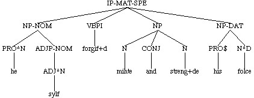
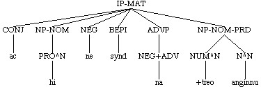

For users familiar with the PPCME2, significant differences in policy are
flagged .
A note on the examples
The examples in the manual have been taken from the corpus but may have
been lightly edited in some cases for pedagogical purposes. The examples
which begin with "(NODE" are partial tokens extracted from the corpus with
CorpusSearch. The
manual was completed before the corpus itself, and in some cases further
changes to the corpus may have resulted in the token numbers on the
examples differing from those in the corpus. Please do not use examples
from the manual without checking them.
The text of the corpus is that of the Dictionary of Old English, Old English Corpus. Errors have been silently corrected; any other alterations to the text are indicated by comments. Many of these texts are still in copyright. Please ensure that your use of the texts in any published material does not contravene copyright law. The copyright of the annotated corpus resides with the University of York, and of all supporting documentation with Ann Taylor and the University of York.
Glossary
The following terms have specific meanings within the annotation
scheme. Words in boldface are defined.
The definition of a token
The texts in the corpus are divided into tokens. A token consists most
basically of one main verb (or verb sequence) with all associated arguments
and adjuncts. The majority of tokens therefore are matrix IPs (IP-MAT), but
they may also be CPs (e.g., direct questions CP-QUE). When a constituent
smaller than the clause is used as a complete utterance (as for example, in
answer to a question Where did you go? To the beach) it constitutes
its own token. Each token is enclosed in a "wrapper", a pair of unlabelled
parentheses. The wrapper contains minimally the parsed text, a unique ID
label to identify the token, which includes the filename, the Dictionary of
Old English (DOE) short title for the text, and some way of finding the
token in the text (page or line number, for instance). The Dictionary of
Old English identifiers are included in the text at the point that they
occur in the original. Generally this coincides with the beginning of a
token, in which case the identifier is included in the wrapper.
( (CODE <T03010000800,25>) <-- Dictionary of Old English identifier
(IP-MAT (NP-NOM (NUM^N An) (N^N woruldcynincg)) <-- parsed text (IP-MAT)
(HVPI h+af+d)
(NP-ACC (NP (Q fela)
(NP-GEN (N^G +tegna)))
(CONJP (CONJ and)
(NP-ACC (ADJ^A mislice) (N^A wicneras))))
(. ;)) (ID copreflives,+ALS_[Pref]:25.14)) <-- ID node
( (CODE <T03050005900,159>)
(CP-QUE-SPE (WADVP-1 (WADV Hu)) <-- CP-QUE token
(IP-SUB-SPE (ADVP *T*-1)
(MDP mage)
(NP-NOM (PRO^N we)
(ADJP-NOM (ADJ^N blinde)))
(NP-ACC (D^A +tone) (ADJ^A blindan))
(VB geh+alan))
(. ?)) (ID coaelive,+ALS_[Julian_and_Basilissa]:159.1034))
( (PP (PP (P For) <-- PP token (answer to question)
(NP-DAT (Q^D miclum) (N^D gesceade)))
(, .)
(CONJP (CONJ &) (ADV eac)
(PP (P for)
(NP (N neode))))
(. .)) (ID cocathom1,+ACHom_I,_13:283.79.2424))
( (CODE <T03020001000,16>) <-- a series of tokens
(IP-MAT (NP-NOM (D^N Se) (N^N f+ader))
(BEPI is)
(NP-NOM-PRD (N^N angin))
(. ,)) (ID coaelive,+ALS_[Christmas]:16.13))
( (IP-MAT (CONJ and)
(NP-NOM (D^N se) (N^N sunu))
(BEPI is)
(NP-NOM-PRD (N^N angin))
(. ,)) (ID coaelive,+ALS_[Christmas]:16.14))
( (IP-MAT (CONJ and)
(NP-NOM (D^N se) (ADJ^N halga) (N^N gast))
(BEPI is)
(NP-NOM-PRD (N^N angin))
(. ;)) (ID coaelive,+ALS_[Christmas]:16.15))
( (IP-MAT (CONJ ac)
(NP-NOM (PRO^N hi))
(NEG ne)
(BEPI synd)
(ADVP (NEG+ADV na))
(NP-NOM-PRD (NUM^N +treo) (N^N anginnu))
(. ,)) (ID coaelive,+ALS_[Christmas]:16.16))
( (CODE <T03050005000,136>)
(IP-MAT-SPE (NP-NOM (PRO$^N Eower) (N^N godas))
(BEPI synd)
(VBN^N (VBN^N agotene) (CONJ o+d+de) (VBN^N agrafene)) <-- conjoined verbs with no complements
(. ,)) (ID coaelive,+ALS_[Julian_and_Basilissa]:136.1020))
( (IP-MAT (CONJ and)
(NP-NOM (NR^N Maurus))
(VBD (VBD r+adde) (CONJ and) (VBD rehte)) <-- conjoined verbs sharing complements
(NP-ACC (PRO^A hit))
(NP-DAT (NR^D Flore))
(. .)) (ID coaelive,+ALS_[Maur]:160.1583))
( (CODE <T03130004000,124>)
(IP-MAT (ADVP-TMP (ADV^T Nu))
(VBPI (VBPI +tencst) <-- verbs sharing a clausal complement
(CONJP *ICH*-1))
(NP-NOM (PRO^N +du))
(CONJP-1 (CONJ and) (VBPI cwi+dst))
(, ,)
(CP-QUE-SPE (WADVP-2 (WADV hu))
(IP-SUB-SPE (ADVP *T*-2)
(MDPI m+ag)
(NP-NOM (PRO^N ic))
(NP-ACC (D^A +t+at) (ADJ^A ece) (N^A lif))
(VB gebycgan)))
(. ?)) (ID coaelive,+ALS[Ash_Wed]:124.2766))
( (CODE <T03020003000,69>) <-- token with associated dependent clauses
(IP-MAT (ADVP-TMP (ADV^T +Aft))
(CP-ADV (P gif)
(C 0)
(IP-SUB (NP-NOM (Q^N hwylc) (ADJ^N gewytleas) (N^N man))
(VBPI wen+d)
(CP-THT (C +t+at)
(IP-SUB (NP-NOM (PRO^N he))
(NP-ACC-RFL (PRO^A hine)
(ADJP-ACC (ADJ^A sylfne)))
(VBD geworhte)))))
(, ,)
(ADVP-TMP (ADV^T +tonne))
(VBP axie)
(NP-NOM (PRO^N we))
(CP-QUE (WADVP-1 (WADV hu))
(C 0)
(IP-SUB (ADVP *T*-1)
(NP-NOM (PRO^N he))
(MDD mihte)
(NP-ACC-RFL (PRO^A hine)
(ADJP-ACC (ADJ^A sylfne)))
(VB gewyrcean)
(CP-ADV (P gif)
(C 0)
(IP-SUB (NP-NOM (PRO^N he))
(ADVP-TMP (ADV^T +ar))
(NEG+BEDI nes)))))
(. .)) (ID coaelive,+ALS_[Christmas]:69.55))
( (IP-MAT (CONJ ac)
(NP-NOM *con*)
(BEPI bi+t)
(VBN gebysgod)
(PP (P mid)
(NP-DAT (D^D +tam) (NUM^D anum) (N^D +dinge)))
(CP-ADV (P o+d+t+at) <-- dependent clause with conjoined
(C 0) subordinate IPs
(IP-SUB (IP-SUB (NP-NOM (D^N +t+at) (N^N ge+toht))
(VBPS gewyte))
(CONJP (CONJ and)
(IP-SUB-CON (NP-NOM (ADJ^N o+der))
(VBPS cume)))))
(. .)) (ID coaelive,+ALS_[Christmas]:133.109))
( (IP-MAT-SPE (NP-NOM (PRO^N he)
(ADJP-NOM (ADJ^N sylf)))
(VBPI forgif+d)
(NP (N mihte) (CONJ and) (N streng+de))
(NP-DAT (PRO$ his) (N^D folce))
(. ;)) (ID copreflives,+ALS_[Pref]:19.11))

Because the annotation lacks a VP node, the verb(s) and all its arguments
(internal and external) and adjuncts are immediately dominated by the IP
node; that is, they are all sisters.
( (CODE <T03020000600,11>)
(IP-MAT (NP-NOM (D^N +Ta) (ADJ^N iudeiscan))
(VBDI axodon)
(NP-ACC (NPR^A Crist))
(CP-QUE (WNP-NOM-1 (WPRO^N hw+at))
(C 0)
(IP-SUB (NP-NOM-PRD *T*-1)
(NP-NOM (PRO^N he))
(BEDS w+are)))
(. .)) (ID coaelive,+ALS_[Christmas]:11.8))
( (CODE <T03030003900,131>)
(IP-MAT (NP-NOM (PRO^N Heo))
(VBD aflygde)
(ADVP (ADV eac))
(ADVP (ADV swylce))
(NP-ACC (D^A +ta) (ADJ^A fulan) (N^A deofla))
(PP (P fram)
(NP-DAT (RP+VBN^D ofs+attum) (N^D mannum)))
(PP (P +turh)
(NP-ACC (ADJ^A so+dne) (N^A geleafan)))
(. .)) (ID coaelive,+ALS_[Eugenia]:131.267))
Within the IP certain word-level categories may be immediately dominated by
IP with no intervening phrasal node. These are all verbs, finite and
non-finite, particles (RP, FP), sentential conjunctions (CONJ), negation
(NEG) and single-word interjections (INTJ). All other constituents of the
IP are phrasal. The internal and external syntax of these phrases will be
discussed below (Phrasal constituents
of IP).
( (IP-MAT (CONJ ac) <-- sentential conjunction
(NP-NOM (PRO^N hi))
(NEG ne) <-- negation
(BEPI synd) <-- finite verb
(ADVP (NEG+ADV na))
(NP-NOM-PRD (NUM^N +treo) (N^N anginnu))
(. ,)) (ID coaelive,+ALS_[Christmas]:16.16))

( (CODE <T03040010200,349>)
(IP-MAT (NP-NOM (PRO^N Hi))
(VBDI eodon) <-- finite verb
(ADVP-TMP (ADV^T +ta))
(RP in) <-- adverbial particle
(, ,)
(PTP-NOM (NP-ACC (D^A +tone) (ADJ^A +almihtigan))
(VAG^N herigende))
(. ,)) (ID coaelive,+ALS_[Basil]:349.684))
( (CODE <T03020006000,133>)
(IP-MAT (CONJ And) <-- sentential conjunction
(PTP-NOM (ADVP (ADV swa))
(VAG^N styrigende))
(BEPI is) <-- finite verb
(NP-NOM (D^N seo) (N^N sawul))
(CP-ADV (C +t+at)
(IP-SUB (NP-NOM (PRO^N heo))
(FP fur+don) <-- focus particle
(PP (P on)
(NP-DAT (N^D sl+ape)))
(NEG ne) <-- negation
(VBPI gestyl+t)))
(. ;)) (ID coaelive,+ALS_[Christmas]:133.106))
(CODE <T03030012600,406>)
(IP-MAT (ADVP-TMP (ADV^T +Ta))
(VBDI cw+a+d)
(NP-NOM (D^N se) (N^N h+alend))
(PP (P to)
(NP-DAT (D^D +dam) (ADJ^D halgan) (N^D m+adene)))
(, ,)
(IP-MAT-SPE (INTJ Eala) <-- interjection
(NP-NOM-VOC (PRO^N +du)
(NP-NOM-PRN (NPR^N Eugenia)))
(, ,)
(NEG ne) <-- negation
(BEPH beo)
(NP-NOM (PRO^N +tu))
(VBN afyrht))
(. .)) (ID coaelive,+ALS_[Eugenia]:406.436))
The minimal contents of a complete IP-MAT or IP-SUB are a subject and a
finite verb (for non-finite IPs see Non-finite
IPs). If an overt subject is not present in the text, an empty one of
the appropriate type is added. The most common empty subject is a subject
elided under conjunction (NP-NOM *con*). The other types are expletive
subjects and "pro" subjects (for details, see
Empty subjects).
( (CODE <T03030012500,403>)
(IP-MAT (CONJ Ac)
(NP-NOM (D^N se) (N^N h+alend)) <-- overt subject
(VBDI com)
(PP (P mid)
(NP-DAT (ADJ^D heofonlicum) (N^D leohte)))
(. ,)) (ID coaelive,+ALS_[Eugenia]:403.433))
( (IP-MAT (CONJ and)
(NP-NOM *con*) <-- subject elided under conjunction, same
(VBD brohte) referent as subject of previous clause
(NP-DAT (D^D +dam) (N^D m+adene))
(NP-ACC (ADJ^A m+arne) (N^A bigleofon)
(, ,)
(NP-ACC-PRN (ADJ^A snawhwitne) (N^A hlaf)))
(. ,)) (ID coaelive,+ALS_[Eugenia]:403.434))
(NODE (IP-SUB (NP-NOM *exp*) <-- empty expletive subject
(NP-DAT (PRO^D him)) with impersonal verb
(VBPI lyst))
(ID coaelive,+ALS_[Christmas]:56.46))
Although all arguments are sisters of the verb, the subject is always
distinguishable from the other arguments. Thus in copular constructions,
where the subject and predicate are generally both nominative, the
predicate has an extended label -PRD (predicate) to distinguish it from the
nominative which is the subject. Likewise, in infinitives and small clauses
where both subject and predicate/object are commonly accusative, the
subject NP is distinguished by an extended label -SBJ.
( (CODE <T03020003300,73>)
(IP-MAT (NP-NOM (D^N Seo) (N^N sunne) <-- subject
(CP-REL (WNP-NOM-1 0)
(C +te)
(IP-SUB (NP-NOM *T*-1)
(RP+VBPI onliht)
(NP-ACC (Q^A ealne) (N^A mideard)))))
(BEPI is)
(NP-NOM-PRD (NP-GEN (NR^G Godes)) <-- predicate labelled -PRD
(N^N gesceaft))
(. ,)) (ID coaelive,+ALS_[Christmas]:73.60))
( (CODE <T03020007500,174>)
(IP-MAT (NP-NOM (D^N Se) (ADJ^N welwillende) (N^N scyppend))
(VBPI l+at)
(IP-INF (NP-ACC-SBJ (PRO^A hi)) <-- accusative subject
(HV habben)
(NP-ACC (NP-GEN (ADJ^G agenes) (N^G cyres)) <-- acc. object
(N^A geweald)))
(. ,)) (ID coaelive,+ALS_[Christmas]:174.133))
In addition to the finite IP-MAT and IP-SUB, there are two types of
non-finite IPs, infinitives and small clauses. These have similar internal
syntax to the finite clauses but lack a finite verb. Infinitives have a
non-finite verb and are not required to have a subject (although they may),
while small clauses always have a subject and have either a participial
verb form or a non-verbal predicate.
A third type of non-finite sentential constituent is the participial phrase (PTP). A participial phrase is any adjunct or modifying phrase headed by a participle (i.e., not including small clauses which may be headed by participles, but which are complements of the verb). PTPs follow the rules for IPs as far as the labelling of arguments, modifiers, etc. Some PTPs have subjects (absolutes) but as with infinitives one is not required. These types are discussed in detail below (Infinitives, Small clauses, Participial phrases).
The structure of CPs is discussed under Subordinate clauses.
Phrase structure
The internal syntax of all non-sentential categories (i.e., excluding IP and
CP) is fundamentally similar.
In summary:
Heads
The head of a phrase is a word (POS) level category (N, Q, ADJ, etc.). In
general the head of a phrase is of the same category as the phrase which
dominates it (NP dominates N, etc.). As intermediate bar levels are not
represented, the phrase immediately dominates the head.
There are a number of cases, however, where a phrase dominates a "head" of a different category. In some cases these represent head categories (such as N) being divided into subcategories (e.g., PRO (pronoun) is a subcategory of N);
in others, the head may have been elided leaving a modifier behind, a process which we do not directly represent.(NP-NOM (PRO^N he))
(NP-ACC (NP-ACC (ADJ^A fiftan) (N^A sunu))
(CONJP (CONJ &)
(NP-ACC (ADJ^A syxtan)))) <-- SUNU elided
(NP-DAT-ADT (NP-DAT (ADJ^D Ebreisceon) (N^D stafon))
(CONJP (CONJ &)
(NP-DAT (ADJ^D Grecisceon))) <-- STAFON elided
(CONJP (CONJ &)
(NP-DAT (NR Leden) (N^D stafon))))
In most cases, however, we do not wish to make a decision about which of
these analyses is the correct one. Thus, in general, when a phrase does not
dominate a head of the same category, the user may view the phrase as one
in which another word-level category acts as the head of a phrase, or
alternatively as a phrase in which the head is omitted, elided, or
non-overt for some reason.
Note that while a phrase may always be interpreted as having only one head (which may in some cases be non-overt), this does not mean that a phrase necessarily contains only one word-level category. See especially Modifiers and Compounds.
The biggest disparity between word and phrase labels is found in NPs. NPs can be "headed" by:
As mentioned above, we are somewhat agnostic as to what the appropriate analysis of each of these cases is, but we divide them up as follows: determiners and pronouns are treated primarily as heads, while adjectives, quantifiers, numbers, and participles are treated primarily as modifiers. This means that when one of the latter category is modified, it projects its own phrase level, while the former, while seldom modified in any case, never do so; that is, determiners and pronouns are always immediately dominated by NP, while the other categories may have an intermediate phrase between them and the NP, and in any case, should always be interpreted as having such an intervening phrase (see modifiers for more detail on the rules governing the inclusion of a phrase label for modifiers). In general, a non-N category acts as head of an NP when it fills a nominal argument position (subject, object, etc.) or is the complement of another head.
As a consequence of this, in certain cases an NP may dominate two potential heads, a pronoun or determiner plus a quantifier or number. For the rules governing the modification of pronouns, see Posthead modification.
(NP-NOM (PRO^N hie) (Q^N ealle)) (NP-ACC (Q^A eal) (D^A +t+at)) (NP-DAT (PRO^D him) (NUM^D anum))
In general, NPs dominating only a QP are fairly common, while NPs dominating only an ADJP are very rare, and usually appear in elision contexts.
(NP-DAT (Q^D +anigum)) <-- single Q dominated by NP
(NP-NOM (QP-NOM (ADV swa) (Q^N micel))) <-- modified Q dominated by QP/NP
(NP-NOM (ADJ^N o+der)))) <-- single ADJ dominated by NP
(NP-NOM (ADJP-NOM (ADV swy+de) (ADJ^N unforworhte))) <-- modified ADJ dominated by ADJP/NP
(PP (PP (P in)
(NP-ACC (ADJP-ACC (ADV swa) (ADJ^A frecne))
(N^A si+df+at)))
(CONJP (CONJ &)
(PP (P in)
(NP-ACC (ADJP-ACC (ADV swa) (ADJ^A gewinfulne))))) <-- elision
(CONJP (CONJ &)
(PP (P in)
(NP-ACC (ADJP-ACC (ADV swa) (ADJ^A uncu+de))
(N^A el+teodignesse)))))
NPs immediately dominating two nouns (common or proper) are compounds.
ADJPs have a more limited range of possible "heads":
In addition, numbers may occasionally appear to head ADJPs, but this is a special case always involving elision. See NUM + WINTRE/GEEARE (adjective)
PPs are always headed by prepositions, although in some cases the
preposition is cliticized to its complement (+T+ARON, etc.) and the POS tag
includes both.
ADVPs, apart from in the NEALLES +T+AT AN (+T+AT) construction, are always headed by adverbs.(PP (ADV+P +t+aron))
QPs are always headed by quantifiers.
Number phrases (NUMP) are largely a notational convenience and do not always behave as other (linguistically valid) phrases do. NUMPs always contain one or more NUMs possibly along with conjunctions, all of which collectively act as the head, somewhat like in compounds.
Modifiers
Modifiers are sisters to the head. Prehead single-word modifiers do not
project a phrase-level since the relations between the two words in such a
phrase are clear. In cases with a multi-word modifier (usually a modified
modifier), a phrase-level is projected to make the relations clear. In the
first example below, both adjectives modify the noun, and so both are
sisters to it; in the second the adverb modifies the adjective (and thus is
its sister) and the ADJP modifies the noun and is its sister.
(NP-DAT (ADJ^D o+drum) (ADJ^D langsumum) (N^D spr+acum)
(NP-ACC (ADJP-ACC (ADV swa) (ADJ^A deorwur+dne))
(N^A cr+aft))
Posthead modifiers are treated somewhat differently.
(NP-ACC (NP-GEN (NR^G Godes))
(N^A encgel) (ADJ^A haligne))
(NP-ACC-RFL (PRO^A +te)
(ADJP-ACC (ADJ^A sylfne)))
(NP-NOM (PRO^N hi) (Q^N ealle)) (NP-NOM (Q^N Ealle) (PRO^N hi)) (NP-ACC (PRO^A inc) (Q^A begen)) (NP-NOM (Q^N Sume) (PRO^N hi)) (NP-ACC (PRO^A +te) (NUM^A anne)) (NP-DAT (NUM^D anum) (PRO^D +te))
( (CODE <T03060004300,148>)
(IP-MAT (NP-NOM (PRO^N Hi))
(BEDI wurdon)
(ADVP-TMP (ADV^T +ta))
(QP-NOM (Q^N ealle))
(PP (P +turh)
(NP-ACC (D^A +ta) (N^A wundra)))
(VBN^N onbryrde)
(. ,)) (ID coaelive,+ALS_[Sebastian]:148.1298))
( (CODE <T06630011300,8.122.10>)
(IP-MAT (CONJ &)
(ADVP-LOC (ADV^L +t+ar))
(BEDI w+as)
(NP-NOM (NP-NOM (NR^N Romane))
(CONJP *ICH*-1))
(RP+VBN ofslagen)
(NUMP-NOM (NUM eahtatig) (NUM^N +tusenda))
(, ,)
(CONJP-1 (CONJ &)
(NP-NOM (NP-NOM (PRO$ heora) (N^N consul))
(CONJP (CONJ &)
(NP-NOM (PRO$ his) (NUM^N twegen) (N^N suna)))))
(. .)) (ID coorosiu,Or_5:8.122.10.2580))
( (CODE <T03070003300,125>)
(IP-MAT (NP-NOM (Q^N Sum) (N^N for+d+tegn)
(PTP *ICH*-1))
(BEDI w+as)
(ADVP-TMP (ADV^T +da))
(ADJP-NOM (ADJ^N welig))
(PP (P on)
(NP-DAT (D^D +tam) (N^D lande)))
(, ,)
(PTP-1 (NP-NOM-PRD (NR^N Florus)) <-- non-case-marked PTP traced
(VBN gehaten))
(. ,)) (ID coaelive,+ALS_[Maur]:125.1565))
For the treatment of modifiers of PPs, see Elements in
specPP.
Complements
Unlike modifiers complements always have a
phrase label, even when they are single words.
(NP (NP-GEN (NR^G Cristes))
(N geleafan)))
Note that while genitive NPs are treated like complements in all cases, possessive pronouns are
usually treated as modifiers (but see also
Possessive pronouns labelled NP for
cases where possessives are labelled as genitive rather than possessive.)
At IP-level, NP complements of the verb are always distinguished from NP adjuncts (see Arguments vs. adjuncts); but note that this distinction is sometimes difficult to make and such distinctions should be verified before being used in any analysis for which this distinction is crucial. For PPs this distinction is not made as it is notoriously unreliable.(NP-NOM (PRO$ heora) (N^N magas))
Within phrasal categories (except participle phrases which are essentially sentential in their internal syntax) the function of associated NPs is not indicated, apart from NPs of extent and appositives. NPs are simply labelled for case.
Within noun phrases NPs which are a sisters to the head are most commonly genitive (subjective/objective not distinguished), but occasionally dative. Dative/genitive ambiguous NPs in relation to a noun are taken by default as genitive as long as this gives a possible reading. Appositives on the head are distinguished by the -PRN label.
(NP-NOM (NP-GEN (D^G +tyssera) (N^G halgena))
(N^N f+ader))
(NP-NOM (NR^N Chromatius)
(NP-NOM-PRN (D^N se) (N^N heahgerefa))) <-- appositive
(NP (NP-DAT (D^D +t+are) (ADJ^D halgan) (N^D +trynnysse))
(N anlicnysse))
Similarly, within ADJPs and ADVPs
the function of NPs is not distinguished apart from NP/QP modifiers
indicating extent. NPs of extent also modify
PPs and adverbial clauses (CP-ADV) in which case they appear in specPP or specCP
position.
(ADVP-LOC (ADV^L gehende)
(NP-DAT (D^D +t+are) (NR^D Liddan)))
(ADVP (NP-GEN (Q^G ealra))
(ADV swi+dust))
(ADJP-NOM (ADJ^N uncu+d)
(NP-DAT (PRO^D him)))
(ADJP-NOM (NP-GEN (Q^G +alces) (N^G yfeles))
(ADJ^N orsorge)
(PP (P on)
(NP-DAT (ADJ^D ecere) (N^D blysse))))
Case labels are included on every phrasal label that dominates a
part-of-speech tag on which case is indicated. See the POS manual: Case for rules on how
case is assigned at word level.
(NP-ACC (D^A +done) (ADJ^A halgan) (N^A w+ar)
(NP-NOM (NUM^N twegen) (N^N gebro+dra)
(ADJP-NOM (VBN^N +a+telborene)
(PP (P for)
(NP (N worulde)))))
(NP (NP-GEN (PRO$ his) (NR^G drihtnes))
(N +tenunge))
(NP (QP (Q ma)
(PP (P +tonne)
(NP (NUMP (NUM twa) (NUM hund)))))
(NP-GEN (N^G punda)))
(NP (PRO$ his) (Q micclan) (N sige)
Case on subjects
When case is not
indicated on the word-level tag, nominative case is still added to the
phrase label if the phrase is the subject of a finite clause. Note that
this applies only in finite clauses and not in non-finite clauses, such as
infinitives and small clauses, where the subject is often not
nominative. In non-finite clauses subjecthood is indicated by the
-SBJ label, not case.
(NODE (ADVP-LOC (ADV^L +ter))
(NEG ne)
(MDD mihte)
(ADVP (NEG+ADV na))
(NP-NOM (QR ma)
(NP-GEN (N^G muneca)))
(VB wunian)
(, ,)
(CP-ADV (D^I +te) (P l+as)
(C +te)
(IP-SUB (NP-DAT (D^D +dam) (N^D gebro+drum))
(NP-NOM (N^N bigleofan))
(VBD ateorode)))
(ID coaelive,+ALS_[Maur]:265.1652))
(NODE (IP-SUB-SPE (ADVP-LOC (ADV^L +d+ar))
(BEPI beo+d)
(NP-NOM (NUM twentig)))
(ID cootest,Gen:18.31.744))
( (IP-MAT (CONJ and)
(ADVP (ADV eac))
(NP-NOM (Q fela))
(RP+VBDI wi+dcw+adon)
(NP-DAT (NP-GEN (D^G +t+as) (N^G cyninges))
(N^D h+asum))
(. ,)) (ID coaelive,+ALS_[Maccabees]:25.4853))
Case on predicates
Predicates are labelled nominative in finite clauses (but not necessarily
in non-finite clauses) except when case is not indicated
on the word label. Most such cases are Latin words
or phrases, place names, NPs involving
numbers (lengths of time, etc.), or else the trace of
an empty wh-operator.
( (CODE <T03020000800,13>)
(IP-MAT-SPE (NP-NOM (PRO^N Ic)
(CP-REL-SPE *ICH*-1))
(BEPI eom)
(NP-NOM-PRD (N^N anginn))
(, ,)
(CP-REL-SPE-1 (WNP-NOM-2 0)
(C +te)
(IP-SUB-SPE (NP-NOM *T*-2)
(PP (NP (PRO eow))
(P to))
(VBP spr+ace)))
(. .)) (ID coaelive,+ALS_[Christmas]:13.11))
( (IP-MAT-SPE (NP-NOM (PRO^N Ic))
(VBP hatte)
(NP-NOM-PRD (NR^N Albanus))
(. ,)) (ID coaelive,+ALS_[Alban]:61.4041))
(NODE (CP-ADV (P +ta)
(C +te)
(IP-SUB (NP-NOM (PRO^N he))
(BEDI w+as)
(NP-PRD (NUM twelf)
(NP-GEN (N^G wintra)))))
(ID coaelive,+ALS_[Martin]:23.5996))
(NODE (CP-REL (WNP-NOM-2 (D^N +t+at))
(C 0)
(IP-SUB (NP-NOM *T*-2)
(BEDI w+aron)
(NP-PRD (NUMP (NUM twelf) (NUM +tusend))
(NP-GEN (VAG^G wigendra) (N^G manna)))))
(ID coaelive,+ALS_[Maccabees]:365.5080))
( (CODE <T03020008200,186>)
(IP-MAT (NP-NOM (PRO^N Heo))
(BEPI is)
(NP-PRD (FW animus)
(, ,)
(IP-MAT-PRN (NP-NOM (D^N +t+at))
(BEPI is)
(XP (NP-NOM (N^N mod)))))
(, ,)
(CP-ADV (P +tonne)
(C 0)
(IP-SUB (NP-NOM (PRO^N heo))
(VBPI wat)))
(. .)) (ID coaelive,+ALS_[Christmas]:186.143))
( (CODE <T02650005600,130.96>)
(IP-MAT (NP-PRD (NR Samaria))
(VBD hatte)
(NP-NOM (NUM^N an) (N^N burh))
(. .)) (ID cocathom2,+ACHom_II,_13:130.96.2852))
(NODE (CP-REL (WNP-1 0)
(C +te)
(IP-SUB (NP-NOM (N^N menn))
(VBPI hata+d)
(IP-SMC (NP-SBJ *T*-1)
(NP-PRD (NR Liger)))))
(ID coaelive,+ALS_[Maur]:157.1581))
In small clauses and infinitives with passivized subjects, the predicate is
nominative. In small clauses with verbs of naming (see Small clauses with verbs of
naming) the predicate may be either nominative or accusative, and,
therefore, when the two are not formally distinct, ambiguous. In all other
cases for both small clauses and infinitives the predicate is assumed to be
the same case as the subject, which is almost always accusative. See also
Small clauses.
(NODE (IP-MAT (NP-NOM (PRO^N He))
(VBDI het)
(IP-INF (NP-ACC-SBJ (PRO^A us))
(BE beon)
(ADJP-ACC-PRD (ADJ^A mildheorte))
(NP-DAT (ADJ^D o+drum) (N^D mannum))
(ADVP-TMP (ADV^T symble))
(, ,)
(PP (P mid)
(NP-DAT (Q^D ealre) (N^D godnysse)))
(, ,)
(PP (ADV swa)
(P swa)
(CPX-CMP (IPX-SUB (NP-NOM (NR^N God) (ADJ^N sylf))
(BEPI is)))))
(. ;))
(ID coaelhom,+AHom_14:54.2031))
( (IP-MAT (CONJ and)
(NP-NOM *con*)
(VBDI het)
(IP-INF (NP-ACC-SBJ (PRO$ his) (N^A gebro+dra))
(BE beon)
(NP-ACC-PRD (PRO$ his) (N^A geferan)))
(. .))
(ID coaelive,+ALS_[Basil]:464.784))
Case on appositives
In general, an appositive will be in the same case as its antecedant,
although occasionally it may be nominative instead. We assume, unless there
is unambiguous evidence to the contrary, that the cases are the same, and
an ambiguous appositive takes case from an unambiguous antecedant and vice
versa. As usual, words that are never case-marked (most commonly in this
construction, place names) are not case-marked
in appositives either. Note that exceptionally, a phrase-label picks up
case from an appositive rather than the head when the head is a category that
is never marked for case.
(NP-NOM (PRO$^N ure) (N^N h+alend)
(NP-NOM-PRN (NR^N Crist)))
(NP-ACC (D^A +tone) (N^A martyr)
(NP-ACC-PRN (NR^A Mercurium)))
(NP-DAT (D^D +t+am) (ADJ^D halgan) (N^D m+adene)
(NP-DAT-PRN (NR^D Marian))) <-- ambiguous, takes dative from antecedant
(NP (NR Constantian) <-- both ambiguous, no case
(NP-PRN (NP-GEN (D^G +t+as) (N^G caseres))
(N dohtor)))
(NP-DAT (D^D +d+are) (RP+VBN^D fores+adan) (N^D byrig)
(NP-PRN (NR Hierusalem))) <--- place name, no case
(NP-DAT (D^D +dam) (N^D h+alende)
(NP-DAT-PRN (NR^D Criste))
(NP-NOM-PRN (NP-GEN (Q^G ealra) (N^G woruldra)) <-- nominative appositive on non-nominative
(N^N alysend)))
(NODE (NP-DAT (D^I +dan) (N^D sancte)
(CP-REL (WNP-NOM-1 0)
(C +te)
(IP-SUB (NP-NOM *T*-1)
(PP (P on)
(NP-DAT (D^D +d+ara) (N^D cyrcean)))
(VBDI l+ag)))
(, ,)
(NP-NOM-PRN (NR^N Mercurius)
(NP-NOM-PRN (D^N se) (N^N martyr))))
(ID AelfLives,+ALS_[Basil]:253.633))
(NODE (NP-DAT (NR Antiochia) <-- phrase with case from appositive
(NP-DAT-PRN (D^D +t+are) (ADJ^D +anlican) (N^D byrig)))
(ID AelfLives,+ALS_[Basil]:297.669))
Case on participles
Participles which are part of the main verb sequence, (i.e., immediately
dominated by IP) are marked for case only when overtly inflected; that is,
when inflection is not zero for past participles, and not -e for
present participles. Where ambiguous, participles with BE are taken to
agree with the subject, while participles with HAVE are taken to agree with
the object (see also HAVE with object and
participle).
( (CODE <T03060004100,135>)
(IP-MAT (NP-NOM (NP-GEN (D^G +D+ara) (N^G martyra)
(NP-GEN-PRN *ICH*-1))
(N^N f+ader)
(NP-GEN-PRN-1 (NR^G Marcellianes) (CONJ and) (NR^G Marces)))
(BEDI w+as)
(NP-ACC-TMP (NUM endlyfan) (N^A gear))
(PP (P +ar)
(NP-DAT (PRO$ his) (N^D fulluhte)))
(VBN geuntrumed) <--- uninflected
(PP (P +turh)
(NP-ACC (D^A +ta) (Q^A mycclan) (N^A fotadle))))
(ID coaelive,+ALS_[Sebastian]:135.1290))
( (IP-MAT-SPE (NP-NOM (PRO^N Ic))
(NP-RFL (PRO me))
(VBP gebidde)
(PP (P to)
(NP-DAT (D^D +dam) (NR^D Gode)
(CP-REL-SPE (WNP-NOM-1 0)
(C +te)
(IP-SUB-SPE (NP-NOM *T*-1)
(BEPI bi+d)
(VAG eardigende) <-- uninflected
(PP (P on)
(NP-DAT (N^D heofonum)))
(PP (P mid)
(NP-DAT (ADJ^D healicum) (N^D m+agen+trymme)))))))
(. .)) (ID coaelive,+ALS_[Sebastian]:415.1462))
( (IP-MAT (CONJ and)
(NP-NOM (PRO^N hi))
(BEDI wurdon)
(VBN^N geh+alede) <-- inflected with BE
(. .)) (ID coaelive,+ALS_[Maur]:203.1614))
(NODE (CP-ADV (P +donne)
(C 0)
(IP-SUB (NP-NOM (NR^N Moyses))
(NEG ne)
(MDD mihte)
(ADVP-TMP (ADVR^T lencg))
(HV habban)
(NP-ACC (PRO$ his) (N^A handa))
(VBN^A astrehte))) <-- inflected with HAVE
(ID coaelive,+ALS[Pr_Moses]:16.2878))
Apart from participles of naming,
modifying and attributive participles, alone or dominated by a participle phrase (PTP), are labelled with
the case of the item they modify, whether they are overtly inflected or not
(note that this differs from participles as part of the main verb
sequence). When separated from the item they modify, they are not
traced to it.
( (CODE <T03050008100,221>)
(IP-MAT (NP-NOM (PRO^N Hi))
(VBDI feollon)
(ADVP-TMP (ADV^T +ta))
(QP-NOM (Q^N ealle))
(PP (P to)
(NP-DAT (NP-GEN (NR^G Iulianes))
(N^D fotum)))
(, ,)
(PTP-NOM (PP (P mid)
(NP (N geleafan)))
(VAG^N herigende) <-- labelled for case in PTP
(NP (NP-GEN (D^G +t+as) (N^G h+alendes))
(N naman)))
(. .)) (ID coaelive,+ALS_[Julian_and_Basilissa]:221.1072))
( (IP-MAT (CONJ and)
(NP-NOM (NR^N Crist))
(NP-ACC (PRO^A hi))
(ADVP-TMP (ADV^T +da))
(RP+VBDI underfeng)
(, ,)
(PTP-ACC (PP (P for)
(NP (PRO$ his) (N naman)))
(VBN^A gemartyrode))
(. .)) (ID coaelive,+ALS[Agnes]:243.1878))
Unlike most other participles, "naming" participles (GEHATEN, GECIGEN,
etc.), are rarely inflected in attributive use. These are therefore not
labelled with case unless it is overt, in the same way as participles which
are part of the main verb sequence. When separated from the item they
modify they are traced in order to make relations clear.
(NODE (NP-ACC (Q^A sumne) (N^A messepreost)
(, ,)
(PTP (NP-NOM-PRD (NR^N Eutropius))
(VBN gehaten))) <-- verb of naming not case-marked
(ID coaelive,+ALS_[Eugenia]:66.228))
( (CODE <T03040018800,566>)
(IP-MAT (NP-NOM (NUM^N AN) (ADJ^N +a+tele) (N^N l+ace)
(PTP *ICH*-1))
(BEDI w+as)
(VAG wunigende)
(PP (P on)
(NP-DAT (D^D +t+are) (N^D byrig)))
(, ,)
(PTP-1 (NP-NOM-PRD (NR^N IOSEP)) <-- traced
(VBN gehaten))
(, ,)
(ADJP-NOM (ADJ^N h+a+den) (CONJ and) (ADJ^N Iudeisc))
(. ;)) (ID coaelive,+ALS_[Basil]:566.859))
Dative and instrumental case
At word-level instrumental case is only labelled on words which are
unambiguously istrumental in isolation; that is, masculine and neuter
determiners, quantifiers, and adjectives. Ambiguous dative/instrumentals are
labelled dative.
At phrase level, instrumental is taken as a sub-category of dative, and word-level instrumental labels project dative phrases. Most commonly an NP-DAT will contain at least one word labelled dative in any case, but it may be the case that a dative phrase dominates only an instrumental-labelled word.
Note that we are quite literal in labelling potential instrumentals, with the result that some instrumentals may in fact be alternate phonetic forms of dative inflections (+tan for +tam, -e for -um, etc.). Any investigator interested in the instrumental should satisfy her/himself as to the validity of these labels.
(NP-DAT (Q^I ealle) (D^D +dam) (N^D fyrste))
(PP (P mid)
(NP-DAT (Q^I mycle) (N^D weorede)))
(PP (P mid)
(NP-DAT (D^I +ty) (ADJR^D m+arran) (N^D hungre)))
(PP (P mid)
(NP-DAT (ADJ^I godcunde) (N^D m+agene)))
(PTP-DAT-ABS (RP+VBN^D for+dferdum)
(NP-DAT-SBJ (NR^D Deusdedit)
(NP-DAT-PRN (D^I +don) (N^D arcebiscope))))
(PP (P +after)
(NP-DAT (D^I +ton)))
(PP (P mid)
(NP-DAT (Q^I ealle)))
(NP-DAT (Q^I ealle) (PRO$ his) (N^D ibro+drum)
(CONJP (CONJ &)
(NX-DAT (PRO$ heora) (N^D childran))
(ADV samod)))
Function labels
The rest of the extended labels indicate the various functions of the
constituents of the clause. Like case, functions that are marked on the
word-level tag (locative, directional, and temporal on adverbs) percolate up to
the phrasal level. Function labels that are not word-based, however, are
only used at the level at which the function is relevant. Thus temporal,
locative and directional information is marked on adverbs at word-level and
percolates up to the highest level, since these adverbs (THEN, THERE,
HITHER, etc.) themselves contain this information. NPs being used temporally (THIS YEAR) on the
other hand are only labelled as temporal at IP-level. Most function labels
are only used at one level.
( (CODE <T03020003100,71>)
(IP-MAT (NP-NOM (PRO^N He))
(BEDI w+as)
(ADVP-TMP (ADV^T +afre)) <-- temporal adverbs marked at all levels
(ADJP-NOM-PRD (ADJ^N ungeworht))
(. ,)) (ID coaelive,+ALS_[Christmas]:71.56))
(NODE (ADVP-TMP (ADVP-TMP (ADV^T hwilon))
(, ,)
(CONJP (ADVP-TMP (NEG+ADV na) (ADV^T symle))))
(ID coaelive,+ALS_[Maur]:327.1684))
( (CODE <T03040000300,9>)
(IP-MAT (ADVP-TMP (ADV^T +Ta))
(VBD wunode)
(NP-NOM (D^N se) (N^N cn+aplingc))
(PP (P on)
(NP-DAT (ADJ^D Cappadoniscre) (N^D byrig)))
(NP-ACC-TMP (NUM fif) (N^A gear)) <-- temporal NP marked at IP-level
(PP (P on)
(NP (N lare)))
(. ,)) (ID coaelive,+ALS_[Basil]:9.456))
( (IP-MAT (CONJ &)
(NP-NOM *con*)
(NP-ACC (D^A +t+at))
(VBDI (VBDI heold) (CONJ &) (VBD reahte))
(NP-ACC-TMP (NP-ACC (NUM +treotteno) (N^A ger))
(CONJP (CONJ &)
(NP-ACC (NUM syx) (N^A mona+d)))
(CONJP (CONJ &)
(NP-ACC (NUM tyn) (N^A dagas))))
(. .)) (ID cobede,Bede_1:13.54.24.513))
( (CODE <T03020007500,174>)
(IP-MAT (NP-NOM (D^N Se) (ADJ^N welwillende) (N^N scyppend))
(VBPI l+at)
(IP-INF (NP-ACC-SBJ (PRO^A hi)) <-- -SBJ on non-nom. subjects
(HV habben)
(NP-ACC (NP-GEN (ADJ^G agenes) (N^G cyres))
(N^A geweald)))
(. ,)) (ID coaelive,+ALS_[Christmas]:174.133))
List of extended labels
In addition to the labels listed below, all CPs and IPs may also have the
extended label -SPE indicating direct speech;
it is always the last label. Many also cooccur with -PRN, the label for appositives and
parentheticals. This label is the last label preceding -SPE.
The following labels occur with categories other than CP/IP, with the exception of free relatives, which are treated as NPs in our system, and therefore take NP function labels.IP-MAT matrix IP IP-SUB subordinate IP (i.e., dominated by CP) IP-SUB-CON conjunct subordinate clause IP-INF complement infinitive IP-INF-NCO non-complement infinitive IP-INF-ABS infinitival absolute IP-SMC small clause CP-ADV adverbial CP-CAR clause-adjoined relative CP-CLF cleft CP-CMP comparative CP-DEG degree complement CP-EOP infinitival relative/purpose clause with gap CP-FRL free relative CP-QUE question CP-REL relative CP-THT that-clause
IP/CP labels apply in the following order:-ADT adjunct -DIR directional -EXT extent -LFD left-dislocation -LOC locative -PRD predicate -PRN appositive or parenthetical -RFL reflexive -RSP resumptive -SPE direct speech -SBJ non-nominative subject -TMP temporal -VOC vocative
With NP/QP/ADJP/NUMP labels, case is always the first label, followed by any function labels. There are only a small number of cases in which more than one function label is added. Of these only -RFL-ADT (reflexive adjunct) is at all common.IP/CP -type -PRN -SPE
-RFL-ADT reflexive adjunct (very common) -RSP-ADT resumptive adjunct (5x) -RFL-RSP reflexive resumptive (2x) -SBJ-RSP non-nominative subject resumptive (8x) -PRD-RSP resumptive predicate (6x)
Adjectives are most commonly modified by adverbs or ADVPs. A single adverb
does not project a phrase as a modifier, but an adverbial phrase does (see Modifiers for the general rules for
modifiers).
(ADJP-NOM (ADV swa) (ADJ^N bysig))
(ADJP-NOM (ADV to) (ADJ^N lang))
(ADJP-NOM (ADV swi+de) (ADJ^N digle))
(ADJP-NOM (ADV gelice) (ADJ^N mihtige))
(ADJP-NOM (ADV ful) (ADJ^N gode))
(ADJP-NOM (ADVP (ADV swa) (ADV wundorlice)) <-- multi-word modifier
(ADJ^N bli+de)) with phrase label
(ADJP-NOM (ADVP (ADV swi+de) (ADV $wel))
(ADJ^N gerad))
(ADJP-NOM-PRD (ADVP (ADV swi+de) (ADV ungefr+aglice))
(ADJ^N good))
Modification by extent NPs
Adjectives may also be modified by NPs of extent (ten miles long),
which are genitive when it is possible to tell. Because many numbers are not
labelled for case (see Case on
numbers) these extent NPs are often not labelled for case either. See
also Number as head or modifier and NPs of extent. Comparative adjectives are modified
by dative NPs of extent (see also Comparative
adjectives with instrumental determinters/quantifiers)
(NODE (ADJP-NOM (NP-GEN-EXT (Q^G manegra) (N^G mila))
(ADJ^N lang))
(ID coaelhom,+AHom_15:41.2163))
(NODE (ADJP-ACC (NP-GEN-EXT (NUM eahta) (N^G fota))
(ADJ^A bradne))
(ID cobede,Bede_1:9.46.2.392))
(NODE (ADJP-NOM-PRD (NP-EXT (NUM L) <-- no case when no case on number
(NP-GEN (N^G furlanga)))
(ADJ^N long))
(ID coalex,Alex:28.3.327))
(NODE (ADJP-NOM-PRD (NP-DAT-EXT (NUM^D twam) (N^D f+a+dmum)) <-- dative extent
(ADJR^N l+angre) with comparative
(PP (P +tonne)
(CP-CMP (WADJP-1 0)
(C 0)
(IP-SUB (ADJP-PRD *T*-1)
(NP-NOM (D^N +t+at) (N^N imet))
(BEDS were)))))
(ID corood,LS_5_[InventCrossNap]:368.358))
(NODE (ADJP-NOM-PRD (NP-DAT-EXT (NUMP-DAT (NUM xii) (NUM^D +dusendum))
(NP-GEN (N^G si+da)))
(ADJR^N beorhtran)
(PP (P +donne)
(CP-CMP-SPE (WADJP-1 0)
(C 0)
(IPX-SUB-SPE=0 (ADJP-PRD *T*-1)
(NP-NOM (NP-GEN (Q^G ealles) (N^G middangeardes))
(N^N eor+de))))))
(ID cosolsat2,Sol_II:50.51))
Comparative adjectives with instrumental determinters/quantifiers
An instrumental determiner/quantifier with a comparative adjective is taken
as a modifier. When the
determiner/quantifier occurs alone it does not project a phrase, as usual;
when modified (only in the case of quantifiers) it projects a QP labelled
dative (see Dative and instrumental
case) with the extended label for extent
(-EXT) (see Modification by extent
NPs). A genitive determiner +D+AS, if present, is taken as an
independent modifier.
(ADJP-NOM-PRD (D^I +te) (ADJR^N trumre))
(ADJP-NOM-PRD (D^I +te) (ADJR^N geleaffulra))
(ADJP-NOM-PRD (D^G +t+as) (D^I +te) (ADJR^N woddran)) <-- genitive and
instrumental
(ADJP-ACC (Q^I mycele) (ADJR^A lengran))
(ADJP-NOM-PRD (Q^I micle) (ADJR^N +a+delra))
(ADJP-NOM-PRD (QP-DAT-EXT (ADV sua) (Q^I micle))
(ADJR^N beteran))
(ADJP-NOM-PRD (QP-DAT-EXT (ADV sua) (Q^I micle))
(ADJR^N sorgfulra))
Complements of adjectives
While argument NPs are distinguished from adjuncts at the IP-level by the
-ADT label (see Arguments vs. adjuncts),
this distinction is harder to make reliably in phrasal constituents, and we
therefore do not attempt to do so. NPs and PPs within ADJPs will commonly
be complements of the adjective, but this is not necessarily the case.
( (CODE <T03040007600,272>)
(IP-MAT-SPE (ADVP-TMP (ADV^T +Ta))
(VBDI com)
(NP-NOM (Q^N sum) (N^N cempa)
(ADJP-NOM (ADJ^N uncu+d)
(NP-DAT (PRO^D us) (Q^D eallum))) <-- NP complement
(, ,) of ADJ
(PTP-NOM (ADVP (ADV swi+te))
(VBN^N gew+apnod)))
(. ,)) (ID coaelive,+ALS_[Basil]:272.627))
(NODE (IP-SUB (ADVP *T*-1)
(NP-NOM (PRO^N heo))
(VBDS l+age)
(PP (P on)
(NP-DAT (N^D sl+ape)))
(ADJP-NOM (ADJ^N hal)
(NP-DAT (Q^D eallum) (N^D limum)))) <-- NP adjunct of ADJ
(ID coaelive,+ALS_[+Athelthryth]:90.4200))
In copular clauses it can be particularly difficult to determine whether a
dative NP is a complement of an adjectival predicate or an adjunct (e.g.,
dative of interest, etc.). By default, in copular clauses with a dative and
a predicate adjective, the dative is put at IP-level. Again by default all
such datives are labelled as arguments rather than adjuncts; i.e., they do
not have an -ADT label. Note that this only applies to copular clauses. In
all other environments a dative may appear as the complement of an
adjective within the ADJP.
( (CODE <T03020009900,215>)
(IP-MAT (ADVP (ADV Witodlice))
(NP-NOM (D^N +ta) (ADJ^N arleasan))
(BEPI beo+d)
(NP-DAT (PRO$ heora) (ADJ^D yfelum) (N^D weorcum))
(ADJP-NOM-PRD (ADJ^N gelice))
(. .)) (ID coaelive,+ALS_[Christmas]:215.170))
( (IP-MAT (CONJ and)
(NP-NOM *con*)
(BEDI w+aron)
(NP-DAT (PRO$ heora) (N^D hl+afdige))
(ADJP-NOM-PRD (ADJ^N holde) (CONJ and) (ADJ^N getrywe))
(. .)) (ID coaelive,+ALS_[Eugenia]:44.217))
Genitives on the other hand are always taken as complements of the
adjective and included in the ADJP. Adjectives that take genitive or dative
(e.g. WYR+TE) are treated in ambiguous cases, that is, with a gen/dat
ambiguous complement, as taking genitive. The NP is therefore labelled
genitive and put inside the ADJP. Complements that are acc/gen/dat or acc/dat
ambiguous are unlabelled for case in the usual way.
(NODE (IP-SUB (ADVP *T*-2)
(NP-NOM (PRO^N he))
(BEDI w+as)
(ADJP-NOM-PRD (NP-GEN (N^G bealwes))
(ADJ^N full)))
(ID coaelive,+ALS[Agnes]:394.1990))
(NODE (IP-SUB (NP-NOM (D^N +ta) (ADJ^N leahterfullan))
(NEG+BEDI n+aron)
(ADJP-NOM-PRD (NP-GEN (NEG+Q^G nanre) (N^G miltsunge)) <-- gen/dat ambiguous complement labelled genitive
(ADJ^N wur+de)))
(ID coaelive,+ALS_[Martin]:738.6449))
(NODE (IP-MAT-SPE (NP-NOM-PRD (NP-GEN (N^G kyninges))
(N^N sunu))
(NP-NOM (PRO^N he))
(BEPI is)
(, ,)
(ADJP-NOM (ADJ^N ancenned)
(NP (PRO$ his) (N f+ader))) <-- acc/gen/dat amb.
(. ,))
(ID coaelive,+ALS_[Thomas]:80.7603))
Superlative adjectives plus genitive
Superlative adjectives may take a genitive complement.
(NODE (IP-SUB (NP-NOM (N^N morberian))
(NP-DAT (PRO^D him))
(BEPI is)
(ADJP-NOM-PRD (NP-GEN (N^G metta))
(ADJS^N leofost)))
(ID coaelive,+ALS_[Maccabees]:574.5216))
( (IP-MAT-SPE (VBI ara)
(NP-ACC (PRO^A me)
(ADJP-ACC (ADJS^A unges+aligost)
(NP-GEN (Q^G ealra) (N^G wifa))))
(. ,)) (ID coblick,HomS_26_[BlHom_7]:89.120.1145))
NUM + WINTRE/GEARE (adjective)
Adjectives ending in WINTRE/GEARE (ANWINTRE, TWELFWINTRE) meaning x
years old, are somewhat problematic because the numbers are often
separated from the rest of the adjective. They are treated as follows.
When all the numbers are attached to -WINTRE:
When all the numbers are separated:(ADJP (ADJ twelfwintre))
(ADJP (NUM 4) (ADJ wintre))
(ADJP (NUMP (NUM 4) (CONJ and) (NUM 20))
(ADJ wintre))
When some numbers are attached and some are not, the whole is treated as an elision structure with wintre elided:
(ADJP (ADJP (NUM fif)) <--- fif [wintre]
(CONJP (CONJ &)
(ADJP (ADJ sixtigwintre))))
(ADJP (ADJP (ADJ sixtigwintre))
(CONJP (CONJ &)
(ADJP (NUM fif)))) <--- fif [wintre]
The same construction occurs with GEARE and NIHTE.
(ADJP-NOM (NUMP (NUM an) (CONJ and) (NUM twentig))
(ADJ^N geare))
(NODE (IP-INF (VB acwellan)
(NP-ACC (Q^A ealle) (D^A +ta) (N^A hysecild)
(NP-GEN (D^G +t+are) (N^G burhscire))
(PP (P fram)
(NP-DAT (ADJ^D twywintrum) (N^D cilde)))
(PP (P o+d)
(NP-DAT (ADJP-DAT (NUM^D anre) (ADJ^D nihte))))))
(ID cocathom1,+ACHom_I,_5:219.72.957))
Ordinal numbers
Ordinal numbers are labelled as adjectives. As with the "wintre" adjectives they are often made up of more than a
single word (e.g. four and twentieth). In this case each part of the
ordinal is labelled literally with the appropriate pos tag (NUM, CONJ, ADJ)
and the whole is labelled ADJP. The numbers are not case-marked as usual
with compound numbers of
this type. Occasionally, as in the final examples, more than one part is
ordinal although only a single number is intended.
(NODE (NP-GEN (D^G +t+as)
(ADJP-GEN (NUM feower) (CONJ and) (ADJ^G hundneogantigan))
(N^G sealmes))
(ID cobenrul,BenR:43.68.7.837))
(NODE (NP-NOM (NP-NOM (NP-NOM (D^N se) (ADJ^N hundteontige+da))
(CONJP (CONJ and)
(NP-NOM (D^N se)
(ADJP-NOM (NUM eahta) (CONJ and) (ADJ^N +trittige+ta)))))
(CONJP (CONJ and)
(NP-NOM (NP-NOM (D^N se) (ADJ^N hundteontige+da))
(CONJP (CONJ and)
(NP-NOM (D^N se)
(ADJP-NOM (NUM +treo) (CONJ and) (ADJ^N feowertige+da))))))
(CONJP (CONJ and)
(NP-NOM (NP-NOM (D^N se) (ADJ^N hundteontige+da))
(CONJP (CONJ and)
(NP-NOM (D^N se)
(ADJP-NOM (NUM feower) (CONJ and) (ADJ^N feowertige+ta)))))))
(ID cobenrul,BenR:18.43.18.564))
(NODE (NP-DAT (D^D +dam)
(ADJP-DAT (ADJ^D hundteontige+dan) (CONJ and) (ADJ^D nigonteo+dan)) <-- 119th psalm
(N^D sealme))
(ID cobenrul,BenR:18.42.20.557))
(NODE (XP (PP (P fram)
(NP-DAT (D^D +dam) <-- 117th
(ADJP-DAT (ADJ^D hundteontige+tan) (CONJ and) (ADJ^D seofonteo+dan))))
(PP (P o+d)
(NP-ACC (D^A +tone) <-- 127th
(ADJP-ACC (ADJ^A hundteontige+dan) (CONJ and) (NUM seofon) (CONJ and) (ADJ^A twentige+dan)))))
(ID cobenrul,BenR:18.43.8.562))
Predicate adjectives have the extended label -PRD like other predicates.
( (IP-MAT-SPE (ADJP-NOM-PRD (ADJ^N Wundorlic))
(BEPI is)
(NP-NOM (NR^N God))
(PP (P on)
(NP-DAT (PRO$ his) (N^D halgum)))
(. ;)) (ID copreflives,+ALS_[Pref]:19.10))
( (CODE <T03340008000,292>)
(IP-MAT-SPE (BEPH Beo)
(ADVP-TMP (ADV^T nu))
(ADJP-NOM-PRD (ADV swi+te) (ADJ^N anr+ade))
(. .)) (ID coaelive,+ALS_[Thomas]:292.7731))
( (IP-MAT-SPE (CONJ and)
(BEI bi+d)
(ADJP-NOM-PRD (ADJ^N gearwe))
(PP (P to)
(NP (N fulluhte)))
(PP (P mid)
(NP-DAT (ADJ^D fullum) (N^D geleafan)))
(. .)) (ID coaelive,+ALS_[Thomas]:246.7706))
Possessive pronouns labelled ADJP
First and second person personal possessive pronouns, although tagged PRO$,
are inflected as adjectives, and
thus when they act as predicates they are labelled as ADJPs.
( (IP-MAT-SPE (CONJ and)
(CP-ADV-SPE (P gif)
(C 0)
(IP-SUB-SPE (NP-NOM (PRO^N heo))
(BEPI bi+d)
(ADVP (ADV swa))
(VBN geopenad)))
(NP-NOM (PRO^N heo))
(BEPI bi+d)
(ADVP-TMP (ADV^T si+d+tan))
(ADJP-NOM-PRD (PRO$^N ure))
(. ,)) (ID coaelive,+ALS_[Basil]:333.673))
3rd person possessives, on the other
hand, outside of possessive use are labelled as genitive pronouns.
Non-predicate adjectives
When adjectives are neither part of an NP nor acting as predicates, they
are given a phrase label and appear at IP-level. Such adjectives may
function in a number of ways (secondary predicate, result, etc.), or simply
be separated modifiers but we do not
make any distinctions among them. In order to make the relationship clear
between separated adjectives and their heads, both are case-marked, even in
cases where normally one or both of the words individually would be
considered ambiguous and not labelled. This applies generally to modifiers
apart from participles of naming.
( (IP-MAT (CONJ and)
(NP-NOM (D^N se) (N^N mann))
(ADVP-TMP (ADV^T sona))
(ADJP-NOM (ADJ^N gesundful))
(VBDI aras)
(. ,)) (ID coaelive,+ALS_[Sebastian]:359.1427))
( (IP-MAT (CONJ and)
(NP-NOM *con*)
(NP-ACC (PRO^A hine))
(ADVP-LOC (ADV^L +d+ar))
(VBD afedde)
(ADJP-ACC (ADJ^A unafunden)) <-- not inflected, but labelled for
(PP (P o+d) case from HINE
(NP-ACC (D^A +t+at)))
(. .)) (ID coaelive,+ALS_[Basil]:480.796))
(NODE (IP-SUB-SPE (NP-NOM (PRO^N +tu))
(NP-ACC (PRO^A me)) <-- normally ambiguous, but here
(ADVP-TMP (ADV^T eft)) labelled from GESUNDNE
(VBPI gesihst)
(ADJP-ACC (ADJ^A gesundne))
(PP (P of)
(NP-DAT (D^D +tam) (N^D fyre)))))
(ID coaelive,+ALS_[Julian_and_Basilissa]:322.1137))
All phrases headed by a participle that is not part of the main verb
sequence (i.e., not part of a periphrastic passive or perfect verb
sequence) are labelled PTP. Reliably distinguishing the different functions
of such phrases in all cases is extremely difficult, and thus PTP is a
formal not a functional label and PTPs fulfill a number of different
functions including adjunct participials, absolutes, and some reduced
relatives.
PTPs inherit case from the participial head in the usual way. All participles in PTPs are marked for case except the "naming" participles (GE)HATEN, (GE)CIGEN, (GE)CWEDEN, and (GE)NAMEN, which rarely inflect; likewise PTPs dominating such participles are not marked for case. Note that the way case is assigned to participles in PTPs is different from the way it is assigned when the participle is part of the verb sequence in an IP. See Case on participles.
( (CODE <T03060014900,461>)
(IP-MAT (ADVP-TMP (ADV^T +Ta))
(VBD +ateowde)
(NP-NOM (NR^N Sebastianus))
(PP (P on)
(NP-DAT (N^D sw+afne)))
(NP-DAT (NUM^D anre) (N^D wudewan)
(, ,)
(PTP (NP-NOM-PRD (NR^N Lucina)) <-- non-case-marked PTP
(VBN geciged))
(, ,)
(NP-NOM-PRN (ADJP-NOM (ADV swi+de) (ADJ^N +awf+ast))
(N^N man)))
(. ,)) (ID coaelive,+ALS_[Sebastian]:461.1489))
PTPs are essentially sentential in their internal syntax. This means that
unlike in ADJPs, for example, modifying adverbs have a
phrasal label, adjunct NPs are labelled -ADT,
etc. It also means that any NP without an ADT label within a PTP is an
argument of the participle.
(ADJP-NOM (ADV swi+de) (ADJ^N halig))
(IP-MAT (NP-NOM (PRO^N he))
(BEDI w+as)
(ADVP (ADV yfele))
(VBN^N geborene))
(PTP-NOM (ADVP (ADV yfele))
(VBN^N geborene))
(PTP-NOM (QP-DAT-ADT (Q^D micclum)) <-- adjunct
(NP-DAT (NR^D Gode)) <-- argument
(VAG^N +tanciende))
PTPs which are contiguous to the NP which they modify are contained within that NP. If the head of the NP is a noun, this applies to both preceding and following PTPs; when the head is a pronoun, however, only following PTPs are put inside; preceding PTPs are at IP-level. PTPs that are not contiguous to the NP they modify are treated like ADJPs and not traced as long as they are case-marked. If they are not case-marked, however, they are traced in order to make the relationship clear.
( (IP-MAT (CONJ and)
(ADVP (ADV efne))
(ADVP-TMP (ADV^T +ta))
(ADVP-TMP (ADV^T sona))
(NP-ACC (PRO^A hine))
(VBD gesohte)
(NP-NOM (NUM^N an) (N^N wif)
(PTP-NOM (VAG^N biddende)
(NP-GEN (PRO$ his) (N^G +tingunge))
(PP (P to)
(NP-DAT (NUM^D anum) (ADJ^D ge+tungenum) (N^D ealdormen)))))
(. .)) (ID coaelive,+ALS_[Basil]:169.563))
(NODE (IP-SUB (NP-NOM (D^N +da) (N^N munecas)
(PTP-NOM (QP-DAT-ADT (Q^D micclum))
(VBN^N afyrhte)))
(BEDI wurdon)
(VBN^N awrehte)
(PP (P +durh)
(NP (PRO$ his) (ADJ wodlican) (N stemne))))
(ID coaelive,+ALS_[Maur]:315.1678))
( (IP-MAT (CONJ and)
(NP-NOM *con*)
(VBDI ferdon)
(PP (P to)
(NP (NR Hierusalem)))
(PTP-NOM (NP-ACC (N^A fulluht))
(VAG^N secende)) <-- PTP separated
(. ;)) (ID coaelive,+ALS_[Basil]:54.480))
( (CODE <T06860006900,7.34.28>)
(IP-MAT (CONJ &)
(NP-NOM (PRO^N hi))
(NP-ACC (PRO^A hine)
(PTP-ACC (VBN^A gebundenne))) <-- PTP following pronoun
(PP (P to)
(NP-DAT (PRO^D him)))
(VBDI l+addon)
(. .)) (ID cobede,Bede_1:7.34.28.283))
( (IP-MAT (CONJ &)
(PTP-NOM (VAG^N re+dgiende)) <-- PTP preceding pronoun
(NP-NOM (PRO^N hi))
(NP-ACC (NR^A Libertinum))
(VBDI sohton)
(. ,)) (ID cogregdC,GD_1_[C]:2.16.14.148))
( (CODE <T03040018800,566>)
(IP-MAT (NP-NOM (NUM^N AN) (ADJ^N +a+tele) (N^N l+ace)
(PTP *ICH*-1))
(BEDI w+as)
(VAG wunigende)
(PP (P on)
(NP-DAT (D^D +t+are) (N^D byrig)))
(, ,)
(PTP-1 (NP-NOM-PRD (NR^N IOSEP)) <-- traced
(VBN gehaten))
(, ,)
(ADJP-NOM (ADJ^N h+a+den) (CONJ and) (ADJ^N Iudeisc))
(. ;)) (ID coaelive,+ALS_[Basil]:566.859))
There is no PTP label in the PPCME2. Phrases
headed by participles are either adjunct participials
(IP-PPL), absolutes (IP-ABS), or
reduced relatives (RRC).
EFNE, FOR, FUL, GENOH, HWENE, NA, SWA, SWI+TE, TO, +TUS, UNGEMET
LANGE and HWENE with a temporal adverb, PP, or CP-ADV, is also taken as modifying.(ADVP (ADV swa) (ADV w+alhreowlice)) (ADVP (ADV swa) (ADV +teah)) (ADVP (ADV for) (ADV wel)) (ADVP (ADV swy+de) (ADV rihtlice))
(PP (PP (P on)
(NP-DAT (N^D anginne)
(NP-GEN (N^G Cristendomes))))
(, ,)
(CONJP (CONJ and) (ADV eac)
(ADVP-TMP (ADV lange) (ADV^T sy+d+dan))))
(NODE (IP-MAT-SPE (PP (P Ymb)
(NP-ACC (D^A +t+at) (ADJ^A ilce)))
(NP-NOM (PRO^N +tu))
(VBDI giddodest)
(ADVP-TMP (ADV^T nu))
(ADVP-TMP (ADV hwene) (ADV^T +ar)))
(ID coboeth,Bo:5.12.21.172))
(NODE (IP-SUB (NP-NOM (PRO^N hi))
(PP (P on)
(NP-DAT (N^D life)))
(, .)
(ADVP-TMP (ADV lange) (ADV^T +ar))
(VBDI +deowdon))
(ID cocathom2,+ACHom_II,_21:187.224.4137))
All other possible combinations are labelled separately when they are
written separately. When written as one word they are labelled as one
word. These include such common pairs as:
+TA +GIET, NU +GIET, +T+AR INN(E), +TA SONA
( (CODE <T03060007500,247>)
(IP-MAT (NP-NOM (PRO^N Hi))
(ADVP-TMP (ADV^T +ta))
(ADVP-TMP (ADV^T sona))
(QP-NOM (Q^N begen))
(VBDI begyrndon)
(NP-ACC-RFL (PRO^A hi))
(ADVP (ADV caflice))
(. ,)) (ID coaelive,+ALS_[Sebastian]:247.1357))
( (CODE <T03130007800,231>)
(IP-MAT (NP-NOM (NR^N God))
(MDD wolde)
(ADVP-TMP (ADV^T +ta))
(ADVP-TMP (ADV^T git))
(NP-ACC (PRO$ his) (N^A wundra))
(VB geswutelian)
(PP (P +turh)
(NP-ACC (D^A +t+at) (ADJ^A anr+ade) (N^A wif)))
(. ,)) (ID coaelive,+ALS[Ash_Wed]:231.2834))
( (IP-MAT-SPE (ADVP-TMP (ADV^T nu))
(ADVP-TMP (ADV^T iu))
(NP-NOM (PRO^N ic))
(BEPI eom)
(VBN beclypt)
(PP (P mid)
(NP-DAT (PRO$ his) (ADJ^D cl+anum) (N^D earmum)))
(. .)) (ID coaelive,+ALS[Agnes]:45.1739))
Comparative adverbs with instrumental determinters/quantifiers
An instrumental determiner/quantifier with a comparative adverb is taken as
a modifier. When the determiner/quantifier
occurs alone it does not project a phrase as usual; when modified (only in
the case of quantifiers) it projects a QP labelled dative (see Dative and instrumental case) with the
extended label for extent (-EXT).
(ADVP (D^I +ty) (ADVR ea+d))
(ADVP (D^I +de) (ADVR ra+dor))
(ADVP (Q^I micle) (ADVR +a+telicor))
(ADVP (Q^I myccle) (ADVR +tearlwislicor)
(ADVP (Q^I ealle) (D^I +te) (ADVR swy+tor))
(ADVP (QP-DAT-EXT (ADV swa) (Q^I micle))
(ADVR swi+dor))
(ADVP (QP-DAT-EXT (ADV ful) (Q^I lytle))
(D^I +ty) (ADV bet))
NEAH, GEHENDE, FEOR
Although NEAH, GEHENDE, and FEOR act in some ways like prepositions in that
they appear to take dative complements, they are also modified by such
adverbs as SWA, SWI+DE, etc. in a non-prepositional way. We have therefore
labelled these three words as adverbs when they do not appear as part of an
NP or are not overtly inflected (in which case they are labelled as adjectives). A dative which goes
with the adverb is included within the ADVP. The default labelling for
cases where the expected inflection is zero is to take them as locative
adverbs unless they occur within an NP. This includes the copular
case. NEAN and FEORRAN are labelled as directional
adverbs. NEAH/NEAN meaning nearly is labelled simply ADV.
(NODE (IP-SUB (NP-NOM (NP-GEN (D^G +tysre) (N^G worulde))
(N^N geendung))
(BEPI is)
(ADVP-LOC (ADV swy+de) (ADV^L gehende)))
(ID coaelive,+ALS_[Memory_of_Saints]:225.3457))
(NODE (IP-SUB (NP-NOM (NR^N Petrus))
(BEDI w+as)
(PP (P on)
(NP (NR Liddan)))
(, ,)
(ADVP-LOC (NP-DAT (D^D +tam) (N^D lande))
(ADV swa) (ADV^L gehende)))
(ID coaelive,+ALS[Peter's_Chair]:59.2302))
(NODE (IP-SUB-SPE (NP-NOM (PRO^N we))
(ADVP-TMP (ADV^T +ta))
(ADVP-LOC (ADV wel) (ADV^L neah)
(NP-DAT *ICH*-1))
(VBDI stodan)
(NP-DAT-1 (NP-DAT (D^D +tam) (N^D bearwum))
(CONJP (CONJ &)
(NP-DAT (D^D +t+am) (N^D godsprecum)))))
(ID coalex,Alex:37.1.468))
(NODE (CP-THT (C +t+at)
(IP-SUB (NP-NOM (D^N +ta) (N^N foreweardas))
(BEDI w+aron)
(ADVP-LOC (ADV^L feor)
(NP-DAT (D^D +d+am) (N^D f+astenne)))
(VBN^N gesette)))
(ID coorosiu,Or_4:10.106.17.2222))
( (IP-MAT-SPE (CONJ &)
(ADVP (ADV +teahhw+a+dere))
(NEG ne)
(VBP fare)
(NP-NOM (PRO^N ge))
(ADVP-LOC (ADV to) (ADV^L feor))
(. :)) (ID cootest,Exod:8.28.2672))
Combinations like +T+AR NEAH are parsed as follows:
(ADVP-LOC (ADVP-LOC (ADV^L +t+ar)) (ADV^L neah))
Other adverbs taking datives
Adverbs with an adjectival counterpart that takes dative (GELIC, GECWEMLIC,
etc.) may also take dative complements.
(ADVP (NP-DAT (NR^D Gode))
(ADV gecwemlice))
(ADVP (NP-DAT (ADJ^D halgum))
(ADV gelice))
Superlative adverbs plus genitive
Superlative adverbs commonly take genitive complements, but may also takes
datives
(ADVP (NP-GEN (Q^G ealra))
(ADVS swi+dust))
(ADVP-TMP (ADVS^T +arest)
(NP-GEN (NR^G Ongolcyninga)))
(ADJP (NP-DAT (NR^D Gode))
(ADJS^N leofost))
Subclasses of ADVPs (locative, temporal, directional)
A limited number of types of adverb are distinguished, locative (-LOC),
temporal (-TMP), and directional (-DIR). These functions are marked on the
part-of-speech label, and percolate up to the phrase level. For the most
part these are closed classes, although sometimes a word may belong to more
than one class (e.g., BEFORE may be temporal or locative), and in unclear
cases are often left unlabelled. For details, see the POS manual: Adverbs.
( (IP-MAT (CONJ and)
(NP-NOM *con*)
(VBDI het)
(IP-INF (NP-ACC-SBJ (PRO^A hine))
(ADVP-TMP (ADV^T symble)) <-- temporal ADVP
(BE beon)
(PP (P +atforan)
(NP (PRO$ his) (N gesih+de))))
(. .)) (ID coaelive,+ALS_[Sebastian]:13.1219))
( (CODE <T03060001500,40>)
(IP-MAT (ADVP-LOC (ADV^L +T+ar)) <-- locative ADVP
(VBDI comon)
(ADVP (ADV eac))
(NP-NOM (PRO$ heora) (N^N magas)))
(ID coaelive,+ALS_[Sebastian]:40.1234))
( (IP-MAT (CONJ and)
(NP-NOM (PRO^N hi))
(ADVP-DIR (ADV^D +tyder)) <-- directional ADVP
(VBDI comon)
(PP (P mid)
(NP-DAT (Q^D mycelre) (N^D sarnyssa)))
(CP-FRL-LOC (WADVP-LOC-1 (ADV^L +t+ar))
(C 0)
(IP-SUB (ADVP-DIR *T*-1)
(NP-NOM (PRO$ heora) (N^N suna))
(BEDI w+aron)
(VBN^N geh+afte)))
(. ,)) (ID coaelive,+ALS_[Sebastian]:34.1232))
( (CODE <T03070000500,15>)
(IP-MAT (PP (P On)
(NP-ACC (Q^A sumne) (N^A s+al)))
(VBD eode)
(NP-NOM (D^N se) (ADJ^N halga) (NR^N Maurus))
(ADVP-DIR (ADV^D ham)) <-- HAM as directional ADVP
(PP (P to)
(PP (NP-DAT (N^D mynstre))
(P weard)))
(PP (P mid)
(NP-DAT (PRO$ his) (N^D gebro+drum)))
(. .)) (ID coaelive,+ALS_[Maur]:15.1505))
(NP-NOM (PRO^N hi) (Q^N ealle)) <-- Q following (NP-DAT (PRO^D us) (Q^D eallum)) (NP-GEN (PRO^G ure) (Q^G ealra)) (NP-DAT (N^D lande) (Q^D gehwilcum)) (NP-ACC (N^A +ahta) (Q^A micle)) (NP-NOM (N^N monn) (Q^N hwa)) (NP-NOM (Q^N Sume) (PRO^N hi)) <-- Q preceding (NP-NOM (Q^N Ealle) (PRO^N ge)) (NP-DAT (Q^D eallum) (PRO^D us)) (NP-ACC (Q^A ealle) (N^A gesceafta)) (NP-GEN (Q^G ealra) (N^G fisca)) (NP-NOM (Q^N Ealle) (N^N +ting))
Quantifiers as heads or modifiers
Like numbers, quantifiers
either modify nominals (i.e. agree in case) or take genitive
complements. For ambiguous cases, the rule is that the undeclinable quantifiers
FELA, MA, L+AS and LYT take genitives, while all others are taken as
modifiers. This follows the majority pattern, although there are clear
cases which go against it in both directions.
(NP (Q ma) <-- uninflected Q with genitive by default
(NP-GEN (N^G suna)))
(NP-NOM (Q^N manige) (N^N suna)) <-- inflected Q agreeing by default
(NP (Q fela)
(NP-GEN (N^G synna)))
(NP-NOM (Q^N manega) (N^N synna))
(NP-NOM (Q Fela) (ADJ^N dyslice) (N^N d+ada)) <-- uninflected Q agreeing
(NP-ACC (Q fela) (N^A +ting))
(NP-DAT (Q feala) (N^D estmettum))
(NP-DAT (Q^D sumum) <-- inflected Q with genitive
(NP-GEN (PRO$ his) (N^G godspella)))
(NP-ACC (Q^A eall)
(NP-GEN (D^G +t+are) (RP+VBN^G fores+adan) (N^G scire)))
(NP-DAT (Q^D eallum)
(NP-GEN (PRO$ his) (N^G synna)))
Floated quantifiers
Like other separated modifiers, floated
quantifiers are labelled with QP and case but are not traced to their head
noun.
( (CODE <T03060004300,148>)
(IP-MAT (NP-NOM (PRO^N Hi))
(BEDI wurdon)
(ADVP-TMP (ADV^T +ta))
(QP-NOM (Q^N ealle))
(PP (P +turh)
(NP-ACC (D^A +ta) (N^A wundra)))
(VBN^N onbryrde)
(. ,)) (ID coaelive,+ALS_[Sebastian]:148.1298))
(NODE (IP-SUB (NP-NOM (NR^N Philippus))
(VBD aflygde)
(NP-ACC (D^A +ta) (N^A cristenan))
(PP (P of)
(NP (NR Alexandrian)))
(QP-ACC (Q^A ealle))
(PP (P on)
(ADVP-TMP (ADV^T +ar))))
(ID coaelive,+ALS_[Eugenia]:30.208))
(NODE (IP-SUB (NP-NOM (PRO^N he))
(MDD wolde)
(NP-DAT (PRO^D him))
(ADJP-NOM-PRD (ADJ^N hold))
(BE beon)
(QP-DAT (Q^D eallum)))
(ID coaelive,+ALS_[Maur]:230.1630))
Adverbial use of quantifiers
Inflected quantifiers used adverbially are labelled QP-case-ADT. Uninflected quantifiers
like MA, LYT, L+AS, FELA and NAHT are labelled QP-ADT. The quantifier may
be bare or modified. See Case on quantifiers for
how "inflected" is defined in this context.
(QP-GEN-ADT (Q^G ealles)) (QP-DAT-ADT (ADV swa) (Q^D mycclum)) (QP-ADT (Q ma)) (QP-ADT (NEG+Q naht))
( (IP-MAT (CONJ ac)
(NP-DAT (PRO^D him))
(QP-ADT (NEG+Q naht)) <-- adverbial quantifier, no case
(NEG ne)
(VBD derode)
(NP-NOM (D^N se) (ADJ^N deofollica) (N^N w+ata))
(. .)) (ID coaelive,+ALS_[George]:73.3116))
( (IP-MAT-SPE (CONJ and)
(NP-NOM (PRO^N we))
(NEG+MDPI nella+d)
(QP-ADT (NEG+Q nateshwon))
(NP-RFL (PRO us))
(ADVP-TMP (NEG+ADV^T n+afre))
(RP+VB totweman)
(. .)) (ID coaelive,+ALS_[Eugenia]:66.230))
( (CODE <T03060003600,118>)
(IP-MAT (ADVP-TMP (ADV^T +Ta))
(AXDI ongunnon)
(NP-NOM (PRO$ heora) (N^N magas))
(QP-DAT-ADT (Q^D mycclum)) <-- adverbial quantifier, dative
(VB behreowsian)
(CP-THT (C +t+at)
(IP-SUB (NP-NOM (PRO^N hi))
(ADVP-TMP (ADV^T +afre))
(NP-ACC (D^A +ta) (N^A martyras))
(VB misl+aran)
(MDDI woldon)))
(. ,)) (ID coaelive,+ALS_[Sebastian]:118.1282))
(NODE (IP-SUB (NP-NOM (PRO^N he))
(PP (P on)
(NP-DAT (N^D life)))
(QP-ACC-ADT (Q^A lytel)) <-- adverbial quantifier, accusative
(VBDI swanc)
(PP (P for)
(NP-DAT (NR^D Criste))))
(ID coaelhom,+AHom_17:119.2420))
QPs of extent
The function "extent" is only annotated on phrases used as modifiers of
other categories, never at IP-level. Extent phrases at IP-level are
labelled as ordinary adjuncts. Extent phrases
are always NPs or QPs and mostly modify
adjectives, adverbs, quantifiers, PPs, and adverbial clauses (CP-ADV). See
also Instrumental determiners and
quantifiers with comparative.
(ADJP-NOM-PRD (QP-DAT-EXT (ADV Swa) (Q^I mycele))
(ADJR^N deorewur+dre))
(ADJP-NOM-PRD (QP-DAT-EXT (ADV swa) (Q^I micle))
(ADJR^N ea+dmodra))
(NP-ACC (QP-ACC (QP-DAT-EXT (ADV swa) (Q^I miccle))
(QR^A maran))
(N^A edlean))
(ADVP (QP-DAT-EXT (ADV swa) (Q^I micle))
(ADVR swi+dor))
Uninflected EALL
When EALL is uninflected it may either modify a nominative noun of any
gender or a neuter accusative or be used adverbially. It is extremely
difficult to distinguish these two cases in some instances. We have adopted
the following strategy for these cases.
( (IP-MAT (CONJ and)
(NP-NOM (Q^N eall)
(NP-GEN (D^G +t+as) (N^G m+adenes))
(N^N mod))
(NP-DAT (PRO^D him))
(BEDI wear+d)
(VBN ameldod)
(. .)) (ID coaelive,+ALS_[Eugenia]:63.227))
( (IP-MAT (CONJ and)
(NP-NOM (Q^N eall) (D^N seo) (N^N m+ag+d))
(PP (P on)
(NP-DAT (N^D mode)))
(BEDI wear+d)
(VBN astyred)) (ID coaelive,+ALS_[Eugenia]:104.250))
( (CODE <T03060009700,299>)
(IP-MAT (PP (P +After)
(NP-DAT (D^D +tysum) (N^D worde)))
(NP-NOM (PRO^N he))
(BEDI wear+d)
(QP (Q eall))
(VBN geh+aled)
(. ,)) (ID coaelive,+ALS_[Sebastian]:299.1391))
( (IP-MAT (CONJ and)
(NP-NOM *con*)
(VBDI fleow)
(QP (Q eall))
(NP-DAT-ADT (N^D blode))
(. .)) (ID coaelive,+ALS_[Maur]:163.1585))
( (CODE <T03030004200,138>)
(IP-MAT (CONJ And)
(NP-NOM (PRO^N heo))
(NP-ACC (D^A +t+at) (ADJ^A re+de) (N^A attor)
(CP-REL *ICH*-2))
(QP (Q eall))
(RP ut)
(VBDI aspaw)
(, ,)
(CP-REL-2 (WNP-NOM-1 0)
(C +te)
(IP-SUB (NP-NOM *T*-1)
(NP-DAT (PRO^D hyre))
(VBD d+arede)))
(. ,)) (ID coaelive,+ALS_[Eugenia]:138.272))
( (IP-MAT (CONJ and)
(NP-NOM *con*)
(VBD ar+arde)
(NP-ACC (D^A +t+at) (N^A mynster))
(QP (Q eall))
(PP (P be)
(NP-DAT (NP-GEN (NR^G Maures))
(N^D r+ade)))
(PP (P wi+d)
(NP-ACC (D^A +ta) (Q^A mycclan) (N^A ea)
(CP-REL (WNP-1 0)
(C +te)
(IP-SUB (NP-NOM (N^N menn))
(VBPI hata+d)
(IP-SMC (NP-SBJ *T*-1)
(NP-PRD (NR Liger)))))))
(. .)) (ID coaelive,+ALS_[Maur]:157.1581))
When split, multi-word numbers are treated as cases of word-level conjunction. This follows from the fact that NUMP is just a notational convenience to group numbers.(NUMP (NUM feower) (CONJ and) (NUM twentig)) (NUMP (ADV wel) (NUM hundseofontig)) (NUMP-ACC (FP huru) (NUM^A +dry)) (NUMP (Q fela) (NUM +tusend)) (NUMP-NOM (Q^N sume) (NUM twa) (NUM +tusend)) (NUMP (Q^G ealles) (NUM fiftyne))
(NP-NOM (NUMP (NUM twentig) (NUM +tusend)
(CONJP *ICH*-2))
(NP-GEN (N^G manna))
(CONJP-2 (CONJ and) (NUM six) (NUM $hundred)))
Note in particular the position of the genitive complement (NP-GEN) in
relation to the NUMP when present. The NUMP in this case is simply a
notational device to group the number and the whole number is really the
head, just as in the example with a single-word number.
(NP-ACC (NUM^A anne) (N^A stan))
(NP-NOM-PRD (NUMP (NUM twa) (CONJ and) (NUM hundseofontig))
(N^N geare))
(NP-NOM (NUM^N +try)
(NP-GEN (D^G +t+ara) (N^G wyrhtena)))
(NP-NOM (NUMP (NUM an) (NUM hund)) <-- NUMP and NP-GEN sisters
(NP-GEN (N^G muneca)))
Number as head or modifier
Numbers either modify nouns or take nominal complements in the genitive. In
ambiguous cases, i.e., when a numeral without overt case is followed by a
noun in -A which could be gen.pl. or nom/acc.pl, the following policy is
used, which uses the majority pattern as a default.
(NP-NOM (NUM siex) (N^N suna))
(NP (NUM +tritig)
(NP-GEN (N^G suna)))
Separated numbers
When the number phrase modifies an NP from which it is separated, like
other modifiers it is labelled NUMP-case,
if appropriate; if it is case-marked it is not traced to its head.
( (CODE <T06630011300,8.122.10>)
(IP-MAT (CONJ &)
(ADVP-LOC (ADV^L +t+ar))
(BEDI w+as)
(NP-NOM (NP-NOM (NR^N Romane))
(CONJP *ICH*-1))
(RP+VBN ofslagen)
(NUMP-NOM (NUM eahtatig) (NUM^N +tusenda))
(, ,)
(CONJP-1 (CONJ &)
(NP-NOM (NP-NOM (PRO$ heora) (N^N consul))
(CONJP (CONJ &)
(NP-NOM (PRO$ his) (NUM^N twegen) (N^N suna)))))
(. .)) (ID coorosiu,Or_5:8.122.10.2580))
(NODE (IP-SUB (NP-NOM (PRO^N hi))
(ADVP (ADV bealdlice))
(NUMP-NOM (NUM^N twegen))
(PP (P to)
(NP-DAT (N^D anwige)))
(VBDI eodon)
(PP (P on)
(NP (NP-GEN (D^G +t+are) (N^G ea))
(N brycge))))
(ID coaelive,+ALS_[Exalt_of_Cross]:52.5595))
( (IP-MAT (IP-MAT-0 (CONJ ond)
(NP-NOM (PRO$ his) (N^N ban))
(BEPI syndon)
(NUMP-NOM (NUM^N healfe))
(PP (P on)
(NP-DAT (NR^D Scottum))))
(, ,)
(IPX-MAT=0 (NUMP-NOM (NUM^N healfe))
(PP (P on)
(NP-DAT (NR^D Gl+astingabyrig)))
(PP (P on)
(NP-DAT (NP-GEN (NR Sancta) (NR^G Marian))
(N^D mynstre))))
(. .)) (ID comart3,Mart_5_[Kotzor]:Au31,A.6.1618))
The number AN
Note that AN is always labelled as a number, even when it means
alone. But see Focus
particles for weak ANA used as a focus particle.
( (IP-MAT-SPE (CP-ADV-SPE (P gif)
(C 0)
(IP-SUB-SPE (NP-NOM (PRO^N +tu))
(NP-ACC (PRO^A hi))
(VBPI onscunast)))
(NP-NOM (PRO^N wit))
(VBPI cwe+da+t)
(ADVP-TMP (ADV^T +tonne))
(NUMP-NOM (NUM^N an))
(. .)) (ID coaelive,+ALS[Agatha]:77.2056))
Complex number expressions
The syntax of complex number expressions, such as +tridde healf hund,
twam l+as feowertigum, anes wana +trittigum, etc. is often fairly
opaque. We have therefore not tried to parse these expressions but have
used the following strategy. The parts of the expression are labelled
literally at the word level and the whole expression is then contained in a
NUMP.
(NP-DAT (NUMP-DAT (ADJ^D feor+dan) (NUM^D healfan)) (N^D geare)) (NP-NOM (NUMP-NOM (ADJ^N feor+de) (NUM^N healf) (NUM hund)) (NP-GEN (N^G scipa))) (NP-NOM (NUMP (ADJ^N feor+de) (NUM healfhund)) (NP-GEN (N^G scipa)))
(NUMP-NOM (NUM endleofan) (N^D si+tum) (NUM hund) (NUM $teontig) (NUM^N +tusenda))) (NUMP (NUM $X) (N^D si+dum) (NUM twelf)) (NUMP (NUM twelf) (N^D si+don) (NUM +trittig))
(NP (NUMP (NUM an) (QR leas) (NUM feowertig))
(NP-GEN (N^G kynehelma)))
(NP-TMP (NUMP (NUM^D Twam) (QR l+as) (NUM +dryttig))
(NP-GEN (N^G geara)))
(NP (NUMP (NUM^D tw+am) (QR l+as) (C +te) (NUM twentig))
(NP-GEN (N^G wintra))))
(NUMP-DAT (NUM^D twam) (QR l+as) (NUM^D feowertigum)) <-- dative from feowertigum
not twam
(NUMP-DAT (NUM^G anes) (ADJ wana) (NUM^D +trittigum))
(NP (NUMP (NUM^G anes) (ADJ won+te) (NUM syxtig))
(NP-GEN (N^G wintra)))
( (IP-MAT (NP-NOM (NUMP (ADV^T twia) (NUM seofon)))
(BEPI beo+d)
(NUMP-PRD (NUM feowertyne))
(. ;))
(ID cobyrhtf,ByrM_1_[Baker-Lapidge]:1.2.123.228))
(NODE (IP-MAT (NP-NOM (D^N +D+at) (N^N ger))
(BEPI by+d)
(VBN awend)
(PP (P mid)
(NP (NUMP (ADV^T twi) (NUM six))
(N hwyrfolunga)))
(. ,))
(ID cobyrhtf,ByrM_1_[Baker-Lapidge]:1.3.37.484))
(NP (QP (QR ma)
(PP (P +tonne)
(NP (NUMP (NUM twa) (NUM hund)))))
(NP-GEN (N^G punda)))
(NP-NOM (QP (QR ma)
(PP (P +tonne)
(NUMP (NUM fif))))
(N^N hlafas))
(NODE (IP-SUB (ADVP-LOC (ADV^L +t+ar))
(BEPS beo)
(NP-NOM (QP (QR l+as)
(PP (P +tonne)
(NP (NUM seofon))))))
(ID cobyrhtf,ByrM_1_[Baker-Lapidge]:1.2.223.319))
(NODE (ADJP-NOM-PRD (ADJ^N feor+da) <-- 44th from Augustus
(PP (P eac)
(NP-DAT (NUM^D feowertigum)))
(PP (P fram)
(NP-DAT (NR^D Agusto)
(NP-DAT-PRN (D^D +tam) (N^D casere)))))
(ID cobede,Bede_1:9.42.24.361))
NUMPs as predicates
In general NUMPs are dominated by NPs at clause level, but as predicates
they are labelled NUMP. Note that this only applies to bare numbers and not
to numbers with genitive complements, which are labelled as NPs. If the
number is case-marked, it is
labelled NUMP-NOM-PRD. Non-case-marked numbers are simply labelled NUMP-PRD
(see Predicates).
( (IP-MAT-SPE (CONJ and)
(NUMP-NOM-PRD (NUM^N an))
(ADVP (ADV so+dlice))
(BEPI is)
(NP-NOM (NP-GEN (PRO^G ure) (Q^G ealra))
(NR^N $Drihten)
(, ,)
(NP-NOM-PRN (NP-GEN (Q^G ealra) (N^G +teoda))
(N^N cyning))
(, ,)
(CP-REL-SPE (WNP-NOM-1 (D^N se))
(C +de)
(IP-SUB-SPE (NP-NOM *T*-1)
(FP ana)
(BEPI is)
(NP-NOM-PRD (N^N scyppend)))))
(. .)) (ID coaelhom,+AHom_27:59.3964))
( (CODE <T06420029200,8.9>)
(IP-MAT (ADVP (ADV So+dlice))
(NP-NOM (D^N +ta)
(CP-REL (WNP-NOM-1 0)
(C +de)
(IP-SUB (NP-NOM *T*-1)
(ADVP-LOC (ADV^L +tar))
(VBDI +aton))))
(BEDI w+aron)
(NUMP-PRD (NUM fif) (NUM +tusend)) <-- no case
(. ;)) (ID cowsgosp,Mk_[WSCp]:8.9.2727))
( (IP-MAT (NP-NOM *pro*)
(NUMP-NOM-PRD (NUM^N Twelfe))
(BEDI $w+aron)
(, ,)
(ADJP-NOM (NP-DAT (N^D d+adum))
(ADJ^N domf+aste))
(, ,)
(PTP-NOM (NP-DAT-ADT (NR^D dryhtne))
(VBN^N gecorene))
(, ,)
(ADJP-NOM (ADJ^N leofe)
(PP (P on)
(NP-DAT (N^D life))))
(. .)) (ID cocynew,51.4.8))
( (IP-MAT (CONJ &)
(NP-NOM (ADJ^N selfe) (PRO^N hy)) <-- only eg.
(VBDI forwurdan)
(. .)) (ID cowulf,WHom_20.3:184.1860))
Posthead modification
With nouns modifiers have equal status whichever side of the head they
appear on. Thus single adjectives appearing before and after the noun are
treated the same and not given a phrase label. This applies to quantifiers
and numbers as well as adjectives. See also Modifiers.
(NP-NOM (ADJ^N adj1) (N^N noun) (ADJ^N adj2))
(NODE (NP-NOM (PRO$ his) (N^N rice) (ADJ^N sta+tolf+ast))
(ID coaelhom,+AHom_4:21.528))
(NODE (NP-NOM-VOC (N^N Hlaford) (ADJ^N leof))
(ID coaelhom,+AHom_6:87.922))
(NODE (NP-ACC (Q^A ealle) (N^A +ting) (ADJ^A f+agere))
(ID coaelhom,+AHom_9:36.1321))
(NODE (NP-NOM (D^N se) (N^N H+alend) (ADJ^N sylf))
(ID coaelhom,+AHom_9:104.1346))
(NODE (NP-ACC (D^A +tone) (N^A olfend) (ADJ^A gehalne))
(ID coaelhom,+AHom_14:162.2091))
Note that this policy is followed in all cases, although there is often an
alternative analysis, sometimes with a more plausible reading, in which a
following adjective is in fact a secondary predicate or adjective of result
or the like. The strength of the alternative reading, however, is often a
direct result of the position of the adjective, a fact which we try to
ignore in our decisions. In the first example below, both the modifier
reading the sorrowful king went to the well, and a secondary
predicate reading the kind went, grieved, to the well both work
well. In the second example, on the other hand, the secondary predicate
reading seems better he desires that his fiancee should come to him
undefiled rather than his undefiled fiancee should come to
him. Thus the status of all post-head adjectives with noun heads is not
necessarily equivalent.
( (CODE <T03570013500,484>)
(IP-MAT (ADVP-TMP (ADV^T Eft))
(ADVP-TMP (ADV^T +ta))
(PP (P on)
(NP-ACC (D^A +tone) (ADJ^A seofo+dan) (N^A d+ag)))
(VBD eode)
(NP-NOM (D^N se) (N^N cyning) (ADJ^N sarig))
(PP (P to)
(NP-DAT (D^D +tam) (N^D sea+de)))
(. ,)) (ID coaelhom,+AHom_22:484.3594))
(NODE (IP-SUB-SPE (ADVP *T*-1)
(NP-NOM (PRO^N he))
(MDP wyle)
(CP-THT-SPE (C +t+at)
(IP-SUB-SPE (NP-NOM (PRO$ his) (N^N m+aden) (ADJ^N ungewemmed))
(PP (NP-DAT (PRO^D him))
(P to))
(VBPS cume))))
(ID coaelhom,+AHom_20:102.2987))
With pronouns, however, adjectives only appear following the head (with one
exception, see Prehead
modification of pronouns) and project a phrase in this position. The
common case of this construction is a pronoun plus SELF, but other types
occur.
(NP-NOM (PRO^N pronoun)
(ADJP-NOM (ADJ^N adj)))
( (IP-MAT (CONJ o+d+de)
(NP-NOM (PRO^N hi)
(ADJP-NOM (ADJ^N sylfe)))
(MDDI sceoldon)
(NP-DAT (PRO^D him))
(BE beon)
(VBN^N geoffrode)
(. .)) (ID coaelive,+ALS_[Eugenia]:369.413))
(NODE (IP-MAT-SPE (NP-NOM-x *exp*)
(NP-NOM-PRD (N^N Wa))
(BEPI is)
(NP-DAT (PRO^D me)
(ADJP-DAT (ADJ^D earmum)))
(CP-THT-SPE-x (C +t+at)
(IP-SUB-SPE (NP-NOM (PRO^N ic))
(BEPI eom)
(RP+VBN oferswy+ted)
(PP (P fram)
(NP-DAT (D^D +tysum) (ADJ^D halgum) (N^D werum))))))
(ID coaelive,+ALS[Forty_Soldiers]:222.2621))
Note that this differs from the PPCME2 where posthead modifiers are
always given a phrasal tag.
Separated modifiers
When a modifier is separated from a head with which it agrees, it is given
a phrase label and appears at IP-level. In order to make the relationship
clear between separated modifiers and their heads, both are case-marked,
even in cases where normally one or both of the words individually would be
considered ambiguous and not labelled. See also Non-predicate adjectives, and, for an
exception to this rule participles of
naming.
( (CODE <T03060004300,148>)
(IP-MAT (NP-NOM (PRO^N Hi))
(BEDI wurdon)
(ADVP-TMP (ADV^T +ta))
(QP-NOM (Q^N ealle))
(PP (P +turh)
(NP-ACC (D^A +ta) (N^A wundra)))
(VBN^N onbryrde)
(. ,)) (ID coaelive,+ALS_[Sebastian]:148.1298))
( (IP-MAT (CONJ and)
(NP-NOM (D^N se) (N^N mann))
(ADVP-TMP (ADV^T sona))
(ADJP-NOM (ADJ^N gesundful))
(VBDI aras)
(. ,)) (ID coaelive,+ALS_[Sebastian]:359.1427))
Separated possessive pronouns are labelled as ADJPs. Those that are case marked
(non-third person) are treated as other modifiers and not traced.
Possessive pronouns labelled NP
The 3rd person possessives (HIS, HIRE, HEORA, etc.) like other possessive pronouns are labelled
PRO$, but are not labelled for case since they do not inflect. Outside of
possessive use, they are labelled as genitive pronouns (PRO^G). This
applies in four cases:
(NODE (IP-SUB-SPE (NP-NOM (NP-GEN (PRO^G heora))
(Q^N +ag+der))
(VBPI onscuna+d)
(NP-ACC (ADJ^A o+der)))
(ID coboeth,Bo:16.38.11.696))
(NODE (IP-SUB (NP-GEN-2 (PRO^G his))
(NEG ne)
(MDD mihte)
(NP-NOM (NEG+Q^N nan) (N^N man))
(VB witan)
(NP-ACC (NP-GEN *ICH*-2)
(NEG+Q^A nan) (N^A gemet)))
(ID cootest,Gen:41.47.1703))
( (IP-MAT-SPE (CONJ &)
(CP-FRL-SBJ-SPE (WNP-NOM-1 (D^N +d+at))
(C 0)
(IP-SUB-SPE (NP-NOM *T*-1)
(ADVP-LOC (ADV^L +t+ar))
(ADJP-NOM-PRD (ADJ^N dead))
(BEPI bi+d)))
(BEPI bi+t)
(NP-GEN-PRD (PRO^G his))
(. .)) (ID cootest,Exod:21.33.3256))
(NODE (IP-SUB (CP-ADV *ICH*-1)
(NP-NOM (PRO^N he))
(NP-ACC (NP-GEN (NP-GEN (PRO^G his))
(CONJP *ICH*-2))
(D^A +tone) (ADJ^A feor+dan) (N^A d+al)
(CONJP-2 (CONJ &)
(NP-GEN (D^G +t+are) (N^G herehy+de))))
(PP (P for)
(NP-DAT (NR^D Gode)))
(VBD gesealde))
(ID cobede,Bede_4:18.306.22.3109))
( (IP-MAT-SPE (CONJ &)
(NP-NOM (PRO^N ic))
(VBP ahyrde)
(NP (NP-GEN (NP-GEN (PRO^G his))
(CONJP *ICH*-1))
(N heortan)
(CONJP-1 (CONJ &)
(NP-GEN (PRO$ his) (N^G folces))))
(, ,)
(CP-ADV-SPE (C +t+at)
(IP-SUB-SPE (NP-NOM (PRO^N hi))
(NEG+MDPI nella+d)
(NP (PRO +de))
(VB gehyran)))
(. .)) (ID cootest,Exod:10.1.2748))
(NODE (NP-DAT (D^D +tam)
(CP-REL (WNP-NOM-1 0)
(C +te)
(IP-SUB (NP-NOM *T*-1)
(NP-GEN-RFL (PRO^G his)
(ADJP-GEN (ADJ^G sylfes)))
(VBPI rec+d))))
(ID coaelive,+ALS[Ash_Wed]:122.2765))
Appositives are sisters of the head of the phrase to which they are
appositive and are labelled -PRN. Most appositives are nominal, although
other categories do occur; notably clausal appositives on a preceding
determiner. See also Appositives
and parentheticals. For case marking of appositives, see Case on appositives.
Note that the -PRN label is also used for parentheticals and glosses, which are generally matrix clauses (see Parenthetical matrix clauses) and in some elision structures (see Elision in conjoined clauses).
( (CODE <T03020008800,191>)
(IP-MAT (NP-NOM (D^N Se) (N^N apostol)
(NP-NOM-PRN (NR^N Paulus)))
(RP+VBD totw+amde)
(NP (NP-GEN (NP-GEN (D^G +t+as) (N^G gastes))
(CONJP *ICH*-1))
(N naman)
(CONJP-1 (CONJ and)
(NP-GEN (D^G +t+as) (N^G modes))))
(PTP-NOM (ADVP (ADV +tus))
(VAG^N cw+a+dende))
(. ,)) (ID coaelive,+ALS_[Christmas]:191.151))
( (IP-MAT (CONJ ac)
(NP-NOM (PRO^N he))
(VBD bediglode)
(ADVP (ADV swa) (ADV +teah))
(NP-ACC (PRO$ his) (N^A d+ada))
(NP-DAT (D^D +tam) (N^D casere)
(NP-DAT-PRN (NR^D Dioclitiane))
(CP-REL (WNP-NOM-1 (D^N se))
(C 0)
(IP-SUB (NP-NOM *T*-1)
(BEDI w+as)
(NP-NOM-PRD (NP-GEN (N^G deofles))
(N^N biggencga)))))
(. .)) (ID coaelive,+ALS_[Sebastian]:8.1215))
( (IP-MAT (CONJ and)
(NP-NOM *con*)
(VBD gefette)
(NP-ACC (NUM^A +anne) (N^A m+assepreost)
(, ,)
(PTP (NP-NOM-PRD (NR^N Policarpus))
(VBN gehaten))
(, ,)
(NP-ACC-PRN (ADJP-ACC (ADJ^A halig)
(CONJP *ICH*-1))
(N^A w+ar)
(CONJP-1 (CONJ and) (ADJ^A snotor))))
(, ,)
(CP-ADV (C +t+at)
(IP-SUB (NP-NOM (PRO^N he))
(NP-ACC (D^A +ta) (ADJ^A nigehwyrfedan))
(PP (P mid)
(NP-DAT (N^D fulluhte)))
(VBDS a+twoge)))
(. .)) (ID coaelive,+ALS_[Sebastian]:124.1287))
( (CODE <T03060004100,135>)
(IP-MAT (NP-NOM (NP-GEN (D^G +D+ara) (N^G martyra)
(NP-GEN-PRN *ICH*-1))
(N^N f+ader)
(NP-GEN-PRN-1 (NR^G Marcellianes) (CONJ and) (NR^G Marces)))
(BEDI w+as)
(NP-ACC-TMP (NUM endlyfan) (N^A gear))
(PP (P +ar)
(NP-DAT (PRO$ his) (N^D fulluhte)))
(VBN geuntrumed)
(PP (P +turh)
(NP-ACC (D^A +ta) (Q^A mycclan) (N^A fotadle))))
(ID coaelive,+ALS_[Sebastian]:135.1290))
The following are also treated as appositives (although this is not the
only or in some cases the most likely analysis):
( (IP-MAT-SPE (VBN gebletsod)
(BEPI is)
(NP-NOM (PRO^N he)
(NP-NOM-PRN (NR^N God)))
(. .)) (ID copreflives,+ALS_[Pref]:19.12))
( (CODE <T03030001700,54>)
(IP-MAT (NP-NOM (PRO^N Hi)
(NP-NOM-PRN *ICH*-1))
(VBDI f+ardon)
(NP-NOM-PRN-1 (D^N +da) (NUM^N +try)))
(ID coaelive,+ALS_[Eugenia]:54.222))
( (CODE <T06590030100,10.29.26>)
(IP-MAT (NP-NOM (PRO^N Hi)
(NP-NOM-PRN *ICH*-1))
(ADVP-TMP (ADV^T +ta))
(NP-NOM-PRN-1 (D^N +ta) (N^N wif) (Q^N ealle))
(ADVP (ADV tog+adere))
(VBDI gecirdon)
(. ,)) (ID coorosiu,Or_1:10.29.26.575))
( (CODE <T06860000400,0.26.2>)
(IP-MAT (NP-NOM (PRO^N Hit)
(NP-NOM-PRN *ICH*-1))
(BEPI is)
(ADJP-NOM-PRD (ADJ^N welig))
(NP-NOM-PRN-1 (D^N +tis) (N^N ealond))
(PP (PP (P on)
(NP-DAT (N^D w+astmum)))
(CONJP (CONJ &)
(PP (P on)
(NP-DAT (N^D treowum)
(NP-GEN (ADJ^G misenlicra) (N^G cynna))))))
(. ;)) (ID cobede,Bede_1:0.26.2.181))
( (IP-MAT-SPE (CONJ ac)
(NP-NOM (PRO^N hi))
(VBPI fara+d)
(PP (P to)
(NP-DAT (N^D heofonum)))
(PP (P to)
(NP-DAT (N^D h+alende)
(NP-DAT-PRN (NR^D Criste))))
(. ,)) (ID coaelive,+ALS_[Sebastian]:80.1261))
(NODE (NP-NOM-VOC (PRO^N +du)
(NP-NOM-PRN (NR^N Drihten))
(NP-NOM-PRN (NR^N God))
(NP-NOM-PRN (NP-GEN (Q^G ealra) (N^G gesceafta))
(N^N scyppend)))
(ID coaelive,+ALS_[Swithun]:62.4261))
Appositives headed by a determiner (case attraction)
In a small number of apparent SE +TE relatives, the determiner is not in
the expected case, that is, that of the gap in the relative clause, but
rather agrees in case with the antecedant. In the prose, rather than assume
case attraction of the relativizer to the antecedant, all such cases are
treated as appositives. Many cases of appositives headed by determiners are
of this type, since the default is to treat such constructions as relatives
as long as the case of the determiner is that of the gap in the clause.
(NP-DAT (antecedant)
(NP-DAT-PRN (D^D +tam)
(CP-REL (WNP-NOM-1 0)
(C +te)
(IP-SUB (NP-NOM *T*-1)
(...)))))
(NODE (PP (P to)
(NP-DAT (D^D +tam) (ADJ^D so+dan) (N^D life)
(NP-DAT-PRN (D^D +tam)
(CP-REL (WNP-NOM-1 0)
(C +te)
(IP-SUB (NP-NOM *T*-1)
(PP (P on)
(NP-DAT (N^D heofonum)))
(BEPI is))))))
(. :)) (ID cobede,Bede_2:1.94.6.864))
( (CODE <T06660014500,7.17.17>)
(CP-QUE-SPE (IP-SUB-SPE (HVP Habbe)
(NP-NOM (PRO^N ic))
(NP (PRO +te))
(ADVP-LOC (ADV^L awer))
(VBN benumen)
(NP-GEN (PRO$^G +tinra) (N^G gifena)
(NP-GEN-PRN (D^G +tara)
(CP-REL-SPE (WNP-NOM-1 0)
(C +de)
(IP-SUB-SPE (NP-NOM *T*-1)
(PP (P from)
(NP (PRO me)))
(VBDI comon))))))
(. ?)) (ID coboeth,Bo:7.17.17.273))
( (CODE <T02760005700,203.130>)
(IP-MAT (QP-NOM-PRD (Q^N Micel))
(BEPI is)
(NP-NOM (NP-GEN (NR^G Godes))
(N^N mildheortnys))
(PP (P ofer)
(NP-DAT (N^D mancynne)
(, .)
(NP-DAT-PRN (D^D +tam)
(CP-REL (WNP-NOM-1 0)
(C +de)
(IP-SUB (NP-NOM *T*-1)
(ADVP (ADV wel))
(MDPI willa+d))))))
(. ;)) (ID cocathom2,+ACHom_II,_23:203.130.4509))
Clause and nominal (CLAN) construction
See Clause and nominal (CLAN)
construction.
Compound Nouns
Although most compounds are written as single words in the Old English
texts, occasionally they are written as two separate words with the first
part uninflected. These are parsed with no internal structure and case
indicated only on the second word.
(NP-GEN (NR West) (NR^G Seaxna))
(NP-DAT (D^D +d+are) (N woruld) (N^D lufe))
(NP-ACC (N winter) (N^A setl))
(NP-ACC (N gang) (N^A dagas))
(NP-DAT (D^D +t+are) (N nor+t) (N^D s+a))
Note that we treat personal names precedes by
SANCT- as compounds; that is, SANCT- is labelled NR but is never
case-labelled since it does not inflect in a regular way.
(NP-NOM (NR Sanctus) (NR^N Ecgbryht))
(NP-NOM (NR Sancte) (NR^N Dunstan))
(NP-GEN (NR Sanctus) (NR^G Agustinus)
(NP-GEN (NR Sancte) (NR^G Gregories))
(NP-DAT (NR Sancte) (NR^D Dunstane))
(NP-GEN (NR Sancta) (NR^G Marian))
In addition to compounds there are only a few cases in which an NP node
dominates more than one potential head:
(NP (N noun) (CONJ &) (N noun))
(NP-NOM (N^N dracon) (CONJ and) (N^N n+addran))
(NP-NOM (N^N wop) (CONJ and) (N^N wanung))
(NP-NOM-PRN (NR^N Marcus) (CONJ and) (NR^N Marcellianus))
(NP-NOM (NR^N +A+delbyrht) (N^N cyning))
(NP-NOM (NR^N Laurentius) (N^N m+assepreost))
(NP-NOM (NR Petrus) (N^N munuc))
Personal names and names of peoples
In general the names of people and peoples inflect fairly consistently
according either to an English or Latin pattern. For the purposes of
assigning case, personal names and names of peoples are treated like common
nouns and case, whether English or Latin, is labelled, unless ambiguous,
according to the usual rules.. When a personal name clearly is not
inflected as expected in a given context (e.g., Lazarus in object
position, alongside the expected Lazarum elsewhere in the text), it
is treated as ambiguous and left unlabelled.
(NP-NOM (NR^N Abram))
(NP-ACC (NR^A Abram))
(NP-GEN (NR^G Abrames))
(NP-DAT (NR^D Abrame))
(NP-NOM (D^N +ta) (NR^N Brettas))
(NP-ACC (NR^A Brettas))
(NP-GEN (NR^G Bretta))
(NP-DAT (NR^D Brettum))
(NP-NOM (NR^N +Aquitius))
(NP-ACC (NR^A +Aquitium))
(NP-GEN (NR^G +Aquities))
(NP-DAT (NR^D +Aquitie))
( (IP-MAT (NP-NOM (NR^N Eua))
(VBD cende)
(PP (P +turh)
(NP-ACC (N^A firenlust)))
(. .)) (ID BlHom,HomU_18_[BlHom_1]:1.5))
(NODE (NP-NOM (NP-GEN (NR^G Euan)) <-- genitive by position
(N^N wop))
(ID BlHom,HomU_18_[BlHom_1]:67.68))
( (CODE <T04560005600,123>)
(IP-MAT (NP-NOM (NR^N Drihten)
(NP-NOM-PRN (N^N H+alend)))
(ADVP-TMP (ADV^T +ta))
(BEDI w+as)
(VAG miltsiende)
(NP (NR Euan)) <--- ambiguous
(. ,)) (ID BlHom,HomS_26_[BlHom_7]:123.1145))
(NODE (IP-SUB-SPE (NP-NOM (PRO^N hie))
(MDDI woldan)
(NP-ACC (NR^A Lazarum)) <-- accusative of Lazarus
(RP+VB ofslean))
(ID BlHom,HomS_21_[BlHom_6]:192.960))
( (IP-MAT (CONJ &)
(NP-NOM *con*)
(MDDI woldan)
(VB geseon)
(NP (NR Lazarus) <--- uninflected name
(CP-REL (WNP-ACC-1 (D^A +tone))
(C +te)
(IP-SUB (NP-ACC *T*-1)
(NP-NOM (PRO^N he))
(ADVP-TMP (ADV^T +ar))
(PP (P of)
(NP-DAT (N^D dea+te)))
(VBD awehte))))
(. .)) (ID BlHom,HomS_21_[BlHom_6]:61.852))
Personal names with titles
Personal names preceded, or more often followed, by an office or title such
as CYNING, BISCEOP, MUNUC, ABBOD, etc. have no internal structure, but both
parts are case-marked as appropriate. Note that all NPs with a preceding or
following single noun of this type are treated this way, even when the noun
is not particularly a "title" in the usual sense (e.g., martyr). Two
exceptions are the use of SANCT-, always preceding a name: this is treated
as part of a compound, since SANCT- does not
inflect regularly in all texts, and foreign titles such as DUX, REX,
etc. which are labelled FW.
(NP-DAT (NR^D +Alfstane) (N^D bisceope)))
(NP-NOM (NR^N Dauid) (N^N cynincg))
(NP-NOM (NR^N Seuerus) (N^N casere)
(NP-NOM (NR Sanctus) (NR^N Albanus) (N^N martir))
(NP-DAT (NR^D +A+telbryhte) (FW rex)) <--- with foreign words
(NP-NOM (NR^N +A+telhelm) (FW dux))
(NP-NOM-VOC (N^N bro+dor) (NR^N Ecgberht)) <--- with preceding title
(NP-NOM-PRN (N^N king) (NR^N Adelstan))
(NP-NOM-PRD (NP-GEN (ADJ^G eadigre) (N^G gemynde))
(N^N papa) (NR^N Iohannes))
(NP-NOM (NR Sancte) (NR^N Dunstan)) <--- with SANCT-
When the title is modified in any way, usually by a determiner, the title
is labelled as an appositive.
(NP-NOM (NR^N Chromatius)
(NP-NOM-PRN (D^N se) (N^N heahgerefa)))
Place names
The following sections apply only to the annotation of prose texts. In the
poetry, all names are case-marked and parsed accordingly.
It can be quite difficult to determine the case of place names unless they contain a common second part which inflects (-CEASTER, -FELD, TUN, etc.), at least in part because of overlapping forms between place names and the names of peoples. The names of places therefore do not generally carry case labels, but are treated along the lines of foreign words.
Proper place names in isolation never have a case label. Nor are they case-marked in conjunction with case-marked material or when the appropriate case can be inferred from the construction (e.g., genitive); but note that in these cases the phrasal level carries the appropriate case.
(PP (P to)
(NP (NR Antiochan)))
(PP (P to)
(NP (NR Rome)))
(NP-ACC (D^A +ta) (ADJ^A halgan) (NR Gerusalem))
(PP (P Be)
(NP-DAT (NP-DAT (N|D gesetnysse)
(NP-GEN (NP-GEN (NR Breotene)) <--- case on phrase but not word
(CONJP (CONJ o+d+de)
(NP-GEN (NR Hibernia)
(NP-GEN-PRN (NP-GEN (NR|G Scotta))
(N|G ealandes))))))))
When the name ends in a common noun, it is labelled for case according to
the common part; in the usual way, if the common part is ambiguous for
case, case is not added. Some common nouns as part of names do not inflect,
and thus are never case-marked.
(NP-ACC (NR^A Englaland))
(NP-DAT (NR^D Bretonlande))
(NP-DAT (NR^D Wippedesfleote))
(NP-ACC (NR^A Cerdicesford))
(PP (P in)
(NP (NR Dorcesceastre))) <--- ambiguous for case
(PP (P +at)
(NP (NR Wintanceastre)))
Another type sometimes clearly contains a genitive (NOR+TYMBRA LOND land
of the Northumbrians, CERDICES ORAN Cerdic's shore), but the
name is often ambiguous or potentially ambiguous (ASIA LAND, ROME BYRIG) or
has no (?overt) inflection (MOAB LOND). Thus, while at one end of the scale
are clear genitives of the names of people/peoples, and at the other are
fairly clear compounds although written as two words (e.g., BRETON LAND,
rather than inflected BRETONE LAND), in the middle are many unclear cases,
either because inflection is absent or unidentifiable, or because it is
unclear whether the name is that of a people or a place.
There is no good solution to this problem that is not seriously time-consuming and we have not been particularly successful in solving it. Our solution is a compromise in which all of these cases are given the external structure of an NP with a genitive complement, but the name itself may or may not be labelled for case, depending on whether it seems to be the name of a place or a people. In large numbers of cases this is difficult to determine, and, in practice, the default tends to be that if the name ends in -A (but not -IA), it is taken as genitive plural and therefore (in most cases) the name of a people.
(NP-ACC (NP-GEN (NR^G Westseaxna))
(N^A lond))
(NP-ACC (NP-GEN (NR^G Nor+tanhymbra))
(N^A lond))
(PP (P to)
(NP (NP-GEN (NR^G Seaxna))
(N rice)))
(PP (P on)
(NP-DAT (NP-GEN (NR^G Wihtgara))
(N^D byrg)))
(NP-DAT (NP-GEN (NR^G Woddes))
(N^D beorge))
(NP-NOM-PRD (NP-GEN (NR^G Cerdices))
(N^N ora))
(NP-NOM-PRD (NP-GEN (NR Natan)) <--- no case label
(N^N leaga))
(NP-ACC (NP-GEN (NR Wihte))
(N^A ealond))
(PP (P on)
(NP-DAT (NP-GEN (NR Rome))
(N^D byrig)))
Proper names themselves can also be compounds, usually including EAST, WEST, etc.;
as usual the first part has no case label.
Cases with a determiner like ROME +T+ARE BYRIG are always treated as appositives, including when the first or both parts are potentially genitive and one could be taken as dependent on the other (i.e., they are always interpreted as ROME, THE CITY rather than THE CITY OF ROME). Although in general appositives pick up case from their antecedants and vice versa (see Case on appositives), in the case of place names, the proper name is not labelled for case even if the case of the appositive is clear. However, if the proper name is the head of the construction, the dominating NP exceptionally picks up case from the appositive.(NP-GEN (NR West) (NR^G Seaxna))
(NP-DAT (NR Rome) <--- case on NP from appositive
(NP-DAT-PRN (D^D +t+are) (N^D byrig)))
(PP (P ofer)
(NP-ACC (NR Nilus)
(NP-ACC-PRN (D^A +ta) (N^A ea))))
(PP (P of)
(NP-DAT (NR Alexandria)
(, ,)
(NP-DAT-PRN (NP-GEN (NR^G Egypta))
(N^D burge))))
(NP-NOM (D^N +t+at) (N^N igland)
(NP-PRN (NR Deprobane)))
(PP (P buton)
(NP-DAT (D^D +t+am) (N^D iglande)
(NP-PRN (NR Taprabane))))
Temporal names
The names of the days of the week and months are labelled NR. Days of the
week written as two words (S+ATERNES D+AG, WODNES D+AG) are treated as compounds despite their genitive inflection.
(NR^A Friged+ag)
(NR^A Wodnesd+ag)
(NR^A $Monand+ag)
(NR^A $S+aternesd+ag)
(NR^A $+Tunresd+ag)
(NR^A Tiwesd+ag)
(NP-ACC (NR S+aternes) (N^A d+ag))
(NP-DAT (NR Wodnes) (N^D d+age))
Month names from Latin, like personal names
are treated as native words except when in sequence with other Latin words.
( (CODE <T22710035700,1.3.43>)
(IP-MAT (NP-NOM-LFD (NR^N Ianuarius) (CONJ and) (NR^N Augustus) (CONJ and) (NR^N December))
(, ,)
(NP-NOM-RSP (D^N +ta))
(HVPI habba+d)
(NP (NUM XIX))
(PP (P +after)
(NP (FW idus)))
(. ,)) (ID cobyrhtf,ByrM_1_[Baker-Lapidge]:1.3.43.491))
( (CODE <T22710035600,1.3.40>)
(IP-MAT (ADVP (ADV So+dlice))
(NP-NOM (Q^N ealle) (D^N +ta) (N^N mon+das)
(PP *ICH*-1))
(HVPI habba+d)
(NP (NUM IIII) (FW nonas))
(PP-1 (P butan)
(NP-DAT (NR^D Martio) (CONJ and) (NR^D Maio) (CONJ and) (NR^D Iulio) (CONJ and) (NR^D Octobre)))
(. ;)) (ID cobyrhtf,ByrM_1_[Baker-Lapidge]:1.3.40.487))
( (IP-MAT (CONJ and)
(NP-NOM (NR^N Aprilis)
(CONJP *ICH*-1))
(ADVP (ADV so+dlice))
(CONJP-1 (CONJ and) (NR^N Iulius))
(HVPI habba+d)
(NP-ACC (NUM^A ane) (N^A rihtinge))
(. ;)) (ID cobyrhtf,ByrM_1_[Baker-Lapidge]:1.3.57.504))
( (IP-MAT (CONJ and)
(VBI gif)
(NP-DAT (NR^D Martio)))
(ID cobyrhtf,ByrM_1_[Baker-Lapidge]:1.4.34.550))
( (IP-MAT (CONJ and)
(VBI cwe+d)
(, :)
(QTP (FW Martius) (FW quinque))
(. .)) (ID cobyrhtf,ByrM_1_[Baker-Lapidge]:1.4.34.551))
(PP (P On)
(NP (FW kalendas) (FW Septembris)))
(PP (P on)
(NP (FW VI) (FW kalendas) (FW October)))
Note that the names of massdays and DOMES D+AG when written as two words
are treated as common.
(NP-ACC (NP-GEN (N^G hlafm+assan))
(N^A d+ag))
(NP-ACC (NP-GEN (N^G domes))
(N^A d+ag)))
The names of feastdats, festivals and liturgical seasons (EASTER,
PENTECOST, etc.) are labelled NR. For the purposes of case labelling, they
are treated like common nouns.
( (CODE <T03160001800,49>)
(IP-MAT (ADVP-TMP (ADV^T +Ta))
(VBDI com)
(NP-NOM (D^N seo) (ADJ^N halige) (NR^N Eastertid))
(. ,)) (ID coaelive,+ALS_[Mark]:49.3232))
( (CODE <T06980029100,15.39.15>)
(IP-MAT (PP (P Fram)
(NP (NR Pentecosten)))
(PP (P o+t)
(NP-DAT (NP-GEN (NR^G Lenctenes))
(N^D anginne)))
(NP-ACC-TMP (Q^A +alce) (N^A niht))
(PP (P +at)
(NP (N uhtsange)))
(BEPS sy)
(NP-NOM (N^N Alleluia))
(VBN gecweden)
(PP (P mid)
(NP-DAT (D^D +tam) (NUM syx) (ADJ^D +aftrum) (N^D sealmum)))
(. ;)) (ID cobenrul,BenR:15.39.15.521))
Prepositions take NP complements, free
relative complements (CP-FRL) and comparative clause complements (CP-CMP).
See also Case with
prepositions.
(PP (P on)
(NP-DAT (PRO$^D eowrum) (N^D gereorde))) <-- NP complement
(PP (P +turh)
(NP-ACC (D^A +tone) (ADJ^A halgan) (N^A gast)))
( (CODE <T06290005000,7.19>)
(IP-MAT (CONJ &)
(NP-NOM *con*)
(VBD ferde)
(NP-GEN-TMP (N^G nihtes))
(PP (P to)
(CP-FRL (WADVP-LOC-1 (ADV^L +t+ar)) <-- free relative complement
(C 0)
(IP-SUB (ADVP-LOC *T*-1)
(NP-NOM (PRO$ heora) (N^N $fynd))
(VBDI wicodon))))
(. ,)) (ID cootest,Judg:7.19.5694))
( (CODE <T03020002400,54>)
(IP-MAT (NP-NOM (Q^N Sume))
(BEPI syndan)
(VAG creopende)
(PP (P on)
(NP (N eor+dan)))
(PP (P mid)
(NP-DAT (Q^D eallum) (N^D lichoman)))
(, ,)
(PP (ADV swa) (P swa) <-- comparative clause complement
(CP-CMP (WADVP-1 0)
(C 0)
(IP-SUB (ADVP *T*-1)
(NP-NOM (N^N wurmas))
(VBPI do+d))))
(. .)) (ID coaelive,+ALS_[Christmas]:54.41))
In the YCOE, unlike in the PPCME2,
subordinating conjunctions introducing adverbial clauses are included
within the CP-ADV rather than taking it as a complement, although they are
still labelled as prepositions. This is done purely to facilitate searching
and has no theoretical import. Note that only adverbials (CP-ADV) are
treated in this way; comparative clauses, for instance, are not. See Adverbial clauses headed by a
preposition.
Multi-word prepositions (UP ON, BE SU+TAN, ON UFAN, ON MIDDAN, TO...WEARD, etc.)
There are a number of common sequences including at least one preposition
(UP ON, BE SU+TAN, ON UFAN, ON MIDDAN, TO...WEARD, etc.) taking an NP
complement that are sometimes written as one word and sometimes as
two. When written as a single word they are labelled as prepositions. When
written as two words they are either treated as prepositions taking a
complement PP, or as compound prepositions. The difference depends on the
part-of-speech of the two words. There are thus three classes, the first
two having the same structure although the word-level labels differ, while
the third has a different structure.
(PP (RP up)
(P on)
(NP noun))
(PP (RP on)
(P uppan)
(NP noun))
(PP (P on)
(ADV ufan)
(NP noun))
(PP (P be)
(ADV su+dan)
(NP noun))
(PP (P foran)
(PP (P to)
(NP noun)))
All versions are given the same structure, with just the order of elements changing.particle - preposition - noun noun - particle - preposition particle - noun - preposition preposition - adverb - noun noun - preposition - adverb preposition - noun - adverb
(PP (RP on)
(P uppan)
(NP noun))
(PP (RP on)
(NP noun)
(P uppan))
(PP (NP noun)
(RP on)
(P uppan))
(PP (P on)
(ADV ufan)
(NP noun))
(PP (P on)
(NP noun)
(ADV ufan))
(PP (NP noun)
(P on)
(ADV ufan))
The preposition + preposition sequences occur either before or on either side
of the noun. There are no cases where both prepositions follow the noun.
(PP (P foran)
(PP (P to)
(NP noun)))
(PP (P to)
(PP (NP noun)
(P weard)))
Particle plus preposition sequences
All sequences of two prepositions for which the first preposition also
functions as an adverbial
particle are analyzed as particle+preposition sequences unless the
particle clearly doesn't go with the PP (e.g., they walked around in the
park). The particle is included in the dominating PP in specPP position. Sequences for which the first
preposition does not also function as a particle are treated as preposition plus preposition sequences.
(PP (RP up) (P to)
(NP ...))
( (CODE <T03070005100,203>)
(IP-MAT (NP-NOM (PRO^N He))
(VBD eode)
(ADVP-TMP (ADV^T +ta))
(ADVP-TMP (ADV^T eft))
(PP (RP ut) (P to)
(NP-DAT (D^D +tam) (ADJ^D earmum) (N^D wodum)))
(. ,)) (ID coaelive,+ALS_[Maur]:203.1612))
( (IP-MAT (CONJ and)
(NP-NOM (PRO^N heo))
(VBDI hnah)
(PP (RP adune) (P to)
(NP-DAT (NP-GEN (NR^G Sebastianes))
(N^D fotum)))
(PP (P mid)
(NP-DAT (ADJ^D fullum) (N^D geleafan)))
(. .)) (ID coaelive,+ALS_[Sebastian]:90.1267))
Certain common collocations may appear (rarely) following the noun, or more
commonly split on either side. The most common split cases are YMB...UTAN,
ON...UPPAN, and ON...INNAN. Note that YMBUTAN is never written as two words
when it precedes the NP, so is always labelled P in this position.
(NODE (PP (ADVP-LOC (ADV^L her))
(RP on)
(P innan))
(ID coaelive,+ALS_[Swithun]:62.4261))
(NODE (PP (NP-DAT (PRO^D him))
(RP on)
(P uppon))
(ID cocathom1,+ACHom_I,_16:307.8.2925))
(NODE (PP (RP embe)
(NP-ACC (ADJ^A midne) (N^A d+ag))
(P utan))
(ID coaelive,+ALS[Peter's_Chair]:80.2323))
(NODE (PP (RP mid)
(NP-DAT (D^D +t+am) (FW cristallum))
(P ingemong))
(ID coalex,Alex:8.16.52))
(NODE (PP (RP ymb)
(NP-ACC (N^A honcred))
(P utan))
(ID cobede,Bede_4:24.338.23.3397))
(NODE (PP (RP on)
(NP-ACC (D^A +t+at) (N^A neb))
(P foran))
(ID coboeth,Bo:16.36.20.663))
(NODE (PP (RP on)
(NP-DAT (PRO^D him))
(P innan))
(ID cocura,CP:4.37.17.192))
(NODE (PP (P foran)
(PP (P to)
(NP (NP-GEN (NR^G Cristes))
(N +trowunga))))
(ID coblick,HomS_10_[BlHom_3]:27.21.375))
(NODE (PP (P o+d)
(PP (P ofer)
(NP-ACC (ADJ^A midne) (N^A d+ag))))
(ID coaelive,+ALS_[Basil]:338.677))
(NODE (PP (P fram)
(PP (P begeondan)
(NP (N s+a))))
(ID cochronC,ChronC_[Rositzke]:1041.3.1799))
(NODE (PP (P eac)
(PP (P to)
(NP-DAT (PRO^D him))))
(ID cochronD,ChronD_[Classen-Harm]:905.12.958))
(NODE (PP (P geond)
(PP (P to)
(NP-ACC (N^A d+ag))))
(ID cobede,Bede_1:1.28.28.217))
Note that a small number of the double preposition cases may appear split
on either side of their complement, the most common involving WEARD, but
also +AT...FORAN, and BE...TWEONUM.
(PP (P to)
(PP (NP noun)
(P weard)))
(NODE (PP (P wi+d)
(PP (NP-GEN (PRO^G his))
(P weard)))
(ID coaelhom,+AHom_15:1.2133))
(NODE (PP (P to)
(PP (NP-DAT (N^D eastd+ale))
(P werd)))
(ID coaelhom,+AHom_22:181.3381))
(NODE (PP (P be)
(PP (NP-RFL (PRO us))
(P tweonum)))
(ID coverhom,HomM_11_[ScraggVerc_14]:113.1817))
Preposition plus adverb sequences
When the second element is not a preposition, it is labelled literally
according to its part-of-speech, and both it and the preposition are
immediately dominated by the same PP node in the parsing. Two types occur,
those in which the second element is a determiner, (MID +TY, FOR +TI,
etc.), which only occur with clauses (see Adverbial clauses) and those in which it is
an adverb (ON UFAN, BE SU+TAN, etc.), which take NP complements. When these
sequences are written as a single word, they are labelled as prepositions if they take a complement
and adverbs otherwise.
(PP (P prep) (ADV adverb)
(NP ...))
(PP (P be) (ADV su+tan)
(NP-DAT (N^D ...)))
(PP (P wi+t) (ADV nor+tan)
(NP (N ...)))
(PP (P to) (ADV eac)
(NP-DAT (N^D ...)))
The BE SU+TAN type occurs in the following configurations:
(PP (P besu+tan)
(NP-DAT (N^D noun)))
(PP (P be) (ADV su+tan)
(NP-DAT (N^D noun)))
(ADVP-DIR (ADV^D besu+tan)) "to the south"
(PP (P be)
(ADVP (ADV su+tan)))
(NODE (PP (P be) (ADV su+taneastan)
(NP-DAT (D^D +t+am) (N^D porte)))
(ID coorosiu,Or_1:1.9.23.122))
(NODE (PP (P be) (ADV nor+tan)
(NP-DAT (D^D +t+am)
(NP-GEN (NR Gandes))
(N^D mu+tan)))
(ID coorosiu,Or_1:1.9.25.123))
(NODE (PP (P on)
(ADV westan)
(NP-DAT (D^D +t+are) (N^D cirican)))
(ID cobede,Bede_3:14.202.31.2069))
(NODE (PP (P $to)
(ADV eac)
(NP-DAT (D^D +t+am)))
(ID coboeth,Bo:34.87.3.1672))
(NODE (PP (P to)
(ADV ecan)
(NP-GEN (PRO$^G mines) (N^G sares)))
(ID cogregdC,GDPref_1_[C]:6.20.42))
(NODE (PP (P on)
(ADV ufan)
(NP-DAT (N^D h+arfest)))
(ID cochronA-2c,ChronA_[Plummer]:923.1.1338))
Some collocations also occur after the NP (only with pronouns), and split
on both sides. The most common in both orders is ON UFAN
(NODE (PP (NP-DAT (PRO^D him))
(P +at)
(ADV hindan))
(ID cochronE,ChronE_[Plummer]:1016.74.2011))
(NODE (PP (NP-DAT (PRO^D him))
(P on)
(ADV ufan))
(ID cogregdH,GD_1_[H]:9.62.30.606))
(NODE (PP (P on)
(NP-DAT (D^D +tam))
(ADV ufan))
(ID coalex,Alex:8.8.41))
(NODE (PP (P on)
(NP-ACC (PRO$ his) (N^A earm))
(ADV ufan))
(ID cobede,Bede_3:1.156.16.1498))
(NODE (PP (P be)
(NP-DAT (D^D +tam) (N^D wigbede))
(ADV su+dan))
(ID cobede,Bede_5:17.464.17.4687))
(NODE (PP (P on)
(NP-ACC (D^A +tone) (N^A elpend))
(ADV hindan))
(ID coorosiu,Or_4:1.85.12.1735))
Other compound prepositions (ON/IN/TO MIDDAN, TO MIDDES)
ONMIDDAN, etc. when written as a single word is labelled P with a
complement or ADV^L without. When written as two words MIDDAN is taken for
MIDDUM and parsed as part of the complement NP when it agrees (i.e., when
the complement is masc/neut dative). It can appear before or after the
head.
(NODE (PP (P to)
(NP-DAT (ADJ^D middan) (D^D +tam) (N^D wyrhtum)))
(ID coaelive,+ALS_[Maur]:160.1582))
(NODE (PP (P on)
(NP-DAT (ADJ^D middan) (PRO$^D urum) (N^D wintra)))
(ID cotempo,+ATemp:4.53.186))
(NODE (PP (P to)
(NP-DAT (D^D +tam) (N^D feldan) (ADJ^D middan)))
(ID coaelive,+ALS_[Vincent]:235.7961))
When the complement is feminine, it is treated as a variant of the
preposition ONMIDDAN and parsed as follows:
(NODE (PP (P on) (ADJ middan)
(NP-DAT (D^D +t+are) (N^D s+a)))
(ID cocathom2,+ACHom_II,_28:223.62.4931))
(NODE (PP (P on)
(NP-DAT (D^D +t+are) (N^D s+a))
(ADJ middan))
(ID coaelhom,+AHom_21:115.3139))
MIDDAN alone as the complement or with a genitive is labelled ADJ^D.
(PP (P on)
(NP-DAT (ADJ^D middan)))
(NODE (PP (P in)
(NP-DAT (ADJ^D middan)
(NP-GEN (NP-GEN (D^G +t+as) (VAG^G byrnendan) (N^G fyres))
(CONJP (CONJ &)
(NP-GEN (D^G +d+as) (ADJ^G unadw+ascedan) (N^G leges))))))
(ID cobede,Bede_5:13.424.30.4277))
(NODE (PP (P wi+d)
(NP-DAT (ADJ^D middan)
(NP-GEN (D^G +t+as) (N^G su+dwages))))
(ID cocathom1,+ACHom_I,_34:468.98.6757))
Likewise TOMIDDES as a single word is labelled P, with a complement or ADV^L without, while the two cases of separated TO MIDDES plus complement are treated as follows:
(PP (P to)
(NP-GEN (N^G middes)))
(NODE (PP (P to)
(NP-GEN (N^G middes)
(NP-DAT (D^D +tam) (N^D ise))))
(ID coaelive,+ALS[Forty_Soldiers]:145.2568))
(NODE (PP (P to)
(NP-GEN (N^G middes)
(NP-DAT (D^D +dam) (N^D gebeorum))))
(ID coaelive,+ALS_[Oswald]:228.5526))
Prepositions with empty objects
When a preposition/particle has no overt complement, but the meaning
seems to require a complement, and one is implicit in the context (either
from the previous token, or another clause in the same token), it is not
clear whether these should be taken as prepositions or particles. Thus they
are labelled RPX, and no complement is indicated. When the
preposition does not also function as a particle, or when elision has taken
place in conjunction with another PP, an empty NP complement (NP *) is
added.
( (CODE <T06720050300,10.78.24>)
(IP-MAT (ADVP-TMP (ADV^T +Ta))
(NP-NOM (D^N se) (ADJ^N halga) (N^N wer))
(VBDI nam)
(NP-ACC (D^A +t+at) (N^A hors)))
(ID cogregdC,GD_1_[C]:10.78.24.876))
( (IP-MAT (CONJ &)
(NP-NOM *con*)
(NP-ACC (NUM^A healfne) (D^A +tone) (N^A weg))
(RPX on) <-- ON +T+AT HORS
(VBD geferde)
(. .))
(ID cogregdC,GD_1_[C]:10.78.24.877))
( (CODE <T06880032500,13.200.11>)
(IP-MAT (ADVP-TMP (ADV^T +Ta))
(AXDI ongunnon)
(NP-NOM (NP-NOM (D^N +ta) (N^N nedlingas))
(CONJP (CONJ &)
(NP-NOM (D^N +ta) (N^N scipmen))))
(NP-ACC (D^A +ta) (N^A oncras))
(RP upp)
(VB teon)
(. ,)) (ID cobede,Bede_3:13.200.11.2032))
( (IP-MAT (CONJ &)
(NP-NOM *con*)
(PP (P in)
(NP-ACC (D^A +tone) (N^A s+a)))
(VBDI syndon)
(. ;)) (ID cobede,Bede_3:13.200.11.2033))
( (IP-MAT (NP-NOM *con*)
(MDDI woldon)
(NP-ACC (D^A +t+at) (N^A scip))
(RPX mid) <-- MID +TA ONCRAS
(VB gef+astnian)
(. .)) (ID cobede,Bede_3:13.200.11.2034))
(. ,)) (ID Bede,Bede_3:13.200.11.2026))
( (IP-MAT (NP-GEN-1 (D^G +tara))
(BEDI w+aron)
(NP-NOM (NP-GEN *ICH*-1)
(NUM syx))
(NP-NOM-PRD (N^N st+alhranas)
(, ,)
(CP-REL (WNP-NOM-2 (D^N +da))
(C 0)
(IP-SUB (NP-NOM *T*-2)
(BEPI beo+d)
(ADJP-NOM-PRD (ADV swy+de) (ADJ^N dyre))
(PP (P mid)
(NP-DAT (NR^D Finnum)))
(, ,)
(CP-ADV (P for) (D^D +d+am)
(C 0)
(IP-SUB (NP-NOM (PRO^N hy))
(VBPI fo+d)
(NP-ACC (D^A +ta) (ADJ^A wildan) (N^A hranas))
(RPX mid)))))) <--MID ST+ALHRANAS
(. .)) (ID coorosiu,Or_1:1.15.9.256))
( (IP-MAT (CONJ $&)
(NP-NOM *con*)
(NP (Q $feala)
(NP-GEN (N^G $wundra)))
(NP-DAT (N^D $mannum))
(VBD cy+dde)
(. ,)) (ID coverhom,HomS_40.3_[ScraggVerc_10]:25.1365))
( (IP-MAT (CONJ &)
(NP-NOM *con*)
(PP (P beforan)
(NP *)) <-- MANNUM
(VBD worhte)
(. ,)) (ID coverhom,HomS_40.3_[ScraggVerc_10]:25.1366))
(NODE (IP-SUB-SPE (NP-NOM (PRO$^N +din) (N^N $wyrd))
(NP-ACC (PRO^A hit))
(ADVP (ADV swa))
(PP (PP (P be)
(NP-DAT (PRO$^D +tinum) (N^D heafde)))
(CONJP (CONJ &)
(PP (P fore)
(NP *)))) <-- elision
(HVPI hafa+d)
(VBN ar+aded))
(ID coalex,Alex:37.4.472))
(NODE (IP-SUB (NP-NOM (PRO^N he))
(NP-ACC (Q^A aht)
(ADJP-GEN (ADJ^G sti+tlices)))
(VBPS spr+ace)
(PP (P ongean)
(NP-ACC (PRO$ his) (N^A abbod)))
(, ,)
(PP (NEG+CONJ nau+ter) (NEG+CONJ ne)
(PP (P binnan)
(NP-DAT (N^D mynstre)))
(CONJP (NEG+CONJ ne)
(PP (P butan)
(NP *)))))
(ID cobenrul,BenR:3.16.2.231))
There are a number of cases where an element can appear before the head in
a PP. Commonly this is a modifying adverb, particle, or, rarely, quantifier
but it can also be an NP, either the complement of the preposition or a
modifying element, usually an NP of extent. The
elements taken to occupy specPP position are shown as sisters of the
head. As usual single word modifiers, including negation (NA/NOHT/etc), do not project a
phrase.
(PP (RP particle) (P prep)
(NP complement))
(PP (NEG+ADV na) (P prep)
(NP complement))
(PP (ADV adverb) (P prep)
(NP complement))
(PP (Q quantifier) (P prep)
(NP complement))
(PP (ADVP (ADV adverb) (ADV adverb))
(P prep)
(NP complement))
(PP (NP-EXT noun)
(P prep)
(NP complement))
( (CODE <T03040001200,36>)
(IP-MAT (NP-NOM *con*)
(PP (P +After)
(NP-DAT (NP-GEN (N^G geares))
(N^D fyrste)))
(VBD ferde)
(NP-DAT-RFL-ADT (PRO^D him))
(ADVP-TMP (ADV^T eft))
(PP (RP ongean) (P to) <-- particle + preposition
(NP-DAT (PRO$ his) (ADJ^D ealdan) (N^D lareowe)))
(. ,)) (ID coaelive,+ALS_[Basil]:36.468))
( (IP-MAT-SPE (CONJ and)
(NP-NOM (PRO^N ic))
(VBP fare)
(ADJP-NOM (ADJ^N orsorh))
(PTP-NOM (PP (P mid)
(NP-DAT (N^D rodetacne)))
(VBN^N gescyld))
(, ,)
(PP (PP (NEG+ADV na) <-- negation
(P mid)
(NP-DAT (ADJ^D readum) (N^D scylde)))
(CONJP (CONJ o+d+de)
(PP (P mid)
(NP-DAT (N^D helme)))))
(PP (P +turh)
(NP-ACC (NP-GEN (D^G +t+as) (N^G heres))
(N^A werod)))
(. .)) (ID coaelive,+ALS_[Martin]:110.6048))
(NODE (IP-SUB (NP-NOM (PRO^N hi))
(PP (ADV hwene) (P +ar) <-- adverb
(NP-DAT (N^D +afenne)))
(RP+VB oferfaran)
(NEG ne)
(MDDS mihten))
(ID cobede,Bede_1:7.38.10.314))
( (CODE <T06860010100,7.40.2>)
(IP-MAT (BEDI W+as)
(NP-NOM (D^N seo) (N^N stow))
(PP (Q hw+athwugu) (P on) <-- quantifier
(NP-DAT (NUM^D healfre) (N^D mile)))
(PP (PP (P fram)
(NP-DAT (NP-GEN (D^G +t+are) (N^G ceastre))
(N^D wealle)))
(, ,)
(CONJP (CONJ &)
(PP (P fram)
(NP-DAT (D^D +t+are) (N^D burnan)
(CP-REL (WNP-1 0)
(C +te)
(IP-SUB (NP *T*-1)
(NP-NOM (PRO^N he))
(ADVP-TMP (ADV^T +ar))
(NP-DAT-ADT (ADJ^D drigum) (N^D fotum))
(RP+VBD ofereode)))))))
(. .)) (ID cobede,Bede_1:7.40.2.327))
NPs in specPP
There are a number of constructions in which an NP appears before the head
preposition in a PP. In the first type the complement of the preposition
appears before it. In most, but not all, cases this is a pronoun. Full NP
complements of prepositions preceding the preposition are treated in the
same way. In the other cases the pre-preposition NP is not the complement
of the preposition, which occurs in its usual position following the
preposition. The two types of non-complement NPs that occur in this
position are NPs of extent and the genitive determiner +T+AS (see Time expressions with +T+AS). The
former is distinguished by extended label -EXT indicating its function as
an extent modifier, while the latter is traced
to the NP complement.
(PP (NP (N complement))
(P prep))
(PP (NP-GEN-1 (D^G +t+as)) <-- time expression
(P prep)
(NP (NP-GEN *ICH*-1)
(N complement)))
(PP (NP-DAT-EXT (N^D noun)) <-- with extent NP
(P prep)
(NP (N complement)))
(NODE (IP-SUB (NP-NOM (PRO^N he))
(PP (NP-DAT (PRO^D him)) <-- pronoun complement in specPP
(P to))
(VBDS come))
(ID coaelive,+ALS_[Sebastian]:152.1301))
( (CODE <T03060011700,359>)
(IP-MAT (ADVP-TMP (ADV^T +Ta))
(VBDI sang)
(NP-NOM (PRO^N he))
(PP (NP-DAT (PRO^D him))
(P ofer))
(NP (NP (FW pater) (FW noster))
(CONJP (CONJ and)
(NP (N credan))))
(. ,)) (ID coaelive,+ALS_[Sebastian]:359.1426))
(NODE (IP-SUB (NP-NOM (PRO^N hi))
(NP-DAT-TMP (Q^D gehw+a+tere) (N^D tide))
(PP (CONJ ge)
(PP (P on)
(NP-ACC (N^A d+ag)))
(CONJP (CONJ ge)
(PP (P on)
(NP-ACC (N^A niht)))))
(NP-ACC (Q^A micel) (N^A yfel))
(PP (NP-DAT (N^D monnum)) <-- NP complement in specPP
(P toweard))
(VBDI tacnedon))
(ID cobede,Bede_5:21.476.10.4777))
(NODE (IP-SUB (NP-DAT-ADT (PRO^D hire))
(VBDI arn)
(NP-NOM (N^N blod))
(PP (P geond)
(NP-ACC (NP-DAT-EXT (NUM feower) (N^D geare)) <-- extent NP in specPP
(N^A f+ac))))
(ID coaelive,+ALS[Lucy]:8.2171))
( (CODE <T03030002100,72>)
(IP-MAT (ADVP-TMP (ADV^T +Ta))
(PP (NP-GEN-1 (D^G +t+as)) <-- +t+as in specPP position
(P on)
(NP-ACC (NP-GEN *ICH*-1)
(N^A mergen)))
(NP-NOM (D^N se) (N^N m+assepreost))
(VBDI abead)
(NP-ACC (NP-GEN (D^G +t+as) (N^G m+adenes))
(N^A word))
(NP-DAT (D^D +tam) (ADJ^D m+aron) (N^D bisceope))
(. .)) (ID coaelive,+ALS_[Eugenia]:72.231))
ADVPs in specPP
R-pronoun complements of prepositions (+T+AR FRAM, HER ABOUE, etc.) are
labelled as adverbs and appear in specPP. In this case there is no NP
complement following the preposition. Adverbs preceding a preposition with
an NP complement are modifying. As usual they project a phrase when
multi-word but not when alone.
( (IP-MAT (CONJ and)
(NP-NOM *con*)
(PP (ADVP-LOC (ADV^L +t+ar)) <-- adverbial complement
(P on))
(VBD gedyde)
(NP-ACC (D^A +tone) (ADJ^A +dryddan) (N^A d+al)
(NP-GEN (D^G +t+as) (ADJ^G deorwur+dan) (N^G husles)))
(. ;)) (ID coaelive,+ALS_[Basil]:125.535))
( (IP-MAT (CONJ and)
(NP-NOM (PRO^N he))
(VBDI s+at)
(PP (ADVP-LOC (ADV^L +t+ar))
(P onuppan))
(. ,)) (ID coaelive,+ALS[Pr_Moses]:23.2885))
( (IP-MAT (CONJ and)
(NP-NOM (D^N +t+at) (N^N attor))
(ADVP-TMP (ADV^T sona))
(NP-ACC (PRO^A hine))
(ADVP (ADV swi+de))
(VBD +treade)
(PP (ADV fornean) (P to) <-- modifying adverb
(NP-DAT (N^D dea+de)))
(. ;)) (ID coaelive,+ALS_[Martin]:196.6097))
(NODE (PP (ADV eallunga) (P +turh)
(NP-ACC (ADJ^A rihtne) (N^A dom)))
(ID cogregdH,GD_2_[H]:23.151.8.1488))
(NODE (IP-SUB (NP-NOM (PRO^N hi))
(PP (ADV hwene) (P +ar)
(NP-DAT (N^D +afenne)))
(RP+VB oferfaran)
(NEG ne)
(MDDS mihten))
(ID cobede,Bede_1:7.38.10.314))
(NODE (PP (ADVP (ADV swi+de) (ADV ra+te)) <-- multi-word modifier with ADVP
(P +after)
(NP-DAT (D^D +tam)))
(ID cochronC,ChronC_[Rositzke]:914.1.3.1075))
Cases other than those listed above (as for e.g., She came often,
especially on Saturdays) are treated as elision
structures.
( (CODE <T06440030900,7.10>)
(IP-MAT (IP-MAT-0 (ADVP-TMP (ADV^T Eft))
(CP-ADV (P +ta)
(C 0)
(IP-SUB (NP-NOM (PRO$ his) (N^N gebro+dru))
(VBDI foron)))
(ADVP-TMP (ADV^T +ta))
(VBDI for)
(NP-NOM (PRO^N he))
(ADVP (ADV eac))
(PP (P to)
(NP-DAT (D^D +dam) (N^D freolsd+age))))
(, ,)
(IPX-MAT=0 (ADVP (NEG+ADV n+as) (NEG+ADV na))
(ADVP (ADV openlice)))
(. .)) (ID cowsgosp,Jn_[WSCp]:7.10.6218))
( (IP-MAT (IP-MAT-0 (BEPS sie)
(ADVP-LOC (ADV^L +d+ar))
(ADVP (ADV eac))
(NP-NOM (N^N lufu)))
(, ,)
(IPX-MAT=0 (ADVP (NEG+ADV n+as))
(ADVP (ADV +deah))
(ADJP-NOM (ADV to) (ADJ^N hnesce)))
(. ;)) (ID cocura,CP:17.127.1.856))
( (CODE <T22010048000,897.17>)
(IP-MAT (IP-MAT-0 (NP-DAT-TMP (D^I +Ty) (ADJ^D ilcan) (N^D geare))
(VBDI drehton)
(NP-NOM (D^N +ta) (N^N hergas)
(PP (PP (P on)
(NP-DAT (NR East) (NR^D Englum)))
(CONJP (CONJ &)
(PP (P on)
(NP-DAT (NR^D Nor+dhymbrum))))))
(NP-ACC (NP-GEN (NR West) (NR^G Seaxna))
(N^A lond))
(ADVP (ADV swi+de))
(PP (P be)
(NP-DAT (D^D +t+am) (N^D su+dst+a+de)))
(PP (P mid)
(NP-DAT (N^D st+alhergum))))
(, ,)
(IPX-MAT=0 (ADVP (QP-GEN (Q^G ealra))
(ADVS swi+tust))
(PP (P mid)
(NP-DAT (D^D +d+am) (N^D +ascum)
(CP-REL (WNP-1 0)
(C +te)
(IP-SUB (NP *T*-1)
(NP-NOM (PRO^N hie))
(ADVP-TMP (NP-EXT (Q fela)
(NP-GEN (N^G geara)))
(ADV^T +ar))
(VBDI timbredon))))))
(. .)) (ID cochronA-2b,ChronA_[Plummer]:897.17.1125))
Wh-words are labelled as follows. See the POS manual: Wh-words for details. See Subordinate clauses for the use of wh-phrases.
Wh-words project phrases in the usual way. A WADJ projects a WADJP, a WPRO, a WNP, etc. WQ, which is the label for HW+A+DER (and not for a wh-quantifier), does not project a phrase. Quantifiers modified by wh-words (how much, etc.) project a wh-quantifier phrase WQP.HWILC WADJ (^N, ^A, ^G, ^D, ^I) HWA, etc. WPRO (^N, ^A, ^G, ^D, ^I) HU WADV HW+AR WADV^L HWONNE WADV^T HWIDER/HWONAN WADV^D HW+A+DER WQ or WADJ (^N, ^A, ^G, ^D, ^I)
In relative clauses, wh-phrases are headed by demonstratives and +T+AR (rarely +TONNE) rather than wh-words. In free relatives both wh- and non-wh- types occur.(WNP-NOM (WPRO^N hw+at)) (WADJP-NOM (WADJ^N hwylc)) (WADVP (WADV hu)) (WQ hwe+der) <-- WHETHER does not project a phrase (WNP-NOM (WQP-NOM (WADV hu) (Q^N mycel)) <-- wh-quantifier phrase (N^N god))
Wh-phrases may also be empty, in which case they contain a zero (0).(WADVP-LOC (ADV^L +t+ar)) (WNP-NOM (D^N +t+at)) (WNP-NOM (D^N se))
(WNP-NOM 0) (WNP 0) (WADJP 0) (WADVP 0)
( (IP-MAT (CONJ and)
(NP-NOM *con*)
(VBDI b+ad)
(ADVP-TMP (ADV^T gelome))
(PP (P +at)
(NP-DAT (NR^D Gode)))
(CP-THT (C +t+at)
(IP-SUB (NP-NOM (PRO^N he))
(NP-DAT (PRO^D him))
(VBD geswutelode)
(CP-QUE (WADJP-NOM-1 (WADJ^N hwylc)) <-- WADJP
(C 0)
(IP-SUB (ADJP-NOM-PRD *T*-1)
(NP-NOM (NR^N Basilius))
(BEDS w+are)
(PP (P on)
(NP-DAT (N^D wur+dscype)))
(PP (P mid)
(NP-DAT (PRO^D him)))))))
( (CODE <T03020000600,11>)
(IP-MAT (NP-NOM (D^N +Ta) (ADJ^N iudeiscan))
(VBDI axodon)
(NP-ACC (NR^A Crist))
(CP-QUE (WNP-NOM-1 (WPRO^N hw+at)) <-- WNP
(C 0)
(IP-SUB (NP-NOM-PRD *T*-1)
(NP-NOM (PRO^N he))
(BEDS w+are)))
(. .)) (ID coaelive,+ALS_[Christmas]:11.8))
( (CODE <T03040012300,411>)
(IP-MAT (CONJ And)
(NP-NOM (PRO^N he))
(VBD s+ade)
(PP (P mid)
(NP-DAT (N^D wope)))
(CP-QUE (WADVP-1 (WADV hu)) <-- WADVP
(C 0)
(IP-SUB (ADVP *T*-1)
(NP-NOM (PRO^N he))
(VBN beswican)
(BEDI wear+d)))
(. .)) (ID coaelive,+ALS_[Basil]:411.731))
( (IP-MAT (CONJ ac)
(NP-NOM *con*)
(VBD axode)
(ADVP (ADV smealice))
(NP-ACC (D^A +ta) (ADJS^A yldostan) (N^A preostas))
(NP (NP (NP-GEN (D^G +t+as) (N^G martyres))
(N naman))
(, ,)
(CONJP (CONJ o+t+te)
(CP-QUE (WADVP-TMP-1 (WADV^T hw+anne)) <-- temporal WADVP
(C 0)
(IP-SUB (ADVP-TMP *T*-1)
(NP-NOM (PRO^N he))
(VBN gemartyrod)
(BEDS w+are)))))
(. ,)) (ID coaelive,+ALS_[Martin]:346.6191))
( (CODE <T03040015000,473>)
(IP-MAT (CONJ Ac)
(NP-NOM (D^N se) (N^N bisceop))
(VBD wyste)
(CP-QUE (WADVP-LOC-1 (WADV^L hw+ar)) <-- locative WADVP
(C 0)
(IP-SUB (ADVP-LOC *T*-1)
(NP-NOM (PRO^N he))
(BEDI w+as)))
(ADVP (ADV ful) (ADV geare))
(. ,)) (ID coaelive,+ALS_[Basil]:473.790))
( (IP-MAT (CONJ and)
(NP-NOM *con*)
(VBDI axodon)
(PP (P +at)
(NP-DAT (D^D +tam) (N^D hiwum)))
(CP-QUE (WQ hw+a+der) <-- WHETHER
(C 0)
(IP-SUB (NP-NOM (D^N se) (ADJ^N halga) (NR^N Petrus))
(ADVP-LOC (ADV^L +t+ar))
(NP (N wununge))
(HVD h+afde)))
(. ,)) (ID coaelive,+ALS[Peter's_Chair]:109.2346))
( (CODE <T02660008000,143.186>)
(IP-MAT (ADVP-TMP (ADV^T +Ta))
(VBDI befran)
(NP-NOM (NR^N Pilatus))
(, .)
(NP (NP-GEN (D^G +t+as) (N^G folces))
(N menigu))
(, .)
(CP-QUE (WNP-ACC-1 (WADJ^A hw+a+derne) <-- inflected WHETHER
(NP-ACC-PRN *ICH*-2)) "which of two"
(C 0)
(IP-SUB (NP-ACC *T*-1)
(NP-NOM (PRO^N hi))
(VBDI gecuron)
(, .)
(NP-ACC-PRN-2 (N^A h+alend) (CONJ o+d+de) (NR^A Barraban))))
(. ;)) (ID cocathom2,+ACHom_II,_14.1:143.186.3188))
Note that wh-quantifiers are labelled as quantifiers; indefinite adverbs (HW+AR any/some/everywhere, HWONNE at any/some time, etc) likewise do not have a wh-label but are simply tagged ADV.
( (CODE <T02720002100,175.52>)
(IP-MAT (CP-ADV (P Gif)
(C 0)
(IP-SUB (NP-NOM (Q^N hwa)) <-- anyone
(ADVP (ADV elles))
(VBPS secge)))
(, .)
(NP-NOM (PRO^N we))
(VBPI sceota+d)
(PP (P to)
(NP-DAT (PRO^D him)))
(. ;)) (ID cocathom2,+ACHom_II,_19:175.52.3876))
( (IP-MAT (CONJ ac)
(NP-NOM (PRO^N he))
(NEG ne)
(VBDI geseah)
(NP-ACC (PRO^A hi))
(ADVP (NEG+ADV na))
(ADVP-LOC (ADV^L hw+ar)) <-- anywhere
(. .)) (ID coaelive,+ALS_[Basil]:253.614))
HWILC is tagged WADJ even when used substantively; at phrasal level it is
contained in a WNP, however (cf. other adjectives used substantively,
blind, etc.). In certain contexts, as for example copular questions,
HWILC alone can mean either WHICH ONE (essentially nominal), or OF WHAT
SORT, (essentially adjectival). The default is to label it WADJP unless it
fills an argument position. See also Wh-operators and
traces and Questions.
( (CODE <T03300017100,704>)
(IP-MAT (CONJ And)
(NP-NOM (PRO^N he))
(VBD s+ade)
(NP-DAT (PRO^D him))
(ADVP (ADV eac))
(CP-QUE (CP-QUE (WADJP-NOM-1 (WADJ^N hwilc)) <-- adjectival HWILC
(C 0)
(IP-SUB (ADJP-NOM-PRD *T*-1)
(NP-NOM (PRO$ heora) (N^N wlitu))
(BEDI w+as)))
(, ,)
(CONJP (CONJ and)
(CP-QUE (WADVP-2 (WADV hu))
(C 0)
(IP-SUB (ADVP *T*-2)
(NP-NOM (PRO^N hi))
(BEDI w+aron)
(VBN^N gescrydde)))))
(. .)) (ID coaelive,+ALS_[Martin]:704.6434))
( (IP-MAT (CONJ &)
(NP-NOM *con*)
(VBDI cw+a+d)
(, ,)
(CP-QUE-SPE (WNP-NOM-1 (WADJ^N hwylc)) <-- nominal HWILC (subject)
(IP-SUB-SPE (NP-NOM *T*-1)
(BEPI is)
(NP-NOM-PRD (NP-NOM (PRO$^N min) (N^N modor))
(CONJP (CONJ &)
(NP-NOM (PRO$^N mine) (N^N gebro+tru))))))
(. ?)) (ID cowsgosp,Mk_[WSCp]:3.33.2351))
(NODE (IP-SUB-SPE (NP-NOM (PRO^N +tu))
(VBPS geceose)
(NP-RFL-ADT (PRO +te))
(NP-ACC (NUM^A +anne)
(PP (P of)
(NP-DAT (PRO^D us) (NUM^D +trym)))
(CP-REL-SPE (WNP-ACC-1 (WADJ^A hwilcne)) <-- nominal HWILC (object)
(C 0)
(IP-SUB-SPE (NP-ACC *T*-1)
(NP-NOM (PRO^N +tu))
(MDP wille)
(NP-RFL-ADT (PRO +te))
(PP (P to)
(NP-DAT (N^D a+dume)))
(HV habban)))))
(ID coapollo,ApT:19.12.394))
Single words tagged
INTJ are not given an INTJP label.
(NODE (IP-MAT-SPE (INTJ Eala)
(NP-NOM-VOC (PRO^N +du)
(NP-NOM-PRN (NR^N Eugenia)))
(, ,)
(NEG ne)
(BEPH beo)
(NP-NOM (PRO^N +tu))
(VBN afyrht))
(ID coaelive,+ALS_[Eugenia]:406.436))
(NODE (CP-QUE-SPE (IP-SUB-SPE (BEPI Eart)
(NP-NOM (PRO^N +tu))
(INTJ la)
(NP-NOM-PRD (NR^N God))))
(ID coaelive,+ALS[Lucy]:72.2209))
The INTJP label is used in three cases.
( (CODE <T03030003700,125>)
(IP-MAT (INTJP (WPRO Hw+at))
(ADVP-TMP (ADV^T +da))
(NP-NOM (NR^N Eugenia))
(NP-DAT (PRO^D hym) (Q^D eallum))
(VBD gebysnode)
(PP (P mid)
(NP-DAT (ADJ^D goddre) (N^D gedrohtnunge)))
(PP (P to)
(NP-DAT (NP-GEN (NR^G Godes))
(N^D +teowdome)))
(. ,)) (ID coaelive,+ALS_[Eugenia]:125.264))
( (CODE <T06660029900,14.29.12>)
(CP-QUE-SPE (IP-SUB-SPE (INTJP (WADV Hu))
(NEG ne)
(BEPI is)
(NP-NOM (D^N $+t+at))
(NP-NOM-PRD (D^N se) (ADJS^N f+ageresta) (N^N d+al)
(NP-GEN (NP-GEN (NR^G Godes))
(N^G gesceafta))))
(. ?)) (ID coboeth,Bo:14.29.12.503))
A special case is +TONNE when it interrupts an initial free relative. Both
+TA and +TONNE are pretty clearly used as discourse markers (interjections
in our system) in Old English, but because of the difficulty of
distinguishing interjection from adverbial use, the default is to label all
such cases as adverbs, and thus they appear at IP-level. The position +TONNE
takes with initial free relatives, however, makes it difficult to trace the
separated part because it lacks a phrase label. In this case, and one case
in which +TONNE separates SWA from +T+AT in an adverbial clause, +TONNE is
labelled as an INTJP. This is not meant to indicate that these cases of
+TONNE are interjections and others are not; it is simply a device to
facilitate parsing.
( (CODE <T06560220900,54.425.26>)
(IP-MAT (CP-FRL-LFD (WNP-NOM-1 (ADV Swa) (WPRO^N hwa))
(INTJP (ADV^T +donne))
(C swa)
(IP-SUB (IP-SUB (NP-NOM *T*-1)
(NP (PRO$ his) (N synna))
(VBPI hreowsa+d))
(, ,)
(CONJP (CONJ &)
(IP-SUB-CON (NP-NOM *T*-1)
(NP-ACC (PRO^A hi))
(ADVP (ADV swa+deah))
(NEG ne)
(VBPI forl+at)))))
(, ,)
(NP-NOM-RSP (D^N se))
(VBPI gedref+d)
(NP (PRO$ his) (N heortan))
(. ,)) (ID cocura,CP:54.425.26.2978))
(NODE (CP-ADV (P swa)
(INTJP (ADV^T +tonne))
(, ,)
(C +t+at)
(IP-SUB (NP-NOM (NP-NOM (D^N se) (ADJ^N nige+da) (N^N sealm))
(CONJP (CONJ and)
(NP-NOM (D^N se) (ADJ^N seofonteo+da)))
(IP-MAT-PRN *ICH*-1))
(BEPS syn)
(RP+VBN tod+aled)
(PP (P on)
(NP-ACC (NUM^A twegen) (NR^A Glorian)))
(, ,)
(IP-MAT-PRN-1 (NP-NOM (D^N +t+at))
(BEPI is)
(XP (XP (FW Confitebor))
(CONJP (CONJ and)
(XP (FW Diligam) (FW te)))))))
(ID cobenrul,BenR:18.42.7.557))
( (CODE <T06560028500,11.73.3>)
(IP-MAT (NP-NOM-LFD (D^N Se)
(CP-REL *ICH*-2))
(ADVP-TMP (ADV^T +donne)) <-- +TONNE labelled as adverb
(CP-REL-2 (WNP-NOM-1 (NP-NOM (D^N se))) with traced relative clause
(C 0)
(IP-SUB (NP-NOM *T*-1)
(BEPI bi+d)
(VBN^N healede)))
(NP-NOM-RSP (PRO^N he))
(NEG ne)
(MDPI m+ag)
(PP (P mid)
(NP-DAT (N^D weorce)))
(VB begean)
(NP-ACC (D^A +da) (N^A scondlicnesse))
(. ,)) (ID cocura,CP:11.73.3.478))
( (CODE <T04520000800,12>)
(IP-MAT (ADVP-TMP (ADV^T +Ta))
(VBDI cw+a+d)
(NP-NOM (NR^N Caifas))
(, :)
(IP-MAT-SPE (INTJP (WPRO Hw+at) (INTJ la))
(, ,)
(NP-NOM (PRO^N $ge))
(BEPI syndon)
(NP-NOM-PRD (ADJ^N unwise) (N^N men)))
(. .)) (ID coverhom,HomS_24_[ScraggVerc_1]:12.13))
( (CODE <T05350001100,16>)
(CP-QUE-SPE (INTJP (INTJ Wa) (INTJ la))
(, ,)
(IP-MAT-PRN (VBDI cw+a+d)
(NP-NOM (D^N sio) (ADJ^N synfulle) (N^N sawl)))
(, ,)
(WNP-DAT-1 (WPRO^D hwam))
(IP-SUB-SPE (NP-DAT *T*-1)
(MDPI sceal)
(NP-NOM (PRO^N ic))
(VB gelyfan)
(PP (P +after)
(NP-RFL (PRO me))))
(. ,)) (ID coverhom,HomU_7_[ScraggVerc_22]:16.2816))
( (CODE <T04950001300,161.29>)
(INTJP (INTJ Eala)
(CP-QUE (WADJP-NOM-1 (WADV hu) (ADV swi+te) (ADJ^N eadge))
(C 0)
(IP-SUB (ADJP-NOM-PRD *T*-1)
(BEDI w+aron)
(NP-NOM (D^N +ta) (ADJ^N +a+telan) (N^N $cennende)
(NP-GEN (NR Sancte) (NR^G Iohannes))
(, ,)
(CP-REL (WNP-DAT-2 (D^D +t+am))
(C 0)
(IP-SUB (NP-DAT *T*-2)
(NEG ne)
(VBD sce+tede)
(NP-NOM (NEG+Q^N n+anig) (N^N scyld)
(NP-GEN (D^G +tisse) (ADJ^G sce+twracan) (N^G worlde))))))))
(. ,)) (ID coblick,LS_12_[NatJnBapt[BlHom_14]]:161.29.2059))
( (CODE <T06660019400,9.21.8>)
(INTJP (INTJ Eala)
(CP-THT (C +t+at)
(IP-SUB (NP-NOM (NEG+Q^N nanwuht)
(NP-GEN *ICH*-1))
(NEG+BEPI nis)
(NP-GEN-1 (PTP-GEN (ADVP (ADV f+aste))
(VAG^G stondendes))
(N^G weorces))
(ADVP-TMP (ADV^T a))
(VAG wuniende)
(PP (P on)
(NP (N worulde)))))
(. .)) (ID coboeth,Bo:9.21.8.348))
( (FRAG (CONJ ac)
(INTJP (INTJ wala)
(CP-THT (C +t+at)
(IP-SUB (NP-NOM (PRO^N hi))
(ADVP (ADV to) (ADV ra+de))
(VBDI (VBDI bugon) (CONJ and) (VBDI flugon)))))
(. .)) (ID cochronC,ChronC_[Rositzke]:999.1.1296))
The XP label is primarily a device to allow a mismatch between the
grammatical category of a phrase and its use in the clause.
XP glosses
XP with no extended label is used to mark the gloss in a matrix
parenthetical +T+AT IS type. See Parenthetical THAT IS glosses for
details.
( (CODE <T03020004300,100>)
(IP-MAT (NP-ACC (NUM^A Tw+agen)
(NP-GEN (D^G +tissera) (N^G d+ala))
(IP-MAT-PRN *ICH*-1))
(HVPI habba+d)
(NP-NOM (N^N deor) (CONJ and) (N^N nytenu))
(PP (P mid)
(NP (PRO us)))
(, ,)
(IP-MAT-PRN-1 (NP-NOM (D^N +t+at))
(BEPI is)
(XP (NP-ACC (N^A gewylnunge) (CONJ and) (N^A yrre))))
(. .)) (ID coaelive,+ALS_[Christmas]:100.79))
( (CODE <T03020006600,152>)
(IP-MAT (PP (P Mid)
(NP-DAT (NUM^D twam) (N^D wur+dscipum))
(IP-MAT-PRN *ICH*-1))
(VBD gegl+angde)
(NP-NOM (D^N se) (ADJ^N +almihtiga) (N^N scyppend))
(NP (NP-GEN (D^G +t+as) (N^G mannes))
(N sawle))
(, ,)
(IP-MAT-PRN-1 (NP-NOM (D^N +t+at))
(BEPI is)
(XP (PP (P mid)
(NP (N eccnysse) (CONJ and) (N eadignysse)))))
(. ,)) (ID coaelive,+ALS_[Christmas]:152.120))
(NODE (IP-SUB (NP-NOM-x (PRO^N hit))
(BEPI is)
(VBN awryten)
(, ,)
(QTP-x (FW Omnia) (FW nimia) (FW nocent)
(, ,)
(IP-MAT-PRN (NP-NOM (D^N +t+at))
(BEPI is)
(XP (IP-MAT-SPE (NP-NOM (Q^N ealle) (RP+VBN^N oferdone) (N^N +ting))
(VBPI d+aria+d))))))
(ID coaelive,+ALS_[Christmas]:162.127))
XP predicates (XP-PRD)
Outside of glossing and naming constructions, only nominal (including
adjectival, quantifier, and number) predicates are overtly marked (with
-PRD) in order to distinguish them from non-predicates of the same
category, particularly subjects or separated modifiers. Other categories,
such as PP, CP-THT, etc. used with BE verbs (she was in the park, the
first point is that... are not so marked. In relative clause glosses and independent (rather than parenthetical)
main clause glosses, however, all categories (including PP, CP-THT,
etc.) are labelled XP-PRD.
this position.
( (IP-MAT (CONJ and)
(NP-NOM (D^N se) (N^N tima))
(BEDI w+as)
(VBN gecweden)
(XP-PRD (PP (P under) <-- PP in naming construction
(NP (N .+a.))))
(PP (P o+d)
(NP (NP-GEN (NR^G Cristes))
(N tocyme)
(PP (P on)
(NP (N menniscnysse)))))
(. ;)) (ID cocathom2,+ACHom_II,_12.1:110.8.2372))
(NODE (PP (P in)
(NP-DAT (D^D +t+am) (N^D +teodlonde)
(, ,)
(CP-REL (WNP-NOM-1 0)
(C +te)
(IP-SUB (NP-NOM *T*-1)
(BEPI is)
(VBN nemned)
(XP-PRD (PP (P in)
(NP (NR Feppingum))))))))
(ID cobede,Bede_3:15.222.31.2285))
( (CODE <T06210033500,16.14>)
(IP-MAT (CONJ And)
(PP (P for)
(NP-DAT (D^I +ti)))
(NP-NOM (PRO^N heo))
(VBDI het)
(IP-SMC (NP-ACC-SBJ (D^A +done) (N^A w+aterpytt))
(XP-PRD (PTP-GEN (PTP-GEN (VAG^G Libbendes))
(CONJP (CONJ &)
(PTP-GEN (VAG^G Seondes)
(NP (PRO Me)))))))
(. ;)) (ID cootest,Gen:16.14.623))
( (QTP (FW Psallam) (FW spiritu) (FW psallam) (FW et) (FW mente)
(. .)) (ID coaelive,+ALS_[Christmas]:191.152))
( (CODE <T03020008900,193>)
(IP-MAT (NP-NOM (D^N +T+at)) <-- independent matrix gloss
(BEPI is)
(PP (P on)
(NP-ACC (ADJ^A +anglisc)))
(, ,)
(XP-PRD (IP-MAT-SPE (NP-NOM (PRO^N Ic)) <-- finite IP
(VBP singe)
(PP (P mid)
(NP-DAT (N^D gaste))))))
(ID coaelive,+ALS_[Christmas]:193.153))
(NODE (NP-ACC (D^A +tis) (NUM^A an) (ADJ^A dyrne) (N^A word)
(, ,)
(XP-PRN (FW Effeta)
(, :)
(CP-REL (WNP-NOM-1 (D^N +t+at)) <-- relative clause gloss
(C 0)
(IP-SUB (NP-NOM *T*-1)
(BEPI is)
(PP (P on)
(NP-ACC (ADJ^A Englisc)))
(, ,)
(XP-PRD (IP-INF (TO to) <-- infinitive
(VB^D geopenigenne)))))))
(ID coaelhom,+AHom_18:30.2524))
( (QTP (FW saule) (, ,) (FW saule) (, ,) (FW quid) (FW me) (FW persequeris)
(, ;)
(CP-REL-SPE (WNP-NOM-1 (D^N +d+at))
(C 0)
(IP-SUB-SPE (NP-NOM *T*-1)
(BEPI is)
(PP (P on)
(NP-ACC (ADJ^A englisc)))
(, :)
(XP-PRD (CP-QUE-SPE (NP-VOC (NR Saule)) <-- question
(, ,)
(NP-VOC (NR Saule))
(, ,)
(WADVP-2 (WADV hwi))
(IP-SUB-SPE (ADVP *T*-2)
(VBPI ehtst)
(NP-NOM (PRO^N +tu))
(NP-GEN (PRO^G min)))))))
(. ?)) (ID coaelhom,+AHom_26.3:1.3922))
XP appositives (XP-PRN)
Appositives that are of a different category/case than their antecedent
(apart from nominative appositives on
non-nominative antecedants) are labelled XP-PRN. Note that foreign
language appositives are labelled XP because they are not arguments in this
case.
(NODE (IP-MAT-SPE (ADVP-TMP (ADV^T +ta))
(VBD geecte)
(NP-NOM (PRO^N he))
(PP (ADVP-LOC (ADV^L +t+ar))
(P to))
(NP-ACC (D^A +t+at) (N^A word) <-- different case
(XP-PRN (NP-GEN (PRO$^G +tines) (N^G mu+des))))
(...))
(ID cogregdC,GD_2_[C]:16.139.7.1669))
( (CODE <T03170006100,246>)
(IP-MAT (ADVP-TMP (ADV^T Nu))
(BEPI synd)
(NP-NOM (NUM^N +dreo) (N^N heahm+agnu)
(, ,)
(CP-REL (WNP-1 0)
(C +de)
(IP-SUB (NP *T*-1)
(NP-NOM (N^N menn))
(MDPI sceolan)
(HV habban)))
(, ,)
(XP-PRN (FW Fides) (, ,) (FW Spes) (, ,) (FW Caritas) <-- Latin
(, ,)
(IP-MAT-PRN (NP-NOM (D^N +t+at))
(BEPI is)
(XP (NP-NOM (NP-NOM (N^N geleafa))
(CONJP (CONJ and)
(NP-NOM (N^N hiht)))
(CONJP (CONJ and)
(NP-NOM (D^N seo) (ADJ^N so+de) (N^N lufu))))))))
(. .)) (ID coaelive,+ALS_[Memory_of_Saints]:246.3466))
XP subjects (XP-SBJ)
There are two cases of non-nominal constituents acting as subjects; one is
a matrix clause and the other a PP. They are labelled XP-SBJ.
( (IP-MAT (CONJ ac)
(ADVP (ADV swa) (ADV +deah))
(PP (P on)
(NP-DAT (N^D bocum)))
(BEPI is)
(VBN geteald)
(PP (P to)
(NP-DAT (NUM^D anum) (N^D d+age)))
(XP-SBJ (PP (P fram) <-- PP subject
(NP-DAT (NP-GEN (D^G +d+are) (N^G sunnan))
(N^D upgange)))
(CP-ADV (P o+d) (D^A +t+at)
(C 0)
(IP-SUB (NP-NOM (PRO^N heo))
(ADVP-TMP (ADV^T eft))
(VBPS becume)
(CP-FRL-LOC (WADVP-LOC-1 (ADV^L +t+ar))
(C 0)
(IP-SUB (ADVP-LOC *T*-1)
(NP-NOM (PRO^N heo))
(ADVP-TMP (ADV^T +ar))
(RP+VBDI uppstah))))))
(. ,)) (ID cotempo,+ATemp:1.24.44))
( (CODE <T02440004800,478.76>)
(CP-QUE (WNP-NOM-2 (WPRO^N Hw+at))
(IP-SUB-0 (NP-NOM-PRD *T*-2)
(BEPI is)
(, :) <-- matrix clause subject
(XP-SBJ (IP-MAT (NP-NOM (NP-NOM (PRO$^N mine) (N^N fearras))
(CONJP *ICH*-1))
(BEPI sind)
(RP+VBN^N ofslegene)
(, .)
(CONJP-1 (CONJ &)
(NP-NOM (PRO$^N mine) (VBN^N gem+astan) (N^N fugelas)))))
(, .)
(CP-ADV (P buton)
(C 0)
(IPX-SUB=0 (PP (P swilce)
(CP-CMP (WADVP-3 0)
(C 0)
(IP-SUB (ADVP *T*-3)
(NP-NOM (PRO^N he))
(VBDS cw+ade)
(, .)
(IP-MAT-SPE (VBI behealda+d)
(NP-ACC (NP-GEN (D^G +t+ara) (N^G ealdf+adera))
(N^A drohtnunga)))))))))
(. .)) (ID cocathom1,+ACHom_I,_35:478.76.6959))
Direct speech is indicated in two ways in the
corpus. IPs and CPs have an extended label -SPE added; but other sequences,
either a phrase alone or any group of constituents, is labelled QTP. QTPs
are generally the direct complement of a verb of saying, but like direct
speech IPs and CPs, they may also appear as their own token in long
sequences of speech. Complements of verbs of saying which consist of foreign words are labelled QTP. See also foreign phrases acting as arguments, and non-arguments.
( (CODE <T03090006100,163>)
(IP-MAT (NP-NOM (NR^N Agathes))
(VBDI cw+a+d)
(, ,)
(QTP (NP-NOM (NR^N Crist) <-- single phrase QTP
(NP-NOM-PRN (NP-GEN (NR^G Godes))
(N^N sunu))))
(. .)) (ID coaelive,+ALS[Agatha]:163.2116))
( (CODE <T03120007900,255>)
(IP-MAT (ADVP-TMP (ADV^T +Ta))
(VBDI cw+adon)
(NP-NOM (PRO^N hi))
(QTP (INTJ amen))
(. ,)) (ID coaelive,+ALS[Forty_Soldiers]:255.2647))
( (CODE <T03020009700,212>)
(IP-MAT (PP (P Be)
(NP-DAT (D^D +tam)))
(VBDI cw+a+t)
(NP-NOM (NR^N Crist))
(PP (P on)
(NP-DAT (PRO$ his) (N^D godspelle)))
(, ,)
(QTP (FW Tunc) (FW iusti) (FW fulgebunt)
(FW sicut) (FW sol) (FW in) (FW regno)
(FW patris) (FW eorum))
(. .)) (ID coaelive,+ALS_[Christmas]:212.168))
( (CODE <T03020000700,11>)
(IP-MAT (ADVP-TMP (ADV^T +Da))
(VBD andwyrde)
(NP-NOM (PRO^N he))
(NP-DAT (PRO^D him))
(ADVP (ADV +tus))
(. ,)) (ID coaelive,+ALS_[Christmas]:11.9))
( (QTP (FW Ego) (FW sum) (FW principium) (, ,) (FW qui) (FW et)
(FW loquor) (FW uobis)
(. .)) (ID coaelive,+ALS_[Christmas]:11.10))
Note that QTP replaces FRAG (fragment) in speech
contexts; that is, constituents that would be grouped by FRAG in non-speech
contexts are grouped by QTP in speech contexts.
( (CODE <T03040016800,520>)
(IP-MAT (ADVP-TMP (ADV^T +Ta))
(VBD s+ade)
(NP-NOM (D^N se) (N^N biscop))
(, ,)
(QTP (INTJ eala) <-- QTP instead of FRAG
(CP-ADV-SPE (P gif)
(C 0)
(IP-SUB-SPE (NP-NOM (PRO^N ic))
(HVD h+afde)
(NP-ACC (PRO$^A +tine) (N^A synna) (FP ana)))))
(. .)) (ID coaelive,+ALS_[Basil]:520.823))
( (CODE <T03310004100,150>)
(IP-MAT (CONJ And)
(NP-DAT (PRO^D him))
(VBD andwyrde)
(NP-NOM (D^N +t+at) (N^N heafod))
(, ,)
(QTP (ADVP-LOC (ADV^L Her))
(, ,)
(ADVP-LOC (ADV^L her))
(, ,)
(ADVP-LOC (ADV^L her)))
(. ;)) (ID coaelive,+ALS_[Edmund]:150.7060))
Foreign phrases at IP-level which do not act as arguments are labelled
LATIN and are not otherwise integrated in the clause. Note that speech is
taken as a complement of verbs of saying, and thus foreign language speech
is labelled as a quotation phrase (QTP) rather than
LATIN. Also Latin phrases in construction with native nouns (usually of the
type +TY FEOR+TAN D+AGE IDUS MARTIARUM) are as complements labelled
NP. Latin appositives are labelled XP-PRN. See also Foreign phrases acting as arguments.
( (CODE <T22010014900,616.8>)
(IP-MAT (PP (P On)
(NP-DAT (NP-GEN (D^G +tyses) (N^G cinges))
(N^D dagum)))
(NP-NOM (NR^N Laurentius) (N^N ercebiscop)
(CP-REL (WNP-NOM-1 (D^N se))
(C 0)
(IP-SUB (NP-NOM *T*-1)
(BEDI was)
(PP (P on)
(NP (NR Cent)))
(PP (P +after)
(NP-DAT (NR^D Agustine))))))
(RP+VBD for+tferde)
(LATIN (FW iiii) (FW Nonae) (FW Februarii))) <-- Latin date
(ID cochronA-8,ChronA_[Plummer]:616.8.287))
( (IP-MAT (CONJ &)
(NP-ACC (PRO^A hine))
(NP-NOM (MAN^N mon))
(VBD gehalgode)
(LATIN (FW IN) (FW UIGILIA) (FW Sancti) (FW Andree)) <-- Latin PP
(. .)) (ID cochronA-4,ChronA_[Plummer]:963.3.1399))
( (CODE <T04110000900,30>)
(IP-MAT (CP-ADV (P +Tonne)
(C 0)
(IP-SUB (NP-NOM (D^N se) (N^N sacerd))
(VBPI cristna+d)))
(, ,)
(ADVP-TMP (ADV^T +tonne))
(VBPI or+da+t)
(NP-NOM (PRO^N he))
(PP (P on)
(NP-ACC (D^A +tone) (N^A man)))
(, ,)
(CP-ADV (P +tonne)
(C 0)
(IP-SUB (NP-NOM (PRO^N hit))
(ADVP (ADV swa))
(VBPI gebyra+d)))
(, ,)
(LATIN (FW in) (FW modum) (FW crucis)) <-- Latin PP
(. ,)) (ID cowulf,WHom_8c:30.602))
(NODE (NP-ACC (NP-ACC (D^A +da) (N^A boc)
(XP-PRN (FW de) (FW uirginitate))) <-- latin appositive
(CONJP (CONJ &) (ADV eac)
(NP-ACC (ADJ^A o+dra) (Q^A manega))))
(ID cobede,BedeHead:5.24.7.136))
(NODE (NP-ACC (D^A +da) (ADJ^A heofenlican) (N^A lofsangas)
(XP-PRN (LATIN (FW Alleluian))
(, .)
(CONJP (CONJ and)
(LATIN (FW Gloria) (FW in) (FW excelsis)
(FW deo)))))
(ID cocathom2,+ACHom_II,_5:50.255.1039))
( (IP-MAT (CONJ &)
(NP-NOM (PRO$ his) (N^N lichama))
(BEDI w+as)
(VBN bebyriged)
(PP (P on)
(NP (NP-GEN (NR Sancte) (NR^G Petres))
(N cyricean)))
(PP (P beforan)
(NP-DAT (D^D +tam) (N^D husulportice)))
(NP-DAT-TMP (D^I +ty) (ADJ^D feor+tan) (N^D d+age)
(NP (FW idus) (FW Martiarum))) <-- latin complement of noun
(. ,)) (ID cobede,Bede_2:1.94.6.865))
Isolated latin verses and titles (such as those introducing homilies, etc.)
are treated as separate tokens and labelled LATIN. LATIN generally only
dominates foreign words (POS tag FW), but glosses
when present, are included in the parenthesese labelled LATIN.
( (CODE <T03020000200,1>)
(LATIN (FW NATIUITAS) (FW DOMINI) (FW NOSTRI) (FW IESU) (FW CHRISTI)
(. .)) (ID coaelive,+ALS_[Christmas]:1.3)) <-- latin title
( (LATIN (FW Mane)
(. .)
(IP-MAT-PRN (NP-NOM (D^N +t+at)) <-- "that is" gloss
(BEPI is)
(XP (IP-MAT (NP-NOM (NR^N God))
(HVPI h+af+d)
(VBN (VBN geteald)
(CONJP *ICH*-1))
(NP-ACC (PRO$^A +tin) (N^A rice))
(, .)
(CONJP-1 (CONJ and) (VBN geendod)))))
(. ;)) (ID cocathom2,+ACHom_II,_33:254.152.5671))
( (LATIN (FW In) (FW principio) (FW erat) (FW Verbum) (, ,) (FW ET) (FW RELIQVA)
(, :)
(CP-REL (WNP-NOM-1 (D^N +t+at)) <-- relative clause gloss
(C 0)
(IP-SUB (NP-NOM *T*-1)
(BEPI is)
(PP (P on)
(NP-DAT (ADJ^D Engliscre) (N^D spr+ace)))
(, ,)
(XP-PRD (IP-MAT (PP (P On)
(NP-DAT (N^D angynne)))
(BEDI w+as)
(NP-NOM (N^N Word))))))
(. ,))
(ID coaelhom,+AHom_1:23.11))
The FRAG label is only used for grammatical fragments. Fragments that arise
from textual problems, scribal error, etc. are labelled X (see Text problems).
( (CODE <T03360010400,455>)
(IP-MAT (NP-NOM (D^N +D+at) (N^N godspell))
(VBPI geenda+d)
(ADVP-TMP (ADV^T nu))
(PP (P on)
(NP-DAT (D^D +tisum) (N^D wordum)))
(ADVP (ADV +tuss))
(. :)) (ID coaelhom,+AHom_1:455.235))
( (FRAG (QP (Q Eall))
(ADJP-ACC (ADJ^A fulne))
(PP (PP (P mid)
(NP (N gyfe)))
(CONJP (CONJ &)
(PP (P mid)
(NP (N so+df+astnysse)))))
(. .)) (ID coaelhom,+AHom_1:455.236))
( (CODE <T03540005300,244>)
(FRAG (NP-NOM (N^N Wa))
(NP-DAT (NP-DAT (D^D +tam)
(VAG^D eacniendum)
(PP (P on)
(NP-DAT (D^D +tam) (ADJ^D yfelum) (N^D dagum))))
(, ,)
(CONJP (CONJ and)
(NP-DAT (D^D +tam)
(VAG^D fedendum)
(PP (P on)
(NP-DAT (D^D +t+are) (N^D frecednysse))))))
(. .))
(ID coaelhom,+AHom_19:244.2805))
( (FRAG (CONJ ac)
(CP-THT (C +t+at)
(IP-SUB (NP-NOM (PRO^N he))
(VBD cydde)
(NP (N gecy+dnesse))
(PP (P be)
(NP-DAT (D^D +tam) (N^D leohte)))))
(. .))
(ID coaelhom,+AHom_1:41.25))
Ungrammaticallity that arises from textual problems, such as missing lines,
is labelled X. It is often accompanied by a comment indicating the
problem. Within an X, constituents that are complete are labelled to the
extent possible. Note that the label X is not in anyway related to the
label XP.
( (CODE <T05090009500,257>)
(X (CODE <COM:conjectured_text_omitted>)
(NP-GEN (N^G $Muneces))
(CONJ and)
(PP (P for)
(NP-DAT (NR^D Drihtne)))
(CODE <COM:conjectured_text_omitted>)
(NP-DAT (N^D $middanearde))
(CONJ and)
(PP (P for)
(NP-DAT (PRO^D me)
(ADJP-DAT (ADJ^D synfullum))))
(C +t+at)
(NP (PRO me))
(NEG ne)
(BEPS wur+de)
(CODE <COM:conjectured_text_omitted>)
(N^N $geswinc)
(NP-GEN (D^G +tises) (N^G si+df+ates))
(, ,)
(CONJ and)
(NP-NOM (D^N se) (N^N weg))
(QP-GEN (ADV swa) (Q^G myccles))
(CODE <COM:conjectured_text_omitted>)
(. .)) (ID comary,LS_23_[MaryofEgypt]:257.175))
Expletive coindexing is done slightly
differently in the PPCME2, using an index numbers rather than -x.
Although in general non-adverbial QPs and NUMPs are labelled as NPs at
IP-level, in copular constructions they are not (see Quantifier phrases for other uses of
IP-level QP, and Number phrases for NUMPs).
Verbal predicates, including participles, are not labelled -PRD with active
verbs, but may be with a passive (see Passive verbs taking predicates).
The +T+AS +TE clause is treated as a time relative.
In the PPCME2 this kind of
elision is indicated by an empty verb (VB *), which can also stand for the
whole VP. For the use of (VB *) in the YCOE, see Elision across tokens.
Extraposed clausal subjects occur with verbal, adjectival, and nominal
predicates.
From the table of contents to Bede's Eccliastical History
CP-CMP may dominate either IP-SUB if there is no elision, or an IPX-SUB=0
if parts of the clause have been elided (see elision
for an explanation of equal-sign coindexing). Within IPX-SUB and IPX-SUB=0
clauses, any clear structure which is present is annotated, but no attempt
is necessarily made to connect the parts or reconstruct a complete clause.
Straightforward cases, in which the clause is either complete, or which use
equal-sign coindexing to indicate elision, include the following:
Note that +T+AR +T+AR clauses are done like SE
+TE relatives with the first +T+AR acting as antecedent and the second
as the relative pronoun. See also Temporal +T+AS +TE clauses and Free relatives.
There are no infinitival relatives introduced by a WH- word in the corpus.
NPs are divided into two main classes in the YCOE, arguments and
adjuncts. Adjuncts of most types have the extended label -ADT. Sub-classes
of adjuncts that are more specifically labelled are temporals, locatives and directionals (-TMP,
-LOC, -DIR),
( (IP-MAT (CONJ ac)
(NP-NOM (PRO^N he)) <-- case-marked argument NP
(VBD bediglode)
(ADVP (ADV swa) (ADV +teah))
(NP-ACC (PRO$ his) (N^A d+ada)) <-- case-marked argument NP
(NP-DAT (D^D +tam) (N^D casere) <-- case-marked argument NP
(NP-DAT-PRN (NR^D Dioclitiane))
(CP-REL (WNP-NOM-1 (D^N se))
(C 0)
(IP-SUB (NP-NOM *T*-1)
(BEDI w+as)
(NP-NOM-PRD (NP-GEN (N^G deofles)) <-- case-marked predicate NP
(N^N biggencga)))))
(. .)) (ID coaelive,+ALS_[Sebastian]:8.1215))
( (CODE <T03060000500,8>)
(IP-MAT (ADVP-TMP (ADV^T d+aghwamlice))
(NP-NOM (PRO^N he))
(VBD gefylde)
(NP (NP-GEN (PRO$ his) (NR^G Drihtnes)) <-- non-case-marked argument NP
(N +tenunge))
(ADVP (ADV geornlice))
(. ,)) (ID coaelive,+ALS_[Sebastian]:8.1214))
( (IP-MAT (CONJ and)
(NP-NOM *con*)
(PP (P on)
(NP-DAT (NP-GEN (NR^G Godes))
(N^D herungum)))
(NP-ACC-RFL (PRO^A hi) <-- reflexive argument NP
(ADJP-ACC (ADJ^A sylfe)))
(VBDI gebysgodon)
(. ,)) (ID coaelive,+ALS_[Sebastian]:148.1299))
( (CODE <T03080008600,234>)
(IP-MAT-SPE (NP-LFD (D +T+at)
(CP-REL-SPE (WNP-ACC-1 (D^A +t+at))
(C 0)
(IP-SUB-SPE (NP-ACC *T*-1)
(NP-NOM (PRO^N ic))
(VBD gelyfde))))
(NP-ACC-RSP (D^A +t+at)) <-- resumptive argument NP
(NP-NOM (PRO^N ic))
(VBP geseo)
(. ,)) (ID coaelive,+ALS[Agnes]:234.1870))
( (CODE <T03020007900,182>)
(IP-MAT (NP-NOM (PRO^N Heo))
(BEPI is)
(PP (P on)
(NP-DAT (N^D bocum)))
(NP-DAT-ADT (Q^D manegum) (N^D naman)) <-- case-marked adjunct NP
(VBN gecyged)
(PP (P be)
(NP-DAT (NP-GEN (PRO$ hyre) (N^G weorces))
(N^D +tenungum)))
(. .)) (ID coaelive,+ALS_[Christmas]:182.138))
( (IP-MAT (CONJ ac)
(NP-ADT (PRO us)) <-- non-case-marked adjunct NP
(VBDI bearn)
(NP-NOM (D^N +tis))
(PP (P on)
(NP-ACC (N^A mod)))
(. .)) (ID coaelive,+ALS[Peter's_Chair]:232.2426))
( (IP-MAT (CONJ ac)
(NP-NOM (PRO^N heo))
(HVD h+afde)
(VBN gecoren)
(NP-ACC (NR^A Crist))
(NP-DAT-RFL-ADT (PRO^D hyre)) <-- reflexive adjunct NP
(PP (P to)
(NP (N brydguman)))
(. ,)) (ID coaelive,+ALS_[Eugenia]:349.401))
( (IP-MAT-SPE (NP-NOM-VOC (PRO$^N Min) (N^N modor) <-- vocative adjunct NP
(NP-NOM-PRN (NR^N Claudia)))
(, ,)
(NP (PRO me))
(HVPI h+af+d)
(VBN gebroht)
(NP-NOM (PRO$^N min) (N^N h+alend)
(NP-NOM-PRN (NR^N Crist)))
(PP (P to)
(NP (NP-GEN (PRO$ his) (N^G halgena))
(N blysse)))
(. ,)) (ID coaelive,+ALS_[Eugenia]:415.445))
Datives and genitives in copular constructions and with
+TYNCAN
In copular constructions and with the verb +DYNCAN seem, a dative is
labelled as an argument of the verb by default. Genitives in copular
constructions are almost always complements of adjectives or nouns, or act
as predicates. Exceptions include adverbial
genitives, e.g, (UN)GEWEALDES, +TINES +TANCES, etc., which are labelled as
adjuncts in this context NP-GEN-ADT. But note some common genitives used
adverbially (e.g. SYLFWILLES) are labelled as adverbs (see Pos Manual: Adverbial use
of nouns and adjectives ).
(NODE (IP-SUB-SPE (NP-NOM (PRO^N hi))
(NP-DAT (PRO^D +te)) <-- dative argument in copular construction
(ADJP-NOM-PRD (ADJ^N bly+de))
(BEPS beon))
(ID coaelive,+ALS_[Julian_and_Basilissa]:130.1015))
( (CODE <T03020009900,215>)
(IP-MAT (ADVP (ADV Witodlice))
(NP-NOM (D^N +ta) (ADJ^N arleasan))
(BEPI beo+d)
(NP-DAT (PRO$ heora) (ADJ^D yfelum) (N^D weorcum))
(ADJP-NOM-PRD (ADJ^N gelice))
(. .)) (ID coaelive,+ALS_[Christmas]:215.170))
( (CODE <T06080012200,13.22>)
(IP-MAT (NP-NOM (D^N +Tes) (N^N cniht))
(, ,)
(NP-GEN-ADT (D^G +t+as) <-- genitive adjunct
(CP-REL (WNP-NOM-1 0)
(C +te)
(IP-SUB (NP-NOM *T*-1)
(NP (PRO me))
(VBPI +ting+d))))
(, ,)
(BEPI is)
(NP-NOM-PRD (PRO$^N min) (N^N gelica))
(. .)) (ID coapollo,ApT:13.22.243))
(NODE (IP-SUB-SPE (NP-NOM (D^N se) (PRO$^N +tin) (N^N wela))
(NP-GEN-ADT (PRO$^G $+tines) (N^G +dances)) <-- genitive adjunct
(ADJP-NOM-PRD (ADV swa) (ADJ^N diore))
(BEPS seo)
(, ,)
(NP-DAT (PRO^D +te))
(PP (P for)
(NP-DAT (PRO$ his) (ADJ^D agenre) (N^D gecynde))))
(ID coboeth,Bo:13.27.23.468))
Subjects
Subjects in tensed clauses
The function SUBJECT is not explicitly labelled in most types of
clauses. Because of the importance of distinguishing subjects from other
arguments, however, we go to some trouble to ensure in the annotation of
the prose texts that all tensed clauses except imperatives and UTON clauses
have one and only one element that can be identified as the subject. In
general this will be the nominative NP (NP-NOM) of which there will be only
one (predicate nominative NPs are labelled as predicates NP-NOM-PRD). If no subject is present
an empty subject is added. Subjects are not
added in clauses with elision in which more
than just the subject is elided.
( (CODE <T03020000600,11>)
(IP-MAT (NP-NOM (D^N +Ta) (ADJ^N iudeiscan)) <-- subject
(VBDI axodon)
(NP-ACC (NR^A Crist))
(CP-QUE (WNP-NOM-1 (WPRO^N hw+at))
(C 0)
(IP-SUB (NP-NOM-PRD *T*-1)
(NP-NOM (PRO^N he))
(BEDS w+are)))
(. .)) (ID coaelive,+ALS_[Christmas]:11.8))
( (CODE <T03020000700,11>)
(IP-MAT (ADVP-TMP (ADV^T +Da))
(VBD andwyrde)
(NP-NOM (PRO^N he))
(NP-DAT (PRO^D him))
(ADVP (ADV +tus))
(. ,)) (ID coaelive,+ALS_[Christmas]:11.9))
( (CODE <T03020002200,51>)
(IP-MAT (NP-NOM (D^N +Da) (N^N gesceafta)
(CP-REL (WNP-1 0)
(C +te)
(IP-SUB (NP *T*-1)
(NP-NOM (D^N +t+as) (NUM^N an) (N^N scyppend))
(VBDI gesceop))))
(BEPI synden)
(ADJP-NOM-PRD (ADJP-NOM (ADJ^N m+anigfealde))
(CONJP (CONJ and)
(NP-GEN (ADJ^G mislices) (N^G hiwes)))))
(ID coaelive,+ALS_[Christmas]:51.38))
( (IP-MAT (CONJ and)
(NP-NOM *con*) <-- empty subject added
(ADVP (ADV ungelice))
(VBPI fara+d)
(. .)) (ID coaelive,+ALS_[Christmas]:51.39))
( (IP-MAT (CONJ and)
(CP-ADV (P gif)
(C 0)
(IP-SUB (NP-NOM (PRO^N he))
(VBN geworht)
(BEDS w+are)))
(NEG ne)
(BEDS wurde)
(NP-NOM (PRO^N he)) <-- subject
(ADVP-TMP (NEG+ADV^T n+afre))
(NP-NOM-PRD (ADJ^N +almihtig) (NR^N God)) <-- predicate nominal
(. .)) (ID coaelive,+ALS_[Christmas]:66.54)) distinguished from
subject by -PRD
Subjects in non-tensed clauses
Subjects in non-tensed clauses are treated as follows:
( (IP-MAT (CONJ and)
(NP-NOM *con*)
(VBDI het)
(IP-INF (VB asmi+digen) <-- no overt subject
(PP (P of)
(NP-DAT (ADJ^D sm+atum) (N^D golde)))
(NP (PRO$ hyre) (N anlycnysse)))
(. ,)) (ID coaelive,+ALS_[Eugenia]:112.255))
( (CODE <T03020007500,174>)
(IP-MAT (NP-NOM (D^N Se) (ADJ^N welwillende) (N^N scyppend))
(VBPI l+at)
(IP-INF (NP-ACC-SBJ (PRO^A hi)) <-- overt accusative subject
(HV habben)
(NP-ACC (NP-GEN (ADJ^G agenes) (N^G cyres))
(N^A geweald)))
(. ,)) (ID coaelive,+ALS_[Christmas]:174.133))
( (IP-MAT (CONJ ac)
(NP-NOM *con*)
(VBDI het)
(IP-INF (IP-INF (NP-ACC-SBJ (D^A +ta)) <-- overt subject
(VB ontendan)
(PP (P for)
(NP-DAT (D^D +tam) (Q^D micclum) (N^D teonan)))
(NP-ACC (QP-ACC (ADV swy+de) (Q^A micel))
(N^A fyr)))
(, ,)
(CONJP (CONJ and)
(IP-INF (NP-SBJ *con*) <-- subject elided under conjunction
(NP-ACC (PRO^A hi))
(ADVP-LOC (ADV^L tomiddes))
(VB besceofan))))
(. .)) (ID coaelive,+ALS[Agnes]:216.1861))
Note this is different from the PPCME2 where arbitrary PRO subjects are
always indicated with ECM verbs.
( (IP-MAT (CONJ and)
(NP-NOM *con*)
(VBD gemette)
(IP-SMC (NP-ACC-SBJ (PRO^A hine))
(VAG^A libbendne))
(. .)) (ID coaelive,+ALS_[Sebastian]:430.1472))
( (CODE <T03050002900,75>)
(IP-MAT (INTJP (WPRO Hw+at))
(ADVP-TMP (ADV^T +ta))
(NP-NOM (NR^N Iulianus))
(ADJP-ACC-PRD-1 (ADJ^A ungew+ammede))
(VBDI heold)
(IP-SMC (ADJP-ACC-PRD *ICH*-1)
(NP-ACC-SBJ (PRO$ his) (N^A bryde)))
(. ,)) (ID coaelive,+ALS_[Julian_and_Basilissa]:75.983))
( (CODE <T06980001500,3.15>)
(IP-MAT (NP-NOM (PRO^N We))
(VBPI gehyra+t)
(PP (P +after)
(NP-DAT (D^D +disse) (N^D +ascan)))
(IP-SMC (IP-SMC (NP-ACC-SBJ (NR^A Drihten))
(VAG^A andswariendne))
(CONJP (CONJ and)
(IP-SMC (NP-SBJ *con*) <-- subject elided under conjunction
(NP-ACC (D^A +tone) (N^A weg)
(NP-GEN (PRO$ his) (N^G eardunge)))
(ADVP (ADV +tus))
(VAG^A t+acendne))))
(. :)) (ID cobenrul,BenR:3.15.39))
( (IP-MAT (CONJ and)
(NP-NOM *con*)
(VBD eode)
(NP-DAT-RFL-ADT (PRO^D him))
(RP for+d)
(ADVP-DIR (ADV^D +tanon))
(PP (P ofer)
(NP-ACC (NUM^A twa) (N^A mila)))
(, ,)
(PTP-DAT-ABS (NP-DAT-SBJ (D^D +tam) (N^D mannum)) <-- dative subject
(RP+VAG^D onlocigendum)) with dative absolute
(, ,)
(PTP-NOM (NP-ACC (PRO$ his) (NR^A Drihten))
(VAG^N herigende)
(PP (P mid)
(NP-DAT (ADJ^D halgum) (N^D lofsangum))))
(. ;)) (ID coaelive,+ALS_[Denis]:291.5955))
(NODE (IP-SUB (NP-NOM (ADJ^N +agyptisce) (N^N folc))
(, ,)
(PTP-DAT-ABS (VBN^D forl+atenum)
(NP-DAT-SBJ (N^D gedwylde)))
(, ,)
(VBD gelyfde)
(PP (P on)
(NP-ACC (NR^A Drihten))))
(ID coaelive,+ALS_[Eugenia]:278.358))
( (IP-MAT (NP-NOM (PRO^N he))
(ADVP (ADV for+ti))
(NP-DAT-ADT (PRO$ his) (ADJ^D agenum) (N^D naman))
(VBN geciged)
(BEPI is)
(, ,)
(PTP-DAT-ABS (PTP-DAT-ABS (VAG^D gese+dendum)
(NP-DAT-SBJ (N^D apostole)))
(CONJP (CONJ and)
(PTP-DAT-ABS (NP-SBJ *con*) <-- elided subject
(ADVP (ADV +tus))
(VAG^D cwe+dendum))))
(. :)) (ID cobenrul,BenR:2.10.11.165))
( (IP-MAT (CONJ and)
(NP-NOM (D^N se) (N^N sunu))
(BEPI is)
(NP-NOM-PRD (N^N angin))
(PTP-NOM (ADVP-TMP (ADV^T +afre)) <-- no overt subject
(PP (P of)
(NP-DAT (D^D +tam) (N^D f+ader)))
(VBN^N acenned))
(. ,)) (ID coaelive,+ALS_[Christmas]:35.25))
(NODE (IP-SUB-CON (PTP-DAT-ABS (VBN^D geworhtum)
(NP-DAT-SBJ (N^D beacne)))
(PTP-NOM-ABS (NP-NOM (PRO^N hy)) <-- nominative subject
(PP (P butan) not labelled -SBJ
(NP (N elcunge)))
(VAG^N arisende))
(ADVP (ADV caflice))
(NP-NOM (Q^N gehwylc))
(NP-ACC (ADJ^A o+terne))
(RP+VBPS forest+appe))
(ID cobenrul,BenR:22.47.9.609))
Presentational THERE
+T+AR is always treated as locative in the YCOE, and as a result there are
no presentational expletive subjects; +T+AR is simply labelled ADVP-LOC and
the accompanying nominative NP is taken as the subject of the clause
whatever its position.
( (CODE <T03060002500,77>)
(IP-MAT-SPE (ADVP-LOC (ADV^L +T+ar))
(BEPI is)
(NP-NOM (N^N wop) (CONJ and) (N^N wanung)))
(ID coaelive,+ALS_[Sebastian]:77.1254))
( (CODE <T03060001500,40>)
(IP-MAT (ADVP-LOC (ADV^L +T+ar))
(VBDI comon)
(ADVP (ADV eac))
(NP-NOM (PRO$ heora) (N^N magas)))
(ID coaelive,+ALS_[Sebastian]:40.1234))
Similar cases lacking +T+AR are treated in the same way.
( (CODE <T06880020300,9.182.15>)
(IP-MAT (BEPI Is)
(NP-NOM (ADJ^N +a+dele) (N^N mynster))
(PP (P in)
(NP (NR Lindesse)))
(. ;)) (ID Bede,Bede_3:9.182.15.1807))
( (CODE <T03250000500,25>)
(IP-MAT (BEDI Wear+d)
(ADVP-TMP (ADV^T +ta))
(NP-NOM (Q^N mycel) (N^N angsumnyss))
(PP (P on)
(NP-DAT (Q^D eallum) (D^D +tam) (N^D folce)
(CP-REL (WNP-NOM-1 0)
(C +te)
(IP-SUB (NP-NOM *T*-1)
(PP (P on)
(NP-ACC (NR^A God)))
(VBDI gelyfdon)))))
(, ,)
(PP (P for)
(NP-DAT (D^D +dam) (ADJ^D gramlicum) (N^D d+adum)))
(. ;)) (ID coaelive,+ALS_[Maccabees]:25.4851))
(NODE (IP-SUB (NP-NOM (Q^N sum) (N^N wer) <-- "there was a man who..."
(CP-REL *ICH*-1))
(BEDS w+are)
(CP-REL-1 (WNP-NOM-2 0)
(C +te)
(IP-SUB (NP-NOM *T*-2)
(NP-ACC (PRO$ his) (N^A wif))
(VBD fors+ade)
(, ,)
(CP-ADV (P swa)
(C +t+at)
(IP-SUB (NP-NOM (PRO^N heo))
(MDD sceolde)
(NP-ACC-RFL (PRO^A hi))
(ADVP (ADV sceandlice))
(VB forlicgan))))))
(ID coaelive,+ALS[Ash_Wed]:180.2801))
See PPCME2: Presentational there
for differences in the treatment of THERE.
Expletive IT
Overt expletive HIT is not specially marked except in combination with an
extraposed subject clause when both the clause and HIT have an index
-x. Otherwise it is not distinguished from non-expletive subject
HIT. Note that only HIT is treated as expletive. With a +T+AT subject in
similar constructions the associated clause is is treated as an appositive. See Expletive constructions for uses of
expletives.
( (IP-MAT (CONJ and)
(NP-NOM (NR^N Hur))
(VBDI heold)
(NP-ACC (D^A +ta) (ADJ^A o+dre))
(CP-ADV (P o+t+t+at)
(C 0)
(IP-SUB (NP-NOM (PRO^N hit)) <-- "it became evening"
(VBD +afnode)))
(. .)) (ID coaelive,+ALS[Pr_Moses]:23.2887))
( (CODE <T03220003300,123>)
(IP-MAT (NP-NOM (D^N Se) (ADJ^N untruma))
(ADVP (ADV eac))
(VBD wacode)
(CP-ADV (P o+d+t+at)
(C 0)
(IP-SUB (NP-NOM (PRO^N hit))
(MDD wolde)
(VB dagian)))
(. ,)) (ID coaelive,+ALS_[Swithun]:123.4294))
(NODE (IP-SUB (NP-NOM (PRO^N hit)) <-- it with a cleft
(BEDS w+are)
(NP-NOM-PRD (NR^N Swy+dun))
(CP-CLF (CP-CLF (WNP-NOM-1 (D^N se))
(C +de)
(IP-SUB (NP-NOM *T*-1)
(NP-ACC (PRO^A hine))
(VBD l+arde)
(PP (P mid)
(NP-DAT (D^D +t+are) (ADJ^D halgan) (N^D lare)))))
(CONJP (CONJ and)
(CP-CLF (WNP-ACC-2 (D^A +tone))
(C +de)
(IP-SUB (NP-NOM (PRO^N he))
(VBDI geseah)
(PP (P on)
(NP-DAT (D^D +d+are) (N^D cyrcan)))
(IP-SMC (NP-ACC-SBJ *T*-2)
(ADJP-ACC-PRD
(ADV swa) (ADJ^A f+agerne))))))))
(ID coaelive,+ALS_[Swithun]:388.4470))
( (IP-MAT (CONJ and)
(NP-NOM-x (PRO^N hit)) <-- with an extraposed that-clause
(VBDI gelamp)
(CP-THT-x (C +t+at)
(IP-SUB (NP-NOM (D^N se) (N^N gedwola))
(VBDI rad)
(PP (P on)
(NP-DAT (D^D +d+are) (N^D wucan)))
(PP (P ymbe)
(NP-ACC (Q^A sum) (N^A +arende)))))
(. ,)) (ID coaelive,+ALS[Ash_Wed]:50.2729))
Clausal subjects
In situ (i.e., pre-verbal) clausal subjects are labelled -SBJ. There are
only a very small number of examples, and not all of them are very
convincing examples. In addition, free relatives acting as subjects are
labelled -SBJ in any position, since in our system they are treated as
nominals. Extraposed clausal subjects are co-indexed with an overt or empty
expletive; see Expletive constructions. In one case of
a matrix clause acting as a subject in a non-expletive environment, it is
labelled XP-SBJ.
(NODE (IP-MAT (IP-INF-SBJ (VB Fulwian)
(ADVP-TMP (ADV^T +tonne))
(NP-ACC (NP-ACC (D^A +t+at) (VAG^A cennende) (N^A wiif))
(CONJP (CONJ o+d+te)
(NP-ACC (D^A +t+at) (N^A bearn)
(CP-REL (WNP-NOM-1 0)
(C +t+at)
(IP-SUB (NP-NOM *T*-1)
(ADVP-LOC (ADV^L +t+ar)) (VBN acenned)
(BEPI bi+d)))))))
(...)
(NP-DAT-ADT (NEG+Q^D n+anige) (N^D gemete))
(BEPI is)
(VBN bewered)
(. .))
(ID cobede,Bede_1:16.76.19.709))
(NODE (IP-MAT (CP-QUE-SBJ (WADJP-NOM-1 (WADJ^N Hwylc))
(C 0)
(IP-SUB (ADJP-NOM-PRD *T*-1)
(NP-NOM (PRO$ hire) (N^N m+agen))
(BEDS w+are)))
(, ,)
(QP-ADT (QR ma))
(PP (P +after)
(NP-DAT (PRO$ hire) (N^D dea+de)))
(VBN gecy+ded)
(BEDI w+as)
(. .))
(ID cobede,Bede_3:6.176.2.1718))
<-- initial free relative subject
(NODE (IP-MAT-SPE (CP-FRL-SBJ-SPE (WNP-NOM-1 (ADV swa) (WPRO^N hwa))
(C swa)
(IP-SUB-SPE (NP-NOM *T*-1)
(ADJP-NOM-PRD (ADJ^N ungemyndig)
(NP-GEN *ICH*-2))
(BEPS sie)
(NP-GEN-2 (N^G rihtwisnesse))))
(, ,)
(VBPS gecerre)
(NP-ACC-RFL (PRO^A hine))
(PP (P to)
(NP (PRO$ his) (N gemynde))))
(ID coboeth,Bo:35.95.19.1852))
( (CODE <T03200004300,172>)
(IP-MAT (ADVP (ADV Yfele))
(VBPI de+d)
(NP-DAT-RFL-ADT (PRO^D him)
(ADJP-DAT (ADJ^D sylfum)))
(CP-FRL-SBJ (WNP-NOM-1 0) <-- non-initial free relative subject
(C +te)
(IP-SUB (NP-NOM *T*-1)
(PP (P mid)
(NP-DAT (N^D swicdome)))
(NP-GEN (PRO^G his))
(VBPI tila+d)))
(. ,)) (ID coaelive,+ALS_[Alban]:172.4107))
( (CODE <T02440004800,478.76>)
(CP-QUE (WNP-NOM-2 (WPRO^N Hw+at))
(IP-SUB-0 (NP-NOM-PRD *T*-2)
(BEPI is)
(, :) <-- matrix clause subject labelled XP-SBJ
(XP-SBJ (IP-MAT-SPE (NP-NOM (NP-NOM (PRO$^N mine) (N^N fearras))
(CONJP *ICH*-1))
(BEPI sind)
(RP+VBN^N ofslegene)
(, .)
(CONJP-1 (CONJ &)
(NP-NOM (PRO$^N mine) (VBN^N gem+astan) (N^N fugelas)))))
(, .)
(CP-ADV-SPE (P buton)
(C 0)
(IPX-SUB-SPE=0 (PP (P swilce)
(CP-CMP-SPE (WADVP-3 0)
(C 0)
(IP-SUB-SPE (ADVP *T*-3)
(NP-NOM (PRO^N he))
(VBDS cw+ade)
(, .)
(IP-MAT-SPE (VBI behealda+d)
(NP-ACC (NP-GEN (D^G +t+ara) (N^G ealdf+adera))
(N^A drohtnunga)))))))))
(. .)) (ID cocathom1,+ACHom_I,_35:478.76.6959))
Non-subject arguments
The function of arguments is generally not explicitly indicated; rather
case-information is provided when it is clear. Arguments themselves are
indicated by a lack of the -ADT label which indicates an adjunct.
( (IP-MAT (CONJ ac)
(NP-NOM (PRO^N he)) <-- case-marked argument NP
(VBD bediglode)
(ADVP (ADV swa) (ADV +teah))
(NP-ACC (PRO$ his) (N^A d+ada)) <-- case-marked argument NP
(NP-DAT (D^D +tam) (N^D casere) <-- case-marked argument NP
(NP-DAT-PRN (NR^D Dioclitiane))
(CP-REL (WNP-NOM-1 (D^N se))
(C 0)
(IP-SUB (NP-NOM *T*-1)
(BEDI w+as)
(NP-NOM-PRD (NP-GEN (N^G deofles)) <-- case-marked predicate NP
(N^N biggencga)))))
(. .)) (ID coaelive,+ALS_[Sebastian]:8.1215))
( (CODE <T03060000500,8>)
(IP-MAT (ADVP-TMP (ADV^T d+aghwamlice))
(NP-NOM (PRO^N he))
(VBD gefylde)
(NP (NP-GEN (PRO$ his) (NR^G Drihtnes)) <-- non-case-marked argument NP
(N +tenunge))
(ADVP (ADV geornlice))
(. ,)) (ID coaelive,+ALS_[Sebastian]:8.1214))
( (CODE <T03080008600,234>)
(IP-MAT-SPE (NP-LFD (D +T+at)
(CP-REL-SPE (WNP-ACC-1 (D^A +t+at))
(C 0)
(IP-SUB-SPE (NP-ACC *T*-1)
(NP-NOM (PRO^N ic))
(VBD gelyfde))))
(NP-ACC-RSP (D^A +t+at)) <-- resumptive argument NP
(NP-NOM (PRO^N ic))
(VBP geseo)
(. ,)) (ID coaelive,+ALS[Agnes]:234.1870))
Reflexives (-RFL)
Any NP containing a non-possessive pronoun that is coreferential with the
subject of its clause is labelled -RFL no matter where they appear in the
clause. The -RFL label follows case, but precedes -ADT (for adjuncts). Note
that this does not apply across clause boundaries; thus subjects of
infinitives and small clauses coreferential with the matrix subject are not
labelled -RFL.
( (IP-MAT (CONJ and)
(NP-NOM *con*)
(PP (P on)
(NP-DAT (NP-GEN (NR^G Godes))
(N^D herungum)))
(NP-ACC-RFL (PRO^A hi) <-- reflexive argument NP
(ADJP-ACC (ADJ^A sylfe)))
(VBDI gebysgodon)
(. ,)) (ID coaelive,+ALS_[Sebastian]:148.1299))
( (CODE <T03020005400,119>)
(IP-MAT (NP-NOM (NP-NOM (D^N Seo) (N^N sawul))
(CONJP (CONJ o+d+de)
(NP-NOM (D^N +t+at) (N^N lif)))
(CONJP (CONJ o+d+de)
(NP-NOM (D^N seo) (N^N edwist))))
(BEPI synd)
(VBN^N gecw+adene)
(PP (P to)
(NP-DAT-RFL (PRO^D hyre)
(ADJP-DAT (ADJ^D sylfra))))
(. ,)) (ID coaelive,+ALS_[Christmas]:119.95))
( (IP-MAT-SPE (CONJ and)
(NP-NOM (PRO^N we))
(NEG+MDPI nella+d)
(QP-ADT (NEG+Q nateshwon))
(NP-RFL (PRO us))
(ADVP-TMP (NEG+ADV^T n+afre))
(RP+VB totweman)
(. .)) (ID coaelive,+ALS_[Eugenia]:66.230))
( (IP-MAT (CONJ ac)
(NP-NOM (PRO^N heo))
(HVD h+afde)
(VBN gecoren)
(NP-ACC (NR^A Crist))
(NP-DAT-RFL-ADT (PRO^D hyre)) <-- reflexive adjunct with -ADT label
(PP (P to)
(NP (N brydguman)))
(. ,)) (ID coaelive,+ALS_[Eugenia]:349.401))
The reflexive pronoun commonly present with the verbs ONDR+ADAN and BIDDAN
is labelled as an argument, but reflexive pronouns with verbs of motion are
labelled as adjuncts, as are pronouns in the HE HIMSELF construction. See
Dative adjuncts.
( (IP-MAT-SPE (CONJ and)
(NP-RFL (PRO eow)) <-- argument reflexive with ONDR+ADAN
(NEG ne)
(VBI ondr+ada+d)
(NP (NP-GEN (D^G +t+ara) (N^G h+a+denra))
(N wita)
(CP-REL-SPE (WNP-NOM-1 0)
(C +te)
(IP-SUB-SPE (NP-NOM *T*-1)
(BEPI synd)
(ADJP-NOM-PRD (ADJ^N hwilwendlice)))))
(. .)) (ID coaelive,+ALS[Forty_Soldiers]:126.2557))
( (CODE <T03030012000,386>)
(IP-MAT (ADVP-TMP (ADV^T +Da))
(VBDI geb+ad)
(NP-NOM (NR^N Eugenia))
(NP-ACC-RFL (PRO^A hi)) <-- argument reflexive with BIDDAN
(PP (P to)
(NP-DAT (D^D +dam) (ADJ^D +almihtigan) (NR^D Gode)))
(. ,)) (ID coaelive,+ALS_[Eugenia]:386.423))
(NODE (IP-SUB (NP-NOM (N^N monn) (Q^N hwa))
(NP-DAT-RFL-ADT (PRO^D him)) <-- adjunct reflexive with
(ADVP-DIR (ADV^D ham)) verbs of motion
(VBD ferde)
(PP (P from)
(NP-DAT (D^D +t+are) (N^D stowe)
(, ,)
(CP-REL (WNP-NOM-1 0)
(C +te)
(IP-SUB (NP-NOM *T*-1)
(BEPI is)
(VBN nemned)
(NP-NOM-PRD (NP-GEN (NR^G Wilfares))
(N^N dun))))))))
(ID cobede,Bede_3:12.194.16.1960))
(NODE (IP-SUB (NP-NOM (PRO^N he))
(BEPI is)
(NP-DAT-RFL-ADT (PRO^D him)) <-- adjunct with SELF
(ADJP-NOM (ADJ^N sylf))
(NP-NOM-PRD (N^N angin)
(PTP-NOM (ADVP (NEG+ADV na))
(VBN^N (VBN^N gesceapen) (NEG+CONJ ne) (VBN^N geworht)))))
(ID coaelive,+ALS_[Christmas]:63.50))
Foreign phrases acting as arguments
Latin names of peoples and places are labelled as proper nouns (NR) and so are
simply labelled NPs in the usual way in the syntax. Latin non-names or
names of things (Cathedra Sancit Petri, etc.), which are labelled
FW, as NP arguments are simply given the appropriate phrase label: NP-NOM
for subjects, NP-PRD for predicates, and NP for other arguments. Direct
speech is labelled QTP. Non-arguments at IP-level are labelled LATIN. Latin
appositives are labelled as XP appositives
(XP-PRN).
( (CODE <T03110000400,4>)
(IP-MAT (NP-NOM (FW Cathedra)) <-- subject
(BEPI is)
(VBN gereht)
(NP-NOM-PRD (N^N bisceopstol))
(PP (P on)
(NP-ACC (ADJ^A englisc)))
(. ,)) (ID coaelive,+ALS[Peter's_Chair]:4.2264))
( (CODE <T03060011700,359>)
(IP-MAT (ADVP-TMP (ADV^T +Ta))
(VBDI sang)
(NP-NOM (PRO^N he))
(PP (NP-DAT (PRO^D him))
(P ofer))
(NP (NP (FW pater) (FW noster)) <-- complement
(CONJP (CONJ and)
(NP (N credan))))
(. ,)) (ID coaelive,+ALS_[Sebastian]:359.1426))
( (IP-MAT (CONJ and)
(NP-NOM *con*)
(NP (FW priuilegium)) <-- complement
(VBD sette)
(PP (P on)
(NP-DAT (ADJ^D swutelre) (N^D gewitnysse)))
(. ,)) (ID coaelive,+ALS_[Maur]:144.1575))
( (CODE <T03130000200,1>)
(IP-MAT (PP (P On)
(NP-DAT (D^D +dysse) (N^D wucan)))
(PP (P on)
(NP-ACC (NR^A Wodnesd+ag)))
(, ,)
(PP (ADV swa) (P swa)
(CPX-CMP (IPX-SUB (NP-NOM (PRO^N ge)
(ADJP-NOM (ADJ^N sylfe)))
(VBPI witon))))
(, ,)
(BEPI is)
(NP-NOM (FW caput) (FW ieiunii) <-- subject
(, ,)
(CP-REL (WNP-NOM-1 (D^N +t+at))
(C 0)
(IP-SUB (NP-NOM *T*-1)
(BEPI is)
(PP (P on)
(NP-ACC (ADJ^A englisc)))
(, ,)
(NP-NOM-PRD (N^N heafod)
(NP-GEN (ADJ^G lenctenes) (N^G f+astenes))))))
(. .)) (ID coaelive,+ALS[Ash_Wed]:1.2708))
( (CODE <T03020008100,185>)
(IP-MAT (NP-NOM (PRO^N Heo))
(BEPI is)
(NP-PRD (FW sensus) <-- predicate
(, ,)
(IP-MAT-PRN (NP-NOM (D^N +t+at))
(BEPI is)
(XP (NP-NOM (N^N andgit) (CONJ o+d+de) (N^N felnyss)))))
(, ,)
(CP-ADV (P +tonne)
(C 0)
(IP-SUB (NP-NOM (PRO^N heo))
(VBPI gefret)))
(. .)) (ID coaelive,+ALS_[Christmas]:185.142))
In order to distinguish NP/QP/ADJP/NUMP acting as predicates from those in
other roles, the extended label -PRD is added.
( (CODE <T03020001000,16>)
(IP-MAT (NP-NOM (D^N Se) (N^N f+ader))
(BEPI is)
(NP-NOM-PRD (N^N angin)) <-- nominal predicate
(. ,)) (ID coaelive,+ALS_[Christmas]:16.13))
( (CODE <T03020003100,71>)
(IP-MAT (NP-NOM (PRO^N He))
(BEDI w+as)
(ADVP-TMP (ADV^T +afre))
(ADJP-NOM-PRD (ADJ^N ungeworht)) <-- adjectival predicate
(. ,)) (ID coaelive,+ALS_[Christmas]:71.56))
(NODE (IP-MAT-0 (NP-NOM (PRO^N hi)
(NP-NOM-PRN *ICH*-1))
(BEPI sind)
(NUMP-NOM-PRD (NUM^N +try)) <-- NUMP predicate
(PP (P on)
(NP-DAT (N^D hadum)))
(, .)
(NP-NOM-PRN-1 (NP-NOM (N^N f+ader))
(CONJP (CONJ &)
(NP-NOM (N^N sunu)))
(, .)
(CONJP (CONJ &)
(NP-NOM (ADJ^N halig) (N^N gast)))))
(ID cocathom1,+ACHom_I,_13:284.95.2439))
( (CODE <T02160006700,271.131>)
(IP-MAT (QP-NOM-PRD (Q^N Micel)) <-- quantifier predicate
(BEDI w+as)
(NP-NOM (NP-NOM (NP-GEN (PRO$^G ures) (N^G h+alendes))
(N^N ea+dmodnyss))
(, .)
(CONJP (CONJ &)
(NP-NOM (PRO$ his) (N^N ge+dyld))))
(PP (P on)
(NP-DAT (D^D +tisre) (N^D d+ade)))
(. .)) (ID cocathom1,+ACHom_I,_11:271.131.2100))
( (IP-MAT (NP-NOM (PRO^N he))
(NEG+BEPI nis)
(ADVP (NEG+ADV na))
(VBN acynned)) <-- no -PRD with participles
(ID cocathom1,+ACHom_I,_1:179.17.21))
Non-nominative NPs are generally not predicates, although genitives may be,
as in the following examples. Accusatives may be predicates in small clauses and infinitives only.
(NODE (IP-MAT-SPE (CP-ADV-SPE (P Nu)
(C 0)
(IP-SUB-SPE (NP-NOM (PRO^N hit))
(NP-ADT (PRO me))
(VBN geworht)
(BEPI is)))
(, ,)
(NP-NOM (PRO^N ic))
(VBP wene)
(CP-THT-SPE (C +t+at)
(IP-SUB-SPE (NP-NOM (PRO^N hit))
(NP-GEN-PRD (PRO^G min)) <-- genitive predicate
(BEPS beo))))
(ID coaelive,+ALS_[Thomas]:179.7664))
(NODE (IP-MAT-0 (BEDI W+as)
(NP-NOM (PRO^N he))
(NP-DAT-ADT (ADJ^D lichomlicre) (N^D gebyrde))
(NP-GEN-PRD (ADJ^G +a+deles) (N^G cynnes)))
(ID cobede,Bede_2:7.116.32.1117))
( (CODE <T06870021700,9.126.13>)
(IP-MAT (BEDI W+as)
(NP-NOM (NP-NOM (D^N +tis) (N^N godgespr+ace))
(CONJP (CONJ &)
(NP-NOM (D^N +teos) (N^N onwrigenis))))
(NP-GEN-PRD (D^G +tisses) (N^G gemetes))
(. .)) (ID cobede,Bede_2:9.126.13.1192))
(NODE (IP-SUB (NP-NOM (PRO^N heo))
(MDD sceolde)
(IP-SMC (NP-ACC-SBJ (PRO^A hine)) <-- acc. predicate in small clause
(ADJP-ACC-PRD (ADJ^A cucene) (CONJ +te) (ADJ^A deadne))))
(ID comart3,Mart_5_[Kotzor]:De31,A.1.4))
PPs and ADVPs are never labelled as predicates following our policy of
using minimal labelling with these categories because of the difficulties
in distinguishing types consistently, nor are clauses, apart from free relatives. In glosses
categories not generally labelled as predicates may be labelled as XP predicates (XP-PRD).
Verbs which take a -PRD argument
The most common verb taking a predicate is of course BE, but it is also
used with a few other verbs, namely:
BECUMAN, HATTE (be called), L+ATAN (regard, consider), LIFAN (remain)
(+TURH)WUNIAN (remain), +TYNCAN (seem)
( (CODE <T03020001000,16>)
(IP-MAT (NP-NOM (D^N Se) (N^N f+ader))
(BEPI is) <-- BE
(NP-NOM-PRD (N^N angin))
(. ,)) (ID coaelive,+ALS_[Christmas]:16.13))
( (CODE <T03190000200,1>)
(IP-MAT (NP-NOM-PRD (NR^N Saul))
(VBD hatte) <-- HATTAN
(NP-NOM (D^N se) (ADJ^N forma) (N^N cyning)
(CP-REL (WNP-NOM-1 0)
(C +te)
(IP-SUB (NP-NOM *T*-1)
(PP (P ofer)
(NP-ACC (NP-GEN (NR^G Godes))
(N^A folc)))
(VBD rixode))))
(. .)) (ID coaelive,+ALS_[Book_of_Kings]:1.3664))
( (IP-MAT (CONJ and)
(NP-NOM *con*)
(ADVP-TMP (ADV^T +afre))
(VBPI wuna+d) <-- WUNIAN
(ADJP-NOM-PRD (ADJ^N ungeendod))
(. .)) (ID coaelive,+ALS_[Christmas]:71.57))
(NODE (IP-SUB (NP-NOM *exp*)
(NP-DAT (PRO^D him))
(VBD +tuhte) <-- +TYNCAN
(ADJP-NOM-PRD (ADJ^N sarlic))
(, ,)
(CP-ADV (P gif)
(C 0)
(IP-SUB (NP-NOM (PRO^N he))
(NEG ne)
(VBDS gehulpe)
(NP-DAT (NP-DAT (D^D +tam) (ADJ^D earman))
(CONJP (CONJ &)
(NP-DAT
(D^D +tam) (VBN^D astyptan) (N^D wife)))))))
(. .)) (ID cogregdC,GD_1_[C]:2.18.9.171))
Passive verbs taking predicates
Some verbs are treated as taking predicates in the passive. These include:
CWEDAN, ONGIETAN, RECCAN (interpret), SECGAN, SEON, TELLAN, +TYNCAN,
(GE)WEOR+DAN, the verbs of naming: HATEN, CIGAN, NAMAN, and BERAN in the
construction "be born X"
( (CODE <T06860008100,7.36.22>)
(IP-MAT (ADVP-TMP (ADV^T +Ta))
(BEDI w+as)
(NP-NOM (PRO^N he)
(NP-NOM-PRN (D^N se) (N^N dema)))
(ADJP-NOM-PRD (ADJ^N yrre))
(BEN geworden) <-- GEWEOR+DAN
(. ;)) (ID cobede,Bede_1:7.36.22.301))
( (IP-MAT (CONJ &)
(NP-NOM *con*)
(VBDI cw+a+d)
(, ,)
(CP-THT (C +t+at)
(IP-SUB (NP-NOM (PRO^N heo))
(NP-NOM-PRD (NR^N Dere))
(VBN^N nemde) <-- NAMAN
(BEDI w+aron)))
(. .)) (ID cobede,Bede_2:1.96.26.901))
( (CODE <T03190013400,434>)
(IP-MAT (NP-NOM-PRD (NR^N Mannases))
(BEDI w+as)
(VBN gecyged) <-- CIGAN
(NP-NOM (NP-GEN (NR^G Ezechias))
(N^N sunu))
(. ,)) (ID coaelive,+ALS_[Book_of_Kings]:434.3979))
( (CODE <T03110000400,4>)
(IP-MAT (NP-NOM (FW Cathedra))
(BEPI is)
(VBN gereht) <-- RECCAN
(NP-NOM-PRD (N^N bisceopstol))
(PP (P on)
(NP-ACC (ADJ^A englisc)))
(. ,)) (ID coaelive,+ALS[Peter's_Chair]:4.2264))
(NODE (IP-SUB-SPE (NP-NOM (D^N +tis) (N^N fyr))
(BEPS sy)
(ADJP-NOM-PRD (ADJ^N egeslic) (CONJ &) (Q^N micel))
(VBN gesegen)) <-- SECGAN
(ID cobede,Bede_3:14.214.7.2175))
( (CODE <T04120002800,114>)
(IP-MAT (NP-NOM (PRO$ His) (N^N word)
(CONJP (CONJ &)
(NX-NOM (N^N weorc))))
(BEPI beo+d)
(ADJP-NOM-PRD (ADJ^N gode))
(VBN^N ge+duhte) <-- +TYNCAN
(NP-DAT (ADJ^D unweran) (N^D mannum))
(. ,)) (ID cowulf,WHom_9:114.749))
( (CODE <T04060001400,37>)
(IP-MAT (NP-NOM (NR^N Crist))
(BEDI w+as)
(ADJP-NOM-PRD (NP-GEN (Q^G ealra) (N^G bearna)
(CP-REL *ICH*-1))
(ADJS^N betst))
(VBN geboren) <-- BERAN
(CP-REL-1 (WNP-NOM-2 0)
(C +te)
(IP-SUB (NP-NOM *T*-2)
(ADVP-TMP (ADV^T +afre))
(VBN geboren)
(BEDS wurde)))
(. ,)) (ID cowulf,WHom_5:37.189))
( (IP-MAT (CONJ ac)
(NP-NOM (D^N +tas))
(BEPI synd)
(NP-NOM-PRD (D^N +ta) (ADJS^N fyrmestan))
(ADVP (ADV +deh))
(PP (P +turh)
(NP (N h+a+denscipe)))
(VBN^N getealde) <-- TELLAN
(, ,)
(CP-ADV (P +teah)
(C +de)
(IP-SUB (NP-NOM (PRO^N hy))
(ADVP (ADV fulice))
(VBDI leofodon)
(PP (P on)
(NP (N worulde)))))
(. .)) (ID cowulf,WHom_12:81.1210))
Although participial predicates with BE receive no additional label or
phrase structure (beyond the word-label VBN, etc.), in the passive it is
necessary to distinguish the non-finite main verb from a participial
predicate. For this reason, participial predicates with passives are given
a participial phrase label (PTP) plus
case and -PRD.
(NODE (CP-ADV-SPE (D^I +ty) (P l+as)
(C +de)
(IP-SUB-SPE (NP-NOM (PRO^N ic))
(BEP beo)
(PTP-NOM-PRD (VAG^N gylpende)) <-- participial
(VBN ge+duht))) predicate
(ID cocathom2,+ACHom_II,_13:131.118.2867))
( (CODE <T22300034900,Ap24,A.4>)
(IP-MAT (NP-NOM-LFD (D^N +T+at) (N^N hus)
(CP-REL (WNP-ACC-1 (D^A +t+at))
(C 0)
(IP-SUB (NP-NOM (PRO^N he))
(BEDI w+as)
(PP (NP-ACC *T*-1)
(P on))
(VBN acenned))))
(NP-NOM-RSP (D^N +t+at))
(BEDI w+as)
(PTP-NOM-PRD (VAG^N byrnende))
(VBN ges+awen)
(NP-DAT-ADT (Q^D eallum) (D^D +t+am) (N^D neahmonnum))
(. ,)) (ID comart3,Mart_5_[Kotzor]:Ap24,A.4.597))
( (IP-SUB (CP-ADV (P for) (D^I +dan)
(C +te)
(IP-SUB (NP-NOM (PRO^N we))
(BEDI w+aron)
(PP (P +turh)
(NP-ACC (N^A synna)))
(VBN^N +alfremede)
(PP (P fram)
(NP-DAT (NR^D Gode)))))
(, :)
(ADVP-TMP (ADV^T +ta))
(BEDS wurde)
(NP-NOM (PRO^N we))
(ADVP (ADV eac))
(PTP-NOM-PRD (VBN^N +alfremede)
(PP (P fram)
(NP-DAT (PRO$ his) (N^D englum))))
(VBN^N getealde)
(. :)) (ID cocathom1,+ACHom_I,_2:194.141.397))
Predicates in non-finite clauses
In non-finite clauses (small clauses and infinitives) predicates are
labelled in the same way as in finite clauses. For the case of the
predicate in these cases, see Case on
predicates.
(NODE (IP-SUB-CON (NP-NOM *con*)
(VBDI (VBDI b+ad)
(CONJP *ICH*-1))
(IP-INF (NP-ACC-SBJ (PRO^A hine))
(ADJP-ACC-PRD (ADJ^A cristenne))
(BE beon))
(, ,)
(CONJP-1 (CONJ and) (ADV eac) (VBDI ab+ad)))
(ID cobede,BedeHead:1.6.12.5))
(NODE (IP-MAT (NP-NOM (PRO^N He))
(VBDI het)
(IP-INF (NP-ACC-SBJ (PRO^A us))
(BE beon)
(ADJP-ACC-PRD (ADJ^A mildheorte))
(NP-DAT (ADJ^D o+drum) (N^D mannum))
(ADVP-TMP (ADV^T symble))
(, ,)
(PP (P mid)
(NP-DAT (Q^D ealre) (N^D godnysse)))
(, ,)
(PP (ADV swa)
(P swa)
(CPX-CMP (IPX-SUB (NP-NOM (NR^N God) (ADJ^N sylf))
(BEPI is)))))
(. ;))
(ID coaelhom,+AHom_14:54.2031))
( (IP-MAT-SPE (CONJ and)
(VBPH do)
(IP-SMC-SPE (NP-ACC-SBJ (PRO^A +te))
(ADJP-ACC-PRD (ADJ^A gearowne)))
(. .)) (ID coaelive,+ALS[Peter's_Chair]:43.2293))
( (IP-MAT (CONJ and)
(NP-NOM *con*)
(VBDI gemetton)
(IP-SMC (NP-ACC-SBJ (PRO^A hine))
(ADJP-ACC-PRD (ADJ^A untrumne)))
(. ,)) (ID coaelive,+ALS_[Sebastian]:256.1364))
Adjunct NPs
NPs which are not arguments are labelled -ADT or with a more specific
adjunct label. Case, if marked, comes
before the adjunct label.
-TMP temporal
-DIR directional
-LOC locative
-LFD left-dislocation
-VOC vocative
-ADT other adjuncts
( (CODE <T03060012600,379>)
(IP-MAT (INTJP (WPRO Hw+at))
(ADVP-TMP (ADV^T +da))
(NP-NOM (NR^N Tiburtius))
(ADVP (ADV bealdlice))
(VBD eode)
(PP (P ofer)
(NP-ACC (D^A +da) (VAG^A byrnendan) (N^A gleda)))
(, ,)
(NP-DAT-ADT (ADJ^D unforb+arnedum) (N^D fotum))
(. ,)) (ID coaelive,+ALS_[Sebastian]:379.1439))
( (CODE <T03060011300,349>)
(IP-MAT (NP-ACC (NR^A Sebastianum))
(NP-NOM (PRO^N he))
(VBD gesette)
(NP-DAT-ADT (PRO^D him) (Q^D eallum))
(PP (P to)
(NP (N mundboran)))
(. .)) (ID coaelive,+ALS_[Sebastian]:349.1420))
( (CODE <T03040000300,9>)
(IP-MAT (ADVP-TMP (ADV^T +Ta))
(VBD wunode)
(NP-NOM (D^N se) (N^N cn+aplingc))
(PP (P on)
(NP-DAT (ADJ^D Cappadoniscre) (N^D byrig)))
(NP-ACC-TMP (NUM fif) (N^A gear)) <-- temporal adjunct NP
(PP (P on)
(NP (N lare)))
(. ,)) (ID coaelive,+ALS_[Basil]:9.456))
( (CODE <T03040017500,539>)
(IP-MAT-SPE (NP-NOM-LFD (D^N Se) (NR^N God) <-- left-dislocation
(CP-REL-SPE (WNP-NOM-1 0)
(C +te)
(IP-SUB-SPE (NP-NOM *T*-1)
(NP (PRO me))
(VBDI forgeaf)
(NP-ACC (D^A +tis) (ADJ^A gode) (N^A ge+tanc)))))
(, ,)
(NP-NOM-RSP (D^N se))
(MDP wyle)
(NP-ACC-2 (PRO^A +te))
(VB gehyran)
(IP-SMC-SPE (NP-ACC-SBJ *T*-2)
(NP (PRO me))
(VAG +tingiende)
(PP (P to)
(NP-DAT (PRO^D him))))
(. .)) (ID coaelive,+ALS_[Basil]:539.839))
Many of the functional labels used in the PPCME2 are not used in YCOE since
case information is provided instead. In particular the class of adjuncts
is less finely divided.
Dative adjuncts
Aside from copular constructions, in
which all datives are labelled as arguments, datives are labelled as adjuncts
unless the verb clearly takes a dative argument. No distinction is made
between types of adjunct (datives of possession, interest, instrument,
etc.). While in many cases distinguishing dative adjuncts from arguments is
fairly straightforward (double object verbs, etc.), there are some
difficult cases. While we have tried to consistently label datives with
particular verbs either as arguments or adjuncts, there may be some
variability in this. Users may also disagree with our categorization of
datives with certain verbs as either argument or adjunct. Such
categorizations should be verified by the user in any investigation for
which this distinction is crucial. See also POS Manual: Ambiguities among
oblique cases for the rules regarding the marking of dative case in
formally ambiguous cases.
( (IP-MAT (CONJ and)
(NP-NOM (PRO^N hi))
(MDDI sceoldon)
(VB geoffrian)
(NP-ACC (PRO$ heora) (N^A lac))
(NP-DAT (D^D +tam) (N^D godum)) <-- dative argument
(. ,)) (ID coaelive,+ALS_[Eugenia]:369.412)) with double object verb
( (IP-MAT-SPE (NP-NOM (PRO$ his) (N^N brydbedd))
(NP-DAT (PRO^D me)) <-- dative argument in copular construction
(BEPI is)
(ADJP-NOM-PRD (ADJ^N gearo))
(ADVP-TMP (ADV^T nu))
(ADVP-TMP (ADV^T iu))
(PP (P mid)
(NP-DAT (N^D dreamum)))
(. .)) (ID coaelive,+ALS[Agnes]:42.1736))
( (CODE <T03110002600,68>)
(IP-MAT (ADVP-TMP (ADV^T +Ta))
(VBDI het)
(NP-NOM (D^N se) (ADJ^N halga) (NR^N Petrus))
(CP-THT (C +t+at)
(IP-SUB (NP-NOM (PRO^N hi))
(NP-DAT-ADT (PRO^D him)) <-- dative of interest
(NP-ACC (D^A +t+at) (N^A hus))
(VBDI gerymdon)))
(. ,)) (ID coaelive,+ALS[Peter's_Chair]:68.2309))
( (IP-MAT (CONJ ac)
(NP-NOM (PRO^N heo))
(HVD h+afde)
(VBN gecoren)
(NP-ACC (NR^A Crist))
(NP-DAT-RFL-ADT (PRO^D hyre)) <-- dative of possession
(PP (P to)
(NP (N brydguman)))
(. ,)) (ID coaelive,+ALS_[Eugenia]:349.401))
Genitive adjuncts
The most common type of genitive adjuncts are as follows.
(NODE (IP-MAT (NP-NOM (PRO^N Hi))
(ADVP-TMP (ADV^T +ta))
(VBDI gefretewodon)
(NP-ACC (D^A +ta) (N^A f+amnan))
(PP (P mid)
(NP-DAT (N^D golde)))
(NP-GEN-ADT (PRO$ hyre) (N^G un+tances))
(. ,))
(ID coaelive,+ALS_[Eugenia]:253.341))
(NODE (IP-MAT-SPE (NP-NOM *con*)
(ADVP (ADV swa))
(PP (P +turh)
(NP (PRO me)))
(VBPS geoffrige)
(NP-GEN-ADT (PRO$^G mines) (N^G unwilles)))
(ID coaelive,+ALS[Lucy]:86.2219))
( (IP-MAT (CONJ and)
(NP-NOM *con*)
(NP-DAT-RFL (PRO^D him))
(ADVP-TMP (ADV^T +ta))
(ADVP-TMP (ADV^T si+d+dan))
(ADVP-DIR (ADVP (ADV^D +tanon)))
(VBD gew+ande)
(NP-GEN-ADT (D^G +t+as) (N^G weges) <-- "by the way that he came"
(CP-REL (WADVP-LOC-1 0)
(C +te)
(IP-SUB (ADVP-LOC *T*-1)
(NP-NOM (PRO^N he))
(ADVP-TMP (ADV^T +ar))
(VBDI com))))
(. .))
(ID coapollo,ApT:13.27.249))
(NODE (IP-MAT (NP-ACC (N^A So+d))
(NP-NOM (PRO^N hi))
(VBDI s+adon)
(NP-GEN-ADT (D^G sumera) (N^G +tinga)) <-- "somewhat"
(. :))
(ID cocathom1,+ACHom_I,_12:279.131.2299))
( (IP-MAT (CONJ ac)
(NP-NOM (PRO^N he))
(NEG ne)
(MDD mihte)
(NP-GEN-ADT (NEG+Q^G nanra) (N^G +tinga)) <-- "at all"
(NP-ACC (D^A +t+at) (N^A w+ater))
(RP+VB tod+alan)
(. .))
(ID cogregdC,GD_1_[C]:2.19.15.190))
( (IP-MAT (CONJ and)
(NP-NOM *con*)
(VBD ferde)
(PP (P mid)
(NP-DAT (PRO$ his) (N^D preostum)))
(PP (P to)
(NP-DAT (D^D +dam) (N^D flode)))
(NP-GEN-TMP (N^G nihtes))
(. .))
(ID coaelive,+ALS[Forty_Soldiers]:267.2657))
( (IP-MAT (CONJ and)
(NP-NOM *con*)
(NP-GEN-TMP (N^G deges) (CONJ and) (N^G nihtes))
(PP (P mid)
(NP-DAT (D^D +tam) (ADJ^D deorwur+dum) (N^D halgum)))
(NP (NP-GEN (NR^G Godes))
(N lare))
(VBD beeode)
(. ,)) (ID coaelive,+ALS_[Eugenia]:333.392))
( (IP-MAT (CONJ &)
(NP-GEN-TMP (D^G +t+as)
(CP-REL (WADVP-TMP-1 0)
(C +de)
(IP-SUB (ADVP-TMP *T*-1)
(NP-NOM (PRO^N hi))
(QP-ADT (Q hwon))
(VBN^N gereorde)
(BEDI w+aron))))
(, ,)
(VBDI aras)
(NP-NOM (PRO^N he))
(ADVP (ADV hra+de))
(. ,))
(ID cobede,Bede_3:3.162.4.1554))
Accusative adjuncts
Accusative adjuncts of time are labelled -TMP (see Temporal, locative and directional NPs). Apart
from the degree types, other accusative adjuncts are difficult to
characterize. They basically comprise any accusative NP that isn't an
argument.
(NODE (IP-MAT (NEG Ne)
(VBPI dera+d)
(NP-NOM (D^N +t+at) (N^N fyr))
(NP-ACC-ADT (NEG+Q^A nan) (N^A +ting)) <-- degree "at all"
(NP-DAT (D^D +tam) (ADJ^D rihtwisum)
(CP-REL (WNP-NOM-1 0)
(C +te)
(IP-SUB (NP-NOM *T*-1)
(ADVP-TMP (ADV^T +ar))
(PP (P fram)
(NP-DAT (N^D synnum)))
(VBN^N gecl+ansode)
(BEDI w+aron))))
(. :))
(ID cocathom1,+ACHom_I,_40:529.147.8002))
(NODE (IP-MAT-0 (CONJ &)
(NP-NOM *con*)
(RP+VBDI to+atecton)
(NP (N lengeo)
(NP-GEN (D^G +t+are) (N^G +tryh)))
(NP-ACC-ADT (NP-GEN (NUM^G twegra) (N^G fingra))
(N^A gemet))) <-- by the measure of two fingers
(ID cobede,Bede_4:14.296.20.2991))
(NODE (NP-GEN (D|G +t+as) (ADJ|G halgan) (N|G wyrhtan)
(CP-REL (WNP-NOM-4 0)
(C +te)
(IP-SUB (NP-NOM *T*-4)
(NP-ACC (PRO^A hie))
(NP-ACC-ADT (PRO$ his) (N^A hand)) <-- by/with
(VBD geworhte)))) his hand
(ID coblick,LS_25_[MichaelMor[BlHom_17]]:205.145.2620))
(NODE (IP-MAT (NEG Ne)
(MDD mihte)
(NP-NOM (NEG+Q^N nan) (N^N wana))
(BE beon)
(NP-DAT (D^D +tam) (ADJ^D welwillendan) (N^D H+alende))
(NP-ACC-ADT (Q^A +anig) <-- with respect to any of his limbs?
(NP-GEN (PRO$ his) (N^G limena)))
(PP (P +after)
(NP (PRO$ his) (N +ariste)))
(...))
(ID coaelhom,+AHom_7:156.1135))
( (IP-MAT-SPE (CONJ and)
(VBI draga+d)
(NP-ACC (PRO^A hine)
(ADJP-ACC (ADJ^A niwelne)))
(NP-ACC-ADT (PRO$ his) (N^A neb) <-- with his face to the earth
(PP (P to)
(NP (N eor+dan))))
(PP (P geond)
(NP-ACC (Q^A ealle) (D^A +das) (N^A str+at)
(CONJP (CONJ and)
(NX-ACC (ADJ^A st+anene) (N^A wegas)))))
(. ,))
(ID coaelive,+ALS_[George]:151.3165))
Temporal, locative and directional NPs
Adjunct NPs with temporal, locative and directional meaning are labelled
with -TMP, -LOC, -DIR in the same way as ADVPs. Case, if indicated, precedes the adjunct
label. While temporal NPs are very common, locative and especially
directional NPs (one example) are quite rare and the few examples there are
are not particularly solid.
( (CODE <T03040010000,343>)
(IP-MAT (ADVP-TMP (ADV^T +Ta))
(VBD wacode)
(NP-NOM (NR^N Basilius))
(PP (P on)
(NP-DAT (N^D gebedum)))
(NP-ACC-TMP (NUM^A ane) (N^A niht)) <-- temporal NP
(PP (P mid)
(NP-DAT (D^D +tam) (ADJ^D geleaffullan) (N^D folce))))
(ID coaelive,+ALS_[Basil]:343.679))
( (IP-MAT (CONJ and)
(NP-NOM *con*)
(PP (ADVP-LOC (ADV^L +t+ar))
(P binnan))
(VBD wunode)
(NP-TMP (NUMP (NUM fif) (CONJ and) (NUM twentig)) <-- temporal NP
(NP-GEN (N^G geara)))
(. ,)) (ID coaelive,+ALS[Peter's_Chair]:7.2268))
( (CODE <T06740010800,3.109.31>)
(IP-MAT-SPE (NP-NOM (PRO^N He))
(VBD (VBD +trowode))
(NP-LOC (NR Damasco)) <-- locative adjunct "in Damascus"
(NP (N ehtnesse))
(. ;)) (ID cogregdC,GD_2_[C]:3.109.31.1256))
( (IP-MAT-SPE (CONJ &)
(NP-NOM (N^N abies)
(NP-NOM-PRN (D^N +t+at) (N^N treowcyn)
(NP-GEN (ADJ^G ungemetlicre) (N^G gryto)
(CONJP (CONJ &)
(NX-GEN (N^G micelnysse))))))
(NP-DAT-LOC (D^I +ty) (N^D clyfe)) <-- "on the cliff"
(VBDI (VBDI weox) (CONJ &) (VBD wridode))
(. .))
(ID coalex,Alex:12.13.103))
A number of masculine/neuter temporal nouns, especially D+AG, but also,
MORGEN, +AFEN, and perhaps MONA+D, have an endingless dative (locative)
form (cf. Campbell p.244). The feminine NIHT also alternates between zero
and -E in the dative. The endingless forms are common with a single
quantifier or adjectival modifier, and rare to non-existent when a
determiner is present.
With the feminine NIHT, forms such as SUME NIHT(E), +ALCE NIHT(E), commonly
occur where a dative might be expected, i.e., where the common form for
masculines/neuters is SUME D+AG(E), +ALCE D+AG(E). Mitchell speculates
(p.595) that these may in fact be dative singulars; however given the
variation in use of dative/accusative case for duration and point of time,
we label them according to form only, with the result that they are
accusative.
(NP-DAT-TMP (Q^I +alce) (N^D d+age))
(NP-DAT-TMP (Q^I +Alce) (N^D d+ag))
(NP-DAT-TMP (Q^I sume) (N^D d+ag))
(NP-DAT-TMP (D^I +ty) (ADJ^D ilcan) (N^D d+ag))
(NP-DAT-TMP (Q^I +alce) (N^D morgen))
(NP-DAT-TMP (Q^I +alce) (N^D +afen))
(NP-DAT-TMP (Q^I +Alce) (N^D mona+d))
(NP-DAT-TMP (Q^D sumre) (N^D neahte))
(NP-DAT-TMP (Q^D sumere) (N^D niht))
(NP-ACC-TMP (Q^A +alce) (N^A niht))
(NP-ACC-TMP (Q^A sume) (N^A nihte))
(NP-ACC-TMP (Q^A +aghwelce) (N^A niht))
Time expressions with +T+AS
We take +T+AS in conjunction with time expression to mean something like
from this point. The various constructions involving +T+AS are parsed
as follows:
(NP-GEN-TMP (ADV^T sona) (D^G +t+as))
(NP-GEN-TMP (ADV ra+de) (D^G +t+as))
(PP (NP-GEN-1 (D^G +t+as))
(P ymb)
(NP-ACC (NP-GEN *ICH*-1)
(NUM iii) (NUM^A niht)))
(NP-DAT-TMP (NP-GEN (D^G +t+as))
(D^I +ty) (ADJ^D +afterran) (N^D geare))
(PP (P ymb)
(NP-ACC (NUM^A +treo) (N^A niht)
(NP-GEN (D^G +t+as))))
(NP-DAT-TMP (D^I +Ty) (ADJ^D +afterran) (N^D geare)
(NP-GEN (D^G +t+as)))
(PP (P ymb)
(NP-ACC (NUM x) (N^A gear)
(CP-REL (WNP-GEN-1 (D^G +t+as))
(C +te)
(IP-SUB (NP-GEN-TMP *T*-1)
he us fulwiht send))))
(NP-TMP (NUMP (NUM ccc) (CONJ &) (NUM xcvi))
(NP-GEN (N^G wintra))
(CP-REL (WNP-GEN-1 (D^G +t+as))
(C +te)
(IP-SUB (NP-GEN-TMP *T*-1)
(...))))
Left-dislocated NPs
The -LFD label is used for any full NP at or near the left edge that is
resumed by another item in the same clause; the resumption is labelled
-RSP. The term "left-dislocation" is used rather loosely, and it should not
be assumed that all constructions in this class are linguistically of the
same type. Both labels apply after case, if present. Special case-marking
rules apply for left-dislocations. The RSP label is also used for
resumptive pronouns in relative clauses,
and for repeated subject pronouns. For
non-nominal left-dislocations, see Left-dislocation.
( (IP-MAT (NP-NOM-LFD (D^N $se)
(CP-REL (WNP-NOM-1 0)
(C $+de)
(CODE <TEXT:se+de>)
(IP-SUB (NP-NOM *T*-1)
(NP-ACC (PRO^A hine))
(VBPI forl+at))))
(NP-NOM-RSP (PRO^N he))
(VBPI losa+d)
(ADVP (ADV witodlice))
(. .)) (ID coaelive,+ALS[Forty_Soldiers]:299.2677))
( (CODE <T03080008600,234>)
(IP-MAT-SPE (NP-LFD (D +T+at)
(CP-REL-SPE (WNP-ACC-1 (D^A +t+at))
(C 0)
(IP-SUB-SPE (NP-ACC *T*-1)
(NP-NOM (PRO^N ic))
(VBD gelyfde))))
(NP-ACC-RSP (D^A +t+at))
(NP-NOM (PRO^N ic))
(VBP geseo)
(. ,)) (ID coaelive,+ALS[Agnes]:234.1870))
Sometimes the resumptive element is contained within another constituent,
usually as a possessive pronoun. In these cases the -RSP label appears on
the containing constituent.
( (IP-MAT (CONJ and)
(NP-NOM-LFD (D^N +da)
(CP-REL (WNP-NOM-1 0)
(C +te)
(IP-SUB (NP-NOM *T*-1)
(ADVP-LOC (ADV^L +d+ar))
(RP+VBN^N ofslagene)
(BEDI w+aron))))
(NP-NOM-RSP (PRO$ heora) (N^N sawla)) <-- resumptive HEORA
(BEDI w+aron)
(VBN^N gehealdene)
(. .)) (ID coaelive,+ALS[Pr_Moses]:268.3020))
The resumptive element is usually a pronoun or determiner, but the identity
between the pair is sometimes less exact.
(NODE (IP-SUB-0 (NP-NOM-LFD (D^N +t+at) (ADJ^N gode) (N^N s+ad)
(, ,)
(CP-REL (WNP-1 0)
(C +te)
(IP-SUB (NP *T*-1)
(NP-NOM (NR^N God))
(VBPI s+aw+d)
(PP (P on)
(NP-DAT (N^D mancynne))))))
(, ,)
(NP-NOM-RSP (Q^N sum))
(VBPI ber+d)
(NP-ACC (ADJ^A +trittigfealdne) (N^A w+astm)))
(ID colsigef,+ALet_5_[Sigefyrth]:172.62))
( (IP-MAT (CONJ ond)
(NP-LFD (NUM +tritig)
(NP-GEN (N^G aldormonna) (CONJ &) (N^G heretogena))
(, ,)
(CP-REL (WNP-NOM-1 (D^N +ta))
(C +de)
(IP-SUB (NP-NOM *T*-1)
(NP-DAT-ADT (D^D +tam) (N^D cyninge))
(PP (P to)
(NP-DAT (N^D fultome)))
(VBDI cwomon))))
(, ,)
(NP-NOM-RSP (QP-NOM (ADV lytesne) (Q^N ealle)))
(BEDI w+aron)
(RP+VBN^N ofslegene)
(. .)) (ID cobede,Bede_3:18.236.10.2410))
In some texts such pairs occur in apparent subordinate clauses.
( (CODE <T03170010000,368>)
(IP-MAT (NP-NOM (D^N Seo) (ADJ^N eahteo+de) (N^N miht))
(BEPI is)
(NP-NOM-PRD (D^N seo) (ADJ^N so+de) (N^N eadmodnyss))
(, ,)
(PP (CONJ ge)
(PP (P to)
(NP-DAT (NR^D Gode)))
(CONJP (CONJ ge)
(PP (P to)
(NP-DAT (N^D mannum)))))
(PP (P mid)
(NP (NP-GEN (N^G modes))
(N hluttornysse)))
(, ,)
(CP-ADV (P for+dan)
(C 0)
(IP-SUB (NP-NOM-LFD (D^N $se)
(CP-REL (WNP-NOM-1 0)
(C $+de) (CODE <TEXT:se+de>)
(IP-SUB (NP-NOM *T*-1)
(ADJP-NOM-PRD (ADJ^N wis
))
(BEPI by+d))))
(, ,)
(NEG ne)
(BEPI wur+d)
(NP-NOM-RSP (PRO^N he))
(ADVP-TMP (NEG+ADV^T n+afre))
(ADJP-NOM-PRD (ADJ^N modig))))
(. .)) (ID coaelive,+ALS_[Memory_of_Saints]:368.3527))
Occasionally there is more than one LFD/RSP pair. Alternatively these might
be analyzed as a type of matrix clause restart.
( (CODE <T06560028100,11.71.20>)
(IP-MAT (ADVP (ADV Sua))
(ADVP (ADV eac))
(NP-NOM-LFD (D^N sio) (N^N gitsung))
(NP-LFD (D +d+at) (N mod)
(CP-REL (WNP-ACC-1 (D^A +d+at))
(C 0)
(IP-SUB (NP-ACC *T*-1)
(NP-NOM (PRO^N hio))
(VBPI gebinde+d)
(PP (P mid)
(NP-DAT (D^D +d+are) (N^D lustfulnesse))))))
(NP-NOM-RSP (PRO^N hio))
(NP-ACC-RSP (PRO^A hit))
(VBPI gewunda+d)
(, ,)
(CP-ADV (P +donne)
(C 0)
(IP-SUB (NP-NOM (PRO^N hio))
(VBPI wyrp+d)
(PP (P on)
(NP-ACC (D^A +d+at) (N^A ge+doht)))
(IP-INF (NP-ACC (Q^A hw+athugu))
(TO to)
(VB^D $bigietenne))))
(. .)) (ID cocura,CP:11.71.20.473))
(NODE (IP-MAT (NP-ACC-LFD (D^A +Tysne))
(NP-NOM-LFD (D^N se) (ADJ^N +almihtiga) (NR^N God))
(, ,)
(CP-ADV (P +teh)
(C +te)
(IP-SUB (NP-NOM (PRO^N he))
(NP-ACC (PRO^A hine))
(ADVP-LOC (ADV^L her))
(VBDS (VBDS swunge) (CONJ &) (VBDS +treade))))
(, ,)
(NP-NOM-RSP (PRO^N he))
(NP-ACC-RSP (PRO^A hine))
(ADVP (ADV swa) (ADV +teh))
(VBD gescylde)
(PP (P fram)
(NP-DAT (D^D +t+are) (ADJ^D ecan) (N^D swinglan))))
(ID cogregdC,GDPref_and_4_[C]:11.274.6.3988))
(NODE (IP-MAT (NP-NOM-LFD (D^N Se)
(CP-REL (WNP-NOM-1 0)
(C +te)
(IP-SUB (IP-SUB (NP-NOM *T*-1)
(NP-ACC (PRO$ his) (N^A synnen))
(VBPI adilga+d))
(CONJP (CONJ &)
(IP-SUB-CON (NP-NOM *T*-1)
(NP-ACC (PRO^A heo))
(VBPI scune+d)))
(, ,)
(CONJP (CONJ &)
(IP-SUB-CON (NP-NOM-RSP-1 (PRO^N he))
(NP-ACC (PRO^A heo))
(ADVP (ADV halewendlice))
(VBPI andette+d))))))
(, ,)
(NP-NOM-LFD (NR^N God)
(CP-REL (WNP-NOM-2 (D^N se))
(C +te)
(IP-SUB (NP-NOM *T*-2)
(NP-DAT (PRO^D hire))
(BEPI by+d)
(ADVP-TMP (ADV^T nu))
(NP-NOM-PRD (N^N gewite)))))
(, ,)
(NP-NOM-RSP (PRO^N he))
(NP-GEN-RSP-3 (PRO^G heora))
(BEPI by+d)
(ADVP-TMP (ADV^T eft))
(NP-NOM-PRD (NP-GEN-RSP *ICH*-3)
(N^N werigend))
(. .))
(ID coalcuin,Alc_[Warn_35]:348.246))
Left-dislocations may be extracted from subordinate clauses to either the
left-edge of IP, or to the specCP position. From either position they are
traced to the clause of origin.
( (IP-MAT-SPE (NP-NOM-LFD-1 (D^N +t+at) <-- at left edge of matrix clause
(CP-REL-SPE (WNP-ACC-2 (D^A +t+at))
(C 0)
(IP-SUB-SPE (NP-ACC *T*-2)
(NP-NOM (NR^N God))
(VBD gecl+ansode))))
(, ,)
(NEG ne)
(VBI cw+a+d)
(NP-NOM (PRO^N +tu))
(CP-THT-SPE (C +t+at)
(IP-SUB-SPE (NP-NOM-LFD *ICH*-1) <-- trace
(NP-NOM-RSP (PRO^N hit))
(ADJP-NOM-PRD (ADJ^N ful))
(BEPS sy)))
(. .)) (ID coaelive,+ALS[Peter's_Chair]:92.2336))
(NODE (CP-THT (CP-THT (C +t+at)
(IP-SUB (NP-NOM (D^N +ta) (ADJ^N leahterfullan))
(NEG+BEDI n+aron)
(ADJP-NOM-PRD (NP-GEN (NEG+Q^G nanre) (N^G miltsunge))
(ADJ^N wur+de))))
(, ,)
(CONJP (CONJ and)
(CP-THT (NP-NOM-LFD-2 (D^N +ta) <-- in specCP
(CP-REL (WNP-NOM-1 0)
(C +te)
(IP-SUB (NP-NOM *T*-1)
(ADVP-TMP (ADV^T +ane))
(VBDI aslidan))))
(, ,)
(C +t+at)
(IP-SUB (NP-NOM-LFD *ICH*-2) <-- trace
(NP-NOM-RSP (PRO^N hi))
(ADVP-TMP (ADV^T eft))
(NEG ne)
(MDDI sceoldon)
(PP (P +at)
(NP-DAT (NR^D Drihtne)))
(HV habban)
(NP-ACC (Q^A +anigne) (N^A miltsunge))))))
Repeated subject pronouns
When a subject pronoun is repeated within the same clause, the original
pronoun is labelled NP-NOM and the second as NP-NOM-RSP. See also Restarts and Appositives
for pronoun subjects followed by a coreferential full NP.
(NODE (IP-SUB-SPE-0 (NP-NOM (PRO^N +du)) <-- first pronoun
(NP-ACC (NP-ACC (D^A +tone) (N^A mangengan))
(CONJP (CONJ &)
(NP-ACC (D^A +tone) (N^A wi+tfeohtend)))
(CONJP (CONJ &)
(NP-ACC (D^A +tone) (N^A forhycgend)
(NP-GEN (PRO$^G ura) (N^G goda)))))
(NP-NOM-RSP (PRO^N +du)) <-- second pronoun
(NP (PRO me))
(VB helan)
(MDDI woldest)
(, ,)
(ADVP (ADVR swy+dor)
(PP (P +tonne)
(CP-CMP-SPE (WADVP-1 0)
(C 0)
(IPX-SUB-SPE=0 (ADVP *T*-1)
(NP-DAT (PRO$^D
minum) (N^D +degnum))
(VB secgean))))))
(ID cobede,Bede_1:7.36.3.288))
( (CODE <T06880036000,14.206.5>)
(IP-MAT (CONJ Ac)
(NP-NOM (PRO^N ic)) <-- first pronoun
(, ,)
(PP (ADV swa) (P swa)
(CPX-CMP (IPX-SUB (NP-NOM (ADJ^N so+dsagal) (N^N st+arwritere)))))
(, ,)
(NP-ACC (D^A +ta) (N^A +ting)
(, ,)
(CP-REL (WNP-NOM-2 0)
(C +te)
(IP-SUB (NP-NOM *T*-2)
(PP (PP (P be)
(NP-DAT (PRO^D him)))
(CONJP (CONJ o+d+de)
(PP (P +turh)
(NP-ACC (PRO^A hine)))))
(BEN^N gewordene)
(BEDI w+aron))))
(, ,)
(NP-NOM-RSP (PRO^N ic)) <-- repeated pronoun
(VBDI awrat)
(. ,)) (ID cobede,Bede_3:14.206.5.2089))
Vocatives
Vocative NPs are labelled -VOC. They are either nominative, or have the
Latin vocative inflection (-e). In the latter case they have no case
label.
(NODE (IP-MAT-SPE (INTJ Eala)
(NP-NOM-VOC (PRO^N +du)
(NP-NOM-PRN (NR^N Eugenia)))
(, ,)
(NEG ne)
(BEPH beo)
(NP-NOM (PRO^N +tu))
(VBN afyrht))
(ID coaelive,+ALS_[Eugenia]:406.436))
(NODE (IP-MAT-SPE (NP-NOM (PRO^N We))
(VBDI budon)
(NP (PRO +te))
(NP-NOM-VOC (N^N Casere))
(, ,)
(CP-FRL-SPE (WNP-GEN-1 (D^G +tes))
(C +te)
(IP-SUB-SPE (NP-GEN *T*-1)
(NP-NOM (PRO^N we)
(ADJP-NOM (ADJ^N sylfa)))
(VBPI bruca+d))))
(ID coaelive,+ALS_[Basil]:218.594))
( (CODE <T03040012500,413>)
(IP-MAT (NP-NOM (D^N Se) (N^N wy+tersaca))
(VBDI cw+a+d)
(, ,)
(IP-MAT-SPE (NP-NOM (PRO^N ic))
(MDP wylle)
(VB *)
(ADVP (ADV georne))
(NP-NOM-VOC (ADJ^N leof)))
(. ,)) (ID coaelive,+ALS_[Basil]:413.733))
(NODE (CP-QUE-SPE (WADVP-1 (WADV Hwi))
(IP-SUB-SPE (ADVP *T*-1)
(NEG+MDPI nelt)
(NP-NOM (PRO^N +tu))
(INTJ la)
(NP-NOM-VOC (NR^N Effrem))
(, ,)
(CP-ADV-SPE (P nu)
(C 0)
(IP-SUB-SPE (NP-NOM (PRO^N +du))
(ADJP-NOM-PRD (ADV swa) (ADJ^N arwur+de))
(BEPI eart)))
(, ,)
(BE beon)
(NP-NOM-PRD (N^N m+assepreost))))
(ID coaelive,+ALS_[Basil]:517.821))
(NODE (IP-MAT-SPE (NP-NOM (PRO^N +tu))
(VBD come)
(ADVP-DIR (ADV^D hider))
(, ,)
(NP-VOC (NR Maure)) <-- Latin vocative
(, ,)
(PP (P to)
(NP-DAT (ADJ^D uncu+dum) (N^D earde))))
(ID coaelive,+ALS_[Maur]:304.1674))
( (CODE <T03150001100,33>)
(IP-MAT (ADVP-TMP (ADV^T +Ta))
(VBDI cw+a+d)
(NP-NOM (NR^N Datianus))
(, ,)
(IP-MAT-SPE (NP-NOM (PRO^N +tu))
(VBPI dwelast)
(, ,)
(NP-VOC (NR Geori)))
(. ,)) (ID coaelive,+ALS_[George]:33.3080))
( (IP-MAT-SPE (BEPS Sy)
(NP-DAT (PRO^D +te))
(NP-NOM (N^N syb))
(NP-VOC (NR Marce)
(, ,)
(NP-NOM-PRN (PRO$^N ure) (N^N godspellere)))
(. .)) (ID coaelive,+ALS_[Mark]:73.3257))
The function "extent" is only annotated on phrases used as modifiers of
other categories, never at IP-level. Extent phrases at IP-level are
labelled as ordinary adjuncts. Extent phrases
are always NPs or QPs and mostly modify
adjectives, adverbs, quantifiers, PPs, and adverbial clauses
(CP-ADV). Potential extent NPs on NPs (e.g., two year(s) delay) are
only labelled -EXT if the modifying NP is dative or accusative (2 egs). If
it is or could be taken as genitive, it is simply labelled genitive.
(NODE (NP-ACC (NP-GEN (NUM^G +treora) (N^G daga)) <-- no -EXT because gen.
(N^A f+areld))
(ID cootest,Exod:3.18.2385))
(NODE (NP-ACC (NP-DAT-EXT (NUM feower) (N^D geare)) <-- -EXT because dative
(N^A f+ac))
(ID coaelive,+ALS[Lucy]:8.2171))
(NODE (NP-ACC-TMP (NP-EXT (NP (NUMP (NUM +treo) (NUM hund))
(NP-GEN (N^G geara)))
(CONJP *ICH*-5))
(N^A f+ac)
(CONJP-5 (CONJ &)
(NP (NUMP (NUM twa) (CONJ &) (NUM hundseofantig))
(NP-GEN (N^G geara))))))
(ID cocathom1,+ACHom_I,_16_[App]:534.34.3060))
The most common types of extent phrases are:
(NODE (ADVP-TMP (NP-DAT-EXT (NUM^I ane) (N^D geare)) <-- modifying ADV
(ADV^T +ar))
(ID cochronA-1,ChronA_[Plummer]:885.13.945))
(NODE (CP-REL-1 (WNP-NOM-2 (D^N se))
(C +te)
(IP-SUB (NP-NOM *T*-2)
(NP-ACC (NR^A Iacobum))
(RP+VBDI ofslog)
(PP (NP-DAT-EXT (NUM^I ane) (N^D geare)) <-- modifying PP
(P +ar)
(NP-DAT (PRO$ his) (ADJ^D agnum) (N^D dea+te)))))
(ID cochronA-1,ChronA_[Plummer]:46.1.75))
( (CODE <T22010002000,0.45>)
(IP-MAT (PP (P AER)
(NP (NP-GEN (NR^G Cristes))
(N gefl+ascnesse))
(NP-EXT (NUM lx) <-- modifying a PP, following
(NP-GEN (N^G wintra)))) no case
(, .)
(NP-NOM (NR^N Gaius) (NR^N Iulius)
(NP-NOM-PRN (D^N se) (N^N Casere)))
(ADVP-TMP (ADVS^T +arest)
(NP-GEN (NR^G Romana)))
(NP-ACC (NR^A Bretenlond))
(VBD gesohte)
(. .)) (ID cochronA-1,ChronA_[Plummer]:0.45.52))
( (CODE <T06590022200,5.23.19>)
(IP-MAT (CP-ADV (P +Ar) (D^D +dam)
(C +de)
(IP-SUB (NP-NOM (NR^N Romeburh))
(VBN getimbred)
(BEDS w+are))
(NP-EXT (NUMP (NUM eahta) (NUM $hund)) <-- modifying a clause,
(NP-GEN (N^G wintra)))) following, no case
(, ,)
(PP (P mid)
(NP-DAT (NR^D Egyptum)))
(BEDI wear+d)
(NP-ACC-TMP (NUM syfan) (N^A gear))
(NP-NOM (D^N se) (ADJ^N ungemetlica) (N^N eor+dwela))
(. ,)) (ID coorosiu,Or_1:5.23.19.464))
( (CODE <T22010046500,896.1>)
(IP-MAT (PP (P On)
(NP-DAT (D^I +ty) (ADJ^D ylcan) (N^D gere)))
(VBD worhte)
(NP-NOM (D^N se) (RP+VBN^N foresprecena) (N^N here))
(NP-ACC (N^A geweorc))
(PP (P be)
(NP (NR Lygan)))
(PP (NP-EXT (NUM xx) <-- distance, modifying a PP
(NP-GEN (N^G mila)))
(P bufan)
(NP-DAT (NR^D Lundenbyrig)))
(. .)) (ID cochronA-2b,ChronA_[Plummer]:896.1.1100))
(NODE (PP (NP-DAT-EXT (NUM^D +trim) (N^D milum))
(P fram)
(NP-DAT (NP-GEN (NR Rome))
(N^D byrig)))
(ID coblick,LS_32_[PeterandPaul[BlHom_15]]:193.385.2508))
(NODE (PP (NP-ACC-EXT (NUM^A twa) (N^A mila)) <-- accusative of extent
(P of)
(NP-DAT (D^D +t+are) (N^D byrig)))
(ID coaelive,+ALS_[Martin]:310.6167))
(NODE (PP (NP-ACC-EXT (NUM syx) (N^A mila)) <-- acc/gen ambiguous
(P fram) labelled accusative
(NP (NR Rauenna)))
(ID coaelive,+ALS_[Apollinaris]:186.4679))
(NODE (PP (NP-EXT (N hwile)) <-- acc/dat ambiguous
(P +ar)
(NP-DAT (ADJ^D o+drum) (N^D mete)))
(ID colaece,Lch_II_[2]:65.1.13.3405))
( (IP-MAT (NP-NOM (D^N se) (N^N wudu))
(BEPI is)
(ADVP-DIR (ADV^D eastlang) (CONJ &) (ADV^D westlang))
(ADJP-NOM-PRD (ADJP-NOM (NP-GEN-EXT (NUM^G hundtwelftiges)
(NP-GEN (N^G mila)))
(ADJ^N lang)
(CONJP (CONJ o+t+te)
(ADJX-NOM (ADJR^N lengra))))
(, ,)
(CONJP (CONJ &)
(ADJP-NOM (NP-GEN-EXT (NUM^G +tritiges)
(NP-GEN (N^G mila)))
(ADJ^N brad))))
(. ;)) (ID cochronA-2a,ChronA_[Plummer]:893.5.1013))
( (CODE <T06210017100,7.20>)
(IP-MAT (CONJ &)
(NP-NOM (D^N +d+at) (N^N w+ater))
(BEDI w+as)
(ADJP-NOM-PRD (NP-GEN-EXT (NUM fyftyne) (N^G f+a+dma))
(ADJ^N deop))
(PP (P ofer)
(NP-ACC (D^A +da) (ADJS^A heahstan) (N^A duna)))
(. .)) (ID cootest,Gen:7.20.320))
(NODE (ADJP-NOM (NP-GEN-EXT (NUM twelf) (N^G mila)) <-- acc/gen ambiguous
(ADJ^N brad)) labelled genitive
(ID cobede,Bede_1:3.30.26.244))
(NODE (ADJP-NOM-PRD (NP-DAT-EXT (NUM seofon) (N^D si+dum))
(ADJR^N beorhtre) <-- comparative adj
(PP (P +donne)
(CP-CMP (WADJP-1 0)
(C 0)
(IP-SUB (ADJP-PRD *T*-1)
(NP-NOM (PRO^N heo))
(ADVP-TMP (ADV^T nu))
(BEPI is)))))
(ID comart3,Mart_5_[Kotzor]:Ma21,A.3.396))
(NODE (ADJP-NOM (NP-DAT-EXT (NUM^D +trym) (N^D mundum))
(ADJR^N hierra)
(PP (P +tonne)
(CPX-CMP (IPX-SUB (NP-NOM (NP-GEN (D^G +t+as) (N^G huses))
(N^N flor))))))
(ID comart3,Mart_5_[Kotzor]:Ma27,A.14.498))
(NODE (ADJP-NOM-PRD (NP-DAT-EXT (NUM^D twam) (N^D f+a+dmum))
(ADJR^N l+angre)
(PP (P +tonne)
(CP-CMP (WADJP-1 0)
(C 0)
(IP-SUB (ADJP-PRD *T*-1)
(NP-NOM (D^N +t+at) (N^N imet))
(BEDS were)))))
(ID corood,LS_5_[InventCrossNap]:368.358))
(NODE (ADVP-TMP (NP-DAT-EXT (NUM feower) (N^D pricum))
(ADVR^T lator)) <-- comparative adverb
(ID cocathom1,+ACHom_I,_6:230.198.1183))
(NODE (ADVP (NP-EXT (NUM C)
(NP-GEN (N^G si+da)))
(ADVR selor)
(PP (P +tonne)
(CP-CMP (WADVP-1 0)
(C 0)
(IP-SUB (ADVP *T*-1)
(NP-NOM (PRO^N he))
(ADVP-TMP (ADV^T +ar))
(VBD dyde)))))
(ID comart3,Mart_5_[Kotzor]:Oc8,A.13.1929))
Instrumental determiners and quantifiers with comparatives
Instrumental determiners and quantifiers in conjunction with comparative
adjectives and adverbs are treated as extent modifiers (although this is
not necessarily the right analysis (see Mitchell (1985) for an analysis of
+TY as comparative THAN THAT)). The determiner type is never itself
modified (although it may co-occur with +T+AS), and thus never projects a phrase. The
quantifier MICLE may be modified (SWA MICLE, etc.) and in these cases
projects a QP-DAT-EXT phrase (for dative for instrumental, see Dative and instrumental case).
( (IP-MAT (CONJ &)
(NP-NOM *exp*)
(QP-ADT (Q^I mycle) (QR l+as)) <-- Q modifying QR
(NP-DAT (D^D +tam)
(NP-DAT-PRN *ICH*-1))
(BEDI w+as)
(VBN alyfed)
(, ,)
(NP-DAT-PRN-1 (D^D +tam)
(CP-REL (WNP-NOM-2 0)
(C +te)
(IP-SUB (NP-NOM *T*-2)
(ADVP (ADV niwan))
(VBDI com))))
(. ,)) (ID cogregdC,GD_1_[C]:4.28.34.302))
(NODE (IP-SUB (NP-NOM (PRO^N heo))
(NEG ne)
(BEPI by+t)
(ADVP (D^I +ty) (ADVR hra+tor)) <-- D modifying ADVR
(RP onweg)
(VBN adrifen)
(PP (P fram)
(NP (NP-GEN (D^G +t+are) (N^G heortan))
(N +amtignesse))))
(ID cogregdC,GD_1_[C]:4.35.12.384))
(NODE (IP-SUB (NP-NOM (PRO^N we))
(ADJP-NOM-PRD (D^I +te) (ADJR^N beteran)) <-- D modifying ADJR
(BEPS beon)
(, ,)
(PP (P +turh)
(NP-ACC (D^A +ta) (ADJ^A boclican) (N^A lare))))
(ID coaelive,+ALS_[Maurice]:119.5757))
(ADVP (QP-DAT-EXT (ADV sua) (Q^I micle))
(ADVR ungest+a+d+delicor))
(ADJP-NOM (QP-DAT-EXT (ADV sua) (Q^I micle)) <-- QP modifying ADJR
(ADJR^N beteran))
(ADVP-LOC (QP-DAT-EXT (ADV sua) (Q^I micle))
(ADVR^L fur+dur))
(QP-ADT (QP-DAT-EXT (ADV sua) (Q^I micle))
(QR ma))
Genitive determiners and quantifiers with comparatives
The genitive type takes two forms: +T+AS, usually with +TY/+TE, and EALLES
with TO (EALLES TO ADJ/ADV).
( (CODE <T06430017400,5.15>)
(IP-MAT (ADVP (ADV Witodlice))
(QP-ADT (D^G +t+as) (D^I +te) (QR ma))
(NP-NOM (D^N seo) (N^N spr+ac))
(PP (P be)
(NP-DAT (PRO^D him)))
(VBD ferde)) (ID cowsgosp,Lk_[WSCp]:5.15.3887))
( (IP-MAT-SPE (CONJ and)
(NP-NOM (PRO^N ic))
(BEPS beo)
(ADJP-NOM-PRD (D^G +t+as) (D^I +te) (ADJR^N geleaffulra))
(NP-DAT (D^D +tam) (VAG^D lifigendan) (NR^D Gode))
(NP-DAT-TMP (Q^D eallum) (PRO$^D minum) (N^D dagum))
(CP-ADV-SPE (P gif)
(C 0)
(IP-SUB-SPE (NP-NOM (PRO^N he))
(VBPI de+d)
(NP-ACC (D^A +tis))
(PP (P +turh)
(NP (PRO +te)))))
(. .)) (ID coaelive,+ALS_[Swithun]:331.4434))
( (IP-MAT (CONJ &)
(NP-NOM (N^N men))
(ADVP-TMP (ADV^T +tonne))
(VBPI lufia+d)
(, ,)
(IP-MAT-PRN (NP-NOM (PRO^N he))
(VBDI cw+a+d))
(, ,)
(ADVP (Q^G ealles) (ADV to) (ADV swy+de)) <-- EALLES TO
(NP-ACC (D^A +tas) (ADJ^A swicolan) (N^A woruld)))
(ID cowulf,WHom_5:16.169))
The very rare appearance of a single modifying +T+AS with an adjective or
adverb is taken as an extent item, but as a single-word modifier it doesn't
project a phrasal node.
(NODE (IP-SUB-SPE (NP-NOM (NEG+Q^N nan))
(NEG+BEPI nis)
(ADJP-NOM-PRD (D^G +t+as) (ADJ^N welig)
(CP-DEG-SPE (C +t+at)
(IP-SUB-SPE (NP-NOM (PRO^N he))
(NP-GEN (Q^G sumes) (N^G eacan))
(NEG ne)
(MDPS +tyrfe)))))
(ID coboeth,Bo:33.75.3.1400))
(NODE (IP-SUB-CON (NP-NOM *con*)
(NP-ACC (PRO^A hine))
(ADVP (D^G +d+as) (ADVS heardost))
(VBD langode)
(CP-FRL-TMP (WADVP-TMP-2 (WADV^T hwanne))
(C 0)
(IP-SUB (ADVP-TMP *T*-2)
(NP-NOM (PRO^N he))
(PP (P of)
(NP-DAT (D^D +disse) (N^D worlde)))
(MDD moste))))
(ID coblick,LS_17.1_[MartinMor[BlHom_17]]:225.271.2906))
Empty categories
There are six basic types of empty categories: empty subjects, empty
wh-operators and complementizers, wh-traces, traces of scrambling and
extraposition, the trace of raising to subject, and a generic empty
category used as a last resort in certain difficult cases.
empty subjects: (NP-NOM *con*) subject elided under conjunction
(NP-NOM *exp*) expletive subject
(NP-NOM-x *exp*) coindexed expletive subject
(NP-NOM *pro*) all other empty subjects
empty wh-operators (WXP-1 0) where WXP is any wh-phrase
and -1 is any number
empty complementizer (C 0)
wh-trace (XP *T*-1) where XP is any phrase
and -1 is any number
traces of scrambling (XP *ICH*-1) where XP is any phrase
and extraposition and -1 is any number
trace of raising to (XP *-1) where XP is NP-SBJ or NP
subject and -1 is any number
generic (XP *) where XP is any phrase
All complete finite clauses in the corpus have a subject; if an overt
subject is not present, an empty subject of the appropriate type is
added. Small clauses and absolute participials also always have a
subject. Infinitives, however, only have a subject when it is overt, or
elided under conjunction.
Arbitrary
PRO (*arb*) subjects are not indicated in infinitives as in the PPCME2.
Subjects elided under conjunction
Subjects elided under conjunction contain *con*. Elided subjects are
indicated in both conjoined subordinate clauses and in main clause tokens
since subjects are obligatory in most types of clauses in our system. The
empty subject in a matrix clause is coreferential with the subject of the
previous token. Elided objects could be treated in the same way, but
haven't been indicated in the corpus, since many cases are unclear.
( (CODE <T03060000700,13>)
(IP-MAT (NP-NOM (PRO^N He))
(VBD gesette)
(NP-ACC (PRO^A hine))
(PP (P to)
(NP-DAT (N^D ealdre)))
(PP (P ofer)
(NP-ACC (NUM^A an) (N^A werod)))
(. ,)) (ID coaelive,+ALS_[Sebastian]:13.1218))
( (IP-MAT (CONJ and)
(NP-NOM *con*) <-- HE elided
(VBDI het)
(IP-INF (NP-ACC-SBJ (PRO^A hine))
(ADVP-TMP (ADV^T symble))
(BE beon)
(PP (P +atforan)
(NP (PRO$ his) (N gesih+de))))
(. .)) (ID coaelive,+ALS_[Sebastian]:13.1219))
Note that no overt conjunction is necessary for the use of *con*.
( (CODE <T03060000600,11>)
(IP-MAT (NP-NOM (PRO^N He))
(VBD lufode)
(ADVP (ADV swa) (ADV +teah))
(NP-ACC (D^A +done) (ADJ^A halgan) (N^A w+ar))
(. ,)) (ID coaelive,+ALS_[Sebastian]:11.1216))
( (IP-MAT (NP-NOM *con*)
(NEG+VBD nyste)
(CP-THT (C +t+at)
(IP-SUB (NP-NOM (PRO^N he))
(VBD gelyfde)
(PP (P on)
(NP-ACC (D^A +tone) (VAG^A lifigendan) (NR^A God)))))
(. .)) (ID coaelive,+ALS_[Sebastian]:11.1217))
Empty *con* subjects are also included in non-finite clauses (infinitives,
small clauses, dative absolutes). Note that in these clauses they are
labelled NP-SBJ without case, even if the antecedant subject has case.
( (IP-MAT (CONJ and)
(NP-NOM *con*)
(VBDI b+ad)
(IP-INF (IP-INF (NP-ACC-SBJ (PRO^A hi) (Q^A ealle))
(VB wacian)
(ADVP-LOC (ADV^L +t+ar))
(PP (P on)
(NP-ACC (N^A niht)))
(PP (P mid)
(NP-DAT (PRO^D him))))
(, ,)
(CONJP (CONJ and)
(IP-INF (NP-SBJ *con*) <-- HI EALLE elided
(VB +dingian)
(NP-DAT (D^D +tam) (ADJ^D earman) (N^D men))
(PP (P to)
(NP-DAT (D^D +tam) (ADJ^D +almihtigan) (NR^D Gode))))))
(. .)) (ID coaelive,+ALS_[Basil]:437.764))
( (CODE <T03070008100,324>)
(IP-MAT (NP-NOM (NR^N Maurus))
(ADVP-TMP (ADV^T +da))
(VBDI geseah)
(IP-SMC (IP-SMC (NP-ACC-SBJ (NUM^A +anne) (VAG^A scinende) (N^A engel))
(PP (P wi+d)
(NP-ACC (PRO^A hine)))
(VAG standende))
(, ,)
(CONJP (CONJ and)
(IP-SMC (NP-SBJ *con*) <-- subject elided
(NP-ACC (D^A +tas) (N^A word))
(NP-DAT (PRO^D him))
(VAG secgende))))
(. ,)) (ID coaelive,+ALS_[Maur]:324.1682))
(NODE (IP-SUB (NP-NOM (PRO^N he))
(PTP-DAT-ABS (PTP-DAT-ABS (NP-DAT-SBJ (PRO^D him))
(ADVP (ADV swa))
(VBN^D gelettum))
(CONJP (CONJ &)
(PTP-DAT-ABS (NP-SBJ *con*)
(ADVP (ADV swa))
(VBN^D genyddum))))
(VBDS (VBDS forgeafe) (CONJ &) (VBD gedyde))
(NP-ACC (Q^A hw+athugu) (N^A get+ase)
(NP-GEN (PRO$ his) (N^G gewinnes))))
(ID cogregdC,GD_1_[C]:4.39.22.444))
Empty expletive subjects
Empty expletive subjects are indicated by *exp*. See Expletive constructions.
Other empty subjects
When the empty subject of a clause is not the same as that of the previous
(conjoined) clause, it contains *pro*. In some cases this may represent
``small pro'' i.e., true pro-drop. However, the use of *pro* is not meant
to indicate a syntactic analysis, but simply that for whatever reason
(including in some cases such things as scribal error), the empty subject
of a clause is not coreferential with that of the previous parallel
clause. Cases in which the subject of a clause is (partially) coreferential
with the subject of the previous, but the number changes (singular to
plural or vice versa) are indicated by *pro*, although some inconsistently
may be found here.
( (CODE <T03250009000,335>)
(IP-MAT (NP-NOM (NR^N Iudas))
(ADVP-TMP (ADV^T +ta))
(VBD gehyrte)
(NP (PRO$ his) (N geferan))
(PP (P mid)
(NP-DAT (N^D wordum)))
(. ,)) (ID coaelive,+ALS_[Maccabees]:335.5063))
( (IP-MAT (CONJ and)
(NP-NOM *pro*) <-- IUDAS and HIS GEFERAN
(VBDI f+aston)
(NP-ACC-TMP (NUM^A +anne) (N^A d+ag))
(PTP-NOM (NP-GEN (N^G fultumes))
(VAG^N biddende)
(PP (P +at)
(NP-DAT (D^D +tam) (ADJ^D +almihtigan) (NR^D Gode)))
(CP-THT (C +t+at)
(IP-SUB ...))))
(ID coaelive,+ALS_[Maccabees]:335.5064))
( (CODE <T03220001100,43>)
(IP-MAT (ADVP-TMP (ADV^T +Da))
(VBDI cw+a+d)
(NP-NOM (D^N se) (N^N bisceop))
(ADVP-TMP (ADV^T eft))
(, ,)
(IP-MAT-SPE (NP-NOM *pro*) <-- "let him go..."
(VBPS Gange)
(NP-DAT-RFL-ADT (PRO^D him))
(PP (P to)
(NP-DAT (PRO$^D minre) (N^D byrgene))))
(. ,)) (ID coaelive,+ALS_[Swithun]:43.4247))
A *pro* subject is added in cases in which a formally unambiguous
subjunctive is used as an imperative.
( (IP-MAT (NP-NOM *pro*)
(VBPS gefylle)
(ADVP-TMP (ADV^T +tonne))
(PP (P mid)
(NP-DAT (N ren) (N^D w+atere)))
(. .)) (ID colaece,Lch_II_[1]:2.1.12.167))
( (CODE <T22790005600,2.1.14>)
(IP-MAT (NP-NOM *pro*)
(PP (P +After)
(NP-DAT (D^I +ton)))
(VBPS aweorpe)
(RP of)
(NP-ACC (D^A +tone) (N^A finul)))
(ID colaece,Lch_II_[1]:2.1.14.168))
Empty complementizers
Empty complementizers are indicated by (C 0). A complementizer position is
included in every type of CP except direct
questions, yes/no questions, and V1 conditionals. In all other types of CPs, if
the complementizer is not overt, the position is marked by an empty
complementizer.
( (CODE <T03020000600,11>)
(IP-MAT (NP-NOM (D^N +Ta) (ADJ^N iudeiscan))
(VBDI axodon)
(NP-ACC (NR^A Crist))
(CP-QUE (WNP-NOM-1 (WPRO^N hw+at)) <-- indirect question
(C 0)
(IP-SUB (NP-NOM-PRD *T*-1)
(NP-NOM (PRO^N he))
(BEDS w+are)))
(. .)) (ID coaelive,+ALS_[Christmas]:11.8))
( (CODE <T03020002400,54>)
(IP-MAT (NP-NOM (Q^N Sume))
(BEPI syndan)
(VAG creopende)
(PP (P on)
(NP (N eor+dan)))
(PP (P mid)
(NP-DAT (Q^D eallum) (N^D lichoman)))
(, ,)
(PP (ADV swa) (P swa) <-- comparative clause
(CP-CMP (WADVP-1 0)
(C 0)
(IP-SUB (ADVP *T*-1)
(NP-NOM (N^N wurmas))
(VBPI do+d))))
(. .)) (ID coaelive,+ALS_[Christmas]:54.41))
( (IP-MAT (CONJ and)
(CP-ADV (P gif) <-- adverbial clause
(C 0)
(IP-SUB (NP-NOM (PRO^N he))
(VBN geworht)
(BEDS w+are)))
(NEG ne)
(BEDS wurde)
(NP-NOM (PRO^N he))
(ADVP-TMP (NEG+ADV^T n+afre))
(NP-NOM-PRD (ADJ^N +almihtig) (NR^N God))
(. .)) (ID coaelive,+ALS_[Christmas]:66.54))
(NODE (IP-SUB (NP-NOM (PRO^N he))
(VBPS lufige)
(NP-ACC (D^A +t+at)
(CP-REL (WNP-NOM-1 (D^N +t+at)) <-- relative clause
(C 0)
(IP-SUB (NP-NOM *T*-1)
(ADJP-NOM-PRD (ADJ^N god))
(BEPI is)))))
(ID coaelive,+ALS_[Christmas]:90.72))
WH-operators and traces
Wh-operators are indicated by (WXP 0) where WXP is any wh-phrase. They are coindexed with a trace of the
same category in the constituent from which they are extracted.
( (IP-MAT (CONJ and)
(ADVP (ADV swa) (ADV hra+de)
(PP (P swa)
(CP-CMP (WADVP-1 0) <-- empty wh-operator
(C 0)
(IP-SUB (ADVP *T*-1) <-- trace
(NP-NOM (PRO^N heo))
(VBPI gehyr+d)
(NP (NP-GEN (D^G +t+are) (N^G burge))
(N naman)
(CP-REL (WNP-2 0) <-- empty wh-operator
(C +te)
(IP-SUB (NP *T*-2) <-- trace
(NP-NOM (PRO^N heo))
(ADVP-TMP (ADV^T +ar))
(MDD cu+de))))))))
(, ,)
(ADVP (ADV swa) (ADV hra+de))
(NP-NOM (PRO^N heo))
(MDPI m+ag)
(NP-ACC (D^A +ta) (N^A burh)
(CP-FRL-PRN *ICH*-4))
(PP (P on)
(NP-DAT (PRO$ hire) (N^D ge+tohte)))
(VB gescyppan)
(CP-FRL-PRN-4 (WADJP-NOM-3 (WADJ^N hwylc)) <-- overt wh-phrase
(C 0)
(IP-SUB (ADJP-NOM-PRD *T*-3) <-- trace
(NP-NOM (PRO^N heo))
(BEPI bi+d)))
(. .)) (ID coaelive,+ALS_[Christmas]:128.104))
The following rules apply for marking case on wh-traces.
( (IP-MAT-SPE (CONJ and)
(NP-NOM *con*)
(NEG ne)
(MDPI cunnon)
(NP-ACC (D^A +t+at) (ADJ^A o+der)
(CP-REL-SPE (WNP-NOM-1 0) <--- case on empty subject wh-
(C +te)
(IP-SUB-SPE (NP-NOM *T*-1)
(ADVP-TMP (ADV^T +afre))
(ADJP-NOM-PRD (ADJ^N endeleas))
(BEPI bi+d))))
(. .)) (ID coaelive,+ALS_[Sebastian]:61.1249))
( (IP-MAT (CONJ and)
(NP-NOM *con*)
(NP-ACC (D^A +ta)
(CP-REL *ICH*-1))
(NP-DAT (NR^D Gode))
(VBD gebrohte)
(CP-REL-1 (WNP-2 0) <-- no case on empty non-subject wh-
(C +te)
(IP-SUB (NP *T*-2)
(NP-NOM (D^N se) (N^N deofol))
(VB +atbredan)
(MDD wolde)))
(. .)) (ID coaelive,+ALS_[Sebastian]:21.1225))
(NODE (PP (P wi+d)
(NP-ACC (D^A +ta) (Q^A mycclan) (N^A ea)
(CP-REL (WNP-1 0) <-- no case on non-nominative subject
(C +te)
(IP-SUB (NP-NOM (N^N menn))
(VBPI hata+d)
(IP-SMC (NP-SBJ *T*-1) <-- -SBJ
(NP-PRD (NR Liger)))))))
(ID coaelive,+ALS_[Maur]:157.1581))
(NODE (NP-NOM (D^N +tes) (ADJ^N fyrena) (N^N swer)
(CP-REL-SPE (WNP-3 0) <-- no case on non-nominative subject
(C +te)
(IP-SUB-SPE (NP-NOM (PRO^N +tu))
(VBPI gesyhst)
(IP-INF-SPE (NP-SBJ *T*-3) <-- -SBJ
(ADVP-LOC (ADV^L her))
(VB standan)))))
(ID coaelive,+ALS_[Basil]:499.810))
(NODE (NP-NOM (ADJ^N swilce) (N^N halgan)
(PP (P swylce)
(CP-CMP (WNP-1 0) <-- no case on predicate
(C 0)
(IP-SUB (NP-PRD *T*-1) <-- -PRD
(NP-NOM (D^N +t+as) (ADJ^N halga) (N^N cyning))
(BEPI is)))))
(ID coaelive,+ALS_[Edmund]:259.7116))
( (CODE <T03020000600,11>)
(IP-MAT (NP-NOM (D^N +Ta) (ADJ^N iudeiscan))
(VBDI axodon)
(NP-ACC (NR^A Crist))
(CP-QUE (WNP-NOM-1 (WPRO^N hw+at))
(C 0)
(IP-SUB (NP-NOM-PRD *T*-1)
(NP-NOM (PRO^N he))
(BEDS w+are)))
(. .)) (ID coaelive,+ALS_[Christmas]:11.8))
( (IP-MAT (CONJ and)
(NP-NOM *con*)
(VBD s+ade)
(NP-DAT (PRO$ his) (N^D ceastergewarum))
(CP-QUE (WNP-ACC-1 (WPRO^A hw+at))
(C 0)
(IP-SUB (NP-ACC *T*-1)
(NP-NOM (PRO^N he))
(VBDI geseah)
(PP (P be)
(NP-DAT (PRO^D him)))))
(. .)) (ID coaelive,+ALS_[Basil]:92.511))
( (CODE <T22010057700,941.1>)
(IP-MAT (ADVP-LOC (ADV^L Her))
(NP-NOM (NR^N +A+telstan) (N^N cyning))
(RP+VBD for+dferde)
(PP (P on)
(NP (FW vi) (FW Kalend+a) (FW Novembris)))
(, .)
(PP (P ymbe)
(NP (NUM xli)
(NP-GEN (N^G wintra))
(PP (P butan)
(NP-DAT (NUM^D anre) (N^D niht)))
(CP-REL (WNP-GEN-1 (D^G +t+as)) <-- case on overt wh-
(C +te)
(IP-SUB (NP-GEN-TMP *T*-1) <--function marked on trace only
(NP-NOM (NR^N +Alfred) (N^N cyning))
(RP+VBD for+tferde)))))
(. ;)) (ID cochronA-3,ChronA_[Plummer]:941.1.1358))
( (IP-MAT (CONJ and)
(NP-NOM *con*)
(VBD s+ade)
(CP-QUE (WADVP-LOC-1 (WADV^L hw+ar)) <-- overt wh- with function
(C 0)
(IP-SUB (ADVP-LOC *T*-1)
(NP-NOM (PRO$ his) (N^N lichama))
(VBDI l+ag)
(PP (P on)
(NP-DAT (D^D +tam) (N^D adelan)))))
(. ,)) (ID coaelive,+ALS_[Sebastian]:461.1490))
( (CODE <T03030006200,195>)
(IP-MAT (ADVP-TMP (ADV^T +Ta))
(VBDI com)
(NP-NOM (D^N se) (N^N d+ag)
(CP-REL (WADVP-TMP-1 0) <-- empty wh- with function
(C +te)
(IP-SUB (ADVP-TMP *T*-1)
(NP-NOM (D^N se) (N^N dema))
(VBD ges+atte))))
(. .)) (ID coaelive,+ALS_[Eugenia]:195.310))
(NODE (PP (P mid)
(NP-DAT (D^D +t+are) (ADJ^D ylcan) (N^D anrednysse)
(CP-REL (WADVP-LOC-1 0)
(C +te)
(IP-SUB (ADVP-LOC *T*-1)
(NP-NOM (PRO^N he))
(ADVP-TMP (ADV^T +ar))
(RP+VBD onwunode)))))
(ID coaelive,+ALS_[Martin]:286.6157))
( (IP-MAT (CONJ and)
(NP-NOM *con*)
(VBDI befran)
(NP-ACC (PRO^A hi))
(ADVP-TMP (ADV^T +ta))
(ADVP-TMP (ADV^T si+d+dan))
(CP-QUE (WNP-1 (WPRO hw+at))
(C 0)
(IP-SUB (NP-PRD *T*-1) <-- predicate function marked
(NP-NOM (PRO$ hire) (N^N f+ader))
(VBD hatte)))
(. .)) (ID coaelive,+ALS_[Martin]:1112.6711))
( (IP-MAT-0 (CONJ and)
(NP-NOM *con*)
(NP-GEN (D^G +t+ara) (N^G ma+dma))
(NEG ne)
(VBD rohte)
(QP-ADT (D^I +te) (QR ma)
(CP-CMP (WQP-1 0)
(C +te)
(IPX-SUB=0 (QP-ADT *T*-1) <-- adjunct quantifier
(NP-GEN (VAG^G reocendes) (N^G meoxes)))))
(. .)) (ID coaelive,+ALS[Agnes]:17.1723))
( (CODE <T06480014600,246>)
(CP-QUE-SPE (WNP-ACC-1 (WPRO^A Hw+at))
(IP-SUB-SPE (NP-ACC-ADT *T*-1) <-- HW+AT = "why"
(RP+VBPI ondr+adest)
(NP-NOM (PRO^N +tu))
(NP-RFL (PRO +te))
(IP-INF-SPE (NP-ACC (D^A +tone) (N^A H+alend)
(NP-ACC-PRN *ICH*-2))
(TO to)
(RP+VB^D onfone)
(, ,)
(NP-ACC-PRN-2 (PRO$^A minne) (N^A wi+derwinne))))
(. ?)) (ID conicodC,Nic_[C]:246.242))
Scrambling and extraposition
The trace of scrambling and extraposition is indicated by *ICH*. The source
position of these movements is only indicated if the constituent has
crossed a constituent boundary. Scrambling or topicalization of an object
within the same IP is not indicated. Likewise extraposition of IP-level
constituents to a later position in the same IP is not indicated. Traces of
scrambling are the first item in the constituent they are extracted from,
while traces of extraposition are the last item. See The position of traces.
( (CODE <T03020000800,13>)
(IP-MAT-SPE (NP-NOM (PRO^N Ic)
(CP-REL-SPE *ICH*-1)) <-- trace of extraposed CP-REL
(BEPI eom)
(NP-NOM-PRD (N^N anginn))
(, ,)
(CP-REL-SPE-1 (WNP-NOM-2 0) <-- extraposed CP-REL
(C +te)
(IP-SUB-SPE (NP-NOM *T*-2)
(PP (NP (PRO eow))
(P to))
(VBP spr+ace)))
(. .)) (ID coaelive,+ALS_[Christmas]:13.11))
( (CODE <T03020003400,76>)
(IP-MAT (ADVP (ADV Swa))
(ADVP (ADV eac))
(NP-NOM (NP-GEN (D^G +t+as) (ADJ^G +almihtigan) (NR^G Godes))
(N^N sunu)
(NP-NOM-PRN *ICH*-1)) <-- trace of extraposed appositive
(BEPI is)
(ADVP-TMP (ADV^T +afre))
(PP (P of)
(NP-DAT (D^D +t+am) (N^D f+ader)))
(VBN acenned)
(, ,)
(NP-NOM-PRN-1 (NP-NOM (ADJ^N so+d) (N^N leoht)) <-- extraposed
(CONJP (CONJ and) appositive
(NP-NOM (ADJ^N so+d) (N^N wisdom))))
(. ;)) (ID coaelive,+ALS_[Christmas]:76.63))
( (IP-MAT (NP-NOM *con*)
(VBDI het)
(IP-INF (NP-DAT-1 (PRO^D him)) <-- scrambled pronoun
(VB gelangian)
(NP-ACC (D^A +ta) (ADJ^A gelyfeden) (N^A men))
(PP (NP-DAT *ICH*-1) <-- trace of scrambled pronoun
(P to)))
(. ,)) (ID coaelive,+ALS_[Basil]:92.510))
( (IP-MAT (NEG+CONJ ne)
(NP-DAT (PRO^D him))
(NP-GEN-1 (NEG+Q^G nanes) (N^G +tinges)) <-- scrambled genitive
(NEG+BEPI nis)
(NP-NOM (NP-GEN *ICH*-1) <-- trace of scrambled genitive
(N^N neod+tearf))
(. .)) (ID coaelive,+ALS_[Christmas]:47.35))
Note that the index number on the scrambled/extraposed constituent
indicates that it is not a member of the constituent in which it is
situated. Thus in the following two examples, the constituent labelled
NP-ACC-1 is not a constituent of the IP which immediately dominates it, but
of the IP dominating the trace. See also Raising to subject.
( (IP-MAT-SPE (NEG Ne)
(VBP hate)
(NP-NOM (PRO^N ic))
(NP-ACC-1 (PRO^A eow)) <-- scrambling from a small clause
(ADVP (NEG+ADV na))
(IP-SMC-SPE (NP-ACC-SBJ *ICH*-1)
(NP-PRD (N +teowan)))
(. ,)) (ID coaelive,+ALS_[Eugenia]:84.238))
( (CODE <T03030011100,361>)
(IP-MAT (CONJ And)
(NP-ACC-1 (NR^A Eugenian)) <-- scrambling from an infinitive
(NP-NOM (PRO^N he))
(VBDI het)
(IP-INF (IP-INF (NP-ACC-SBJ *ICH*-1)
(NP-DAT (PRO$ his) (N^D godum))
(VB geoffrian))
(, ,)
(CONJP (CONJ o+d+de)
(IP-SUB-CON (NP-ACC (PRO^A hi))
(NP-NOM (MAN^N man))
(PP (P mid)
(NP-DAT (N^D wytum)))
(ADVP (ADV welreowlice))
(VBD acwealde))))
(. .)) (ID coaelive,+ALS_[Eugenia]:361.407))
( (IP-MAT-SPE (NP-ACC-1 (D^A +tas) (N^A +ting)) <-- scrambling from a
(NP-NOM-x (PRO^N hyt)) finite CP
(VBD gebyrede)
(CP-THT-SPE-x (C +t+at)
(IP-SUB-SPE (IP-SUB-SPE (NP-ACC *ICH*-1) <-- trace
(NP-NOM (PRO^N ge))
(VBDI dydon))
(CONJP (CONJ &)
(IP-SUB-CON-SPE (NP-NOM *con*)
(NP-ACC (D^A +ta) (ADJ^A o+dre))
(NEG ne)
(VBDI forletun)))))
(. .))
(ID cowsgosp,Mt_[WSCp]:23.23.1592))
Raising to subject
A matrix subject that is coreferent to the empty subject of a small clause
or infinitive is coindexed to an empty category (NP-SBJ *) in that
position. Note that unlike in the case of scrambling and extraposition the
index on the subject in this case does not indicate that it is not a
constituent of the clause in which it appears.
( (CODE <T02050006300,183.136>)
(IP-MAT (NEG+BEDI N+aron)
(NP-NOM-1 (PRO^N hi))
(IP-SMC (NP-SBJ *-1)
(ADJP-NOM-PRD (ADJ^N blinde)))
(VBN^N gesceapene)
(. .)) (ID cocathom1,+ACHom_I,_1:183.136.132))
( (CODE <T02080014500,215.276>)
(IP-MAT (ADVP (ADV So+dlice))
(ADVP-TMP (ADV^T sy+d+dan))
(BEDI w+as)
(NP-NOM-1 (PRO$ his) (N^N byrgen))
(VBN gemet)
(, :)
(IP-SMC (NP-SBJ *-1)
(PP (P mid)
(NP (FW manna)))
(VBN afylled))
(. .)) (ID cocathom1,+ACHom_I,_4:215.276.882))
( (CODE <T06860040400,16.88.3>)
(IP-MAT (CP-ADV (P Gif)
(C 0)
(IP-SUB (NP-NOM (PRO^N he))
(ADVP-TMP (ADV^T +tonne))
(PP (P mid)
(NP (N +toncmeotunge) (CONJ &) (N +treodunge)))
(VBPI ge+teafa+d)))
(, ,)
(ADVP-TMP (ADV^T +tonne))
(BEPI bi+d)
(VBN ongyten)
(ADVP-LOC (ADV^L +t+ar))
(NP-NOM-1 (N^N syn))
(IP-INF (NP-SBJ *-1)
(VBN gefremed)
(BE beon))
(. .)) (ID cobede,Bede_1:16.88.3.798))
In active infinitives with passive meaning the object may also be
coreferent with the subject of the matrix.
( (CODE <T06850012100,5.22.18>)
(CP-THT (C +D+at)
(IP-SUB (NP-NOM-1 (NR^N Ceadwala)
(NP-NOM-PRN (NP-GEN (NR^G Westseaxna))
(N^N cyning)))
(IP-INF-NCO (NP *-1) <-- "to be baptized"
(TO to)
(VB^D gefulliane))
(VBDI com)
(PP (P to)
(NP (NR Rome))))
(. :)) (ID cobede,BedeHead:5.22.18.124))
( (CODE <T03050005100,139>)
(IP-MAT (NP-NOM-1 (D^N +Teos) (N^N race))
(BEPI is)
(ADJP-NOM-PRD (ADV swi+de) (ADJ^N langsum)
(IP-INF-NCO (NP *-1)
(ADVP (ADV fullice))
(TO to)
(VB^D gereccenne)))
(. ,)) (ID coaelive,+ALS_[Julian_and_Basilissa]:139.1022))
The same notation is used in "tough movement"
and similar constructions.
( (IP-MAT (NP-NOM-1 (N^N bere))
(BEPI is)
(ADJP-NOM-PRD (ADV swi+de) (ADJ^N earfo+de)
(IP-INF (NP *-1)
(TO to)
(VB^D gearcigenne)))
(. :)) (ID cocathom1,+ACHom_I,_12:278.91.2268))
( (IP-MAT (CONJ &)
(ADVP-LOC (ADV^L +t+ar))
(BEDI w+as)
(NP-NOM-1 (Q^N micel) (N^N g+ars))
(PP (P on)
(NP-DAT (D^D +d+are) (N^D stowe)))
(, :)
(ADJP-NOM (ADJ^N myrige)
(IP-INF (PP (NP *-1)
(P on))
(TO to)
(VB^D sittenne))))
(ID cocathom1,+ACHom_I,_12:275.16.2194))
There are a number of situations, mostly arising from elision, in which it
is not possible to use the usual rules for indicating elided material (see
Elision), but in which it is necessary to indicate
the elided material in order to preserve structure. In these cases we use a
generic empty category (XP *). There are three types: (NP *), (VB *) and
(Q *).
Empty NPs
There are two types of empty NP. Subjects are added when the subject of a
small clause is elided under identity with some NP in a previous conjoined
clause, or is missing for any other reason.
( (CODE <T06590003800,1.11.8>)
(IP-MAT (IP-MAT-0 (CONJ &)
(CP-FRL-LOC (WADVP-LOC-1 (ADV^L +t+ar))
(C 0)
(IP-SUB (ADVP-LOC *T*-1)
(NP-NOM (PRO^N hio))
(ADVP-TMP (ADVS^T +arest))
(RP up)
(VBPI wiel+d)))
(NP-ACC-2 (PRO^A hie))
(VBPI hata+d)
(NP-NOM (D^N +ta) (N^N landmen))
(IP-SMC (NP-ACC-SBJ *ICH*-2)
(NP-PRD (NR Nuchul))))
(CONJP (CONJ &)
(IPX-MAT=0 (NP-NOM (Q^N sume) (N^N men))
(IP-SMC (NP-SBJ *) <-- subject place-holder
(NP-PRD (NR Dara)))))
(37 . .))
(38 ID coorosiu,Or_1:1.11.8.153))
Empty NP complements are added when the entire complement of the
preposition in a second or subsequent PP conjunct has been elided. When
only the head has been elided leaving a complement, an
(NODE (IP-SUB (NP-NOM (PRO^N he))
(NP-ACC (Q^A aht)
(ADJP-GEN (ADJ^G sti+tlices)))
(VBPS spr+ace)
(PP (P ongean)
(NP-ACC (PRO$ his) (N^A abbod)))
(, ,)
(PP (NEG+CONJ nau+ter) (NEG+CONJ ne)
(PP (P binnan)
(NP-DAT (N^D mynstre)))
(CONJP (NEG+CONJ ne)
(PP (P butan)
(NP *))))) <-- elided complement of prep.
(ID cobenrul,BenR:3.16.2.231))
This applies only when the entire complement has been elided. When only the
head has been elided leaving a complement or other constituent, an empty NP
node is added round it.
(NODE (IP-SUB (ADVP *T*-1)
(NP-NOM (PRO^N we))
(VBPS wunien)
(PP (PP (P on)
(NP (NP-GEN (NR^G Godes))
(N gesyh+te)))
(CONJP (CONJ and)
(PP (P on) <-- "and in [the sight] of his angels"
(NP (NP-GEN (PRO$ his) (N^G engla)))))))
(ID cobenrul,BenR:19.45.9.584))
Empty verbs or VPs
Normally the elision of verbs is taken care of using equal-sign coindexing
(see Elision in conjoined clauses), but when
a verb or entire VP is elided under identity with a verb or VP in an
inaccessable position an empty category (VB *) is added. This may stand for
just the non-finite verb, but more usually covers the entire VP. This type
of elision most often occurs in a matrix clause under identity with a
previous subordinate clause. The point of the empty category is to indicate
that the modal is not being used as a main verb in these cases.
( (CODE <T03130002100,69>)
(IP-MAT (ADVP-TMP (ADV^T +Ta))
(NP-DAT-TMP (Q^I sume) (N^D d+ag))
(VBDI b+ad)
(NP-NOM (PRO^N he))
(IP-INF (NP-ACC-SBJ (D^A +tone) (N^A bisceop)
(NP-ACC-PRN (NR^A +Alfeh)))
(VB bl+atsian)
(NP-ACC (PRO$ his) (N^A ful)))
(. .)) (ID coaelive,+ALS[Ash_Wed]:69.2739))
( (CODE <T03130002200,70>)
(IP-MAT (NP-NOM (PRO^N He))
(NEG+MDD nolde)
(VB *) <-- refers to "bl+atsian" in IP-INF in previous token
(. ,)) (ID coaelive,+ALS[Ash_Wed]:70.2740))
Empty quantifiers
In a few cases (3 egs.) a quantifier head taking a PP complement is
understood. When such a construction fills an argument position, an empty
(Q *) is inserted. The same process may be at work with partative
genitives, but we do not indicate it in these cases (probably?). See also
POS Manual: Focus particles
for the NE...BUTON construction.
( (CODE <T03070004800,186>)
(IP-MAT (PP (P +After)
(NP-DAT (D^D +tysum)))
(AXDI ongunnon)
(NP-NOM (Q *)
(PP (P of)
(NP-DAT (D^D +dam) (N^D gegaderwyrhtum))))
(VB t+alan)
(NP-ACC (D^A +done) (N^A halgan)
(CP-REL (WNP-NOM-1 0)
(C +te)
(IP-SUB (NP-NOM *T*-1)
(VBD geh+alde)
(NP-ACC (D^A +tone) (N^A preost)))))
(. ,)) (ID coaelive,+ALS_[Maur]:186.1605))
(NODE (IP-MAT (CONJ And)
(NP-NOM (PRO^N ge))
(MDPI sculon)
(VB $healdan)
(NP (Q *)
(PP (P of)
(NP-DAT (D^D +tam) (N^D husle)
(, ,)
(CP-REL (WNP-1 0)
(C +te)
(IP-SUB (NP *T*-1)
(NP-NOM (PRO^N ge))
(VBPI halgia+d)
(NP-GEN-TMP (D^G +t+as) (N^G d+ages))))))))
(...)
(ID colwstan2,+ALet_3_[Wulfstan_2]:37.41))
( (IP-MAT (CONJ ac)
(NP-NOM (D^N +t+at) (N^N swurd))
(NEG ne)
(MDD mihte)
(NP-ACC (FP buton) (D^A +ta) (N^A hyde)) <-- NE ... BUTON
(VB ceorfan)
(, ,)
(CP-ADV (P +teah)
(C +te)
(IP-SUB (NP-NOM (PRO^N he))
(ADVP (ADV hetelice))
(VBDS sloge)))
(. .))
(ID coaelive,+ALS[Ash_Wed]:211.2819))
Position of traces and other empty categories
Traces of all types always appear at the edge of phrases, at the left edge
if the antecedent precedes the trace (as, for example, with all wh-traces
and the trace of scrambling), or at the right edge if the antecedent
follows the trace (as with rightward extraposition).
( (IP-MAT (CONJ ac)
(NP-NOM (PRO^N he))
(VBD bediglode)
(ADVP (ADV swa) (ADV +teah))
(NP-ACC (PRO$ his) (N^A d+ada))
(NP-DAT (D^D +tam) (N^D casere)
(NP-DAT-PRN (NR^D Dioclitiane))
(CP-REL (WNP-NOM-1 (D^N se))
(C 0)
(IP-SUB (NP-NOM *T*-1) <-- left-edge wh-trace
(BEDI w+as)
(NP-NOM-PRD (NP-GEN (N^G deofles))
(N^N biggencga)))))
(. .)) (ID coaelive,+ALS_[Sebastian]:8.1215))
( (IP-MAT (CONJ and)
(NP-NOM *con*)
(NP-ACC (D^A +ta)
(CP-REL *ICH*-1)) <-- right-edge trace of extraposition
(NP-DAT (NR^D Gode))
(VBD gebrohte)
(CP-REL-1 (WNP-2 0)
(C +te)
(IP-SUB (NP *T*-2)
(NP-NOM (D^N se) (N^N deofol))
(VB +atbredan)
(MDD wolde)))
(. .)) (ID coaelive,+ALS_[Sebastian]:21.1225))
( (IP-MAT (CONJ and)
(NP-NOM *con*)
(BEDI wear+d)
(NP-DAT-1 (PRO^D him))
(ADVP-TMP (ADV^T +ta))
(PP (NP-DAT *ICH*-1) <-- left-edge trace of scrambling
(P tomiddes))) (ID coaelive,+ALS_[Sebastian]:50.1241))
Empty subjects appear as early in the clause as possible after the
following elements: wh-traces, conjunctions, interjections, vocatives,
left-dislocations, clausal adjuncts, and constituents topicalized out of
lower clauses.
( (IP-MAT-SPE (CONJ and)
(NP-NOM *pro*) <-- empty subject following conjunction
(VBPI g+a+d)
(PP (RP ut)
(P +turh)
(NP-ACC (D^A +tone) (N^A mu+d)))
(. .))
(ID coadrian,Ad:23.2.56))
(NODE (IP-MAT (INTJP (WPRO Hw+at))
(NP-NOM *exp*) <-- following an interjection
(ADVP-TMP (ADV^T +da))
(BEDI wear+d)
(VBN gecydd)
(NP-DAT (D^D +tam)
(N^D cyninge)
(NP-DAT-PRN (NR^D Antioche)))
(PP (P embe)
(NP (NP-GEN (NR^G Iudan))
(N sige)))
(. ,))
(ID coaelive,+ALS_[Maccabees]:328.5058))
(NODE (IP-MAT-SPE (NP-NOM-VOC (NR^N Drihten))
(, .)
(NP-NOM *pro*) <-- following a vocative
(VBPS geh+ale)
(NP (PRO me)))
(ID cocathom1,+ACHom_I,_18:323.163.3560))
( (IP-MAT-SPE (NP-DAT-LFD (D^D +tam)
(CP-REL-SPE (WNP-1 0)
(C +te)
(IP-SUB-SPE (NP *T*-1)
(NP-NOM (PRO^N ge))
(NEG+MDPI nella+d)
(VB forgifan))))
(, ,)
(NP-NOM *exp*) <-- following a left-dislocation
(NP-DAT-RSP (D^D +tam))
(NEG ne)
(BEPI beo+d)
(VBN^N forgifene)
(. .))
(ID coaelhom,+AHom_7:53.1092))
Although the elements of finite clauses are usually contiguous (but see Extraction to specCP in clauses headed by
+T+AT, Extraction in
adverbial clauses headed by a preposition, and Topicalization from subordinate clauses),
the elements of non-finite clauses (e.g., small
clauses and infinitives) are often more
mobile. In these cases, the verb or predicate of the clause is taken as
representing the position of the clause, and all separated constituents are
traced to this position.
( (IP-MAT-SPE (NEG Ne)
(VBP hate)
(NP-NOM (PRO^N ic))
(NP-ACC-1 (PRO^A eow)) <-- subject traced to the position
(ADVP (NEG+ADV na)) of the predicate of the small clause
(IP-SMC-SPE (NP-ACC-SBJ *ICH*-1)
(NP-PRD (N +teowan)))
(. ,)) (ID coaelive,+ALS_[Eugenia]:84.238))
(NODE (IP-SUB (NP-NOM (PRO^N he))
(IP-INF (RP+VB oftorfian)
(NP-ACC *ICH*-1) <-- all constituents of infinitive
(ADVP-TMP *ICH*-2) traced to position of the verb
(PP *ICH*-3))
(VBPS hete)
(NP-ACC-1 (D^A +t+at) (N^A wif))
(ADVP-TMP-2 (ADV^T +ta))
(PP-3 (P mid)
(NP-DAT (N^D stanum))))
(ID coaelhom,+AHom_14:206.2111))
(NODE (IP-MAT (NP-NOM (PRO^N He))
(VBD funde)
(NP-DAT-ADT (PRO^D him))
(ADVP (ADV eac))
(IP-INF-NCO (VB geferan)
(PP *ICH*-1)
(PP *ICH*-2))
(NP-ACC (NP-ACC (NUM feower) (ADJ^A o+dre) (N^A munecas))
(CONJP (CONJ and)
(NP-ACC (Q^A sume) (ADJ^A l+awede) (N^A menn))))
(PP-1 (P to)
(NP-DAT (D^D +dam) (N^D lande)))
(PP-2 (P mid)
(NP-DAT (PRO^D him)))
(. ,))
(ID coaelive,+ALS_[Maur]:64.1532))
Conjunction
The basic form of conjunction is as follows. In this configuration, XP1 is
referred to as the root node of the conjunction, XP2 as the first conjunct,
and XP3 as the second conjunct.
(XP1 (XP2 first_conjunct)
(CONJP (CONJ conjunction)
(XP3 second_conjunct)))
The conjunction phrase (CONJP) is sister to the first conjunct, while the
head of the CONJP (the conjunction) takes the second conjunct as a
complement. This applies to the conjunction of all phrasal categories
except complete matrix IPs, which are separated, each forming its own token. Conjunction of word-level
categories (e.g., verbs) and cases with potential shared modifiers are also
treated slightly differently. See Word-level conjunction and Conjunction with shared modifiers.
(NP-NOM (NP-NOM (NUM^N an) (N^N anginn))
(CONJP (CONJ &)
(NP-NOM (NUM^N an) (ADJ^N +almihtig) (NR^N God))))
(ADJP-NOM (ADJP-NOM (NP-DAT (PRO^D us))
(ADJ^N unasecgendlic))
(, ,)
(CONJP (CONJ &)
(ADJP-NOM (ADJ^N halig)
(NP-DAT (PRO$ his) (N^D halgum)))))
(ADVP (ADVP (ADV swa) (ADV wynsumlice))
(CONJP (CONJ and)
(ADVP (ADV swa) (ADV werodlice))))
Subsequent conjuncts after the second are also sisters to the first
conjunct.
(PP (PP (P be)
(NP (NP-GEN (D^G +t+as) (N^G H+alendes))
(N acennednysse)))
(, ,)
(CONJP (CONJ +ag+der) (CONJ ge)
(PP (P be)
(NP (PRO$ his) (N godcundnysse))))
(CONJP (CONJ ge)
(PP (P be)
(NP (PRO$ his) (N menniscnysse)))))
One or more conjunctions preceding the first conjunct are included under the
root node.
(NP-ACC (CONJ ge)
(NP-ACC (ADJ^A godne) (N^A wyllan))
(CONJP (CONJ and)
(NP-ACC (ADJ^A yfelne))))
(PP (CONJ +ag+der) (CONJ ge)
(PP (P on)
(NP-DAT (NR^D Sunnondagum)))
(CONJP (CONJ ge)
(PP (P on)
(NP-DAT (ADJ^D o+drum) (N^D dagum)))))
Modifiers which are or may be shared by conjoined constituents both precede
and follow the conjuncts. These two situations are dealt with in different
ways. See Shared pre-head
modifiers and Shared
post-head modifiers.
Shared pre-head modifiers
In cases where the first conjunct includes modifiers which may also apply
to the second conjunct ( old women and men), and thus the phrase
level of the second conjunct is not clear, the following structure is used
where YX is NX, ADJX or ADVX. Note that in this case the CONJP is sister to
the head of the first conjunct rather than to the first conjunct
itself. There is no root node in this configuration
(XP (X first_conjunct)
(CONJP (CONJ conjunction)
(YX second_conjunct)))
(NP-NOM (NEG+Q^N nan) (N^N unrihtwisnyss)
(CONJP (NEG+CONJ ne)
(NX-NOM (N^N yfel))))
(ADJP-NOM (ADV swi+de) (ADJ^N leoht)
(CONJP (CONJ and)
(ADJX-NOM (ADJ^N wynsum))))
(ADVP (ADV hwene) (ADVR heardor)
(CONJP (CONJ &)
(ADVX (ADVR strongor))))
This also applies in cases of an initial possessive genitive NP (NP-GEN)
with conjoined heads following.
(NODE (NP-NOM-PRD (NP-GEN (PRO^G heora) (Q^G begra))
(N^N Willa)
(CONJP (CONJ and)
(NX-NOM (N^N Lufu))))
(ID coaelhom,+AHom_6:227.990))
(NP (NP-GEN (NR^G Godes))
(N anlicnesse)
(CONJP (CONJ and)
(NX (N gelicnesse))))
Shared post-head modifiers
Shared post-head modifiers include, as well as genitives, relative clauses,
various kinds of appositives and parentheticals, degree clauses. They are
immediately dominated by the root node of the conjunction. Note that this
means that the shared modifier is not actually inside any of the
conjuncts. Searches for shared post-head modifiers must be carefully
constructed.
(XP1 (XP2 first_conjunct)
(CONJP (CONJ and)
(XP3 second_conjunct))
(YP shared_modifier))
(NODE (NP-NOM-PRD (NP-NOM (D^N seo) (Q^N micele) (N^N Lufu))
(CONJP (CONJ and)
(NP-NOM (D^N se) (ADJ^N mihtiga) (N^N Willa)))
(NP-GEN (NP-GEN (D^G +t+as) (N^G F+ader)) <-- genitive NP
(CONJP (CONJ and)
(NP-GEN (D^G +t+as) (N^G Suna)))))
(ID coaelhom,+AHom_7:210.1155))
(NODE (NP-NOM-PRD (NP-NOM (ADJ^N gr+adig) (N^N gitsere))
(, ,)
(CONJP (CONJ and)
(PTP-NOM (NP (PRO$ his) (N galnysse))
(RP+VBN^N under+teod)))
(, ,)
(NP-NOM-PRN (NP-GEN (N^G deofles)) <-- appositive
(N^N +teowetlincg)))
(ID coaelive,+ALS[Agatha]:5.2014))
(NODE (NP-DAT (NP-DAT (D^D +tam) (ADJ^D wisum) (N^D bocerum))
(CONJP (CONJ and)
(NP-DAT (D^D +tam) (N^D Sunderhalgum)))
(CP-REL (WNP-NOM-1 0) <-- relative clause
(C +te)
(IP-SUB (NP-NOM *T*-1)
(VBDI heoldon)
(NP (PRO$ his) (N +a)))))
(ID coaelhom,+AHom_3:89.461))
(NODE (IP-MAT (NP-NOM (D^N +T+at) (N^N folc))
(BEDI wear+d)
(ADVP-TMP (ADV^T +da))
(ADJP-NOM-PRD (ADJP-NOM (ADV swa) (ADJ^N fagen)
(NP-GEN (PRO$ his) (N^G cystignessa)))
(CONJP (CONJ and)
(ADJP-NOM (ADV swa) (ADJ^N +tancful)))
(CP-DEG (C +t+at) <-- degree complement
(IP-SUB (NP-NOM (PRO^N hig))
(VBDI worhton)
(NP-DAT-ADT (PRO^D him))
(NP-ACC (NUM^A ane) (N^A anlicnesse))
(PP (P of)
(NP-DAT (N^D are))))))
(. .))
(ID coapollo,ApT:10.14.178))
(NODE (IP-SUB (NP-NOM (PRO^N hie))
(HVPI habba+d)
(NP-ACC (NP-ACC (D^A +da) (N^A arodnesse))
(CONJP (CONJ &)
(NP-ACC (D^A +da) (N^A bieldo)))
(CP-THT (C +d+at) <-- that-clause
(IP-SUB (NP-NOM (PRO^N hie))
(MDPI magon)
(NP-ACC (N^A anweald))
(HV habban)))))
(ID cocura,CP:5.41.17.224))
(NODE (IP-SUB (NP-NOM (PRO^N he))
(NP-ACC (NP-ACC (NR^A Adam))
(CONJP (CONJ and)
(NP-ACC (NR^A Efan)))
(CONJP (CONJ and)
(NP-ACC (PRO$ heora) (N^A ofspring)))
(NP-ACC-PRN *ICH*-3)) <-- a constituent may be traced
(VBDI genam) to this position
(, ,)
(NP-ACC-PRN-3 (QP-ACC (ADV swi+de) (Q^A micelne))
(N^A d+al))
(, ,)
(PP (P of)
(NP-DAT (D^D +tam) (ADJ^D manfullum) (N^D deofle))))
(ID coaelhom,+AHom_4:188.627))
Note that a modifier shared by the complements of conjoined PPs still
appears immediately dominated by the root of the conjunction, which is the
highest PP.
(NODE (PP (PP (P mid)
(NP-DAT (N^D wife)))
(CONJP (CONJ and)
(PP (P mid)
(NP-DAT (N^D cildum))))
(CONJP (CONJ and)
(PP (P mid)
(NP-DAT (ADJ^D gesibbum) (N^D mannum))))
(CONJP (CONJ and)
(PP (P mid)
(NP-DAT (N^D +ahtemannum))))
(, ,)
(NP-PRN (NUMP (Q^G ealles) (NUM twelf) (NUM hundred)
(CONJP *ICH*-1))
(NP-GEN (N^G manna))
(CONJP-1 (CONJ and) (NUM fifti))))
(ID coaelhom,+AHom_24:37.3779))
(NODE (PP (PP (P on)
(NP-DAT (D^D +d+are) (ADJ^D ealdan) (N^D +a)))
(CONJP (CONJ and)
(PP (P on)
(NP-DAT (D^D +d+are) (ADJ^D niwan) (, ,) (N^D gecy+dnysse))))
(, ,)
(IP-MAT-PRN (NP-NOM (D^N +t+at))
(BEPI is)
(XP (NP (N +a) (CONJ and) (N godspel)))))
(ID coaelive,+ALS_[Maccabees]:61.4866))
Empty CONJPs
An empty CONJP is used to contain conjuncts when an overt conjunction is
not present. This is often in list structures (the girl, the boy, and
the dog), and in balanced conjunction
structures.
(NODE (NP-NOM-VOC (NP-NOM (NP-GEN (N^G synne))
(N^N ontendnys))
(, ,)
(CONJP (NP-NOM (NP-GEN (N^G leahtras))
(N^N foda)))
(, ,)
(CONJP (CONJ and)
(NP-NOM (NP-GEN (N^G dea+des))
(N^N bigleafa))))
(ID coaelive,+ALS[Agnes]:24.1726))
(NODE (NP-NOM (NP-NOM (ADJ^N halig) (N^N mod) (ADJ^N sylfwille))
(, ,)
(CONJP (NP-NOM (N^N wur+dmynt)
(NP-DAT (D^D +tam) (ADJ^D welwyllendan) (NR^D Gode))))
(, ,)
(CONJP (CONJ and)
(NP-NOM (NP-GEN (N^G eardes))
(N^N alysednyss))))
(ID coaelive,+ALS[Agatha]:204.2139))
It is also common for there to be no overt conjunction when the second
conjunct is negative. Again an empty CONJP is added. See also Constituent negation and
conjunction.
(NODE (PP (PP (P +after)
(NP-DAT (N^D rihte)))
(, ,)
(CONJP (PP (NEG+ADV na)
(P mid)
(NP (N anwilnysse)))))
(ID coaelhom,+AHom_9:55.1327))
Balanced conjunction
Conjunction in Old English is often structured in a balanced way with
parallel sets of conjoined constituents. There are various patterns, but
quite often there is overt conjunction within sets, but not between
sets. As with lists, an empty CONJP is added in these cases.
(NODE (NP-NOM-PRN-1 (NP-NOM (CONJ ge)
(NP-NOM (D^N se) (N^N hlaford))
(CONJP (CONJ ge)
(NP-NOM (D^N se) (N^N +deowa))))
(, ,)
(CONJP (NP-NOM (NP-NOM (D^N se) (ADJ^N rica))
(CONJP (CONJ and)
(NP-NOM (D^N se) (ADJ^N heana))))))
(ID coaelhom,+AHom_11:400.1693))
(NODE (ADJP-ACC-PRD (ADJP-ACC (ADJ^A hungrinne) (CONJ o+d+de) (ADJ^A +turstigne))
(, ,)
(CONJP (NP-ACC (NP-ACC (N^A cuman))
(CONJP (CONJ o+d+de)
(ADJP-ACC (ADJ^A nacodne)))))
(, ,)
(CONJP (ADJP-ACC (ADJP-ACC (ADJ^A untrumne))
(CONJP (CONJ o+d+de)
(PP (P on)
(NP-DAT (N^D cwearterne)))))))
(ID coaelhom,+AHom_11:444.1731))
(NODE (NP-NOM (NP-NOM (NP-NOM (VBN^N alefode))
(CONJP (CONJ and)
(NP-NOM (ADJ^N adlige))))
(, ,)
(CONJP (NP-NOM (NP-NOM (ADJ^N blinde))
(CONJP (CONJ and)
(NP-NOM (ADJ^N healte)))))
(, ,)
(CONJP (CONJ and)
(NP-NOM (PTP-NOM (PP (P on)
(NP-DAT (N^D handum)))
(VBN^N forscruncene)))))
(ID coaelhom,+AHom_2:68.283))
The general rule we follow for the structure of this type of construction
is that overt conjunction defines sets, while non-overt conjunction joins
sets. A final single conjunct, however, may always have an overt
conjunction.
(NODE (NP-DAT (NP-DAT (NP-DAT (N^D +tearfum))
(CONJP (CONJ and) <-- overt conjunction within set
(NP-DAT (ADJ^D +al+teodigum) (N^D mannum))))
(, ,) <-- non-overt conjunction between sets
(CONJP (NP-DAT (N^D wydewum) (CONJ and) (N^D wreccum)))
(CONJP (CONJ and) <-- overt conjunction with final conjunct
(NP-DAT (ADJ^D wisum)
(NP-GEN (NR^G Godes))
(N^D +teowum))))
(ID coaelive,+ALS[Lucy]:52.2201))
(NODE (PP-PRN (PP (PP (P on)
(NP-DAT (N^D wisdome)))
(CONJP (CONJ and)
(PP (P on)
(NP-DAT (N^D andgite))))
(CONJP (CONJ and)
(PP (P on)
(NP-DAT (ADJ^D wislicum) (N^D ge+teahte)))))
(, ,)
(CONJP (PP (P on)
(NP (NP-GEN (N^G modes))
(N anr+adnysse)
(PP (P mid)
(NP-DAT (Q^D micelre) (N^D streng+de))))))
(, ,)
(CONJP (PP (PP (P on)
(NP-DAT (ADJ^D so+dum) (N^D ingehyde)))
(CONJP (CONJ and)
(PP (P on)
(NP (N arf+astnysse))))))
(, ,)
(CONJP (PP (P on)
(NP (NP-GEN (NR^G Godes))
(N ege)
(ADVP (ADV eac))
(PP (P mid)
(NP (N under+teodnysse)))))))
(ID coaelhom,+AHom_9:139.1360))
Word-level conjunction
If each the conjuncts in a conjunction structure consist of a single word,
all internal structure is omitted.
(NP-NOM (NR^N Melchisedech) (CONJ and) (NR^N Aaron))
(NP-DAT (N^D gn+attum) (CONJ &) (N^D fleogum))
(ADJP-DAT (ADJ^D ricum) (CONJ &) (ADJ^D heanum))
(ADVP (ADV gemetlice) (, ,) (ADV rihtlice) (CONJ and) (ADV arf+astlice))
The conjunction of word-level categories (e.g. verbs) is similar, except
that the dominating category is also word-level. See Conjunction of unlike constituents.
( (IP-MAT (CONJ and)
(NP-NOM (PRO^N he))
(ADVP-TMP (ADV^T +ta))
(, ,)
(ADJP-NOM (ADJ^N gewittig))
(, ,)
(ADVP (ADV wel))
(VBDI (VBDI spr+ac) (CONJ and) (VBD gehyrde)) <-- conjoined verbs
(. ,))
(ID coaelhom,+AHom_4:7.521))
( (IP-MAT-SPE (CONJ and)
(NP-NOM (PRO^N he))
(NEG ne)
(BEPI by+d)
(VBN (VBN gescreadod) (CONJ o+d+de) (VBN bedolfen)) <-- conjoined participles
(. ,))
(ID coaelhom,+AHom_3:64.450))
(NODE (IP-SUB (NP-NOM (PRO$ his) (N^N lichama))
(MDPS (MDPS mote) (CONJ o+t+te) (MDPS m+age)) <-- conjoined modals
(NP-ACC (D^A +ta) (N^A synbyr+tenna))
(PP (P on)
(NP-DAT (N^D eor+tscrafe)))
(VB gebetan))
(ID coblick,HomU_20_[BlHom_10]:109.52.1389))
( (IP-MAT (CONJ &)
(NP-NOM (N^N englas))
(VBDI stigon)
(RP (RP up) (CONJ &) (RP ofdune)) <-- conjoined particles
(PP (P on)
(NP-ACC (D^A +da) (N^A hl+adre)))
(. .))
(ID cocura,CP:16.101.19.666))
Conjunction of unlike constituents
Although in general when two unlike constituents are conjoined the
dominating phrase will simply be the same as the first conjunct, there are
some special cases which arise because of the way in which word-level
labels are assigned.
The special cases involve subcategories of adjectives and verbs. Some
adjectives (MICEL and LYTEL) are for consistency reasons tagged as quantifiers; in conjunction they
are treated as (although they are not tagged as) adjectives and conjoin
freely with other adjectives under an ADJP label.
(PP (PP ...)
(CONJP (CONJ ond)
(ADVP ...)))
(ADVP (ADVP ...)
(CONJP (CONJ ond)
(PP ...)))
(ADJP-DAT (Q^D myclum) (CONJ &) (ADJ^D hefegum))
(NP-NOM (ADJP-NOM (Q^N mycel)
(CONJP *ICH*-1))
(N^N wol)
(CONJP-1 (CONJ &) (ADJ^N grim)))
(NP-DAT (ADJP-DAT (QP-DAT (ADV swa) (Q^D miclum))
(CONJP *ICH*-1))
(N^D were)
(CONJP-1 (CONJ &)
(ADJP-DAT (ADV swa) (ADJ^D halgum))))))
Likewise participles are often adjectival and in conjunction with
adjectives are treated (although not tagged) as adjectives. This includes participle phrases.
(ADJP-NOM (ADJ^N snotor) (CONJ and) (VBN^N gelyfed))
(ADJP-NOM-PRD (ADJ^N eadmod) (CONJ and) (VBN ge+tungen))
(ADJP-NOM (PTP-NOM (PP (P on)
(NP (N godnysse)))
(VAG^N scinende))
(CONJP (CONJ and)
(ADJP-NOM (PP (P on)
(NP-DAT (Q^D eallum) (N^D +teawum)))
(ADJ^N arwur+dful))))
Because verbs are tagged primarily
according to form and not function, it is often the case that a formally
ambiguous verb (VBD, VBP, etc.) is conjoined to a verb specified for mood
(VBDI, VBDS, VBPS, VBPI, etc.). In this case, the more specific tag takes
precedence and dominates both forms; but note that cliticized particles and
negation are never carried up to the dominating node.
(VBDI (VBD andwyrde) (CONJ and) (VBDI cw+a+d))
(VBDS (VBDS woosce) (CONJ &) (VBD cl+ansode))
(VB (RP+VB onfoon) (CONJ &) (VB +ticgan))
EAC, SWYLCE, SAMOD, EFT, etc.
When necessary, short adverbs that commonly co-occur with conjunctions,
such as EAC, SWYLCE, EFT, etc. are treated as part of a CONJP, although
they are still labelled ADV. This is generally the case when they are used
in conjoining phrases smaller than IP, or when conjoining CPs. When IPs are
conjoined, the default is to make the adverb part of the IP rather than the
CONJP.
(NP-DAT (NP-DAT (PRO$^D eowrum) (N^D cynedome))
(CONJP (CONJ and) (ADV eac) <-- EAC
(NP-DAT (PRO$^D eowrum) (N^D folce)))))
(NP-ACC (NP-ACC (D^A +ta) (ADJ^A sylfrenan))
(CONJP (CONJ and) (ADV eac) (ADV swilce) <-- EAC and SWILCE
(NP-ACC (D^A +da) (ADJ^A gyldenan))))
(NODE (IP-SUB-SPE (NP-NOM (NP-GEN (N^G sunnan))
(N^N trio))
(VBPI agefe+d)
(NP (N ondsware))
(PP (PP (P +at)
(NP-DAT (D^D +t+am) (N^D upgonge)))
(CONJP (CONJ &) (ADV^T eft) <-- EFT
(PP (P +at)
(NP-DAT (N^D setlgonge))))))
(ID coalex,Alex:35.11.448))
A following EAC, or other adverb meaning more or less together, (as
for example, SAMOD, TOSAMNE, ENDEMES, +ATG+ADERE, TOG+ADERE, TOEACAN) or
MID, which in this context is tagged as an adverb rather than a particle is treated in the
same way although it usually follows rather than precedes the conjunct;
that is, it is put at CONJP-level, and does not project a phrase.
(NODE (NP-ACC-SBJ (NP-ACC (NP-GEN (NR^G Israhela))
(N^A folc))
(CONJP (CONJ and)
(NP-ACC (D^A +da) (ADJ^A facenfullan) (N^A witegan) (Q^A ealle))
(ADV endemes))) <-- ENDEMES
(ID coaelive,+ALS_[Book_of_Kings]:94.3724))
(NODE (NP-NOM (NP-NOM (D^N +t+at) (N^N feoh))
(CONJP (CONJ and)
(NP-NOM (NUM twentig)
(NP-GEN (N^G penega)))
(ADV toeacan))) <-- TOEACAN
(ID cocathom2,+ACHom_II,_11:103.403.2213))
(NODE (NP-TMP (NP (NUM feowertig)
(NP-GEN (N^G daga)))
(CONJP (CONJ &)
(NP (NUM feowertig)
(NP-GEN (N^G nihta)))
(ADV tog+adere)))
(ID cootest,Gen:7.4.302))
(NODE (NP-NOM (NP-NOM (NUM seofon) (N^N gebro+dra)
(ADJP-NOM (ADV swy+de) (ADJ^N gelyfede)))
(, ;)
(CONJP (CONJ and)
(NP-NOM (PRO$ heora) (N^N modor))
(ADV samod)))
(ID coaelive,+ALS_[Maccabees]:108.4889))
( (CODE <T06640013400,17.142.22>)
(IP-MAT (NP-ACC (NP-ACC (PRO^A Hiene))
(CONJP *ICH*-1))
(RP+VBDI ofslogon)
(ADVP (ADV eac))
(NP-NOM (PRO$ his) (ADJ^N agene) (N^N men))
(, ,)
(CONJP-1 (CONJ &)
(NP-ACC (PRO$ his) (N^A modor))
(ADV mid)) <-- MID
(. .)) (ID coorosiu,Or_6:17.142.22.3013))
Multi-word conjunctions: +AG+TER GE...GE, O+TER O+T+TE...O+T+TE
Sequences of +AG+TER GE...GE and O+TER O+T+TE...O+T+TE are treated as
multi-word conjunctions, whether the first two parts appear together or
separately, except when the first element has overt inflection. In the
latter case, the +AG+TER/O+TER part is treated as a complement of the verb
and the conjuncts as appositives on it.
(NODE (NP-NOM (CONJ +ag+ter) (CONJ ge)
(NP-NOM (PRO^N he))
(CONJP (CONJ ge)
(NP-NOM (PRO$ his) (N^N wif))))
(ID cocathom1,+ACHom_I,_9:255.202.1754))
(NODE (NP-ACC-PRN (CONJ +ag+der) (CONJ ge) (N^A wif) (CONJ ge) (N^A +ahta))
(ID coaelive,+ALS_[Memory_of_Saints]:184.3439))
(NODE (ADJP-NOM-PRD (CONJ +ag+der) (CONJ ge) (ADJ^N +alic) (CONJ ge) (ADJ^N godspellic))
(ID coaelive,+ALS_[Memory_of_Saints]:98.3386))
(NODE (PP (CONJ +ag+der) (CONJ ge)
(PP (P on)
(NP-DAT (NR^D Sunnondagum)))
(CONJP (CONJ ge)
(PP (P on)
(NP-DAT (ADJ^D o+drum) (N^D dagum)))))
(ID coaelive,+ALS[Ash_Wed]:8.2711))
(NODE (IP-SUB (NP-NOM (PRO^N hie))
(CONJ o+ter) <-- O+TER
(VB forleosan)
(MDDI woldon)
(, ,)
(NP-ACC (CONJ o+t+te) <-- O+T+TE
(NP-ACC (PRO$ hira) (ADJ^A agen) (N^A lif))
(, ,)
(CONJP (CONJ o+t+te) <-- O+T+TE
(NP (NP-GEN (NR^G Porsennes)
(NP-GEN-PRN (D^G +t+as) (N^G cyninges)))))))
(ID coorosiu,Or_2:3.41.7.778))
(NODE (IP-SUB (IP-SUB-0 (NP-NOM (PRO^N hie))
(CONJ o+ter)
(MDDI woldon)
(, ,)
(CONJ o+d+de)
(QP-NOM (Q^N ealle))
(VB libban))
(CONJP (CONJ o+t+te)
(IPX-SUB-CON=0 (QP-NOM (Q^N $ealle))
(VB licgean))))
(ID coorosiu,Or_3:10.75.25.1500))
Note that in YCOE conjunctions are not traced
back to their logical position when they have floated leftward as they are
in the PPCME2.
HW+A+TER...+TE...+TE
When alternatives are given in a WHETHER question, they are generally
conjoined by +TE...+TE, but sometimes by +TE...HW+A+TER +TE. When the
conjoined constituents are clausal, an embedded HW+A+TER of this sort is
labelled WQ and the whole treated as a conjoined question; when the
constituents are less than clausal, however, the embedded HW+A+TER is
simply labelled as a conjunction. See also WHETHER questions.
( (CODE <T06410071900,21.25>)
(CP-QUE-SPE (WQ Hw+a+der) <-- WHETHER question with +TE...+TE
(IP-SUB-SPE (BEDI w+as)
(NP-NOM (NP-GEN (NR^G Iohannes))
(N^N fulluht))
(PP (CONJ +te)
(PP (P of)
(NP-DAT (N^D heofonum)))
(CONJP (CONJ +te)
(PP (P of)
(NP-DAT (N^D mannum))))))
(. ;)) (ID cowsgosp,Mt_[WSCp]:21.25.1419))
( (CODE <T06410080400,23.19>)
(CP-QUE-SPE (INTJ Eala)
(NP-NOM (PRO^N ge)
(ADJP-NOM (ADJ^N blindan)))
(, ,)
(WQ hw+a+ter)
(IP-SUB-SPE (BEPI ys)
(QP-NOM-PRD (QR^N mare))
(NP-NOM (CONJ +te)
(NP-NOM (N^N offrung))
(CONJP (CONJ +te)
(NP-NOM (D^N +t+at) (N^N weofud)
(CP-REL-SPE (WNP-NOM-1 0)
(C +te)
(IP-SUB-SPE (NP-NOM *T*-1)
(VBPI gehalga+d)
(NP-ACC (D^A +ta) (N^A offrunge))))))))
(. ?)) (ID cowsgosp,Mt_[WSCp]:23.19.1586))
(NODE (CP-QUE-PRN-1 (WQ hwe+der) <-- WHETHER question with HW+A+TER +TE
(C 0)
(IP-SUB (NP-NOM (PRO^N he))
(NP-ACC (PRO^A hit))
(PP (P be)
(NP-DAT (NP-DAT-RFL (PRO^D him)
(ADJP-DAT (ADJ^D seolfum)))
(CONJP *ICH*-2)))
(VBD segde)
(CONJP-2 (CONJ hwe+der) (CONJ +te)
(PP (P be)
(NP-DAT (ADJ^D o+drum) (N^D men) (Q^D hwylcum))))))
(ID cochad,LS_3_[Chad]:200.123))
(NODE (CP-QUE (WADVP-DIR-1 (WADV^D hwanon) <-- non-WHETHER question with
(PP-PRN *ICH*-2)) HW+A+TER +TE...+TE
(C 0)
(IP-SUB (ADVP-DIR *T*-1)
(NP-DAT (PRO^D him))
(VBPS cume)
(NP-NOM (N^N sawul))
(PP-PRN-2 (CONJ hw+a+der) (CONJ +te)
(PP (P of)
(NP-DAT (D^D +tam) (N^D f+ader)))
(, .)
(CONJP (CONJ +te)
(PP (P of)
(NP-DAT (D^D +t+are) (N^D meder)))))))
(. .)) (ID cocathom1,+ACHom_I,_1:184.170.176))
( (CP-QUE-SPE (WPP-1 (P +at) <-- non-WHETHER question with HW+A+TER +TE
(WNP-DAT (WPRO|D hwam))
(PP-PRN *ICH*-2))
(IP-SUB (PP *T*-1)
(VBPI nima+d)
(NP-NOM (N|N cyningas))
(NP-ACC (N|A gafol) (CONJ o+d+de) (N|A toll))
(, ,)
(PP-PRN-2 (PP (P of)
(NP-DAT (PRO$ hyra) (N|D bearnum)))
(CONJP (CONJ hw+a+der) (CONJ +de)
(PP (P of)
(NP-DAT (N|D fremedum))))))
(. ?)) (ID cowsgosp,Mt_[WSCp]:17.25.1155))
(NODE (CP-QUE-SPE (IP-SUB-SPE (NP-NOM-VOC (NR^N Drihten))
(, ,)
(VBPI segst) <-- yes/no question with
(NP-NOM (PRO^N +tu)) HW+A+TER +TE
(NP-ACC (D^A +tis) (N^A bigspell))
(PP (PP (P to)
(NP (PRO us)))
(CONJP (CONJ hw+a+ter) (CONJ +te)
(PP (P to)
(NP-DAT (Q^D eallum)))))))
(ID cowsgosp,Lk_[WSCp]:12.41.4663))
SWA...SWA
SWA in SWA X SWA Y used to present alternatives is labelled CONJ. It is often
followed by a SWA comparative or a SW+A+DER (SWA HW+A+DER) free relative.
( (IP-MAT (CONJ &)
(NP-NOM *con*)
(ADVP-TMP (ADV^T nu))
(ADVP-TMP (ADV^T eft))
(MDPI sceolon)
(NP-ACC (ADJ^A o+terne) (N^A e+tel)
(NP-ACC-PRN *ICH*-1))
(VB secan)
(, ,)
(NP-ACC-PRN-1 (CONJ swa) (N^A wite) (, ,) (CONJ swa) (N^A wuldor))
(, ,)
(PP (P swe)
(CPX-CMP (IPX-SUB (NP-NOM (PRO^N we))
(ADVP-TMP (ADV^T nu))
(VB geearnian)
(MDPI willa+t))))
(. .)) (ID coblick,HomS_8_[BlHom_2]:23.145.295))
(NODE (IP-SUB-SPE (NP-NOM (MAN^N mon))
(MDPS (MDPS m+age) (CONJ &) (MDP wille))
(ADVP (ADV wel))
(VB don)
(, ,)
(NP-DAT-ADT (CONJ swa)
(NP-DAT (QR^D l+assan) (N^D spedum))
(CONJP (CONJ swa)
(NP-DAT (QR^D maran)))
(, ,)
(CP-FRL-PRN (WNP-ACC-2 (WADJ^A sw+a+der))
(C 0)
(IP-SUB-SPE (NP-ACC *T*-2)
(NP-NOM (PRO^N he))
(HVPS h+abbe)))))
(ID coboeth,Bo:36.110.25.2192))
SAM meaning whether...or (SAM...SAM) is
labelled as preposition taking an adverbial clause, since as well as
conjoining it has concessive force. There is one case where SAM is not
paired but seems to act as a regular conjunction; in this case, like HWE+DER, it is labelled CONJ.
(NODE (IP-SUB (IP-SUB (NP-NOM (PRO^N we))
(NP-ACC (PRO^A hit))
(VBPS hydon))
(, ,)
(CONJP (CONJ o+t+te)
(IP-SUB-CON-0 (NP-NOM *con*)
(PP (P to)
(NP-DAT (N^D gylpe)))
(VBPS syllan)))
(, ,)
(CONJP (CONJ sam)
(IPX-SUB-CON=0 (NP-DAT (Q^D hwylcum) (N^D mannum)
(CP-REL (WNP-NOM-1 0)
(C +te)
(IP-SUB (NP-NOM *T*-1)
(QP-ADT (NEG+Q naht))
(ADVP (ADV swi+te))
(NP-ACC (NR^A God))
(NEG ne)
(VBPI lufia+t)))))))
(ID coblick,HomS_14_[BlHom_4]:53.280.673))
Conjoined structures with NEALLES and/or NA
See Constituent negation
and conjunction.
NEALLES +T+AT AN +T+AT...
The words NEALLES +T+AT AN (+T+AT) for Latin non solum ... (et
etiam) defy grammatical description. The parts of this string are
therefore given literal word-level labels and when used sententially are
simply enclosed in an ADVP. The second +T+AT is labelled C because it seems
to co-occur with clauses although it doesn't always act as a
subordinator. If the two clauses joined are main clauses, the NEALLES
clause is separated from the AC clause, since both contain a matrix
verb. See Constituent
negation and conjunction for NALES +T+AT AN used as constituent
negation.
( (CODE <T06870009600,4.106.28>)
(IP-MAT (ADVP (NEG+Q Nales) (D +t+at) (NUM an) (C +t+at))
(NP-NOM (PRO^N he))
(NP (N gem+ane)
(NP-GEN *ICH*-1))
(VBD dyde)
(NP-GEN-1 (NP-GEN (D^G +t+are) (ADJ^G neowan) (N^G cirican)
(, ,)
(CP-REL (WNP-NOM-2 0)
(C +te)
(IP-SUB (NP-NOM *T*-2)
(PP (P of)
(NP-DAT (NR^D Ongolcynne)))
(VBN gesomnod)
(BEDI w+as))))
(, ,)
(CONJP (CONJ ac) (ADV swilce) (ADV eac)
(NP-GEN (D^G +tara) (ADJ^G ealdra) (N^G biggengena)
(NP-GEN (NR^G Bretta) (CONJ &) (NR^G Scotta)))))
(. .)) (ID cobede,Bede_2:4.106.28.1006))
(NODE (IP-SUB (IP-SUB (NP-NOM (ADJ^N swylc) (N^N dea+d)
(NP-GEN (D^G +t+as) (ADJ^G +afestan) (N^G monnes)))
(ADVP (NEG+Q nales) (D +t+at) (NUM an))
(NP-ACC (ADJ^A swylce) (N^A synne))
(VBD adilgode))
(, ,)
(CONJP (CONJ ac)
(IP-SUB-CON (NP-NOM *con*)
(ADVP (ADV swylce))
(ADVP (ADV eac))
(NP (PRO$ his) (N geearnunge))
(RP+VBD toycte))))
(ID cobede,Bede_3:16.228.23.2349))
( (CODE <T06870012200,5.110.24>)
(IP-MAT (ADVP (ADV For+don))
(ADVP (NEG+Q nales) (D +t+at) (NUM aan) (C +t+at))
(NP-NOM (PRO^N he))
(NP (NP-GEN (NR^G Cristes))
(N geleafan))
(RP+VB onfon)
(NEG ne)
(MDD wolde)
(. ,)) (ID cobede,Bede_2:5.110.24.1044))
( (IP-MAT (CONJ ac)
(NP-NOM *con*)
(ADVP (ADV swylce)) <-- AC SWYLCE EAC in separate clause from NALES
(ADVP (ADV eac))
(NP-DAT-ADT (ADJP-DAT (ADJ^D unalyfedre)
(CONJP *ICH*-1))
(N^D forlegenesse)
(CONJP-1 (CONJ &) (ADJ^D egeslicre)))
(BEDI w+as)
(VBN besmiten)
(, ,)
(CP-ADV (P swa)
(C +t+at)
(IP-SUB (NP-NOM (PRO^N he))
(VBD eode)
(PP (P to)
(NP-DAT (NP-GEN (PRO$ his) (N^G f+ader))
(N^D wife)))))
(. .)) (ID cobede,Bede_2:5.110.24.1045))
Elision
Complete and incomplete clauses (IPX, CPX)
All clauses (CP and IP) and clausal structures (e.g., PTPs) in the corpus are designated as
complete (IP-, CP-) or incomplete (IXP-, CPX-). Incomplete clauses
generally arise from elision, but in some cases may have other linguistic
sources. Incomplete clauses do not arise from textual problems such as
missing text, scribal error, etc. Incompleteness arising from such
metalinguistic sources is indicated by the X
label (not to be confused with the XP label).
Incomplete IPs
A complete IP is one in which all the verbs are present. In finite clauses
a subject is also always included, but may be non-overt (i.e., an empty subject). Note that a missing object is
not enough to render an IP incomplete. Incomplete IPs have the label IPX,
followed by type (IPX-MAT, IPX-SUB, IPX-INF, etc.). In most constructions
(exceptions being some types of comparatives and restarts) an incomplete
clause will be coindexed to a complete clause with equal-sign
coindexing. The complete clause has an index -0 (or -00, -000), while the
incomplete clause patterned on it has an equal-sign index =0 (or =00,
=000). The point of this division is to make it easy to exclude incomplete
clauses from a search if so desired. For a more details about the use of
IPX in particular constructions, see Elision in
conjoined clauses, Restarts, Fragmentary questions and Comparative clauses.
( (CODE <T03020002500,55>)
(IP-MAT (IP-MAT-0 (NP-NOM (Q^N Sume)) <-- complete clause
(VBPI ga+d)
(PP (P on)
(NP-DAT (NUM^D twam) (N^D fotum))))
(, ,)
(CONJP (IPX-MAT=0 (NP-NOM (Q^N sume)) <-- incomplete clause with
(PP (P on) equal-sign coindexing
(NP-DAT (NUM feower) (N^D fotum)))))
(. .)) (ID coaelive,+ALS_[Christmas]:55.42))
( (IP-MAT (CONJ and)
(NP-NOM (PRO^N we))
(MDPI magon)
(RP+VB understandan)
(CP-THT (C +t+at)
(IP-SUB (IP-SUB-0 (NP-NOM (PRO$ hyre) (N^N leoht))
(BEPI is)
(PP (P of)
(NP-DAT (PRO^D hyre))))
(, ,)
(IPX-SUB=0 (ADVP (NEG+ADV na))
(NP-NOM (PRO^N heo)) <-- verb IS elided
(PP (P of)
(NP-DAT (D^D +tam) (N^D leohte))))))
(. ,)) (ID coaelive,+ALS_[Christmas]:73.61))
( (CODE <T03040011900,403>)
(IP-MAT (IP-MAT-0 (ADVP-TMP (ADV^T +Da))
(NEG+MDD nolde)
(NP-NOM (D^N se)
(NP-GEN (N^G deofles))
(N^N cniht))
(VB cuman)
(ADVP-TMP (NEG+ADV^T n+afre))
(PP (P to)
(NP (N circan))))
(, ,)
(CONJP (NEG+CONJ ne)
(IPX-MAT=0 (NP-ACC (NP-ACC (NP-GEN (NR^G Godes))
(N^A word))
(CONJP *ICH*-1))
(VB gehyran) <-- modal NOLDE elided
(CONJP-1 (NEG+CONJ ne)
(NP-ACC (D^A +ta) (ADJ^A halgan) (N^A messan)))))
(. .)) (ID coaelive,+ALS_[Basil]:403.725))
( (IP-MAT-0 (CONJ and)
(NP-NOM *con*)
(VBDI bead)
(NP-DAT (PRO^D him))
(PP (P mid)
(NP-DAT (D^D +tam) (N^D worde)))
(NP-ACC (NUM^A +try) (ADJ^A berene) (N^A hlafes)
(CP-REL *ICH*-1))
(, ,)
(PP (P swylce)
(CP-CMP (WADVP-3 0)
(C 0)
(IPX-SUB=0 (ADVP *T*-3) <-- verb and other material
(PP (P for) elided under identity
(NP (N bletsunge)))))) with the matrix
(CP-REL-1 (WNP-GEN-2 (D^G +t+as))
(C +te)
(IP-SUB (NP-GEN *T*-2)
(NP-NOM (PRO^N he)
(ADJP-NOM (ADJ^N sylf)))
(VBDI br+ac)))
(. .)) (ID coaelive,+ALS_[Basil]:210.589))
( (CODE <T03360001900,55>)
(IP-MAT (NP-NOM (NR^N Augustinus)
(NP-NOM-PRN (NP-NOM (D^N se) (ADJ^N wisa))
(CONJP (CONJ &)
(NP-NOM (D^N se) (ADJ^N wordsnotera) (N^N bisceop)))))
(VBD s+ade)
(CP-THT (C +t+at)
(X (NP-NOM (PRO^N $he)) <-- incomplete because of text
(NEG $ne) problems
(VBD $mihte)
(CODE <COM:text_missing>)))) (ID coaelhom,+AHom_1:55.36))
Occasionally other types of clauses will also be incomplete (PTPX, IPX-INF,
etc.), again usually through elision.
(NODE (IP-INF (IP-INF (VB don)
(NP-ACC (PRO^A hine))
(PP (P of)
(NP-DAT (D^D +t+are) (N^D hencgene))))
(, ,)
(CONJP (CONJ and)
(IP-INF-0 (VB l+adan) <-- complete infinitive
(NP-ACC (PRO^A hi) (Q^A ealle) (NUM^A +try))
(PP (P to)
(NP-DAT (ADJ^D leohtleasum) (N^D cwearterne)))))
(, ,)
(CONJP (CONJ and) <-- incomplete infinitive, verb elided
(IPX-INF=0 (NP-ACC (Q fela) (ADJ^A o+dre) (ADJ^A cristene))
(PP (P to)
(NP-DAT (D^D +tam) (ADJ^D cwealmb+arum) (N^D huse))))))
(ID coaelive,+ALS_[Denis]:256.5931))
( (CODE <T02750015900,198.257>)
(IP-MAT (NP-NOM *con*)
(VBD Ferde)
(ADVP-TMP (ADV^T +da))
(NP-ACC-TMP (NUM twelf) (N^A gear))
(ADVP (ADV swa))
(PTP-NOM (PTP-NOM-0 (VAG^N bodiende)
(, .)
(PP (P betwux)
(NP-DAT (NR^D Yrum) (CONJ and) (NR^D Scottum))))
(, .)
(CONJP (CONJ and)
(PTPX-NOM=0 (ADVP-TMP (ADV^T si+d+dan))
(PP (P ofer)
(NP-ACC (Q^A eal) (NR^A Angelcynn))))))
(. .)) (ID cocathom2,+ACHom_II,_22:198.257.4398))
VP conjunction
Between two clauses of the same type (both matrix or both subordinate) an
incomplete clause with equal-sign index is used to indicate both elision
under IP and VP conjunction, which are not differentiated because of
the lack of a VP node in the annotation system. The complete clause is
labelled IP-MAT (or IP-SUB) plus the -0 index; the incomplete clause is
IPX-MAT (or IPX-SUB) plus the =0 index. In cases of multiple sets of
complete and incomplete clauses, the indexes increment by adding zeros
(-00/=00, -000/=000).
( (CODE <T03080007800,206>)
(IP-MAT-SPE (IP-MAT-SPE-0 (NP-NOM (PRO^N Hi))
(NEG ne)
(MDPI magon)
(NP-DAT-RFL (PRO^D him)
(ADJP-DAT (ADJ^D sylfum)))
(VB fremian))
(, ,)
(CONJP (NEG+CONJ ne) <-- VP conjunction
(IPX-MAT-SPE=0 (NP-DAT (ADJ^D o+drum))
(VB fultumian)))
(. .)) (ID coaelive,+ALS[Agnes]:206.1853))
(NODE (CP-REL (WPP-1 (P +turh)
(NP-ACC (D^A +ta)))
(C 0)
(IP-SUB (IP-SUB-0 (PP *T*-1) <-- VP conunction in a
(NP-NOM (PRO^N heo)) subordinate clause
(MDPI sceal)
(NP-ACC (PRO$ hyre) (N^A scippend))
(RP+VB understandan))
(CONJP (CONJ and)
(IPX-SUB-CON=0 (NP-ACC (PRO^A hine))
(VB lufian)))
(, ,)
(CONJP (CONJ and)
(IPX-SUB-CON=0 (RP+VB tosceaden)
(NP-ACC (N^A god))
(PP (P fram)
(NP-DAT (N^D yfele)))))))))
(ID coaelive,+ALS_[Christmas]:157.125))
( (IP-MAT (IP-MAT-0 (NP-NOM (ADJ^N o+der)) <-- IP elision
(BEDI w+as)
(ADJP-NOM-PRD (ADJ^N w+aterseoc)))
(, ,)
(IPX-MAT=0 (NP-NOM (ADJ^N o+der))
(QP (Q eall))
(PP (P on)
(NP-DAT (N^D wundum))))
(. ;)) (ID coaelive,+ALS_[Sebastian]:144.1296))
Right-node raising
A similar system is used for cases of right-node raising and various
internal parenthetical constructions involving elision. Here the second
conjunct is also given a -PRN label (e.g., IPX-MAT-PRN=0) and put at
IP-level. This essentially removes it from the clause allowing the
following material to be interpreted with the first conjunct. When the
following material is an argument it is always treated as part of the first
conjunct.
( (CODE <T03030005200,166>)
(IP-MAT-0 (CONJ And)
(NP-NOM (NP-GEN (D^G +t+as) (N^G lichoman))
(N^N lustas))
(ADVP-TMP (ADV^T gelome))
(VBPI bep+ace+d)
(IPX-MAT-PRN=0 (CONJ and)
(PP (P to)
(NP-DAT (N^D sarnissum)))
(VBPI gel+ada+d))
(NP-ACC (D^A +ta)
(CP-REL (WNP-NOM-1 0)
(C +te)
(IP-SUB (NP-NOM *T*-1)
(NP-ACC (PRO^A hi))
(ADVP (ADVS swi+dost))
(VBPI lufia+d))))
(. .)) (ID coaelive,+ALS_[Eugenia]:166.292))
( (CODE <T03040020000,592>)
(IP-MAT (NP-NOM (D^N Se) (ADJ^N halga) (N^N wer))
(VBD s+ade)
(, ,)
(IP-MAT-0 (NP-NOM (PRO^N +tu))
(MDPI scealt)
(VB sweltan)
(NP-ADT (N synna))
(IPX-SUB-PRN=0 (CONJ and)
(NP-DAT-ADT (NR^D Criste))
(VB lybban))
(, ,)
(PTP-NOM (PP (P +turh)
(NP (N geleafan)))
(VBN^N awend)))
(. .)) (ID coaelive,+ALS_[Basil]:592.877))
When the raised material is an argument or associated with an argument
(relative clause, agreeing participle, etc.) it is always treated as
raised, as in the two examples above. A following adjunct, however, is
always taken as part of the second conjunct as long as the second conjunct
contains a finite verb, thereby obviating the need for raising. When the
second conjunct doesn't contain a finite verb, i.e., when only the
non-finite verb, or no verb at all is present, the adjunct is treated as
having undergone raising in the same way as an argument.
( (CODE <T03040020200,596>)
(IP-MAT (NP-NOM (PRO^N He))
(VBDI behet)
(ADVP-TMP (ADV^T +ta))
(PP (P mid)
(NP-DAT (N^D a+de)))
(CP-THT (C +t+at)
(IP-SUB (IP-SUB (NP-NOM (PRO^N he))
(PP (P to)
(NP-DAT (D^D +tam) (N^D h+alende)))
(VBDS gebuge))
(, ,)
(CONJP (CONJ and)
(IP-SUB-CON (NP-NOM *con*)
(NP-ACC (N^A fulluht))
(RP+VBDS underfenge) <-- finite verb
(, ,)
(CP-ADV (P gif) <-- adjunct in
(C 0) 2nd conjunct
(IP-SUB (NP-NOM (D^N se) (ADJ^N halga) (N^N f+ader))
(VBD leofode)))))))
(. .)) (ID coaelive,+ALS_[Basil]:596.880))
( (IP-MAT (CONJ and)
(NP-NOM *con*)
(VBDI cw+a+d)
(CP-THT (C 0)
(IP-SUB-0 (NP-NOM (PRO^N he))
(MDD wolde)
(RP+VB wi+dsacan)
(NP-DAT (PRO$ his) (NR^D Criste))
(, ,)
(IPX-SUB-PRN=0 (CONJ and)
(VB gelyfan) <-- finite verb
(PP (P on) elided
(NP-ACC (PRO^A hine))))
(CP-ADV (P gif) <-- adjunct treated as right-node
(C 0) raising
(IP-SUB (NP-NOM (PRO^N he))
(NP-ACC (PRO$ his) (N^A lust))
(VBD gefremode)))))
(. .)) (ID coaelive,+ALS_[Basil]:371.702))
Elision in subordinate clauses under identity with the matrix
In addition to indicating elision under conjunction in parallel clauses,
the equal-sign coindexing system is used to link matrix and subordinate
clauses when material has been elided from the subordinate clause under
identity with the matrix.
( (IP-MAT-0 (ADVP-TMP (ADV^T nu)) <-- complete matrix
(MDP wylle)
(NP-NOM (PRO^N we))
(NP (PRO eow))
(NP-ACC (Q^A sum) (N^A +ting))
(PP (P be)
(NP (PRO$ eowre) (N sawle)))
(VB s+accgan)
(ADVP (ADV sceortlice))
(CP-ADV (P gif)
(C 0)
(IPX-SUB=0 (NP-NOM (PRO^N we)) <-- subordinate clause
(MDPI magon))) missing non-finite
(. .)) (ID coaelive,+ALS_[Christmas]:84.69)) verb
(NODE (IP-MAT-SPE-0 (INTJ wella)
(, ,)
(NP-NOM-VOC (NR^N Basilius))
(, .)
(CODE <T03040021400,628>)
(CP-ADV-SPE (P Gif)
(C 0)
(IPX-SUB-SPE=0 (NP-NOM (PRO^N +du)
(ADJP-NOM (ADJ^N sylf)))
(NEG+MDDI noldest)))
(, ,)
(NEG+BEDS n+are)
(NP-NOM (PRO^N +tu))
(ADVP-TMP (ADV^T git))
(RP+VBN for+dfaran))
(ID coaelive,+ALS_[Basil]:628.906))
( (IP-MAT-0 (CONJ and)
(NP-NOM (PRO^N he))
(VBDI becom)
(PP (P to)
(NP (N helle)))
(CP-ADV (P +ar+dan)
(C +te)
(IPX-SUB=0 (PP (P to)
(NP-DAT (PRO$ his) (N^D huse)))))
(. ;)) (ID coaelive,+ALS_[George]:179.3180))
( (IP-MAT-SPE-0 (CONJ and)
(NP-NOM (PRO^N +tu))
(BEPI bist)
(ADJP-NOM-PRD (ADV swa) (ADJ^N hal)
(PP (P swa)
(CP-CMP-SPE (WADJP-1 0)
(C 0)
(IPX-SUB-SPE=0 (ADJP-PRD *T*-1)
(NP-NOM (PRO^N ic))))))
(. .)) (ID coaelive,+ALS_[Sebastian]:187.1320))
Note that the identity is not required to be very close; for example, the
verb form elided need not be the same, as long as the same verb is
understood as appears in the matrix.
( (IP-MAT-0 (CONJ and)
(NP-NOM *con*)
(VBD eode)
(PP (P to)
(NP-DAT (D^D +t+are) (N^D ea)))
(CP-ADV (P +ta+da)
(C 0)
(IPX-SUB=0 (NP-NOM (PRO^N he))
(PP (P ofer)
(NP-ACC (D^A +ta) (N^A brycge)))
(NEG ne)
(MDD mihte)))
(. ,)) (ID coaelive,+ALS_[Alban]:93.4062))
In addition there are specific rules for elision in comparative clauses, which suffer from more
extensive and problematic elision than other types of clauses.
Unindexed incomplete IPs
While most incomplete IPs are coindex with equal-sign coindexing to a
complete IP, there are two common cases where unindexed IPX is used.
( (CODE <T03020002700,63>)
(IP-MAT-0 (NP-NOM (Q^N Ealle) (D^N +tas) (N^N gesceafta))
(HVPI habba+d)
(NP-ACC (N^A anginn))
(, ,)
(IPX-MAT-PRN=0 (CONJ and)
(NP-NOM (Q^N sume))
(ADVP (ADV eac))
(NP (N ende)))
(PP (ADV swa) (P swa)
(CPX-CMP (IPX-SUB (NP-NOM (PRO^N we))
(ADVP-TMP (ADV^T +ar))
(VBDI cw+adon))))
(. ,)) (ID coaelive,+ALS_[Christmas]:63.49))
( (CODE <T06750086900,38.257.23>)
(IP-MAT (ADVP-TMP (ADV^T +Da))
(PP (RP ymb)
(NP-ACC (N^A middeniht))
(P utan))
(, ,)
(CPX-CMP (D^G +t+as)
(C +te)
(IPX-SUB (NP-NOM (PRO^N he)
(ADJP-NOM (ADJ^N sylfa)))
(VBD s+ade)
(NP (PRO me))))
(, ,)
(NEG+CONJ ne)
(NP-NOM (PRO^N he))
(ADVP (ADV eallunga))
(NEG ne)
(VBDI slep)) (ID cogregdC,GDPref_and_3_[C]:38.257.23.3719))
( (CODE <T06880038600,14.210.6>)
(IP-MAT (VBD Wilnade)
(NP-NOM (PRO^N he))
(, ,)
(CP-THT (FRAG (CP-THT (C +t+atte)
(IPX-SUB (NP-NOM (PRO^N he))
(CP-FRL-LOC (WADVP-LOC-1 (ADV swa) (WADV^L hw+ar))
(C swa)
(IP-SUB (ADVP-LOC *T*-1)
(NP-NOM (PRO^N he))
(NP-ACC (ADJ^A gelimplice) (N^A stowe))
(VB findan)
(MDD meahte))))))
(, ,)
(C +t+at)
(IP-SUB (NP-NOM (PRO^N he))
(MDD wolde)
(PP (P for)
(NP (NP-GEN (NR^G Godes))
(N noman)))
(PP (P in)
(NP (N el+teodignisse)))
(VB lifian)))
(. .)) (ID cobede,Bede_3:14.210.6.2127))
Main verb modals
A complete clause with only a modal verb and no (VB *) empty category is a
case of a modal verb being used independently as a main verb. In complete
clauses with a (VB *) and incomplete clauses, it should be understood that
the main verb has been elided.
( (CODE <T06620006200,3.87.11>)
(IP-MAT (PP (P On)
(NP-DAT (D^D +d+am) (N^D dagum)))
(NP-NOM (NR^N Cartaginenses))
(VBDI sendon)
(NP-ACC (N^A fultum))
(NP-DAT (NR^D Tarentinum))
(, ,)
(CP-ADV (C +t+at)
(IP-SUB (NP-NOM (PRO^N hie))
(ADVP (D^I +te) (ADVR i+d))
(MDDI mehton)
(PP (P wi+t)
(NP-DAT (NR^D Romanum)))))
(. .)) (ID coorosiu,Or_4:3.87.11.1777))
( (IP-MAT (CONJ and)
(NP-NOM (PRO^N he))
(VBDI begeat)
(ADVP-TMP (ADV^T +da))
(NP-ACC (N^A leafe)
(CP-THT (C +t+at)
(IP-SUB (NP-NOM (PRO^N he))
(PP (P of)
(NP-DAT (D^D +tam) (N^D lande)))
(MDD moste))))
(. .))
(ID coaelive,+ALS_[Sebastian]:327.1409))
Incomplete CPs
CPs are also divided into complete and incomplete, the incomplete ones being
labelled CPX followed by type (CPX-CMP, etc.). The CPX label is used in the
following cases:
( (CODE <T03020002700,63>)
(IP-MAT-0 (NP-NOM (Q^N Ealle) (D^N +tas) (N^N gesceafta))
(HVPI habba+d)
(NP-ACC (N^A anginn))
(, ,)
(IPX-MAT-PRN=0 (CONJ and)
(NP-NOM (Q^N sume))
(ADVP (ADV eac))
(NP (N ende)))
(PP (ADV swa) (P swa)
(CPX-CMP (IPX-SUB (NP-NOM (PRO^N we))
(ADVP-TMP (ADV^T +ar))
(VBDI cw+adon))))
(. ,)) (ID coaelive,+ALS_[Christmas]:63.49))
( (CODE <T06750086900,38.257.23>)
(IP-MAT (ADVP-TMP (ADV^T +Da))
(PP (RP ymb)
(NP-ACC (N^A middeniht))
(P utan))
(, ,)
(CPX-CMP (D^G +t+as)
(C +te)
(IPX-SUB (NP-NOM (PRO^N he)
(ADJP-NOM (ADJ^N sylfa)))
(VBD s+ade)
(NP (PRO me))))
(, ,)
(NEG+CONJ ne)
(NP-NOM (PRO^N he))
(ADVP (ADV eallunga))
(NEG ne)
(VBDI slep)) (ID cogregdC,GDPref_and_3_[C]:38.257.23.3719))
( (CODE <T03260005300,212>)
(IP-MAT (NP-NOM (D^N Se) (N^N ridda))
(ADVP-TMP (ADV^T +ta))
(VBD ferde)
(RP for+d)
(PP (P on)
(NP-ACC (PRO$ his) (N^A weg)))
(CP-FRL-DIR (WADVP-DIR-1 (ADV^D +tider))
(C 0)
(IP-SUB (CPX (ADVP-DIR *T*-1))
(NP-NOM (PRO^N he))
(VBN gemynt)
(HVD h+afde)))
(. .)) (ID coaelive,+ALS_[Oswald]:212.5512))
(NODE (CP-THT (C +t+at)
(IP-SUB (NP-NOM (NR^N Iohannes))
(VBDS gesawe)
(NP-ACC (D^A +ta) (RP+VBN^A fores+adan) (N^A nytenu))
(, ,)
(PP (P on)
(NP-DAT (D^D +tam) (ADJ^D ylcan) (N^D hiwe)
(CP-REL (WNP-1 0)
(C +te)
(IP-SUB (CPX (NP *T*-1))
(NP-NOM (PRO^N we))
(ADVP-TMP (ADV^T +ar))
(VBDI s+adon)))))))
(ID coaelive,+ALS_[Mark]:209.3329))
The CPX may have an -x index if the trace is in an elided extraposed
clause.
(NODE (IP-SUB (NP-NOM (PRO^N he))
(NP-DAT (PRO^D him))
(NP-ACC (QR^A l+asse)
(PP *ICH*-1))
(VBPS nime)
(PP-1 (P +t+anne)
(CP-CMP (WNP-2 0)
(C 0)
(IP-SUB (CPX-x (NP *T*-2))
(NP-NOM-x *exp*)
(NP-ACC (PRO^A hine))
(VBPS lyste)))))
(ID cobenrul,BenR:40.65.2.802))
( (IP-MAT-0 (CONJ ac)
(NP-NOM-x *exp*)
(NP-DAT (D^D +dam))
(BEDS w+are)
(ADJP-NOM-PRD (ADJR^N betere)
(PP *ICH*-1))
(CP-THT-x (C +t+at)
(IP-SUB (NP-NOM (PRO^N hi))
(PP (P on)
(NP-DAT (PRO$ heora) (N^D bedde)))
(VBDI lagon)))
(PP-1 (P +donne)
(CP-CMP (WADJP-2 0)
(C 0)
(IPX-SUB=0 (ADJP-PRD *T*-2)
(CPX-THT (IP-SUB (NP-NOM (PRO^N hi))
(VBDI gegremedon)
(NP-ACC (NR^A God))
(PP (P on)
(NP-DAT (D^D +tam) (ADJ^D gastlican) (N^D huse))))))))
(. .)) (ID coaelive,+ALS[Pr_Moses]:75.2912))
Elision across tokens (VB *)
When a verb is elided in one matrix clause under identity with a verb in
the previous matrix clause, straightforward equal-sign coindexing is used
(see Elision in conjoined clauses); likewise
when a verb is elided in a subordinate clause under identity with the
matrix verb. Sometimes, however, the clause containing the verb is not
accessible from the clause in which elision has taken place; in this case,
an empty category (VB *) is added. It generally
represents VP elision, rather than strictly elision of the verb. By default
it appears immediately after the modal verb. The (VB *) is added to
differentiate the modals in these clauses from those being used
independently as main verbs.
( (CODE <T03130002100,69>)
(IP-MAT (ADVP-TMP (ADV^T +Ta))
(NP-DAT-TMP (Q^I sume) (N^D d+ag))
(VBDI b+ad)
(NP-NOM (PRO^N he))
(IP-INF (NP-ACC-SBJ (D^A +tone) (N^A bisceop)
(NP-ACC-PRN (NR^A +Alfeh)))
(VB bl+atsian)
(NP-ACC (PRO$ his) (N^A ful)))
(. .)) (ID coaelive,+ALS[Ash_Wed]:69.2739))
( (CODE <T03130002200,70>)
(IP-MAT (NP-NOM (PRO^N He))
(NEG+MDD nolde)
(VB *) <-- VP "bl+atsian his ful" in IP-INF in previous token
(. ,)) (ID coaelive,+ALS[Ash_Wed]:70.2740))
( (CODE <T06910012200,6.402.16>)
(CP-QUE-SPE (IP-SUB-SPE (MDPS M+age)
(NP-NOM (PRO^N +du))
(VB lyfgan))
(. ?)) (ID cobede,Bede_5:6.402.16.4051))
( (CODE <T06910012300,6.402.16>)
(IP-MAT-SPE (VBDI Cw+a+d)
(NP-NOM (PRO^N ic))
(, :)
(IP-MAT-SPE (NP-NOM (PRO^N Ic))
(MDPI m+ag)
(VB *) <-- refers to "lyfgan" from previous token
(PP (P +turh)
(NP-ACC (PRO$^A eower) (N^A gebeodu)))
(, ,)
(CP-ADV-SPE (P gif)
(C 0)
(IP-SUB-SPE (NP-NOM (NR^N Dryhten))
(MDP wile))))
(. .)) (ID cobede,Bede_5:6.402.16.4052))
Elision in NPs and other phrases
In conjoined NPs the head noun may be elided in the second conjunct. We do
not explicity represent this in the annotation.
(NP-ACC (NP-ACC (D^A +tone) (ADJ^A so+dan) (NR^A God))
(CONJP (CONJ &)
(NP-ACC (D^A +tone) (VAG^A lifigendan)))) <-- GOD elided
(NP-ACC (NP-ACC (D^A +ta) (ADJ^A elreordan) (N^A +teode))
(CONJP (CONJ &)
(NP-ACC (D^A +ta) (ADJ^A re+dan))) <-- +TEODE elided
(CONJP (CONJ &)
(NP-ACC (D^A +ta) (ADJ^A ungeleafsuman))))
Likewise, the head may be missing in the first conjunct, due to right-node
raising. Again this is not explicitly represented.
(NP-ACC (NP-ACC (D^A +ta) (ADJ^A orsorgan)) <-- right-node raising of BLYSSE
(CONJP (CONJ and)
(NP-ACC (D^A +ta) (ADJ^A unateorigendlican) (N^A blysse))))
(NP-NOM (NP-NOM (D^N +da) (ADJ^N Romaniscan))
(CONJP (CONJ and)
(NP-NOM (D^N +da) (ADJ^N re+dan) (ADJ^N Iudeiscan) (Q^N manega))))
Similarly, in conjoined PPs, the head of the NP complement of the second PP
conjunct is sometimes elided. When the remaining element is a modifier,
this is treated in the usual way, by simply ignoring the missing head. When
it is a complement, as for example a genitive, an extra NP node is included
to indicate that the preposition doesn't take the genitive directly.
(PP (CONJ o+d+to)
(PP (P in)
(NP (NP-GEN (NR^G Romana))
(N cirican)))
(CONJP (CONJ o+d+to)
(PP (P in)
(NP (NP-GEN (NR^G Gallia))))) <-- CIRICAN elided
(CONJP (CONJ o+d+to)
(PP (P in)
(NP-DAT (Q^D hwylcre) (ADJ^D o+derre)))))
(PP (PP (P to)
(NP (NP-GEN (NR^G Cantwara))
(N rice)))
(, ,)
(CONJP (CONJ &)
(PP (P to)
(NP (NP-GEN (NR East) (NR^G Seaxna))
(N rice))))
(, ,)
(CONJP (CONJ &)
(PP (P to)
(NP (NP-GEN (NR^G Su+trigea))))) <-- RICE elided
(, ,)
(CONJP (CONJ &)
(PP (P to)
(NP (NP-GEN (NR Su+t) (NR^G Seaxna))
(N rice))))))
Negation
For part-of-speech tagging of negative words, see the POS Manual: Negation.
Sentential Negation
Sentential negation is generally instantiated by the particle NE. The
following list of negators is also used for sentential negation, usually
but not always with NE. These elements can also be used for constituent negation.
Since NE is sometimes lacking and one of the other negators is used alone
to indicate sentential negation, by default all potential sentential
negators are put at IP-level whenever possible, even when this seems a
rather (or extremely) unlikely analysis.
NA/NO, NALES/NALLES/NEL+AS/etc., N+AS, NAHT/NOHT, NALES/NA +T+AT AN (+T+AT)
(NODE (IP-SUB (NP-NOM (D^N +da) (ADJ^N cwican))
(ADVP (NEG+ADV no)) <-- non-NE sentential negator
(VBDI genihtsumedon)
(CP-THT (C +t+at)
(IP-SUB (NP-NOM (PRO^N hi))
(NP-ACC (D^A +da) (ADJ^A deadan))
(VBDI bebyrigdan)))))
(. .)) (ID cobede,Bede_1:11.50.3.448))
( (CODE <T06760025700,18.287.8>)
(IP-MAT-SPE (ADVP (ADV Eac))
(NP-NOM (PRO^N ic))
(ADVP (NEG+ADV na))
(VBP geswigie)
(NP-ACC (D^A +tis)))
(ID cogregdC,GDPref_and_4_[C]:18.287.8.4243))
(NODE (IP-SUB-CON (NP-NOM (PRO^N he))
(QP-ADT (NEG+Q nowiht))
(VBD fromade)
(PP (P in)
(NP (PRO$ his) (N lare))))
(ID cobede,Bede_3:3.162.24.1566))
( (CODE <T06880032600,13.200.13>)
(IP-MAT (CONJ &)
(CP-ADV (P +teah)
(C +te)
(IP-SUB (NP-NOM (PRO^N heo))
(NP-ACC (D^A +tis))
(VBDI dydon)))
(, ,)
(QP-ADT (NEG+Q noht))
(NP-NOM (PRO^N heo))
(PP (P on)
(NP-DAT (D^I +ton)))
(VBDI fremedon)
(. ;)) (ID cobede,Bede_3:13.200.13.2035))
(NODE (IP-MAT-SPE (QP-ADT (NEG+Q Nales))
(CP-FRL-SBJ-SPE (WNP-NOM-2 (D^N +t+atte))
(C 0)
(IP-SUB-SPE (NP-NOM *T*-2)
(RP+VBPI ingonge+d)
(PP (P in)
(NP-ACC (N^A mu+d)))))
(NP-ACC (N^A monnan))
(VBPI besmite+d))
(ID cobede,Bede_1:16.80.7.731))
( (CODE <T06860016800,11.50.7>)
(IP-MAT (ADVP (ADV For+don))
(QP-ADT (NEG+Q nal+as))
(PP (P +after)
(NP-DAT (Q^D myclum) (N^D f+ace)))
(NP-NOM (ADJR^N grimmre) (N^N wr+ac)
(NP-GEN *ICH*-1))
(ADVP-TMP (ADV^T +ta))
(NP-DAT (D^D +t+are) (ADJ^D fyrenfullan) (N^D +teode))
(NP-GEN-1 (D^G +t+as) (ADJ^G grimman) (N^G mannes))
(BEDI w+as)
(RP+VAG +afterfyligende)
(. .)) (ID cobede,Bede_1:11.50.7.451))
(NODE (IP-SUB-0 (ADVP (NEG+Q nales) (D +t+at) (NUM aan) (C +t+at))
(NP-NOM (PRO^N heo))
(NP-ACC (N^A segn))
(PP (P fore)
(NP-DAT (PRO^D him)))
(VBDI b+aron)
(PP (P +at)
(NP-DAT (N^D gefeohte))))
(ID cobede,Bede_2:14.144.30.1399))
Note that as regards NOHT, this only applies to uninflected cases. NOHTE,
in, for instance, the phrase NOHTE +TON L+AS is taken as dative agreeing
with +TON and contained with it in a QP-ADT. Uninflected NOHT is given a
case label (NOM or ACC) only when used as an argument. When analyzed as a
negative particle at IP-level it is simply labelled NEG+Q.
( (CODE <T06900039000,20.316.5>)
(IP-MAT (CONJ Ond)
(CP-ADV (P +teah)
(C +te)
(IP-SUB (NP-NOM (PRO^N he))
(PP (P in)
(NP-DAT (D^D +tam) (N^D si+df+ate)))
(RP+VBD for+dferde)))
(, ,)
(QP-ADT (NEG+Q^D nohte) (D^I +ton) (QR l+as))
(NP-NOM (D^N seo) (N^N bysen)
(NP-GEN (D^G +t+as) (ADJ^G rihtan) (N^G geleafan)
(NP-GEN (N^G Ongelcirican))))
(PP (P to)
(NP (NR Rome)))
(VBN gel+aded)
(BEDI w+as)
(. ,)) (ID cobede,Bede_4:20.316.5.3178))
( (IP-MAT-SPE (CONJ &)
(NP-NOM *con*)
(ADVP-TMP (NEG+Q^D nohte) (D^I +don) (ADV^T +ar))
(NP-GEN (D^G +t+are) (N^G +arninge))
(VBDI blon)
(. .)) (ID cobede,Bede_5:6.400.19.4016))
( (IP-MAT-SPE (NP-DAT (D^D +t+am)
(ADJP-DAT (VBN^D besmitenum) (CONJ &) (ADJ^D ungeleafsumum)))
(NP-NOM (NEG+Q^N noht)) <--- NOHT as argument with case
(BEPI bi+d)
(ADJP-NOM-PRD (ADJ^N cl+ane))
(. .)) (ID cobede,Bede_1:16.80.14.737))
( (CODE <T06900046200,23.328.8>)
(IP-MAT (ADVP-TMP (ADV^T +Ta))
(VBD ondswarede)
(NP-NOM (PRO^N he))
(CP-THT (C +t+at)
(IP-SUB (NP-NOM (PRO^N he))
(NP-ACC (NEG+Q^A noht)
(NP-GEN (ADJ^G swylcra) (N^G cr+afta)))
(NEG ne)
(MDD cu+de)))
(. .)) (ID cobede,Bede_4:23.328.8.3291))
( (IP-MAT (CONJ ac)
(NP-DAT (PRO^D him))
(QP-ADT (NEG+Q naht)) <--- uninflected NAHT
(NEG ne)
(VBD derode)
(NP-NOM (D^N se) (ADJ^N deofollica) (N^N w+ata))
(. .)) (ID coaelive,+ALS_[George]:73.3116))
( (IP-MAT (CONJ and)
(NP-NOM (NP-GEN (PRO^G heora))
(NEG+Q^N nan))
(NEG+MDD nolde)
(QP-ADT (NEG+Q naht))
(ADVP (ADV ea+de))
(NP-ACC (PRO^A hine))
(VB slean)
(. .)) (ID coaelive,+ALS_[Alban]:103.4073))
There are also a number of nominal negative phrases with adverbial function
which appear at sentence level and may occur without NE.
(NP-GEN-ADT (NEG+Q^G n+anigra) (N^G +tinga))
(NP-DAT-ADT (NEG+Q^I n+anige)
(NP-GEN (N^G +tinga)))
(NODE (IP-SUB (NP-NOM (D^N se) (ADJ^N seolfa) (N^N willa))
(NP-DAT-ADT (NEG+Q^I n+ange)
(NP-GEN (N^G +tinga)))
(PP (P buton)
(NP (N synne)))
(BE beon)
(MDPI m+ag)))
(ID cobede,Bede_1:16.82.3.749))
(NODE (IP-SUB (NP-NOM (PRO^N he))
(NP-DAT-ADT (NEG+Q^I nenge)
(NP-GEN (N^G +tinga)))
(NP-ACC (D^A +tone) (N^A biscopdom))
(VB forletan)
(MDD sceolde))
(ID cochad,LS_3_[Chad]:24.16))
( (IP-MAT (CONJ ac)
(NP-NOM (PRO^N he))
(NEG ne)
(MDD mihte)
(NP-GEN-ADT (NEG+Q^G nanra) (N^G +tinga))
(NP-ACC (D^A +t+at) (N^A w+ater))
(RP+VB tod+alan)
(. .)) (ID cogregdC,GD_1_[C]:2.19.15.190))
Thus, sentential negation is always indicated either by NEG immediately
dominated by an IP node, or when NE is not present, by one of the
following: an ADVP immediately dominating NEG+ADV, a QP-ADT immediately
dominating NEG+Q, or NP-case-ADT immediately dominating something starting
with NEG, where "case" is either genitive or dative.
Constituent Negation
In general the extraposed subject clause is subordinate, but especially
with verbs of saying and writing, the clause may be matrix, or a
non-clausal sequence. In the former case an -x is added to the IP-MAT label
of the clause; in the latter, an -x is added to the QTP
label used for non-clausal sequences of direct speech.
Outside conjunction
structures where different rules apply, very little constituent
negation is represented in the corpus, since, as discussed in Sentential Negation, any negator that can
be used for sentential negation is assumed to be a sentential negator
whenever possible. Only negation that cannot be put at IP-level because of
its position (as, for example, in the object of a preposition) is parsed as
constituent negation. See Constituent negation and
conjunction.
(NODE (IP-SUB-CON (PP (P +after)
(NP-DAT (QP-DAT (NEG+Q noht) (Q^I mycele))
(N^D fyrste)
(NP-GEN (D^G +d+as))))
(NP-NOM (PRO$ his) (N^N +afterfyligend))
(PP (P of)
(NP-DAT (D^D +tyssum) (N^D middanearde)))
(VBD geferde))))
(ID cobede,BedeHead:4.20.33.113))
( (CODE <T06910006500,4.394.13>)
(IP-MAT (NP-ACC (ADJ^A O+der) (N^A wundor)
(ADJP-ACC (NEG+Q noht) (ADJ^A ungelic)
(NP-DAT (D^D +tissum))))
(PP (P be)
(NP-DAT (D^D +d+am) (RP+VBN^D foresprecenan) (N^D biscope)))
(VBD s+agde)
(NP-NOM (D^N se) (ADJ^N ilca) (N^N abbud)))
(ID cobede,Bede_5:4.394.13.3933))
Note that this applies only to the potential sentential negators listed in
Sentential negation, and not to other
negative items such as NAN, N+ANIG, etc. which may be used as heads or
modifiers. Although constituent negation is not indicated on the dominating
phrasal node, this node always immediately dominates a label beginning with
NEG (NEG+ADV or NEG+Q or NEG+Q^CASE).
( (CODE <T03090007800,215>)
(IP-MAT (ADVP-TMP (ADV^T +Ta))
(NEG ne)
(MDD dorste)
(NP-NOM (NEG+Q^N nan) (N^N man))
(VB dreccan)
(NP (PRO$ hire) (N meg+de))
(. ,)) (ID coaelive,+ALS[Agatha]:215.2150))
(NODE (IP-SUB-SPE (NP-NOM (PRO^N ic))
(NP-ACC (NEG+Q^A n+anne) (ADJ^A o+derne))
(PP (P ofer)
(NP-ACC (PRO^A hine)))
(NEG ne)
(VBP lufige)))
(ID coaelive,+ALS[Agnes]:34.1730))
( (CODE <T03080013000,365>)
(IP-MAT-SPE (NEG Ne)
(VBDI sloh)
(NP-NOM (PRO^N ic))
(NP-ACC (NEG+Q^A n+anne))
(. ,)) (ID coaelive,+ALS[Agnes]:365.1969))
Constituent negation and conjunction
In conjunctions including a negative element of the type X AND NOHT Y, the
negation is forced to be constituent negation by its position in the
constituent. If, as often, no overt conjunction is present, an empty CONJP
is provided to join the two conjuncts. See also Conjunction. Conjunction structures with negation
in the first conjunct are done the same way to maintain uniformity,
although in general potential sentential negation is not included in the
phrase when it is possible to put it at IP-level as in this case.
(NP (NP (N firstconjunct))
(CONJP (CONJ &)
(NP (NEG+Q noht) (N secondconjunct))))
(NP (NP (NEG+Q noht) (N firstconjunct)
(CONJP (CONJ ac)
(NP (N secondconjunct))))
(NODE (NP-ACC (NP-ACC (D^A +da) (ADJ^A dyrnan) (N^A stala))
(CONJP (CONJ and)
(NP-ACC (NEG+ADV na) (D^A +t+at) (ADJ^A opene) (N^A reaflac))))
(ID colwgeat,+ALet_6_[Wulfgeat]:186.79))
(NODE (ADJP-NOM-PRD (ADJP-NOM (ADJ^N wilsumlic))
(, ,)
(CONJP (ADJP-NOM (NEG+Q nales) (ADJ^N gene+dedlic))))
(ID cobede,Bede_1:15.62.21.585))
(NODE (NP (N intingan)
(NP-GEN (NP-GEN (N^G tudres))
(, ,)
(CONJP (NP-GEN (NEG+Q nales) (D^G +t+as) (N^G willan)))))
(ID cobede,Bede_1:16.82.17.756))
(NODE (NP-ACC (NP-ACC (NEG+ADV na) (D^A +dysne))
(CONJP (CONJ ac)
(NP-ACC (NR^A Barrabban))))
(ID cowsgosp,Jn_[WSCp]:18.40.7220))
(NODE (ADVP (ADVP (NEG+ADV na) (ADV healfunga))
(, .)
(CONJP (CONJ ac)
(ADVP (ADV fulfremedlice))))
(ID cocathom1,+ACHom_I,_8:245.104.1473))
Conjunction of PPs is treated in the same way.
(PP (PP (P to)
(NP ...))
(CONJP (PP (NEG+ADV na)
(P to)
(NP ...))))
(PP (PP (NEG+ADV na)
(P to)
(NP ...))
(CONJP (CONJ ac)
(PP (P to)
(NP ...))))
(NODE (PP (PP (P mid)
(NP-DAT (N^D galdrum)))
(, ,)
(CONJP (PP (NEG+ADV na)
(P mid)
(NP-DAT (NP-GEN (NR^G Godes))
(N^D cr+aftum)))))
(ID coaelive,+ALS_[Maur]:186.1606))
(NODE (PP (PP (NEG+ADV na)
(P to)
(NP (NP-GEN (N^G nytena))
(N offrunge)))
(CONJP (CONJ ac)
(PP (P to)
(NP-DAT (PRO$ his) (ADJ^D agenum) (N^D lichaman)))))
(ID coaelive,+ALS[Peter's_Chair]:224.2421))
(NODE (PP (PP (NEG+Q nal+as)
(P mid)
(NP-DAT (N^D deofulcr+afte)))
(CONJP (CONJ ac)
(PP (P mid)
(NP-DAT (ADJ^I godcunde) (N^D m+agene)))))
(ID cobede,Bede_1:14.58.23.548))
Constituent negation including NEALLES and/or NA +T+AT
AN (+T+AT) is done as follows. NALES/NA is not included in the same
phrase as +T+AT AN in order to keep the NEG label immediately under the
phrasal constituent node to facilitate searching. If a following +T+AT(TE)
is also present, it is labelled C as usual and included in the ADVP. Note
that this differs from the treatment of this phrase at IP-level, in which
case the entire phrase including the negation is dominated by ADVP.
(NP (NP (NEG+Q nales)
(ADVP (D +t+at) (NUM an))
(N firstconjunct))
(CONJP (CONJ ac)
(NP (N secondconjunct))))
( (CODE <T06080005500,7.26>)
(IP-MAT (CP-ADV (ADV^T +Ta) (P +da)
(C 0)
(IP-SUB (NP-NOM (D^N +tis) (N^N geban))
(ADVP (ADV +tus))
(VBN geset)
(BEDI w+as)))
(, ,)
(ADVP-TMP (ADV^T +ta))
(BEDI w+aron)
(PP (P mid)
(NP (N gitsunge)))
(VBN^N beswicene)
(NP-NOM (NP-NOM (NEG+ADV na) <-- NA +T+AT AN
(ADVP (D +t+at) (NUM an))
(PRO$ his) (N^N find))
(CONJP (CONJ ac) (ADV eac) (ADV swilce)
(NP-NOM (PRO$ his) (N^N frind))))
(. ,)) (ID coapollo,ApT:7.26.115))
(NODE (IP-SUB-SPE (NP-ACC (NP-ACC (NEG+Q nales)
(ADVP (D +t+at) (NUM an))
(Q^A ealle) (PRO$^A +tine) (N^A yldran))
(, ,)
(CONJP (CONJ ac)
(NP-ACC (Q^A ealle) (N^A cyningas)
(, ,)
(CP-REL-SPE (WNP-NOM-1 (D^N +ta))
(C +de)
(IP-SUB-SPE (NP-NOM *T*-1)
(PP (P in)
(NP (NR Breotone)))
(BEDI w+aron)
(ADVP-TMP (ADV^T +ar)))))))
(, ,)
(NP-NOM (PRO^N +tu))
(PP (PP (P in)
(NP-DAT (N^D meahte)))
(CONJP (CONJ &)
(PP (P in)
(NP (N rice)))))
(ADVP (ADV feor))
(RP+VBPI oferstigest))
(ID cobede,Bede_2:9.128.30.1234))
(NODE (IP-MAT (CONJ Ond)
(PP (P +ta)
(CP-ADV (C 0)
(IP-SUB (NP-NOM (NR^N Wilfer+d) (N^N biscop))
(PP (P in)
(NP-DAT (D^D +t+are) (N^D +teode)))
(NP-ACC (ADJ^A godcunde) (N^A lare))
(VBD l+arde))))
(, ,)
(NP-NOM *pro*)
(PP (PP (NEG+Q nales)
(ADVP (D +t+at) (NUM an) (C +t+atte)) <--- NALES +T+AT AN +T+ATTE
(P from)
(NP-DAT (N^D yrm+dum)
(NP-GEN (ADJ^G ecre) (N^G ni+drunge))))
(, ,)
(CONJP (CONJ ac) (ADV swylce) (ADV eac)
(PP (P from)
(NP-DAT (D^D +t+am) (ADJ^D manfullan) (N^D w+ale)
(NP-GEN (ADJ^G hwilwendlicre) (N^G forwyrde))))))
(VBD generede)
(. .))
(ID cobede,Bede_4:17.302.23.3063))
( (IP-MAT-SPE (NEG+BEDI n+as)
(NP-NOM (PRO^N hit))
(CP-THT-SPE (CP-THT-SPE (NEG+ADV no)
(ADVP (D +t+at) (NUM an))
(C $+t+at)
(IP-SUB-SPE (NP-NOM (PRO^N +tu))
(PP (P on)
(NP-DAT (ADJ^D ungemetlicum) (N^D unges+al+dum)))
(BEDS w+are)))
(, ,)
(CONJP (CONJ ac) (ADV eac)
(CP-THT-SPE (C +t+at)
(IP-SUB-SPE (NP-NOM (PRO^N +tu))
(ADVP (ADV fulneah))
(PP (P mid)
(NP-DAT (Q^I ealle)))
(VBD forwurde)))))
(. .)) (ID coboeth,Bo:5.13.25.204))
Expletive constructions
Only (H)IT is treated as an expletive. In similar constructions with +T+AT,
a related clause is treated as an appositive.
Expletive coindexing is done slightly
differently from the PPCME2, being indicated with -x rather than
numbers.
Extraposed clausal subjects
Extraposed clausal subjects (that-clauses, infinitives or questions)
are coindexed to an expletive subject, which may be overt (HIT) or empty
(*exp*).
(NODE (IP-MAT-SPE (NP-NOM-x *exp*)
(NP (PRO Me))
(VBPI +tinc+t)
(CP-THT-SPE-x (C +t+at)
(IP-SUB-SPE (NP-NOM (PRO^N +tu))
(VBD b+ade)
(NP-DAT (PRO$^D +tinum) (N^D bearnum))
(NP-GEN (N^G fyrstes))
(CP-ADV-SPE (P to) (D^I +ti)
(C +t+at)
(IP-SUB-SPE (NP-NOM (PRO^N +tu))
(VBDI gelyfdest)
(NP-DAT (PRO$ heora) (ADJ^D leasum) (N^D gedwyldum)))))))
(ID coaelive,+ALS_[Sebastian]:161.1305))
( (CODE <T03070006700,270>)
(IP-MAT (NP-NOM-x (PRO^N Hit))
(VBDI gelamp)
(ADVP-TMP (ADV^T +da))
(ADVP-TMP (ADV^T si+d+dan))
(CP-THT-x (C +t+at)
(IP-SUB (NP-NOM (D^N se) (ADJ^N ges+aliga) (NR^N Florus))
(VBDI gewat)
(PP (P of)
(NP (N worulde)))
(ADJP-NOM (ADJ^N wuldorful))
(PP (P to)
(NP-DAT (NR^D Criste)))
(, ,)
(PP (P on)
(NP-DAT (D^D +dam) (ADJ^D +trytteo+dan) (N^D geare)
(CP-ADV (P +after) (D^D +tam)
(C +te)
(IP-SUB (NP-NOM (PRO^N he))
(NP-NOM-PRD (N^N munuc))
(BEDI w+as)))))))
(. .)) (ID coaelive,+ALS_[Maur]:270.1654))
( (IP-MAT (CONJ ac)
(NP-NOM-x *exp*)
(NP (PRO us))
(VBPI gedafena+d)
(ADVP (ADVR swy+dor))
(IP-INF-x (IP-INF (PP (P mid)
(NP-DAT (N^D geswince)))
(TO to)
(VB^D campigenne)
(PP (P for)
(NP-DAT (D^D +tam) (ADJ^D undeadlicum) (N^D cynincge))))
(CONJP (CONJ and)
(IP-INF (NP (PRO +te))
(RP+VB oferswi+dan))))
(. .)) (ID coaelive,+ALS[Forty_Soldiers]:26.2485))
( (CODE <T03060010600,327>)
(IP-MAT (NP-NOM-x *exp*)
(NP-DAT (D^D +Tam) (N^D casere))
(NEG+BEDI n+as)
(ADVP-TMP (ADV^T +ta))
(ADVP-TMP (ADV^T gyt))
(ADJP-NOM-PRD (ADJ^N cu+d))
(CP-THT-x (C +t+at)
(IP-SUB (NP-NOM (NR^N Chromatius))
(ADJP-NOM-PRD (ADJ^N cristen))
(BEDI w+as)))
(. ,)) (ID coaelive,+ALS_[Sebastian]:327.1408))
( (CODE <T03310003900,145>)
(IP-MAT (NP-NOM-x *exp*)
(BEDI W+as)
(ADVP (ADV eac))
(NP-NOM-PRD (Q^N micel) (N^N wundor))
(CP-THT-x (C +t+at)
(IP-SUB (NP-NOM (NUM^N an) (N^N wulf))
(BEDI wear+d)
(VBN asend)
(, ,)
(PP (P +turh)
(NP (NP-GEN (NR^G Godes))
(N wissunge)))
(IP-INF-NCO (TO to)
(VB^D bewerigenne)
(NP-ACC (D^A +t+at) (N^A heafod))
(PP (P wi+d)
(NP-ACC (D^A +ta) (ADJ^A o+tre) (N^A deor)))
(, ,)
(PP (P ofer)
(NP-ACC (N^A d+ag) (CONJ and) (N^A niht))))))
(. .)) (ID coaelive,+ALS_[Edmund]:145.7058))
( (IP-MAT-SPE (CONJ and)
(NP-NOM-x *exp*)
(NP-NOM-PRD (Q^N mycel) (N^N +a+delborennys))
(BEPI bi+d)
(CP-THT-SPE-x (C +t+at)
(IP-SUB-SPE (NP-NOM (MAN^N man))
(BEPS be)
(NP-NOM-PRD (NP-GEN (NR^G Cristes))
(N^N +deow))))
(. .)) (ID coaelive,+ALS[Agatha]:45.2039))
Nouns meaning NEED, HOPE, EXPECTATION, DOUBT, are treated the same as other
nominal predicates despite the possibility that in these cases that the CP
is complement of the noun rather than an extraposed subject (cf. it is
no wonder that... vs. there is no doubt/hope/expection/need
that... ).
(NODE (IP-MAT (NP-NOM-x *exp*)
(NEG+BEPI Nis)
(NP-DAT (NR^D Gode))
(NP-NOM-PRD (NEG+Q^N nan) (N^N neod))
(CP-THT-x (C +t+at)
(IP-SUB (NP-NOM (PRO^N we))
(NP-ACC (N^A god))
(VBPS wyrcan)))
(. ,))
(ID coaelive,+ALS[Forty_Soldiers]:299.2673))
(NODE (IP-MAT (CP-ADV (P +Tonne)
(C 0)
(IP-SUB (PP (P +turh)
(NP-ACC (N^A gebeden)))
(NP-NOM (D^N seo) (N^N anbryrdnysse))
(BEPI by+d)
(RP ut)
(VBN agoten)
(PP (P of)
(NP (NP-GEN (D^G +t+as) (N^G mannes))
(N heorte)))))
(, ,)
(NEG+BEPI nis)
(NP-NOM-x (PRO^N hit))
(NP-NOM-PRD (NEG+Q^N nan) (N^N tweonung))
(, ,)
(CP-THT-x (C +t+at)
(IP-SUB (NP-NOM (D^N se) (ADJ^N Halge) (N^N Gast))
(BEPS beo)
(ADJP-NOM-PRD (ADJ^N andweard))
(PP (P on)
(NP-DAT (D^D +t+are) (N^D heorte)))))
(. .))
(ID coalcuin,Alc_[Warn_35]:308.217))
(NODE (IP-MAT (NP-NOM-x *exp*)
(NP-DAT (PRO^D +Te))
(BEPI is)
(ADVP (ADV so+dlice))
(NP-NOM-PRD (Q^N micel) (N^N +tearf))
(CP-THT-x (C +t+at)
(IP-SUB (NP-NOM (PRO^N +tu))
(NP-RFL (PRO +de))
(VBPS warnige)))
(, ,)
(CP-ADV (P for+dam)
(C +te)
(IP-SUB (NP-NOM (PRO^N +du))
(BEPI eart)
(VBN fordemed)))
(. .))
(ID coapollo,ApT:8.11.131))
(NODE (IP-SUB (NP-NOM-x *exp*)
(NP-NOM-PRD (N^N wen))
(BEPS sy)
(, ,)
(CP-THT-x (C +t+at)
(IP-SUB (NP-NOM (PRO^N he))
(PP (P in)
(NP (N strengo)
(NP-GEN (N^G +teodscipes) (CONJ &) (N^G +trea))))
(ADJP-NOM-PRD (ADV to) (ADJ^N wl+ac))
(BEPS sy))))
(ID cobede,Bede_1:16.74.1.681))
( (IP-MAT-SPE (CONJ and)
(NP-NOM-x *exp*)
(PP (P of)
(NP-DAT (NP-GEN (NR^G Godes))
(N^D +trymsetle)))
(BEDI wear+d)
(ADVP (ADV +tus))
(VBN geclypod)
(, ,)
(IP-MAT-SPE-x (BEPS Beo)
(NP-NOM (D^N se) (N^N man))
(RP ongean)
(VBN gel+ad)
(PP (P for)
(NP-DAT (PRO$^D minum) (ADJ^D leofan) (NR^D Iuliane))))
(. ,)) (ID coaelive,+ALS_[Julian_and_Basilissa]:291.1118))
(NODE (IP-MAT-SPE (NP-NOM-x (PRO^N Hit))
(BEPI ys)
(VBN awriten)
(, ,)
(IP-MAT-SPE-x (NEG ne)
(VBI costna)
(NP-NOM (PRO^N +tu))
(NP-ACC (NR^A Drihten)
(NP-ACC-PRN (PRO$^A +tinne) (NR^A God)))))
(ID cowsgosp,Mt_[WSCp]:4.7.167))
(NODE (IP-SUB (NP-NOM-x (PRO^N hit))
(BEPI is)
(VBN awryten)
(, ,)
(QTP-x (FW Omnia) (FW nimia) (FW nocent)
(, ,)
(IP-MAT-PRN (NP-NOM (D^N +t+at))
(BEPI is)
(XP (IP-MAT-SPE (NP-NOM (Q^N ealle) (RP+VBN^N oferdone) (N^N +ting))
(VBPI d+aria+d))))))
(ID coaelive,+ALS_[Christmas]:162.127))
( (CODE <T06560091300,27.187.18>)
(IP-MAT (NP-NOM-x *exp*)
(PP (P To)
(NP-DAT (D^D +d+am) (ADJ^D bli+dan)))
(BEPI is)
(VBN gecueden)
(, :)
(QTP-x (NP-NOM (N^N Wa))
(NP-DAT (PRO^D eow)
(CP-REL-SPE (WNP-NOM-1 (D^N +da))
(C 0)
(IP-SUB-SPE (NP-NOM *T*-1)
(ADVP-TMP (ADV^T nu))
(VBPI hlieha+d))))
(, ,)
(CP-ADV-SPE (P for+dam)
(C 0)
(IP-SUB-SPE (NP-NOM (PRO^N ge))
(MDPI sculon)
(ADVP-TMP (ADV^T eft))
(VB wepan))))
(. .)) (ID cocura,CP:27.187.18.1250))
When a clausal subject is in situ, it is
labelled -SBJ.
Expletive subjects with impersonal expressions
An expletive subject is always inserted in impersonal constructions if
there is no nominative element. Impersonals with overt expletive subjects
are not specially marked.
(NODE (CP-REL (WNP-NOM-2 (D^N se))
(C 0)
(IP-SUB (NP-NOM *T*-2)
(MDD wolde)
(VB drincan)
(PP (P on)
(NP-DAT (NR^D Lenctene)))
(CP-ADV (P +tonne)
(C 0)
(IP-SUB (NP-NOM *exp*)
(NP-ACC (PRO^A hine))
(VBD lyste)))))
(ID coaelive,+ALS[Ash_Wed]:65.2738))
( (IP-MAT (CONJ and)
(NP-NOM *exp*)
(PP (P be)
(NP-DAT (D^D +dam)))
(BEPI is)
(ADVP (ADV +tus))
(VBN gecw+aden)
(. ,)) (ID coaelive,+ALS_[Christmas]:233.188))
(NODE (IP-SUB-CON (NP-NOM *exp*)
(NP-DAT (PRO^D him))
(BEDI wear+d)
(ADVP (ADV eac))
(VBN gecydd)
(PP (P be)
(NP (NP-GEN (NR^G Maures))
(N tocyme))))
(ID coaelive,+ALS_[Maur]:125.1566))
(NODE (IP-SUB (NP-NOM *exp*)
(NP-DAT (PRO^D him))
(QP-ADT (NEG+Q naht))
(NEG ne)
(VBDI speow))
(ID coaelive,+ALS[Lucy]:106.2232))
(NODE (CP-ADV (P gif)
(C 0)
(IP-SUB (NP-NOM *exp*)
(NP-DAT (PRO^D him))
(ADVP (ADV swa))
(VBN ge+tuht)
(BEDS w+are)))
(ID coaelive,+ALS_[Maur]:53.1530))
( (IP-MAT (CONJ &)
(NP-NOM *exp*)
(NP-DAT (PRO^D him))
(ADVP-TMP (ADV^T sona))
(ADVP (ADV wel))
(BEDI w+as)
(. .)) (ID Bede,Bede_3:7.178.5.1735))
Expletive subjects with it-clefts
When the HIT subject of a cleft is missing an empty
expletive subject is added.
( (IP-MAT (CONJ ac)
(NP-NOM *exp*)
(BEPI is)
(NP-NOM-PRD (N^N fyr)
(PP (P of)
(NP-DAT (D^D +dam) (N^D rodore))))
(, ,)
(CP-CLF (WNP-NOM-1 0)
(C +te)
(IP-SUB (NP-NOM *T*-1)
(VBPI sprinc+d)
(PP (P of)
(NP-DAT (D^D +dam) (N^D tunglum)))
(PP (ADV swa) (P swa)
(CP-CMP (WADVP-2 0)
(C 0)
(IP-SUB (ADVP *T*-2)
(NP-NOM (N^N spearcan))
(VBPI do+d)
(PP (P of)
(NP-DAT (N^D fyre))))))))
(. .)) (ID cotempo,+ATemp:9.1.287))
( (CODE <T06860017200,12.50.17>)
(IP-MAT (NP-NOM *exp*)
(ADVP-TMP (ADV^T +Da))
(BEDI w+as)
(PP (P ymb)
(NP (NUMP (NUM feower) (NUM hund)
(CONJP *ICH*-1))
(NP-GEN (N^G wintra))
(CONJP-1 (CONJ &) (NUM nigon) (CONJ &) (NUM feowertig))
(PP (P fram)
(NP (NP-GEN (PRO$^G ures) (NR^G Drihtnes))
(N menniscnysse)))))
(, ,)
(CP-CLF (WADVP-TMP-2 0)
(C +t+at)
(IP-SUB (ADVP-TMP *T*-2)
(NP-NOM (NR^N Martianus) (N^N casere))
(NP (N rice))
(RP+VBDI onfeng)))) (ID cobede,Bede_1:12.50.17.456))
( (CODE <T03990019900,9.1>)
(IP-MAT (CONJ Ac)
(NP-NOM (PRO^N hit)) <-- with overt HIT
(NEG ne)
(BEPI sind)
(ADVP (NEG+ADV na))
(NP-NOM-PRD (N^N steorran))
(CP-CLF (WNP-NOM-1 0)
(C +t+at)
(IP-SUB (NP-NOM *T*-1)
(ADVP-LOC (ADV^L +d+ar))
(VBPI fealla+d)))
(. ,)) (ID cotempo,+ATemp:9.1.286))
Expletives in temporal expressions
( (IP-MAT (NP-NOM *exp*) <-- "it was early night"
(BEDI w+as)
(NP-NOM-PRD (ADJ^N foreweard) (N^N niht)))
(ID cobede,Bede_2:9.126.31.1206))
( (CODE <T06880058500,19.240.21>)
(IP-MAT (NP-NOM *exp*)
(BEDI W+as)
(NP-DAT-TMP (D^I +ty) (ADJ^D +triddan) (N^D d+age)
(NP-GEN (NR Mai)
(NP-GEN-PRN (D^G +t+as) (N^G mon+tes))))
(PP (ADVP (ADV hu) (ADV hugu))
(P ymb)
(NP-ACC (D^A +ta) (ADJ^A teog+dan) (N^A tid)
(NP-GEN (N^G d+ages))))
(. .)) (ID cobede,Bede_3:19.240.21.2458))
IS TO WIT THAT...
The construction IS TO WIT THAT... is treated as follows. The expletive and
that-clause are co-indexed, and the subject is traced to the infinitive to
indicate that is also the object (as in Passives with infinitives). Some
other verbs used in this construction are ONGIETAN, GELYFAN, GEHIERAN,
UNDERSTANDAN.
( (CODE <T03200003900,155>)
(IP-MAT (NP-NOM-x-1 *exp*)
(BEPI IS)
(ADVP-TMP (ADV^T NV))
(ADVP (ADV EAC))
(IP-INF (NP-x *-1)
(TO to)
(VB^D witenne))
(CP-THT-x (C +t+at)
(IP-SUB (NP-NOM (MAN^N man))
(VBPI witna+d)
(ADVP-TMP (ADV^T foroft))
(NP-ACC (NP-ACC (D^A +da) (ADJ^A arleasan) (N^A scea+dan))
(CONJP (CONJ and)
(NP-ACC (D^A +ta) (ADJ^A swicolan) (N^A +deofas))))))
(. ,)) (ID coaelive,+ALS_[Alban]:155.4102))
(NODE (IP-SUB-SPE (NP-NOM-x-1 *exp*)
(NP-DAT (PRO^D us))
(NEG+BEPI nys)
(IP-INF-SPE (NP-x *-1)
(TO to)
(VB^D cwe+denne))
(CP-THT-SPE-x (C +t+at)
(IP-SUB-SPE (NP-NOM (PRO^N ge))
(ADJP-NOM-PRD (ADJ^N uncl+ane))
(BEPI syndon))))
(ID coaelive,+ALS[Peter's_Chair]:130.2368))
( (CODE <T02120012000,248.201>)
(IP-MAT (NP-NOM-x-1 *exp*)
(PP (P Be)
(NP-DAT (D^D +tisum)))
(BEPI is)
(IP-INF (NP-x *-1)
(TO to)
(RP+VB^D understandenne))
(CP-QUE-x (WQP-DAT-2 (WADV hu) (Q^D miccllum))
(C 0)
(IP-SUB (QP-DAT-ADT *T*-2)
(NP-DAT (D^D +tam) (ADJ^D cristenum) (N^D men))
(NP-NOM (PRO$ his) (ADJ^N agen) (N^N geleafa))
(VBPS fremige)
(CP-ADV (P +tonne)
(C 0)
(IP-SUB (NP-NOM (NP-GEN (ADJ^G o+tres) (N^G mannes)))
(QP-DAT-ADT (ADV swa) (Q^D micclum))
(VBD fremode)))))
(. .)) (ID cocathom1,+ACHom_I,_8:248.201.1552))
( (CODE <T02300011300,352.212>)
(IP-MAT (NP-NOM-x-1 *exp*)
(NP-DAT (PRO^D Us))
(BEPI is)
(IP-INF-x (NP-x *-1)
(TO to)
(VB^D smeagenne))
(CP-QUE-x (WADVP-2 (WADV hu))
(C 0)
(IP-SUB (ADVP *T*-2)
(NP-NOM (D^N seo) (N^N cl+annyss))
(, :)
(BEDI w+as)
(VAG +deonde)
(PP (PP (P geond)
(NP-ACC (D^A +ta) (VBN^A geferedan) (N^A +tenas)))
(, .)
(CONJP (CONJ &)
(PP (P +turh)
(NP-ACC (D^A +done) (VAG^A astigendan) (N^A h+alend)))))))
(. .)) (ID cocathom1,+ACHom_I,_21:352.212.4282))
In the similar construction with +T+AT subject instead of an expletive the
that-clause is treated as appositive
on the +T+AT as usual.
( (CODE <T06860033200,16.76.9>)
(IP-MAT (NP-NOM-2 (D^N +T+at)
(CP-THT-PRN *ICH*-1))
(BEPI is)
(ADVP (ADV hw+a+dre))
(IP-INF (NP *-2)
(TO to)
(VB^D weotanne))
(, ,)
(CP-THT-PRN-1 (C +t+atte)
(IP-SUB (NP-NOM (D^N +t+at))
(BEPI is)
(PP (P on)
(NP-DAT (ADJ^D gastlicum) (N^D geryne)))
(VBN ongyten)))
(. .)) (ID cobede,Bede_1:16.76.9.702))
Glossing constructions
We distinguish three types of glosses: parenthetical THAT IS glosses,
independent THAT IS glossses, and relative clause glosses.
Parenthetical THAT IS glosses
Glosses or other explanations introduced by +T+AT IS are common in the
texts. It is difficult, however, to always distinguish them with certainty
from relative clauses. Our policy is to restrict these literally to the
+T+AT IS cases. Some +T+AT IS cases may be relatives, however, and it's not
entirely clear that some of the other variants do not also introduce true
glosses. The gloss itself is contained within an XP since it can be of any
category (see X Phrases). For inflected categories,
the case of the gloss either matches that of the glossed element or is
nominative. As usual, case is marked when it is unambiguous, otherwise
not. In this case, however, the ambiguity is usually nom/acc.
(NODE (NP-NOM (PRO$ his) (N^N wissigend)
(, ,)
(IP-MAT-PRN (NP-NOM (D^N +t+at))
(BEPI is)
(XP (NP-NOM (N^N cr+atwisa)))))
(ID coaelive,+ALS_[Book_of_Kings]:291.3885))
(NODE (NP-PRD (NR Golgotha)
(, ,)
(IP-MAT-PRN (NP-NOM (D^N +t+at))
(BEPI is)
(, ,)
(XP (NP-NOM (NP-GEN (N^G heafodpannan))
(N^N stow)))))
(ID cowsgosp,Mt_[WSCp]:27.33.2033))
(NODE (NP-DAT-ADT (VBN^D besmitenum) (N^D handum)
(, ,)
(IP-MAT-PRN (NP-NOM (D^N +t+at))
(BEPI is)
(, ,) <-- gloss with case matching
(XP (NP-DAT (ADJ^D un+twogenum) (N^D handum)))))
(ID cowsgosp,Mk_[WSCp]:7.2.2645))
(NODE (NP-ACC (D^A +d+at) (ADJ^A halige) (N^A heafod)
(NP-GEN (D^G +d+are) (ADJ^G halgan) (N^G gesomnunge))
(, ,)
(IP-MAT-PRN (NP-NOM (D^N +d+at))
(BEPI is)
(XP (NP (N Dryhten))))) <-- nom/acc amb.
(ID cocura,CP:16.101.21.667))
(NODE (NP-ACC (NUM^A +anne) (N^A kynehelm)
(, ,)
(IP-MAT-PRN (NP-NOM (D^N +t+at)) <-- nom. gloss on
(BEPI is) non-nominative antecedant
(XP (NP-NOM (D^N seo) (ADJ^N so+de) (N^N lufu)
(NP-GEN (NR^G Godes) (CONJ and) (N^G manna))))))
(ID coaelive,+ALS_[Christmas]:169.130))
(NODE (NP-ACC-TMP (Q^A monig) (N^A ger)
(, ,)
(IP-MAT-PRN (NP-NOM (D^N +t+at))
(BEPI is)
(XP (PP (P o+d) <-- non-nominal gloss
(NP-ACC (D^A +da) (ADJS^A ytm+astan) (N^A elde) (PRO$ hire))))))
(ID cobede,Bede_4:13.292.2.2941))
Independent matrix glosses
If possible a gloss is put with the element it glosses. When a DOE identifier intervenes between the two,
however, the gloss is treated as a separate matrix clause. In this case the
XP element is treated as a regular predicate
and labelled appropriately. If the predicate is a matrix IP or other
constituent which is not labelled as a predicate in other constructions
(e.g., PP), it is dominated by an XP-PRD
label.
( (IP-MAT (NP-NOM (D^N +t+at) (ADJ^N forme) (N^N gebed))
(BEPI is)
(QTP (FW sanctificetur) (FW nomen) (FW tuum))
(. .)) (ID cocathom1,+ACHom_I,_19:327.71.3681))
( (CODE <T02280004300,327.73>) <-- DOE identifier
(IP-MAT (NP-NOM (D^N +T+at))
(BEPI is)
(XP-PRD (IP-MAT-SPE (BEPS sy)
(NP-NOM (PRO$^N +tin) (N^N nama))
(VBN gehalgod)))
(. .)) (ID cocathom1,+ACHom_I,_19:327.73.3682))
( (CODE <T02260004900,539.146>)
(QTP (FW Radix) (FW omnium) (FW malorum) (FW est) (FW cupiditas)
(. .)) (ID cocathom1,+ACHom_I,_17_[App]:539.146.3289))
( (CODE <T02260005000,539.146>)
(IP-MAT (NP-NOM (D^N +D+at))
(BEPI is)
(PP (P on)
(NP-ACC (ADJ^A englisc)))
(, .)
(XP-PRD (IP-MAT-SPE (NP-NOM (D^N seo) (N^N gr+adignyss)
(IP-MAT-PRN *ICH*-1))
(ADVP (ADV so+dlice))
(, .)
(IP-MAT-PRN-SPE-1 (NP-NOM (D^N +t+at))
(BEPI is)
(XP (NP-NOM (NP-GEN (D^G +dyssere) (N^G worulde))
(N^N gitsung))))
(, .)
(BEPI is)
(ADVP (ADV witodlice))
(NP-NOM-PRD (N^N wyrtruma)
(NP-GEN (Q^G eallra) (ADJ^G yfelra) (N^G +dinga)))))
(. .)) (ID cocathom1,+ACHom_I,_17_[App]:539.146.3290))
Relative clause glosses
The following similar types are done as relative
clauses if no DOE identifier
separates them from their antecedant, and as separate matrix IP tokens
otherwise. Note that in these cases, the relative marker is always +T+AT,
and it is treated as the relative pronoun, regardless of the number/gender
of the antecedent (unlike the general case with relative clauses.)
Occasionally even when the verb is past, only a gloss reading is available,
in which case the construction is parsed as a gloss.
( (CODE <T03250007800,295>)
(IP-MAT (NP-NOM (NR^N Iudas))
(ADVP-TMP (ADV^T +da))
(VBD gel+ahte)
(NP-ACC (NP-GEN (D^G +t+as) (NR^G Appollonies))
(N^A swurd)
(, ,)
(CP-REL (WNP-NOM-1 (D^N +t+at))
(C 0)
(IP-SUB (NP-NOM *T*-1)
(BEDI w+as)
(NP-NOM-PRD (ADJ^N m+arlic) (N^N w+apn)))))
(. ,)) (ID coaelive,+ALS_[Maccabees]:295.5037))
(NODE (NP-NOM (NUM^N +treo) (N^N endebyrdnysse)
(PTP-NOM (PP (P on)
(NP (N annysse)))
(VBN^N gesette))
(, ,)
(CP-REL (WNP-NOM-2 (D^N +t+at))
(C 0)
(IP-SUB (NP-NOM *T*-2)
(BEPI synd) <-- relative with plural verb
(NP-PRD (FW laboratores) (, ,) (FW oratores) (, ,) (FW bellatores)))))
(ID coaelive,+ALS_[Maccabees]:812.5369))
(NODE (NP-NOM-PRD (NR^N Emmanuhel)
(CP-REL (WNP-NOM-1 +t+at)
(C 0)
(IP-SUB (NP-NOM *T*-1)
(BEPI is)
(VBN gereht) <-- relative with GEREHT
(XP-PRD (IP-MAT (NP-NOM (NR^N God))
(BEPI is)
(PP (P mid)
(NP (PRO us))))))))
(ID cocathom2,+ACHom_II,_1:7.141.114))
(NODE (NP (FW Vigilantius)
(, .)
(CP-REL (WNP-NOM-2 (D^N +t+at))
(C 0)
(IP-SUB (NP-NOM *T*-2)
(BEPI is)
(PP (P on)
(NP-ACC (ADJ^A englisc)))
(XP-PRD (ADJP (ADJ wacolre))))))
(ID cocathom2,+ACHom_II,_9:72.17.1451))
(NODE (IP-MAT-SPE (...)
(NP (PRO +de))
(NP-NOM (PRO^N ic))
(VBDI geceas)
(PP (P on)
(NP-DAT (D^D +dam) (N^D ofne)
(CP-REL-SPE (WNP-2 0)
(C +de)
(IP-SUB-SPE (NP-NOM (PRO^N +du))
(PP (NP *T*-2)
(P on))
(BEDS w+are)
(VBN asoden))))
(, ,)
(IP-MAT-PRN (NP-NOM (D^N +d+at))
(BEDI w+as)
(XP (PP (P on)
(NP-DAT (PRO$^D +dinum) (N^D ierm+dum)))))))
(ID cocura,CP:26.181.10.1200))
Restarts
A restart is a clause that begins and then begins again, often repeating
the arguments already stated in pronoun form. In the subordinate clause
type the subordinator is usually repeated. In the matrix clause type, the
verb may be repeated or various other elements restated. Restarts are
parsed as follows. The original start of the clause is labelled
FRAG. Inside the FRAG is part of either a matrix or subordinate clause,
labelled respectively IPX-MAT or IPX-SUB with no equal-sign index. The FRAG
is included within the clause that is restarted.
(NODE (IP-SUB (NP-NOM (PRO^N hi))
(NP-DAT-RFL-ADT (PRO^D him))
(PP (P to)
(NP (N gewunan)))
(VBDI genaman)
(, ,)
(CP-THT (FRAG (CP-THT (C +t+at) <-- that-clause restart
(IPX-SUB (NP-NOM (PRO^N heo)) <-- incomplete
(PP (P +turh) clause
(NP-ACC (Q^A eall)
(N^A ger)
(PP (P buton)
(NP (NUM fiftig)
(NP-GEN (N^G neahta))
(PP (P ofer)
(NP (NR Eastron))))))))))
(, ,)
(C +t+at)
(IP-SUB (NP-NOM (PRO^N heo))
(NP-DAT-TMP (NP-DAT (D^I +ty) (ADJ^D feor+dan) (N^D wicd+age))
(CONJP (CONJ &)
(NP-DAT (D^I +ty)
(ADJ^D syxtan))))
(VBPS f+aston)
(PP (P to)
(NP-GEN (N^G nones))))))
(ID cobede,Bede_3:3.162.8.1556))
(NODE (CP-ADV-SPE (FRAG (CP-ADV-SPE (C +t+at) <-- bare adverbial clause restart
(IPX-SUB-SPE (NP-NOM (PRO^N hie))
(PP (PP (P for)
(NP-DAT (NP-GEN (D^G +t+as) (N^G cristendomes))
(N^D are)))
(CONJP (CONJ &)
(PP (P +turh)
(NP (NP-GEN (NR^G Godes))
(N ege))))))))
(C +t+at)
(IP-SUB-SPE (IP-SUB-SPE (NP-NOM (PRO^N hie))
(NEG+CONJ na+ter)
(NEG+CONJ ne)
(NP-ACC (D^A +ta) (N^A burg))
(NEG ne)
(VBDI b+arndon))
(CONJP (NEG+CONJ ne)
(IP-SUB-CON-SPE (...)
(. .)) (ID coorosiu,Or_2:8.52.28.1024))
( (CODE <T06620026100,9.101.1>)
(IP-MAT (CP-ADV (P +After) (D^D +t+am)
(C +te)
(IP-SUB (NP-NOM (NR^N Romeburg))
(VBN getimbred)
(BEDI w+as))
(NP-DAT-EXT (NUMP-DAT (NUM V) (NUM^D hunde)
(CONJP *ICH*-1))
(N^D wintrum)
(CONJP-1 (CONJ &) (NUM^D feowertegum))))
(, ,)
(CP-ADV (FRAG (CP-ADV (ADV^T +ta) (P +ta) <-- adverbial headed by
(C 0) a preposition
(IPX-SUB (NP-NOM (NP-NOM (NR^N Lucius) (NR^N Amilius))
(CONJP (CONJ &)
(NP-NOM (NR^N Paulus) (NR^N Publius)))
(CONJP (CONJ &)
(NP-NOM (NR^N Terrentius) (NR^N Uarra)))))))
(, ,)
(P +ta)
(C 0)
(IP-SUB (PRO^N hie)
(BEDI w+aron)
(NP-NOM-PRD (N^N consulas))))
(, ,)
(NP-NOM (PRO^N hie))
(VBDI geforan)
(PP (P mid)
(NP-DAT (N^D firde)))
(PP (P angean)
(NP-ACC (NR^A Hannibal)))
(. .)) (ID coorosiu,Or_4:9.101.1.2097))
( (CODE <T02160002800,267.47>)
(IP-MAT (FRAG (IPX-MAT (ADVP (ADV Ea+de)) <-- matrix clause restart
(MDD mihte)
(NP-NOM (NR^N God)
(CP-REL (CP-REL (WNP-NOM-1 (D^N se))
(C +de)
(IP-SUB (NP-NOM *T*-1)
(VBD awende)
(NP-ACC (N^A w+ater))
(PP (P to)
(NP-DAT (N^D wine)))))
(, .)
(CONJP (CONJ &)
(CP-REL (WNP-NOM-2 (D^N se))
(C +de)
(IP-SUB (NP-NOM *T*-2)
(NP-ACC (Q^A ealle) (N^A gesceafta))
(PP (P of)
(NP-DAT (NEG+Q^D nahte)))
(VBD geworhte))))))))
(, :)
(ADVP (ADV ea+delice))
(NP-NOM (PRO^N he))
(MDD mihte)
(VB awendan)
(NP-ACC (D^A +ta) (N^A stanas))
(PP (P to)
(NP-DAT (N^D hlafum)))
(. :)) (ID cocathom1,+ACHom_I,_11:267.47.2026))
Direct Speech
All IPs and CPs that are part of direct speech sequences have a final label
-SPE. Non-clausal speech is labelled QTP. Note that all
CPs and IPs embedded under a -SPE label that are part of the speech sequence
are also labelled -SPE.
( (CODE <T03020000800,13>)
(IP-MAT-SPE (NP-NOM (PRO^N Ic)
(CP-REL-SPE *ICH*-1))
(BEPI eom)
(NP-NOM-PRD (N^N anginn))
(, ,)
(CP-REL-SPE-1 (WNP-NOM-2 0)
(C +te)
(IP-SUB-SPE (NP-NOM *T*-2)
(PP (NP (PRO eow))
(P to))
(VBP spr+ace)))
(. .)) (ID AelfLives,+ALS_[Christmas]:13.33))
( (CODE <T03040003500,116>)
(IP-MAT (NP-NOM (PRO^N He))
(VBDI cw+a+d)
(PP (P to)
(NP-DAT (NR^D Basilie)))
(, ,)
(IP-MAT-SPE (BEPS beo)
(NP-NOM (PRO$^N +tin) (N^N mu+d))
(VBN afylled)
(PP (P mid)
(NP-DAT (ADJ^D haligre) (N^D herunga)))
(PP (P +after)
(NP-DAT (PRO$^D +tinre) (N^D bena)))
(, ,)
(CP-ADV-SPE (C +t+at)
(IP-SUB-SPE (NP-NOM (PRO^N +du))
(PP (P mid)
(NP-DAT (ADJ^D agenre) (N^D spr+ace)))
(VB geoffrian)
(MDPS m+age)
(NP-ACC (D^A +ta) (ADJ^A liflican) (N^A ons+agednysse))
(PP (P mid)
(NP-DAT (ADJ^D so+dre) (N^D +tenunge))))))
(. .)) (ID AelfLives,+ALS_[Basil]:116.548))
( (CODE <T04060000600,12>)
(IP-MAT (CONJ And)
(NP-NOM (D^N +t+at) (N^N godspel))
(VBDI cw+a+d)
(, :)
(QTP (NP-NOM (N^N Wa))
(NP-DAT (D^D +dam) (N^D wifum)
(CP-REL-SPE (WNP-NOM-1 0)
(C +te)
(IP-SUB-SPE (IP-SUB-SPE (NP-NOM *T*-1)
(ADVP-TMP (ADV^T +tonne))
(VBPI tyma+d))
(CONJP (CONJ &)
(IP-SUB-CON-SPE (NP-NOM *T*-1)
(PP (P on)
(NP-DAT (D^D +tam) (ADJ^D earmlican) (N^D timan)))
(NP-ACC (PRO$ heora) (N^A cild))
(VBPI feda+d)))))))
(. .)) (ID WHom,WHom_5:12.166))
The first independent direct speech clause following a verb of saying is
taken as its complement and included in the same token, and any subsequent
independent clauses are separated, but still labelled -SPE. When +TUS is
present, however, even the first clause of speech is separated and appears
as the next token.
It is not easy in all cases to determine what to label as speech. In
general, texts that might be characterized as entirely or in large part
composed of speech (for instance, homilies and letters) are not labelled as
speech. Only the complements of verbs of saying (and following tokens) are
labelled as speech. Narratives are not labelled as speech. When introduced
by a verb of saying, such as "Jesus said", the first clause of the
narrative is labelled as speech but the rest is not. In some texts, such as
Bede and Orosius, it is not too difficult to distinguish the personal
comments of the narrator from the narrative and in these texts these
personal comments are labelled as speech. In other texts separating the two
is much more difficult and we have simply labelled the complements of verbs
of saying (and following tokens) as speech and not labelled any
contributions of the narrator. Our labelling of speech is therefore quite
conservative and some researchers may want to include a wider range of
material under this heading.
Direct speech introduced by +T+AT
Unambiguously direct speech introduced by +T+AT is treated as follows. The
annotation is intended to allow such clauses to be found by searches for
both direct and indirect speech. All ambiguous cases are treated as
indirect.
( (IP-MAT (CONJ and)
(NP-NOM *con*)
(PP (P to)
(NP-DAT (D^D +dam) (N^D wife)))
(VBDI cw+adon)
(, ,)
(CP-THT (C +t+at)
(IP-MAT-SPE *ICH*-1))
(IP-MAT-SPE-1 (NP-NOM (PRO^N we))
(PP (P for)
(NP-DAT (PRO$^D +tinre) (N^D spr+ace)))
(NEG ne)
(VBPI gelyfa+d))
(. ;)) (ID coaelhom,+AHom_5:92.746))
( (CODE <T03460010500,542>)
(IP-MAT (ADVP-TMP (ADV^T Eft))
(VBDI cw+a+t)
(NP-NOM (D^N se) (N^N H+alend))
(PP (P on)
(NP-DAT (PRO$ his) (ADJ^D halgan) (N^D godspelle)))
(, ,)
(CP-THT (C +t+at)
(IP-MAT-SPE *ICH*-1))
(IP-MAT-SPE-1 (CP-FRL-LOC-SPE (WADVP-LOC-2 (ADV^L +d+ar))
(C 0)
(IP-SUB-SPE (ADVP-LOC *T*-2)
(NP-NOM (PRO^N ic)
(ADJP-NOM (ADJ^N sylf)))
(BEP beo)))
(, ,)
(ADVP-LOC (ADV^L +d+ar))
(BEPI bi+d)
(NP-NOM (PRO$^N min) (N^N +den)))
(. ,)) (ID coaelhom,+AHom_11:542.1767))
Left-dislocation (-LFD)
A constituent located at or near the left-edge of an IP which is resumed
later in the clause by a pronoun, determiner, or other coreferential item, is
labelled -LFD; the resumptive element is labelled -RSP. Many of these are
NPs (see Left-dislocated NPs) or free relative clauses, but a few cases with
that-clauses and questions also occur.
( (IP-MAT-SPE (CP-FRL-LFD-SPE (WNP-ACC-1 (ADV swa) (WPRO^A hw+at)) <-- left-dislocated
(C swa) free relative
(IP-SUB-SPE (NP-ACC *T*-1)
(NP-NOM (PRO^N +tu))
(NP-DAT (PRO$^D minum) (N^D lichaman))
(VBPI dest)))
(, ,)
(NEG ne)
(MDPI m+ag)
(NP-NOM-RSP (D^N +t+at)) <-- resumptive demonstrative
(VB belimpan)
(PP (P to)
(NP (PRO me)))
(. .)) (ID coaelive,+ALS[Lucy]:92.2222))
(NODE (IP-MAT (CP-QUE-LFD (WADJP-NOM-1 (WADJ^N Hwelc)) <-- left-dislocated question
(C 0)
(IP-SUB (ADJP-NOM-PRD *T*-1)
(NP-NOM (NP-NOM (NP-GEN (D^G +t+as) (N^G cyninges))
(N^N geleafa))
(CONJP (CONJ &)
(NP-NOM (NP-GEN (N^G modes))
(N^N wilsumnis))))
(PP (P in)
(NP-ACC (NR^A God)))
(BEDS w+are)))
(, ,)
(NP-NOM-RSP (D^N +t+at)) <-- resumptive demonstrative
(PP (P +after)
(NP-DAT (PRO$ his) (N^D dea+de)))
(PP (P mid)
(NP-DAT (NP-GEN (N^G m+agena))
(N^D wundrum)))
(BEDI w+as)
(VBN gecy+ded)
(. .))
(ID cobede,Bede_3:7.178.1.1737))
(NODE (IP-MAT-SPE-x (CP-THT-LFD-SPE (C +t+at) <-- left-dislocated that-clause
(IP-SUB-SPE (NP-NOM (PRO^N he))
(VBD lifde)
(PP (P in)
(NP (N lichaman)))))
(, ,)
(NP-NOM-RSP (PRO^N hit)) <-- resumptive pronoun
(BEDS w+are)
(ADJP-NOM-PRD (ADJ^N efen))
(NP-DAT (D^I +tan)
(CP-REL-SPE (WADVP-TMP-2 0)
(C +te)
(IP-SUB-SPE (ADVP-TMP *T*-2)
(NP-NOM (PRO^N he))
(ADVP (ADV eallinga))
(PP (P butan)
(NP-DAT (D^D +tam) (N^D lichaman)))
(QP (Q eall))
(BEDS w+are)))))
(ID cogregdC,GDPref_and_3_[C]:17.218.11.2942))
Resumptive elements (-RSP)
Any resumptive element has an extended label -RSP. These are used in three
cases:
( (IP-MAT (PP (P in)
(NP-DAT (D^D +t+are) (N^D cirican)))
(NP-NOM (D^N seo)
(N^N cwen)
(CP-REL *ICH*-1))
(VBD gewunade)
(IP-INF (NP-DAT (PRO^D hire))
(VB gebiddan))
(, ,)
(CP-REL-1 (WNP-2 0)
(C +te)
(IP-SUB (NP-NOM (PRO^N we))
(ADVP-TMP (ADV^T +ar))
(VBDI cw+adon)
(CP-THT (C +t+at)
(IP-SUB (NP-NOM-RSP-2 (PRO^N heo))
(ADJP-NOM-PRD (ADJ^N Cristen))
(BEDS w+are)))))
(. .))
(ID cobede,Bede_1:15.62.2.576))
( (CODE <T22010039800,885.18>)
(IP-MAT (NP-NOM (D^N Se))
(BEDI w+as)
(NP-NOM-PRD (NP-GEN (NR^G Karles))
(N^N sunu)
(CP-REL (WNP-1 0)
(C +te)
(IP-SUB (NP-NOM (NR^N +A+telwulf)
(NP-NOM-PRN (NP-GEN (NR West) (NR^G Seaxna))
(N^N cyning)))
(NP-RSP-1 (PRO$ his) (N dohtor))
(HVD h+afde)
(NP-DAT-RFL-ADT (PRO^D him))
(PP (P to)
(NP (N cuene))))))
(. .))
(ID cochronA-1,ChronA_[Plummer]:885.18.949))
Appositives and parentheticals (-PRN)
The label -PRN is used for both appositives and parentheticals and may
appear with virtually any type of constituent.
(NP-NOM (NR^N Crist)
(NP-NOM-PRN (NP-GEN (NR^G Godes)) <-- NP appositive
(N^N sunu)))
( (IP-MAT-0 (CONJ ac)
(NP-NOM (Q^N manega))
(VBDI gelyfdon)
(PP (PP (P of)
(NP-DAT (D^D +tisum) (N^D middanearde)))
(, ,)
(PP-PRN (CONJ ge) <-- PP appositive
(PP (P of)
(NP-DAT (ADJ^D Iudeiscum) (N^D cynne)))
(CONJP (CONJ ge)
(PP (P of)
(NP-DAT (ADJ^D h+a+denum) (N^D +teodum))))))
(, ,)
(PP (P on)
(NP-ACC (D^A +tone) (ADJ^A so+dan) (N^A $H+alend)))
(, ,)
(CP-ADV (P +teah)
(C +te)
(IPX-SUB=0 (NP-NOM (PRO^N hi) (Q^N sume))
(NEG+MDDI noldon)))
(. .))
(ID coaelhom,+AHom_1:346.186))
(NODE (IP-SUB-SPE (NP-NOM (D^N se) (N^N cwide))
(ADJP-NOM-PRD (ADV swi+de) (ADJ^N f+ast)
(ADJP-NOM-PRN *ICH*-1))
(BEPI is)
(PP (P on)
(NP-DAT (PRO$^D minum) (N^D mode)))
(, ,)
(ADJP-NOM-PRN-1 (ADV swa) (ADJ^N f+ast) <-- ADJP appositive
(CP-DEG-SPE (C +t+at)
(IP-SUB-SPE (NP-GEN (PRO^G his))
(NP (PRO me))
(NP-NOM (NEG+Q^N nan) (N^N mon))
(VB gedwellan)
(NEG ne)
(MDPI m+ag)))))
(ID coboeth,Bo:33.78.15.1480))
In addition, many types of clauses may be appositive; especially common are
that-clauses and questions on demonstratives. See Appositive that-clauses and Appositive questions.
( (CODE <T03050008900,240>)
(IP-MAT (NP-NOM (D^N +Tis)
(CP-THT-PRN *ICH*-1))
(BEDI w+aar+d)
(ADVP-TMP (ADV^T +ta))
(VBN gecyd)
(NP-DAT (D^D +tam) (N^D cwellere)
(NP-DAT-PRN (NR^D Martiane)))
(, ,)
(CP-THT-PRN-1 (C +t+at)
(IP-SUB (NP-NOM (D^N +ta) (NUM seofan) (N^N gebro+dra))
(PP (P butan)
(NP-DAT (Q^D +alcere) (N^D ehtnysse)))
(MDDI woldan)
(PP (P for)
(NP (NP-GEN (NR^G Cristes))
(N naman)))
(PP (P on)
(NP-DAT (D^D +tam) (N^D cwearterne)))
(VB +trowian)))
(. .)) (ID coaelive,+ALS_[Julian_and_Basilissa]:240.1084))
( (CODE <T03060001800,50>)
(IP-MAT (ADVP-TMP (ADV^T +Da))
(VBDI geseah)
(ADVP-TMP (ADV^T sona))
(NP-NOM (NR^N Sebastianus))
(NP-ACC (D^A +t+at)
(, ,)
(CP-QUE-PRN (WADVP-1 (WADV hu))
(C 0)
(IP-SUB (ADVP *T*-1)
(NP-NOM (D^N +ta)
(NP-GEN (NR^G Godes))
(N^N cempan))
(AXDI ongunnon)
(VB hnexian)
(PP (P for)
(NP-DAT (D^D +tam) (Q^D mycclan) (N^D gewynne))))))
(. ,)) (ID coaelive,+ALS_[Sebastian]:50.1240))
IPs with a -PRN label, on the other hand, are usually parentheticals (see
Parenthetical matrix clauses). When
used in apposition, matrix IPs and small clauses are contained within an
XP-PRN label. Infinitives, like questions and
that-clauses, take the -PRN label directly when in apposition.
(NODE (CP-ADV (C +t+at)
(IP-SUB (ADVP-LOC (ADV^L +t+ar))
(NEG+BEDI n+as)
(NP-NOM (NEG+Q^N n+anig)
(N^N wen)
(NP-GEN (D^G +t+as)
(IP-INF-PRN (NP (N geloman)) <-- appositive
(PP (P ofer) infinitive
(NP-ACC (D^A +t+at)))
(TO to)
(VB^D secanne))))))
(ID cogregdC,GD_2_[C]:6.113.28.1331))
(NODE (IP-MAT (ADVP (ADV Swilce))
(NP-NOM (PRO^N he)
(CP-REL *ICH*-1))
(BEDS w+are)
(VBN gemanod)
(PP (P mid)
(NP-DAT (D^D +tam) (ADJ^D mihtigan) (N^D wundre)
(, ,)
(XP-PRN (IP-MAT-SPE (VBI astrece) <-- appositive matrix IP
(NP-ACC (PRO$^A +tine) (N^A hand))))))
(, ,)
(CP-REL-SPE-1 (WNP-NOM-2 0)
(C +te)
(IP-SUB-SPE (NP-NOM *T*-2)
(ADVP-TMP (ADV^T +ar))
(BEDI w+as)
(ADJP-NOM-PRD (ADJ^N uncystig))
(, ,)
(PP (P to)
(NP-DAT (N^D +almysd+adum)))
(NP-DAT-ADT (ADJ^D earmum) (N^D +tearfum))))
(. .))
(ID coaelhom,+AHom_2:88.293))
(NODE (IP-MAT (INTJ Eala)
(NP-NOM (Q^N micel)
(NP-GEN (N^G modes))
(N^N biternys))
(BEPI is)
(PP (P on)
(NP-DAT (D^D +dam)
(N^D worde)
(, .)
(XP-PRN (IP-MAT (NP-NOM (D^N +t+at) (N^N geat))
(BEDI w+as)
(VBN belocen)))))
(. ;))
(ID cocathom2,+ACHom_II,_44:333.181.7486))
( (IP-MAT (ADVP-TMP (ADV^T +ta))
(VBDI gesawon)
(NP-NOM (PRO^N hie))
(NP-ACC (ADJ^A wundorlice)
(N^A wyrd) <-- appositive small clause
(XP-PRN (IP-SMC (NP-ACC-SBJ (D^A +done) (N^A man)
(CP-REL *ICH*-1))
(VAG^A lifgendne)
(CP-REL-1 (WNP-ACC-2 (D^A +tone))
(C +te)
(IP-SUB (NP-NOM (PRO^N hie))
(ADVP-TMP (ADV^T +ar))
(IP-SMC (NP-ACC-SBJ *T*-2)
(ADJP-ACC-PRD (ADJ^A deadne)))
(VBDI forleton))))))
(. .))
(ID coblick,LS_17.1_[MartinMor[BlHom_17]]:217.126.2785))
Parenthetical matrix clauses (IP-MAT-PRN)
Parenthetical matrix clauses are labelled IP-MAT-PRN. These are full
clauses embedded within another clause or other constituent, as for
instance, asides, quotatives (CW+A+T HE), or glosses
(THAT IS, ...). Those labelled IPX-MAT-PRN=0 are incomplete clauses by our
definition, and represent certain types of VP conjunction and right-node
raising (see Elision in conjoined clauses).
( (CODE <T03120002400,67>)
(IP-MAT (ADVP-TMP (ADV^T +Ta))
(VBDI cw+a+d)
(NP-NOM (NP-GEN (PRO^G heora))
(NUM^N an)
(, ,)
(IP-MAT-PRN (NP-NOM (PRO$ his) (N^N nama)) <-- aside
(BEDI w+as)
(NP-NOM-PRD (NR^N Quirion))))
(, ,)
(IP-MAT-SPE (INTJ Eala)
(NP-NOM-VOC (PRO^N ge)
(NP-NOM-PRN (N^N gebro+dra)))
(, ,)
(UTP uton)
(BE beon)
(VBN^N gehyrte))
(. ;)) (ID coaelive,+ALS[Forty_Soldiers]:67.2511))
( (CODE <T03060001900,57>)
(IP-MAT-SPE (NEG Ne)
(VBP awurpe)
(NP-NOM (PRO^N ge))
(IP-MAT-PRN (NP-NOM (PRO^N ic)) <-- quotative
(VBP bidde))
(NP-ACC (PRO$^A eowerne) (ADJ^A beorhtan) (N^A sige))
(PP (PP (P for)
(NP-DAT (NP-GEN (N^G wifa))
(N^D sw+asnyssum)))
(CONJP (CONJ o+d+de)
(PP (P for)
(NP-DAT (NP-GEN (N^G cyldra))
(N^D tearum)))))
(. .)) (ID coaelive,+ALS_[Sebastian]:57.1244))
Parenthetical constructions with verbs of naming
The subjectless naming construction with finite HATTE or W+AS
(GE)HATEN/GECIGED/etc. (in constrast to the participial reduced relative
with just GEHATEN/etc.) is treated as a parenthetical with *pro* subject,
since treating it as a relative would require both the wh-position and the
complementizer to be empty, a construction which is otherwise rare to
non-existent in OE. This construction is also occasionally used to indicate
other properties beside name.
( (CODE <T03250014900,580>)
(IP-MAT (CONJ And)
(NP-NOM (NUM^N an)
(NP-GEN (PRO$ his) (N^G geferena))
(, ,)
(IP-MAT-PRN (NP-NOM *pro*)
(NP-NOM-PRD (NR^N Eleazarus))
(VBD hatte)))
(, ,)
(VBDI arn)
(PP (P to)
(NP-DAT (NUM^D anum) (N^D ylpe)
(CP-REL (WNP-NOM-2 0)
(C +te)
(IP-SUB (NP-NOM *T*-2)
(ADVP-LOC (ADV^L +d+ar))
(ADJP-NOM-PRD (ADJS^N enlicost))
(BEDI w+as)))))
(. ,)) (ID coaelive,+ALS_[Maccabees]:580.5220))
( (CODE <T06420016800,5.22>)
(IP-MAT (CONJ &)
(ADVP-TMP (ADV^T +da))
(VBDI com)
(NP-NOM (Q^N sum)
(PP (P of)
(NP-DAT (N^D heahgesamnungum)))
(IP-MAT-PRN (NP-NOM *pro*)
(NP-NOM-PRD (NR^N Iairus))
(VBD hatte)))
(. ,)) (ID cowsgosp,Mk_[WSCp]:5.22.2479))
(NODE (PP (P fram)
(NP-DAT (D^D +tam) (N^D biscope)
(NP-GEN (D^G +t+are) (ADJ^G Romaniscan) (N^G cyricean))
(, ,)
(IP-MAT-PRN (NP-NOM *pro*)
(NP-NOM-PRD (NR^N Celestinus))
(BEDI w+as)
(VBN haten))))
(ID cobede,Bede_1:10.46.29.416))
( (IP-MAT-SPE (CONJ ond)
(NP-NOM *con*)
(VBD dyde)
(ADVP (ADV swi+te))
(NP (N hreonesse)
(NP-GEN (D^G +d+are) (N^G s+awe))
(, ,)
(IP-MAT-PRN (NP-NOM *pro*)
(PP (P fram)
(NP-DAT (D^D +t+am) (N^D winde)))
(BEDI w+as)
(BEN geworden)))
(, ,)
(CP-ADV-SPE (P swa) (C +t+at)
(IP-SUB-SPE (NP-NOM (D^N +ta) (ADJ^N sylfan) (N^N y+ta))
(BEDI w+aron)
(VBN^N ahafene)
(PP (P ofer)
(NP-ACC (D^A +t+at) (N^A scip)))))
(. .)) (ID coblick,LS_1.2_[AndrewMor[BlHom_19]]:235.104.3002))
(NODE (NP-NOM-LFD (NR^N $Lucinius) (NR^N Crassus)
(NP-NOM-PRN (D^N se) (N^N consul))
(, ,)
(IP-MAT-PRN (NP-NOM *pro*)
(BEDI w+as)
(ADVP (ADV eac))
(NP-NOM-PRD (NP-GEN (NR^G Romana))
(ADJS^N ieldesta) (N^N biscep))))
(ID coorosiu,Or_5:4.118.1.2489))
( (CODE <T06910015800,8.408.7>)
(IP-MAT (BEDI W+as)
(NP-NOM (PRO^N he))
(VBN gehalgad)
(NP-DAT-TMP (D^I +dy) (ADJR^D +aftran) (N^D geare))
(NP-DAT-TMP (D^I +dy) (ADJ^D +driddan) (N^D d+age)
(NP (FW Kalendarum) (FW Iuliarum))
(IP-MAT-PRN (NP-NOM *pro*)
(BEDI w+as)
(NP-NOM-PRD (D^N se) (ADJ^N Dryhtenlica) (N^N d+ag))))
(PP (P from)
(NP-DAT (NR^D Godwine)
(NP-DAT-PRN (N^D aldorbisscope)
(NP-GEN (NP-GEN (NR Gallia))
(N^G rices)))))
(. .)) (ID cobede,Bede_5:8.408.7.4107))
HR+ADEST TO SECGANNE
The expression HR+ADEST TO SECGANNE, which occurs three times in
Wulfstan's Homilies is annotated as follows:
(NODE (IPX-MAT-PRN (ADJP-NOM (ADJS^N hr+adest)
(IP-INF (TO to)
(VB^D secganne))))
(ID cowulf,WHom_7:132.480))
( (CODE <T04110002500,76>)
(IP-MAT (CONJ And)
(, ,)
(IPX-MAT-PRN (ADJP-NOM (ADJS^N hr+adest)
(IP-INF (TO to)
(VB^D secganne))))
(, ,)
(NP-LFD (Q eal)
(CP-REL (WNP-ACC-1 (D^A +t+at))
(C 0)
(IP-SUB (NP-ACC *T*-1)
(NP-NOM (D^N se) (N^N sacerd))
(VBPI de+d)
(PP (P +turh)
(NP-ACC (D^A +da) (ADJ^A halgan) (N^A +tenunge)))
(ADVP (ADV gesawenlice)))))
(, ,)
(NP-ACC-RSP (Q^A eal) (PRO^A hit))
(VBPI fulfreme+d)
(NP-NOM (D^N se) (ADJ^N halga) (N^N gast))
(ADVP (ADV gerynelice))
(. .)) (ID cowulf,WHom_8c:76.625))
Matrix clauses (IP-MAT)
All matrix clauses are labelled IP-MAT.
( (IP-MAT (CONJ ac)
(NP-NOM (D^N +t+at) (ADJ^N halige) (N^N godspell))
(HVPI h+af+d)
(RP+VBN oferswi+dod)
(NP-ACC (NP-GEN (ADJ^G swylcera) (N^G gedwolena))
(N^A andgit))
(ADVP-TMP (ADV^T foroft))
(. .)) (ID coaelive,+ALS_[Christmas]:7.7))
( (CODE <T03020000600,11>)
(IP-MAT (NP-NOM (D^N +Ta) (ADJ^N iudeiscan))
(VBDI axodon)
(NP-ACC (NR^A Crist))
(CP-QUE (WNP-NOM-1 (WPRO^N hw+at))
(C 0)
(IP-SUB (NP-NOM-PRD *T*-1)
(NP-NOM (PRO^N he))
(BEDS w+are)))
(. .)) (ID coaelive,+ALS_[Christmas]:11.8))
( (CODE <T03020000700,11>)
(IP-MAT (ADVP-TMP (ADV^T +Da))
(VBD andwyrde)
(NP-NOM (PRO^N he))
(NP-DAT (PRO^D him))
(ADVP (ADV +tus))
(. ,)) (ID coaelive,+ALS_[Christmas]:11.9))
Imperatives
Imperative verb forms have a unique label (VBI, etc.) but imperative clauses are
labelled IP-MAT like other matrix clauses. This is because of the potential
ambiguity between some subjunctive and imperative verb forms. Imperative
clauses only have a subject if one is present. Empty subjects are not added
in imperatives.
( (IP-MAT-SPE (CONJ and)
(VBI forgif)
(NP (PRO me))
(NP-DAT (D^D +tam) (N^D men)
(CP-REL-SPE (WNP-1 0)
(C +te)
(IP-SUB-SPE (NP-NOM (PRO$^N min) (N^N mod))
(NP (PRO me))
(PP (NP *T*-1)
(P to))
(VBPI spen+d))))
(. ,)) (ID coaelive,+ALS_[Basil]:387.715))
(NODE (IP-MAT-SPE (NEG Ne)
(VBI hoga)
(NP-NOM (PRO^N +tu)) <-- overt subject
(PP (P embe)
(NP-ACC (D^A +t+at))))
(ID coaelive,+ALS_[Basil]:416.735))
Ambiguous imperative/subjunctive forms are labelled VBPH. See POS Manual: Mood. As with forms labelled
as imperatives, empty subjects are not added if no overt subject is present.
( (IP-MAT-SPE (CONJ and)
(VBPH do)
(NP-ACC (PRO^A hi))
(PP (ADVP-LOC (ADV^L +t+ar))
(RP on) (P innan))
(. ,)) (ID coaelive,+ALS_[Julian_and_Basilissa]:257.1095))
( (CODE <T03130003000,97>)
(IP-MAT (VBPH Wite)
(ADVP-TMP (ADV^T nu))
(CP-THT (C +t+at)
(IP-SUB (NP-NOM (NR^N God))
(NEG ne)
(VBPI lih+d)
(ADVP-TMP (NEG+ADV^T n+afre))))
(. ,)) (ID coaelive,+ALS[Ash_Wed]:97.2753))
(IP-MAT-SPE (NP-NOM-VOC (NR^N Drihten))
(, ,)
(VBPH gedo)
(IP-SMC-SPE (NP-ACC-SBJ (PRO^A me))
(ADJP-ACC-PRD (ADJ^A halne))))
(. .)) (ID cowsgosp,Mt_[WSCp]:14.30.969))
Imperative clauses are labelled
IP-IMP in the PPCME2.
UTON clauses
Clauses with finite verb UTON are labelled IP-MAT, but like in
imperatives, when an overt subject is not present, no empty subject is
added.
( (CODE <T03020005700,124>)
(IP-MAT (UTP Uton)
(ADVP-TMP (ADV^T nu))
(VB behealden)
(NP-ACC (D^A +ta) (ADJ^A wundorlican) (N^A swyftnysse)
(NP-GEN (D^G +t+are) (N^G sawle)))
(. :)) (ID coaelive,+ALS_[Christmas]:124.101))
( (CODE <T03040009600,328>)
(IP-MAT (ADVP-TMP (ADV^T +Ta))
(VBDI cw+a+t)
(NP-NOM (NR^N Basilius))
(, ,)
(IP-MAT-SPE (IP-MAT-SPE-0 (UTP Uton)
(VB belucan)
(NP-ACC (D^A +tas) (N^A circan)))
(, ,)
(CONJP (CONJ and)
(IPX-MAT-SPE=0 (NP-ACC (D^A +t+at) (N^A loc))
(VB geinseglian))))
(. ,)) (ID coaelive,+ALS_[Basil]:328.668))
(NODE (IP-MAT-0 (UTP Uton)
(NP-NOM (PRO^N we)) <-- overt subject
(VB awendan)
(NP-ACC (PRO$^A ure) (N^A willan))
(PP (P to)
(NP-DAT (NR^D Gode))))
(ID coaelive,+ALS[Forty_Soldiers]:362.2704))
Subordinate clauses
Most subordinate clauses are complementizer phrases (CP). The CP contains
wh-phrases and complementizers as well as the complement IP-SUB.
CPs, like IPs, are always labelled for type.
The CP-level may contain in addition to the IP-SUB:
In most cases one or other (or in certain types of clauses, notably
comparatives) both positions may be empty. An empty position is indicated
by 0.
(CP-QUE-SPE (WNP-NOM-1 (WPRO^N hwa))
(IP-SUB (NP-NOM *T*-1)
(...)))
(CP-THT (C +t+at)
(IP-SUB ...))
(CP-REL (WNP-NOM-1 (D^N se))
(C +te)
(IP-SUB (NP-NOM *T*-1)
(...)))
(CP-ADV (P gif)
(C 0)
(IP-SUB ...))
(CP-ADV (P for) (D^I +ton)
(C +te)
(IP-SUB ...))
(CP-QUE (IP-SUB ...))
(CP-ADV (IP-SUB ...))
( (CODE <T03020000600,11>)
(IP-MAT (NP-NOM (D^N +Ta) (ADJ^N iudeiscan))
(VBDI axodon)
(NP-ACC (NR^A Crist))
(CP-QUE (WNP-NOM-1 (WPRO^N hw+at)) <-- indirect question, wh-position
(C 0) <-- (empty) complementizer position
(IP-SUB (NP-NOM-PRD *T*-1) <-- IP-SUB
(NP-NOM (PRO^N he))
(BEDS w+are)))
(. .)) (ID coaelive,+ALS_[Christmas]:11.8))
( (CODE <T03020004200,98>)
(IP-MAT (NP-NOM (N^N U+twytan))
(VBPI s+acga+d)
(CP-THT (C +t+at) <-- that-complement, filled complementizer position
(IP-SUB (NP-NOM (NP-GEN (D^G +t+are) (N^G sawle))
(N^N gecynd))
(BEPI is)
(ADJP-NOM-PRD (ADJ^N +dryfeald))))
(. :)) (ID coaelive,+ALS_[Christmas]:98.77))
(NODE (NP-DAT (D^D +tam) (ADJ^D +almihtigan) (NR^D Gode)
(CP-REL (WNP-NOM-1 0) <-- relative clause, empty wh-position
(C +te) <-- filled complementizer
(IP-SUB (NP-NOM *T*-1)
(NP-ACC (Q^A ealle) (N^A +tincg))
(VBDI gesceop))))
(ID copreflives,+ALS_[Pref]:29.16))
( (NP-ACC (D^A +t+at)
(CP-REL (WNP-NOM-1 (D^N +t+at)) <-- relative clause, filled wh-position
(C 0) <-- empty complementizer
(IP-SUB (NP-NOM *T*-1)
(ADJP-NOM-PRD (ADJ^N god))
(BEPI is))))
(ID coaelive,+ALS_[Christmas]:90.94))
( (IP-MAT (CONJ ac)
(NP-NOM (D^N se) (ADJ^N so+da) (N^N scyppend))
(NEG+HVPI n+af+d)
(NP-ACC (NEG+Q^A nan) (N^A angin))
(, ,)
(CP-ADV (P for+dan) <-- adverbial clause headed by a preposition
(C +te)
(IP-SUB (NP-NOM (PRO^N he))
(BEPI is)
(NP-DAT-RFL-ADT (PRO^D him))
(ADJP-NOM (ADJ^N sylf))
(NP-NOM-PRD (N^N angin)
(PTP-NOM (ADVP (NEG+ADV na))
(VBN^N (VBN^N gesceapen) (NEG+CONJ ne) (VBN^N geworht))))))
(. .)) (ID coaelive,+ALS_[Christmas]:63.50))
( (CODE <T03050005900,159>)
(CP-QUE-SPE (WADVP-1 (WADV Hu)) <-- direct question, no complementizer position
(IP-SUB-SPE (ADVP *T*-1)
(MDP mage)
(NP-NOM (PRO^N we)
(ADJP-NOM (ADJ^N blinde)))
(NP-ACC (D^A +tone) (ADJ^A blindan))
(VB geh+alan))
(. ?)) (ID coaelive,+ALS_[Julian_and_Basilissa]:159.1034))
The complement clause dominated by CP is labelled IP-SUB. Conjunct clauses
are labelled IP-SUB-CON.
( (IP-MAT (NP-NOM *con*)
(VBDI s+adon)
(CP-THT (C +t+at)
(IP-SUB (IP-SUB (NP-NOM (PRO^N he))
(VBDS forlete)
(NP-ACC (D^A +ta) (VAG^A lifiendan) (N^A godas)))
(, ,)
(CONJP (CONJ and)
(IP-SUB-CON (NP-NOM *con*) <-- conjunct clause
(NP-ACC (Q^A ealle) (D^A +ta) (N^A burhwar+a))
(VBD gebigde)
(PP (P to)
(NP-DAT (NR^D Criste)))))))
(. .)) (ID coaelive,+ALS_[Eugenia]:284.362))
SpecCP position
The position in front of the wh-word or complementizer is referred to as
specCP. It can be filled by various elements including adverbs,
left-dislocated or topicalized constituents, negation, interjections,
conjunctions, vocatives, etc.
(NODE (IP-MAT (NP-NOM (PRO^N He))
(VBD andwyrde)
(, ,)
(CP-QUE-SPE (INTJ Eala) <-- interjection
(NP-NOM-VOC (PRO^N ge) <-- vocative
(NP-GEN (Q^G lytles) (N^G geleafan)))
(, ,)
(WPP-1 (P to) <-- preceding wh-position
(WADVP (WADV hwi)))
(IP-SUB-SPE (PP *T*-1)
(BEPI synd)
(NP-NOM (PRO^N ge))
(VBN^N afyrhte)))
(. ?))
(ID coaelhom,+AHom_18:210.2595))
( (IP-MAT (CONJ Ac)
(NP-GEN (D^G +t+as))
(VBDI wundrodon)
(NP-NOM (N^N men))
(CP-ADV (CP-ADV (NEG+ADV na) <-- negation
(P for) (D^I +di)
(C +t+at)
(IP-SUB (NP-NOM (PRO^N hit))
(NP-NOM-PRD (QR^N mare) (N^N wundor))
(BEDS w+are)))
(, .)
(CONJP (CONJ ac)
(CP-ADV (P for) (D^I +di)
(C +t+at)
(IP-SUB (NP-NOM (PRO^N hit))
(BEDI w+as)
(ADJP-NOM-PRD (ADJ^N ungewunelic))))))
(. .))
(ID cocathom1,+ACHom_I,_12:277.56.2237))
( (IP-MAT-SPE (NEG+BEDI n+as)
(NP-NOM (PRO^N hit))
(CP-THT-SPE (CP-THT-SPE (NEG+ADV no)
(ADVP (D +t+at) (NUM an))
(C $+t+at)
(IP-SUB-SPE (NP-NOM (PRO^N +tu))
(PP (P on)
(NP-DAT (ADJ^D ungemetlicum) (N^D unges+al+dum)))
(BEDS w+are)))
(, ,)
(CONJP (CONJ ac) (ADV eac)
(CP-THT-SPE (C +t+at)
(IP-SUB-SPE (NP-NOM (PRO^N +tu))
(ADVP (ADV fulneah))
(PP (P mid)
(NP-DAT (Q^I ealle)))
(VBD forwurde)))))
(. .))
(ID coboeth,Bo:5.13.25.204))
(NODE (IP-SUB (NP-NOM (PRO^N hie))
(FP huru)
(ADVP (ADV geornlice))
(VBPS giemen)
(, ,)
(CP-THT (ADVP-LOC-4 (ADV^L +d+ar) <-- locative adverb
(CP-REL (WADVP-LOC-3 (ADV^L +d+ar))
(C 0)
(IP-SUB (ADVP-LOC *T*-3)
(NP-NOM (PRO^N hie))
(VBPI fleo+d)
(NP-ACC (D^A +done)
(N^A un+deaw)
(NP-GEN (D^G +d+are) (N^G gifernesse))))))
(, ,)
(C +d+atte)
(IP-SUB (ADVP-LOC *ICH*-4)
(PP (P of)
(NP-DAT (D^D +d+am) (N^D gode)))
(NEG ne)
(BEPS weor+de)
(NP-NOM (ADJR^N wyrse) (N^N yfel))
(VBN akenned)
(...))))
(ID cocura,CP:43.313.17.2100))
( (IP-MAT (CONJ &)
(ADVP (ADV eac))
(NP-NOM (PRO^N he))
(VBD s+ade)
(, ,)
(CP-THT (ADVP-TMP-1 (ADV swa) (ADV^T oft) <-- temporal adverb
(PP (P swa)
(CP-CMP (WADVP-TMP-2 0)
(C 0)
(IP-SUB (ADVP-TMP *T*-2)
(NP-NOM (PRO^N hit))
(BEDS w+are)
(RP ofdune)
(VBN ahwylfed)))))
(, ,)
(C +t+at)
(IP-SUB (ADVP-TMP *ICH*-1)
(NP-NOM (PRO^N he))
(VBDS s+ate)
(PP (P ofer)
(NP-DAT (D^D +t+are)
(N^D bytman)
(NP-GEN (D^G +t+as) (N^G scipes))))))
(. ;))
(ID cogregdC,GDPref_and_4_[C]:59.347.19.5320))
Extraction to specCP (CP recursion) in clauses headed by +T+AT
In subordinate clauses headed by +T+AT (that-clauses, bare adverbials,
and degree complements) extracted elements may appear immediately before a
single complementizer or between two complementizers. Many of these are
cases of CP-recursion, but in some cases more than one element may appear
in this position, making CP-recursion an unlikely analysis. Nevertheless,
all members of a subordinate clause that appear immediately before a +T+AT
complementizer are put in specCP, no matter how many there are, and traced
into the subordinate clause. In questions, such elements appear before
the wh-word, and are included within the CP-QUE parens.
( (CODE <T03250012500,476>)
(IP-MAT (CONJ Ac)
(NP-NOM (PRO^N he))
(ADVP (ADV so+dlice))
(VBD besceawode)
(, ,)
(CP-THT (C +t+at) <-- 1st complementizer
(CP-THT (NP-NOM-LFD-2 (D^N +da) <-- extracted constituent
(CP-REL (WNP-NOM-1 0)
(C +de)
(IP-SUB (NP-NOM *T*-1)
(PP (P mid)
(NP-DAT (ADJ^D so+dre) (N^D arf+astnysse)))
(PP (P on)
(NP-DAT (N^D dea+te)))
(VBPI geendia+d))))
(, ,)
(C +t+at) <-- 2nd complementizer
(IP-SUB (NP-NOM-LFD *ICH*-2) <-- trace
(NP-NOM-RSP (PRO^N hi))
(PP (P mid)
(NP-DAT (NR^D Drihtne)))
(HVPI habba+d)
(NP-ACC (D^A +ta) (ADJS^A selestan) (N^A gife))
(PP (P on)
(NP-DAT (D^D +tam) (ADJ^D so+dan) (N^D life))))))
(. .)) (ID coaelive,+ALS_[Maccabees]:476.5165))
( (IP-MAT (CONJ and)
(NP-NOM *con*)
(VBDI het)
(IP-INF (NP-ACC (PRO^A hine))
(VB warnian)
(, ,)
(CP-THT (CP-ADV-2 (P gif) <-- extracted constituent
(C 0)
(IP-SUB (NP-NOM (PRO^N he))
(MDD wolde)
(VB libban)))
(, ,)
(C +t+at) <-- only one complementizer
(IP-SUB (CP-ADV *ICH*-2) <-- trace
(NP-NOM (PRO^N he))
(NEG+BEDS n+are)
(PP (P on)
(NP-DAT (D^D +dam) (N^D mynstre)))
(ADVP-TMP (NEG+ADV^T n+afre))
(ADVP-TMP (ADV^T eft))
(VBN gesewen)
(PP (P of)
(NP-DAT (D^D +dam) (ADJ^D andweardan) (N^D d+age)
(CP-REL ...))))))
(. .)) (ID coaelive,+ALS_[Maur]:206.1619))
( (CODE <T06870019300,8.122.11>)
(IP-MAT (VBDI (HVD H+afde)
(CONJP *ICH*-1))
(NP-NOM (PRO^N he))
(CONJP-1 (CONJ &) (VBDI w+ag))
(PP (P mid)
(NP-ACC-RFL (PRO^A hine)))
(NP-ACC (ADJ^A twiecge) (N^A handseax) (VBN^A ge+attred))
(, ,)
(CP-ADV (C +t+at) <-- adverbial clause with two complementizers
(CP-ADV (CP-ADV-2 (P gif)
(C 0)
(IP-SUB (NP-NOM (D^N seo) (N^N wund))
(QP-ADT (ADV to) (Q lyt))
(VBD genihtsumode)
(PP (P to)
(NP-DAT (NP-GEN (D^G +t+as) (N^G cyninges))
(N^D dea+de)))))
(, ,)
(C +t+at)
(IP-SUB (CP-ADV *ICH*-2)
(NP-NOM (D^N +t+at) (N^N attor))
(VBD gefultmade))))
(. .)) (ID cobede,Bede_2:8.122.11.1155))
( (IP-MAT (CONJ &)
(NP-NOM (QP-NOM (ADV swa) (Q^N mycel)
(CP-DEG *ICH*-1))
(NP-GEN (N^G regnes))
(N^N m+agn))
(VBDI com)
(, ,)
(CP-DEG-1 (C +t+at) <-- degree clause with two complementizers
(CP-DEG (NP-NOM-LFD-5 (D^N +ta)
(CP-REL (WNP-NOM-2 0)
(C +te)
(IP-SUB (NP-NOM *T*-2)
(RP-4 in)
(NP-ACC-3 (D^A +tone) (N^A biscop))
(VBDI fengon)
(IP-INF (RP *ICH*-4)
(NP-ACC *ICH*-3)
(TO to)
(VB^D healdanne)))))
(, ,)
(C +t+at)
(IP-SUB (NP-NOM-LFD *ICH*-5)
(NP-NOM-RSP (PRO^N hi))
(NEG ne)
(MDDI mihton)
(VB adreogan)
(NP-ACC (D^A +ta) (N^A mycelnesse)
(NP-GEN (D^G +t+as) (N^G regnes))))))
(. .)) (ID cogregdC,GDPref_and_3_[C]:12.197.4.2547))
( (CODE <T06860033000,16.76.5>)
(IP-MAT (NP-NOM (PRO^N +Du))
(VBD frugne)
(ADVP (ADV eac))
(ADVP (ADV swylce))
(, ,)
(CP-QUE (CP-ADV-2 (P +tonne) <-- before wh-position in
(C 0) a question
(IP-SUB (NP-NOM (N^N wiif))
(VAG cennende)
(BEDS w+are)))
(, ,)
(WPP-1 (P +after)
(WNP (WQP (WADV hu) (Q feola))
(NP-GEN (N^G daga))))
(C 0)
(IP-SUB (PP *T*-1) <-- wh-trace
(CP-ADV *ICH*-2) <-- trace of extracted
(NP-NOM (PRO^N heo)) constituent
(MDD moste)
(PP (P in)
(NP (N circan)))
(VB gongan)))
(. .)) (ID cobede,Bede_1:16.76.5.700))
(NODE (IP-MAT-SPE (INTJP (WPRO Hw+at))
(NP-NOM (PRO^N ic))
(VBPI wat)
(, ,)
(CP-THT-SPE (CP-ADV-SPE-2 (P gif) <-- 1st extracted
(C 0) constituent
(IP-SUB-SPE (NP-NOM (PRO^N heo))
(PP (P wi+d)
(NP (PRO us)))
(PP (P to)
(NP-DAT (PRO$ heora) (NR^D Gode)))
(VBPI cleopiga+d)))
(, ,)
(CP-ADV-SPE-1 (P +teah) <-- 2nd extracted
(C +te) constituent
(IP-SUB-SPE (NP-NOM (PRO^N heo))
(NP-ACC (N^A wepen))
(NEG ne)
(VBPS beran)))
(, ,)
(C +t+at)
(IP-SUB-SPE (CP-ADV-SPE *ICH*-2) <-- trace
(CP-ADV-SPE *ICH*-1) <-- trace
(NP-NOM (PRO^N heo))
(PP (P wi+d)
(NP (PRO us)))
(VBPI feohta+d)
(, ,)
(CP-ADV-SPE (P for+don)
(C 0)
(IP-SUB-SPE ...))))))
(ID cobede,Bede_2:2.102.34.970))
Extraction in adverbial clauses headed by a preposition
Note the position of extracted elements in adverbial clauses headed by
prepositions, between the preposition or preposition-determiner combination
and the complementizer. In such cases extraction is never unambiguously to
the pre-preposition position; this order only occurs when the adverbial
clause is at the left edge of the matrix clause position, where it is
interpreted as topicalization. See Topicalization from subordinate clauses.
( (CODE <T06860034100,16.76.31>)
(IP-MAT (NP-NOM (D^N +T+at))
(BEPI is)
(ADVP-TMP (ADV^T +tonne))
(VBN gesegen)
(PTP-NOM-PRD (VBN^N gemeted))
(PP (P fore)
(NP (N intingan)
(NP-GEN (N^G unforh+afdnisse) (NUM^G anre))))
(, ,)
(CP-ADV (P for+ton) <-- preposition
(, ,)
(CP-ADV-1 (P +tonne) <-- extracted constituent
(C 0)
(IP-SUB (NP-NOM (PRO^N heo))
(NEG ne)
(MDPI willa+d)
(VB ahabban)
(PP (P from)
(NP-DAT (PRO$ heora) (N^D werum)))))
(, ,)
(C +t+atte) <-- complementizer
(IP-SUB (CP-ADV *ICH*-1) <-- trace
(NP-NOM (PRO^N heo))
(VBPI forhycga+d)
(IP-INF (VB fedan)
(NP-ACC (D^A +ta)
(CP-REL (WNP-2 0)
(C +de)
(IP-SUB (NP *T*-2)
(NP-NOM (PRO^N heo))
(VBPI cenna+d)))))))
(. .)) (ID cobede,Bede_1:16.76.31.713))
Topicalization from subordinate clauses
Elements extracted from adverbial clauses headed by a preposition may
appear between the preposition and the complementizer (see Extraction in adverbial clauses
headed by a preposition), or before the preposition. The latter only
occurs, however, if the adverbial clause is initial in the IP, and these
cases are therefore treated as topicalizations to the left edge of the
matrix, rather than to a spec position (specPP in this case), even when
either analysis is possible. The extracted element is at IP-level in the
matrix clause and traced into the subordinate clause. Elements may also be
topicalized to this position out of that-clauses. In general that-clauses
do not appear clause initially and therefore there is no ambiguity in the
position of the extracted element, as there may be with adverbial clauses,
which are often initial.
( (CODE <T03040019700,586>)
(IP-MAT-SPE (NP-ACC-TMP-1 (NUM^A Ane) (N^A tid)) <-- topicalization
(, ,)
(NP-NOM (PRO^N ic))
(VBP wene)
(, ,)
(CP-THT-SPE (C +t+at)
(IP-SUB-SPE (NP-ACC-TMP *ICH*-1) <-- trace
(NP-NOM (PRO$^N +tin) (N^N sawul))
(VBPS wunige)
(PP (P on)
(NP (PRO +te)))))
(. ,)) (ID coaelive,+ALS_[Basil]:586.873))
( (IP-MAT-SPE (NP-NOM-LFD-1 (D^N +t+at)
(CP-REL-SPE (WNP-ACC-2 (D^A +t+at))
(C 0)
(IP-SUB-SPE (NP-ACC *T*-2)
(NP-NOM (NR^N God))
(VBD gecl+ansode))))
(, ,)
(NEG ne)
(VBI cw+a+d)
(NP-NOM (PRO^N +tu))
(CP-THT-SPE (C +t+at)
(IP-SUB-SPE (NP-NOM-LFD *ICH*-1)
(NP-NOM-RSP (PRO^N hit))
(ADJP-NOM-PRD (ADJ^N ful))
(BEPS sy)))
(. .)) (ID coaelive,+ALS[Peter's_Chair]:92.2336))
( (CODE <T06880064000,22.250.4>)
(IP-MAT (NP-NOM-LFD-3 (D^N Seo) (ADJ^N ilce) (N^N m+ag+d) <-- topicalization
(NP-GEN *ICH*-1))
(ADVP-TMP (ADV^T +ta))
(NP-GEN-1 (NR^G Eastseaxna))
(CP-ADV (P mid) (D^I +ty)
(C 0)
(IP-SUB (NP-NOM-LFD *ICH*-3) <-- trace
(NP-NOM-RSP (PRO^N heo))
(VBN w+aced)
(BEDI w+as)
(PP (P mid)
(NP-DAT (D^I +ty) (N^D w+ale)
(NP-GEN (D^G +t+are) (RP+VBN^G foresprecenan) (N^G dea+dlicnesse))))))
(, ,)
(ADVP-TMP (ADV^T +da))
(NP-NOM (NR^N Sighere))
(PP (P mid)
(NP-DAT (D^I +ty) (N^D d+ale)
(NP-GEN (PRO$ his) (N^G folces)
(, ,)
(CP-REL (WNP-2 0)
(C +te)
(IP-SUB (NP *T*-2)
(NP-NOM (PRO^N he))
(VBDI heold))))))
(, ,)
(VBDI forlet)
(NP-ACC (D^A +ta) (N^A gerynu)
(NP-GEN (D^G +t+as) (ADJ^G Cristnan) (N^G geleafan))))
(ID cobede,Bede_3:22.250.4.2549))
In the following example, the topicalization is to the left edge of a
subordinate IP.
(NODE (CP-ADV (P for+dam)
(C 0)
(IP-SUB (NP-NOM-LFD-3 (D^N +d+at) (N^N worsm)
(CP-REL (WNP-NOM-2 (D^N +d+at))
(C 0)
(IP-SUB (NP-NOM *T*-2)
(PP (ADV+P +d+arinne))
(VBN gehweled)
(BEPI bi+d))))
(, ,)
(CP-ADV (P gif)
(C 0)
(IP-SUB (NP-NOM-LFD *ICH*-3)
(NP-NOM-RSP (PRO^N hit))
(BEPI bi+d)
(RP+VBN utforl+aten)))
(, ,)
(ADVP-TMP (ADV^T +donne))
(BEPI bi+d)
(NP-NOM (D^N sio) (N^N wund))
(VBN geopenod)
(PP (P to)
(NP (N h+alo)
(NP-GEN (D^G +d+as) (N^G sares))))))
(ID cocura,CP:38.273.21.1781))
( (IP-MAT (CONJ &)
(NP-LFD-2 (PRO$ his) (N^A hr+agl)
(, ,)
(CP-REL (WNP-NOM-1 0)
(C +te)
(IP-SUB (NP-NOM *T*-1)
(PP (P ofer)
(NP (PRO$ his) (N b+are)))
(VBDI l+ag))))
(, ,)
(CP-ADV (ADV^T +ta) (P +ta)
(C 0)
(IP-SUB (NP-LFD *ICH*-2)
(NP-NOM (D^N se) (ADJ^N deofulseoca) (N^N man))
(VBDI gehran)
(NP-ACC-RSP (D^A +t+at))))
(, ,)
(ADVP-TMP (ADV^T sona))
(PP (P fram)
(NP-DAT (PRO^D him)
(PTP-DAT (ADVP (ADV swa))
(VBN^D (RP+VBN^D ofsetenum) (CONJ &) (VBN^D geswenctum)))))
(BEDI w+as)
(VBN (VBN geflemed) (CONJ &) (VBN afyrred))
(NP-NOM (D^N se) (VBN^N awyrgda) (N^N gast))
(. .)) (ID cogregdC,GDPref_and_4_[C]:43.331.16.4992))
( (CODE <T06560034500,14.85.3>)
(IP-MAT (NP-NOM-x *exp*)
(PP-4 (P Toeacan)
(NP-DAT (D^D +d+am) (N^D golde)))
(ADJP-NOM-3 (NP-GEN (Q^G ealra) (N^G glenga)
(PP *ICH*-2))
(ADJS^N fyrmes+d)
(PP-2 (P on)
(NP-DAT (PRO$ his) (N^D hr+agle))))
(BEDI w+as)
(VBN beboden)
(CP-THT-x (C +d+at)
(IP-SUB (ADJP-NOM-PRD *ICH*-3)
(PP *ICH*-4)
(MDD scolde)
(BE bion)
(NP-NOM (D^N se) (N^N giem)
(NP-NOM-PRN (N^N iacinctus))
(, ,)
(CP-REL (WNP-NOM-1 (D^N se))
(C 0)
(IP-SUB (NP-NOM *T*-1)
(BEPI is)
(NP-DAT (N^D lyfte))
(ADJP-NOM-PRD (ADJS^N onlicus+d))
(PP (P on)
(NP-DAT (N^D hiwe))))))))
(. .)) (ID cocura,CP:14.85.3.548))
Subordinate clause types
All subordinate clauses which have a complementizer and/or wh- position
(whether overt or not) are labelled CP with an extended label to
indicate the type of clause. Subordinate clauses without a complementizer
or wh-position position are labelled IP, again with an extended
label to indicate type. All CPs except direct
questions and all IPs except matrix IPs and imperatives (IP-MAT)
are subordinate. IPs immediately dominated by CPs are labelled
IP-SUB. Conjunct subordinate clauses are labelled IP-SUB-CON.
IP subordinate clauses
IP-SUB-CON conjunct clause
IP-INF complement infinitive
IP-INF-NCO non-comp. infinitive
IP-SMC small clause
IP-SUB subordinate IP
CP subordinate clauses
CP-ADV adverbial clause
CP-CAR clause-adjoined relative
CP-CLF it-cleft
CP-CMP comparative
CP-DEG degree complement
CP-EOP empty-operator CP
CP-FRL free relative
CP-QUE question
CP-REL relative clause
CP-THT that complement
Adverbial clauses (CP-ADV)
All adverbial clauses are labelled CP-ADV. They may be "bare", i.e., headed
by +T+AT, or with no complementizer position (as in V1 conditionals) or
headed by a preposition (subordinating conjunction). When the clause is
headed by a preposition, the preposition is included within the
CP-ADV. Note that this differs from the
PPCME2 where the preposition takes the clause as a complement.
Adverbial clauses headed by a complementizer
Bare adverbial clauses may be headed by a complementizer +T+AT/+T+ATTE or
+TE. Their most common meaning is SO THAT, but they can also mean IN THAT,
UNTIL, BECAUSE, etc. Many but not all of the +TE cases are correlative with
FOR +TAN/etc. or +TY (for this reason... because).
( (CODE <T03080001300,34>)
(IP-MAT-SPE (NP-NOM (PRO^N He))
(VBD gesette)
(NP-ACC (PRO$ his) (N^A tacn))
(PP (P on)
(NP-DAT (PRO$^D minum) (N^D nebbe)))
(CP-ADV-SPE (C +t+at) <-- +T+AT complementizer
(IP-SUB-SPE (NP-NOM (PRO^N ic))
(NP-ACC (NEG+Q^A n+anne) (ADJ^A o+derne))
(PP (P ofer)
(NP-ACC (PRO^A hine)))
(NEG ne)
(VBP lufige)))
(. .)) (ID coaelive,+ALS[Agnes]:34.1730))
(NODE (IP-SUB (NP-NOM (PRO^N he))
(ADJP-NOM-PRD (ADJ^N +awf+as+d) (N^N lareow))
(BEPS sie)
(, ,)
(CP-ADV (C +de) <-- +TE complementizer
(IP-SUB (NP-NOM (PRO^N he))
(VBPI wilnia+d)
(IP-INF (NP-ACC (Q^A micle) (N^A woroldare))
(HV habban)))))
(ID cocura,CP:1.27.2.91))
(NODE (IP-SUB-SPE (NP-NOM *T*-2)
(ADVP (ADV for+ton)) <-- FOR+TON
(VBPI tilia+d)
(, ,)
(CP-THT-SPE (C +t+at)
(IP-SUB-SPE (NP-NOM (PRO^N hi))
(NP-ACC (N^A god))
(VBPS don)))
(, ,)
(CP-ADV-SPE (C +te) <-- +TE
(IP-SUB-SPE (NP-NOM (PRO^N hi))
(MDPI willa+d)
(VB gedwellan)
(NP-ACC (D^A +ta) (N^A gife)
(NP-GEN (NP-GEN (ADJ^G o+dera) (N^G manna))
(N^G weorces))))))
(ID cogregdC,GD_1_[C]:10.76.23.856))
( (IP-MAT (PP (P for) <-- FOR +TAN
(NP-DAT (D^I +tan)))
(NP-NOM (D^N se) (ADJ^N eadige) (N^N apostel)
(NP-NOM-PRN (NR^N Petrus)))
(ADVP-TMP (ADV^T sone))
(PP (P +at)
(NP-DAT (NR^D Gode)))
(NP (N forgeofenysse))
(RP+VBDI onfeng)
(, ,)
(CP-ADV (C +te) <-- +TE
(IP-SUB (NP-NOM (PRO^N he))
(ADVP (ADV swy+de) (ADV biterlice))
(VBDI weop)
(NP (NP-GEN (D^G +t+are) (ADJ^G +treofealdan) (N^G forsacanysse))
(N synne))))
(. .)) (ID coalcuin,Alc_[Warn_35]:376.269))
( (IP-MAT (NP-DAT-ADT (D^I +dy)) <-- +TY
(NP-NOM (MAN^N mon))
(VBPI d+al+d)
(ADVP (ADV sp+arlice))
(CP-ADV (C +te) <-- +TE
(IP-SUB (NP-NOM (MAN^N mon))
(NEG+MDP nyle)
(CP-THT (C +t+at)
(IP-SUB (NP-NOM (PRO^N hit))
(VBPS forb+arste)))))
(. .))
(ID codicts,Prov_1_[Cox]:1.17.31))
( (CODE <T06870011800,5.110.15>)
(IP-MAT (MDD Wolde)
(NP-NOM (PRO^N he))
(NP-DAT-ADT (D^D +dam))
(NP (N gescyldnesse))
(VB gegearwian)
(, ,)
(CP-ADV (C +te)
(IP-SUB (NP-NOM (PRO^N he))
(NP (PRO$ heora) (N lare))
(RP+VBDI onfeng)))
(. .)) (ID cobede,Bede_2:5.110.15.1036))
Adverbial clauses headed by a preposition
Many adverbial clauses are headed by a preposition (subordinating
conjunction). The preposition is included within the CP-ADV.
(NODE (CP-ADV (P gif)
(C 0)
(IP-SUB (NP-NOM (Q^N hwylc) (ADJ^N gewytleas) (N^N man))
(VBPI wen+d)
(CP-THT (C +t+at)
(IP-SUB (NP-NOM (PRO^N he))
(NP-ACC-RFL (PRO^A hine)
(ADJP-ACC (ADJ^A sylfne)))
(VBD geworhte)))))
(ID coaelive,+ALS_[Christmas]:69.55))
(NODE (CP-ADV (P for+tan)
(C +de)
(IP-SUB (NP-NOM (PRO^N heo))
(NEG+BEPI nis)
(ADVP (NEG+ADV na))
(ADJP-NOM-PRD (ADJ^N lichamlic))))
(ID coaelive,+ALS_[Christmas]:210.165))
(NODE (CP-ADV (P +ar+tam)
(C +te)
(IP-SUB (NP-NOM (PRO^N hi))
(VBDI stopon)
(PP (P on)
(NP-ACC (N^A land)))))
(ID coaelive,+ALS_[Vincent]:270.7976))
Clauses introduced by a preposition plus demonstrative are treated in the
same way. The determiner is labelled literally but treated as part of a
complex preposition. When the preposition and determiner are written as one
word they unit is labelled P, as in the examples immediately above.
(NODE (CP-ADV (P +ar) (D^D +tam)
(C +de)
(IP-SUB (NP-NOM (D^N +t+at) (N^N mynster))
(PP (P +at)
(NP-DAT (NP-GEN (NR^G Coludes))
(N^D byrig)))
(PP (P mid)
(NP (N bryne)))
(VBN fornumen)
(BEDS w+are)))
(ID cobede,BedeHead:4.20.23.108))
(NODE (CP-ADV (P for) (D^I +don)
(C +te)
(IP-SUB-0 (NP-NOM (NEG+Q^N nan) (N^N +ting))
(NEG+BEDI n+as)
(CP-ADV (P +ar)
(C 0)
(IPX-SUB=0 (NP-NOM (PRO^N he))))))
(ID coaelive,+ALS_[Christmas]:66.53))
Clauses headed by +TY L+AS or +TE L+AS unless are treated in a
similar way. +TYL+AS in combination is labelled P. When +TY L+AS is written
as two words, +TY/+TE is literally labelled as a determiner, L+AS is
labelled P, and both are immediately dominated by the CP-ADV node. When
+TYL+AS+TE is written as a unit, +TE is split off (see Pos Manual: Words that are
always separated)
(CP-ADV-SPE (P +tyl+as)
(C +de)
(IP-SUB-SPE (NP-NOM (NP-GEN (N^G dea+des))
(N^N +tystra))
(NP (PRO eow))
(VBPS gel+accen)))
(. .)) (ID cobenrul,BenR:2.7.19))
( (IP-MAT (NP-NOM *con*)
(VBDI het)
(IP-INF (NP-ACC-SBJ (PRO^A hi))
(VB gebugan)
(PP (P to)
(NP-DAT (PRO$ his) (N^D deofolgyldum)))
(, ,)
(CP-ADV (D^I +te) (P l+as)
(C +te)
(IP-SUB (NP-NOM (PRO^N hi))
(VBN^N fordemede)
(BEDI wurdon))))
(. .)) (ID coaelive,+ALS_[Julian_and_Basilissa]:110.1002))
(NODE (CP-ADV-SPE (P $+tyl+as) <-- +TYL+AS+TE split
(C $te)
(CODE <TEXT:+tyl+aste>) <-- comment
(IP-SUB-SPE (NP-NOM (PRO^N ge))
(VBPS feallon)
(PP (P +atforan)
(NP-DAT (PRO$^D eowrum) (N^D feondum)))))
(ID coaelhom,+AHom_21:203.3181))
A preposition which does not take NP complements (NEMNE/SWA/+TONNE/etc)
dominates a clause no matter how much material has been elided from the
clause. Equal-sign coindexing is used
in conjunction with the IPX
label as usual with elision constructions to indicate that the clause is
not complete. Likewise a preposition like BUTAN that takes clauses or NPs
in the dative, takes a clause when an apparent NP complement is in the
wrong case.
( (CODE <T06880038100,14.208.26>)
(IP-MAT-0 (CP-ADV (P +Ta)
(C 0)
(IP-SUB (NP-NOM (PRO^N he))
(BEDI w+as)
(PP (P mid)
(NP-DAT (D^I +ty) (ADJ^D unm+atan) (N^D weorode)))
(RP+VBN ymbh+afd)))
(, ,)
(NEG ne)
(MDD wolde)
(NP-NOM (PRO^N he))
(NP-ACC (ADJ^A o+der) (N^A w+apen))
(CP-ADV (P nemne) <-- NEMNE
(C 0)
(IPX-SUB=0 (NP-ACC (NUM^A ane) (N^A gyrde))))
(NP-DAT-RFL-ADT (PRO^D him))
(PP (P on)
(NP (N honda)))
(HV habban)
(. ;)) (ID cobede,Bede_3:14.208.26.2119))
(NODE (IP-SUB-SPE-0 (ADVP *T*-3)
(NP-NOM (PRO^N hi))
(ADJP-NOM-PRD (ADJR^N cenran)
(PP *ICH*-1))
(BEPI syndon)
(PP-1 (P +donne) <-- +TONNE
(CP-CMP-SPE (WADJP-2 0)
(C 0)
(IPX-SUB-SPE=0 (ADJP-PRD *T*-2)
(NP-NOM (PRO^N we))))))
(ID coaelive,+ALS_[Maccabees]:312.5046))
( (IP-MAT-0 (ADVP-TMP (ADV^T +ta))
(NEG+HVDI n+afdon)
(NP-NOM (PRO^N hi))
(NP-ACC (NEG+Q^A nan) (N^A win))
(CP-ADV (P buton) <-- BUTON with PP
(C 0)
(IPX-SUB=0 (PP (P on)
(NP-DAT (NUM^D anum) (VBN^D gewealdenan) (N^D butruce)))))
(. .)) (ID coaelive,+ALS_[Maur]:273.1656))
( (IP-MAT-SPE-0 (CONJ and)
(NEG+BEPI nis)
(NP-NOM (NEG+Q^N nan) (ADJ^N o+der) (NR^N God))
(CP-ADV-SPE (P buton) <-- BUTON with nominative NP
(C 0)
(IPX-SUB-SPE=0 (NP-NOM (PRO^N he) (FP ana))))
(. .)) (ID coaelive,+ALS_[Apollinaris]:116.4622))
SWA +T+AT and FOR+TON +TE purpose/result/cause/degree clauses
SWA +T+AT and FOR+TON +TE clauses may function as purpose, result, cause,
or degree clauses, whether the SWA/FOR+TON/etc. occurs contiguous to the
+T+AT/+TE or not (cf. modE where only degree clauses with SWA can separate
God so loved the world that...). Although we have a separate label
for degree complements (CP-DEG), when SWA or
FOR+TON/etc. occurs alone (i.e., not modifying an adjective or adverb) it
can be difficult to distinguish purpose/result/cause from degree and we do
not attempt to do so, but label all types as adverbial. See degree complements for cases in which degree is
differentiated from purpose/result/cause.
( (CODE <T03070004200,163>)
(IP-MAT (ADVP-TMP (ADV^T +Ta))
(VBDI feol)
(NP-NOM (Q^N sum) (N^N preost))
(ADVP (ADV f+arlice))
(PP (P of)
(NP-DAT (D^D +tam) (N^D weorce)))
(, ,)
(CP-ADV (P swa) <-- SWA +T+AT together
(C +t+at)
(IP-SUB (NP-NOM (PRO^N he))
(ADJP-NOM (ADJ^N samcucu))
(VBDI l+ag)
(, ,)
(ADJP-NOM (NP-DAT (VAG^D sweltendum))
(ADJ^N gelic))))
(. ,)) (ID coaelive,+ALS_[Maur]:163.1584))
(NODE (IP-SUB (NP-NOM (D^N se) (N^N F+ader))
(ADVP (ADV swa)) <-- SWA
(ADVP-TMP (ADV^T +triwa))
(ADVP (ADV +tuss))
(VBD clypode)
(ADVP (NP-DAT (PRO^D him))
(ADV to))
(ADVP (ADV hlude))
(PP (P of)
(NP-DAT (N^D heofonum)))
(, ,)
(CP-ADV (C +t+at) <-- +T+AT separated
(IP-SUB (NP-NOM (N^N menn))
(NP-ACC (PRO^A hit))
(VB gehyran)
(MDDI mihton))))
(ID coaelhom,+AHom_1:451.233))
( (CODE <T03020002900,66>)
(IP-MAT (NP-ACC (PRO^A Hine))
(NEG ne)
(MDD mihte)
(NP-NOM (NEG+Q^N nan) (N^N +ting))
(VB gewyrcean)
(, ,)
(CP-ADV (P for) (D^I +don) <-- FOR +DON +TE together
(C +te)
(IP-SUB-0 (NP-NOM (NEG+Q^N nan) (N^N +ting))
(NEG+BEDI n+as)
(CP-ADV (P +ar)
(C 0)
(IPX-SUB=0 (NP-NOM (PRO^N he))))))
(. ,)) (ID coaelive,+ALS_[Christmas]:66.53))
(NODE (IP-MAT-SPE (ADVP (ADV For+tam)) <-- For+tam
(VBPI wilniga+d)
(NP-NOM (Q^N monige) (N^N men))
(NP-GEN (N^G anwealdes))
(CP-ADV-SPE (C +te) <-- +TE separated
(IP-SUB-SPE (NP-NOM (PRO^N hie))
(MDDI woldon)
(HV habban)
(NP-ACC (ADJ^A godne) (N^A hlisan))))
(, ,)
(CP-ADV-SPE (P +teah)
(C 0)
(IP-SUB-SPE (NP-NOM (PRO^N hi))
(ADJP-NOM-PRD (NP-GEN (PRO^G his))
(ADJ^N unwyr+de))
(BEPS sien)))
(. ;))
(ID coboeth,Bo:18.41.14.755))
Temporal SWA clauses including SONA SWA
While most SWA clauses without a complementizer are comparative, they seem sometimes to have a
non-comparative adverbial reading (when, because, etc.). We only
treat SWA clauses as adverbial if a comparative reading (including AS IF)
seems impossible in the context; but note that this can be quite a
difficult distinction to make and some (or all?) adverbial SWA clauses may
be comparative. SWA alone appears to be temporal in some cases, although
most temporal SWA clauses are headed by SONA SWA.
( (IP-MAT (CONJ and)
(NP-NOM *pro*)
(NP-ACC (D^A +tone) (N^A eacan))
(ADVP (ADV swa))
(VBPS forsceawige)
(, ,)
(CP-ADV (P swa) <-- SO THAT
(C 0)
(IP-SUB (NP-NOM (PRO^N hy))
(ADVP-TMP (NEG+ADV^T n+afre))
(PP (P mid)
(NP (N oferfylle)))
(VBN^N (RP+VBN^N undersmogene) (CONJ and) (VBN^N beswicene))
(NEG ne)
(BEPS weor+dan)))
(. .)) (ID cobenrul,BenR:40.64.16.799))
(NODE (IP-MAT-0 (ADVP-TMP (ADV^T +Ta))
(AXDI began)
(NP-NOM (D^N se) (N^N preost))
(CP-ADV (ADV swa) (P swa) <-- BECAUSE
(C 0)
(IP-SUB (NP-NOM (PRO^N he))
(NP-ACC (NR^A God))
(VBD lufode)))
(NP-ACC (PRO$ his) (N^A gebedu))
(VB singan))
(...)
(ID coaelive,+ALS_[Alban]:23.4023))
( (IP-MAT (CONJ and)
(NP-NOM (PRO^N hit))
(ADVP-TMP (ADV^T sona))
(VBDI aras)
(, ,)
(CP-ADV (P swa) <-- WHEN
(C 0)
(IP-SUB (NP-NOM (PRO^N hit))
(VBD hrepode)
(NP-ACC (D^A +ta) (N^A stowe))))
(, ,)
(ADJP-NOM (ADJ^N hal)
(NP-DAT (Q^D eallum) (N^D limum)))
(. ,))
(ID coaelive,+ALS_[Oswald]:207.5510))
(NODE (CP-ADV (ADV^T sona) (P swa) <-- SONA SWA
(C 0)
(IP-SUB (NP-NOM (PRO^N he))
(VBD andette)
(PP (P mid)
(NP-DAT (Q^D ealre) (N^D heortan)))
(NP-ACC (D^A +ta) (ADJ^A halgan) (N^A +trynnysse))
(PP (P on)
(NP-DAT (D^D +tam) (N^D fulluhtba+de)))))
(ID coaelive,+ALS_[Sebastian]:135.1293))
Adverbial clauses headed by +T+AS (+TE) and +TY (+TE)
Clauses headed by +T+AS and +TY that have an adverbial meaning
(purpose/cause) are treated in a similar way to FOR+TON/etc. clauses. The
+T+AS or +TY is labelled literally at word level, but is included in the
CP-ADV label just like a preposition in the same position. +T+AS +TE
clauses may also be temporal +T+AS
clauses or or +T+AS +TE
comparatives. The comparative type are easy to distinguish, but cause
and temporal can be more difficult and some temporal +T+AS clauses may in
fact be causal.
( (IP-MAT (CONJ &)
(NP-NOM (PRO^N hie))
(MDD wolde)
(VB drifan)
(PP (P to)
(NP-DAT (NP-GEN (D^G +t+as) (N^G cyninges))
(N^D tune)))
(CP-ADV (D^I +ty)
(C 0)
(IP-SUB (NP-NOM (PRO^N he))
(NEG+VBD nyste)
(CP-QUE (WNP-NOM-1 (WPRO^N hw+at))
(C 0)
(IP-SUB (NP-NOM-PRD *T*-1)
(NP-NOM (PRO^N hie))
(BEDI w+aron)))))
(. ;)) (ID cochronA-1,ChronA_[Plummer]:787.1.580))
( (CODE <T06740043600,23.152.13>)
(IP-MAT (IP-MAT-0 (ADVP (ADV Witodlice))
(NP-ACC (D^A +tone) (N^A cwyde)
(NP-GEN (D^G +t+are) (N^G am+ansumunge)))
(NEG ne)
(VBDI gespr+ac)
(NP-NOM (PRO^N he))
(ADVP (NEG+ADV na))
(CP-ADV (D^I +ty)
(C +te)
(IP-SUB (NP-NOM (PRO^N he))
(NP-ACC (PRO^A hit))
(MDD wolde)
(RP+VB for+dbryngan))))
(, ,)
(CONJP (CONJ ac)
(IPX-MAT=0 (ADVP (ADV elles))
(PTP-NOM (VAG^N beotigende))))
(. .)) (ID cogregdC,GD_2_[C]:23.152.13.1813))
( (IP-MAT (CONJ and)
(NP-NOM *con*)
(ADVP-DIR (ADV^D +tider))
(VBPI wilnia+d)
(CP-ADV (CONJ o+d+de)
(CP-ADV (D^G +t+as)
(C +te)
(IP-SUB (NP-NOM *exp*)
(NP-DAT (PRO^D him))
(VBPI lyst)))
(CONJP (CONJ o+d+de)
(CP-ADV (D^G +t+as)
(C +te)
(IP-SUB (NP-NOM (PRO^N hi))
(VBPI be+turfon)))))
(. ;)) (ID coaelive,+ALS_[Christmas]:56.46))
(NODE (IP-SUB (NP-DAT (PRO^D him))
(NP-NOM (NEG+Q^N n+anig) (N^N gewin))
(ADVP-LOC (ADV^L her))
(PP (P on)
(NP (N worlde)))
(ADJP-NOM-PRD (ADJP-NOM (ADV to) (ADJ^N lang))
(CONJP (NEG+CONJ ne)
(ADJP-NOM (ADV to) (ADJ^N heard))))
(NEG ne)
(VBD +tuhte)
(, ,)
(CP-ADV (D^G +t+as)
(C +te)
(IP-SUB (NP-NOM (PRO^N he))
(NP-DAT (PRO$ heora) (N^D saulum))
(PP (PP (P to)
(NP (N h+ale)))
(CONJP (CONJ &)
(PP (P to)
(NP-DAT (N^D r+ade)))))
(VB gewinnan)
(MDD mihte))))
(ID coblick,LS_17.1_[MartinMor[BlHom_17]]:227.274.2907))
SWILC +T+AT result clauses
The +T+AT clause with SWILC expresses result. It is labelled CP-ADV like
other result clauses, but contained within or traced to the ADJP containing
SWILC to make the relationship clear.
(NODE (IP-SUB (NP-NOM (PRO^N hi))
(BEPS syn)
(ADJP-NOM-PRD (ADJ^N swilce)
(, .)
(CP-ADV (C +t+at)
(IP-SUB (NP-NOM (PRO^N hi))
(ADVP (ADV wur+dfullice))
(VB herian)
(MDPI magon)))))
(ID cocathom1,+ACHom_I,_30:435.175.5983))
( (IP-MAT (CONJ and)
(NP-NOM (PRO^N he)
(ADJP-NOM (ADJ^N sylf)))
(PP (P on)
(NP (N geearnunge)))
(ADJP-NOM-PRD (ADJ^N swylc)
(CP-ADV *ICH*-1))
(BEPS sy)
(, ,)
(CP-ADV-1 (C +t+at)
(IP-SUB (NP-NOM (MAN^N man))
(PP (P embe)
(NP-ACC (PRO$ his) (ADJ^A agene) (N^A halignesse)))
(VB sprecan)
(MDPS m+age)))
(. .))
(ID cobenrul,BenR:64.119.20.1174))
In the PPCME2, SUCH THAT clauses are labelled
as degree complements.
V1 conditionals
V1 conditionals (had I a million pounds... ), are represented in the
same way as other V1 clauses (direct wh- and yes/no questions); that is,
there is no complementizer position in the CP. Note that the distinguishing
feature of such clauses (and other V1 types) is the lack of a
complementizer node in the CP, and not the position of the verb as first
element in the clause, since the latter can be displaced by certain
categories, such as negation, an empty subject, etc.
( (CODE <T03120006900,226>)
(IP-MAT-SPE (CP-ADV-SPE (IP-SUB-SPE (HVD H+afde)
(NP-NOM (PRO^N ic))
(NP-ACC (ADJ^A +alteowe) (N^A +tenas))))
(, ,)
(NEG+BEDS n+are)
(NP-NOM (PRO^N ic))
(ADVP (ADV +tus) (ADV ea+delice))
(RP+VBN oferswi+ded)
(. ;)) (ID coaelive,+ALS[Forty_Soldiers]:226.2623))
(NODE (IP-SUB-SPE (NP-NOM (PRO^N ic))
(NEG+MDP nelle)
(VB abugan)
(PP (PP (P fram)
(NP-DAT (PRO$ his) (N^D biggengum)))
(CONJP *ICH*-1))
(ADVP-TMP (ADV^T +afre))
(, ,)
(CONJP-1 (NEG+CONJ ne)
(PP (P fram)
(NP (PRO$ his) (ADJ so+tan) (N lufe))))
(, ,)
(CP-ADV-SPE (IP-SUB-SPE (VBP swelte)
(NP-NOM (PRO^N ic))))
(, ,)
(CP-ADV-SPE (IP-SUB-SPE (VBP lybbe)
(NP-NOM (PRO^N ic))))))
(ID coaelive,+ALS_[Edmund]:78.7020))
(NODE (IP-MAT (CP-ADV (IP-SUB (NP-NOM *pro*) <-- note position of empty subject
(VBPS Ondr+ade)
(PP (P swa)
(CP-CMP (WADVP-1 0)
(C 0)
(IP-SUB (ADVP *T*-1)
(NP-NOM (PRO^N +tu))
(VBPS ondr+ade))))))
(, ,)
(NP-NOM (D^N se) (N^N dea+d))
(NP-2 (PRO +te))
(VBPI cym+d)
(PP (NP *ICH*-2)
(P to))
(. ;))
(ID coaelhom,+AHom_6:154.950))
GELICE &
The phrase GELICE &, which occurs only in Orosius (3x) and once in the
Vercelli Homilies clearly introduces a subordinate clause, although
everything else about its structure is quite opaque. We have given it the
structure of other adverbial clauses by labelling GELICE as a preposition
and introducing the clause with a CP-ADV; the "&" is labelled literally as
a conjunction.
(PP (P gelice) (CONJ &)
(CP-ADV (C 0)
(IP-SUB ...)))
(NODE (IP-SUB (NP-NOM (NP-GEN (N^G elpendes))
(N^N hyd))
(MDP wile)
(VB drincan)
(NP (N w+atan))
(, ,)
(CP-ADV (P gelice) (CONJ &)
(C 0)
(IP-SUB (NP-NOM (N^N spynge))
(VBPI de+d))))
(ID coorosiu,Or_5:7.121.29.2572))
SAM ... SAM
SAM ... SAM in the meaning whether ... or is labelled P.
( (CODE <T06650004000,40>)
(CP-QUE (WADVP-1 (WADV Hu))
(C 0)
(IP-SUB (ADVP *T*-1)
(NP-NOM (Q^N +alc) (N^N wyrd))
(BEPI beo+d)
(ADJP-NOM-PRD (ADJ^N god))
(, ,)
(CP-ADV (P sam)
(C 0)
(IP-SUB (NP-NOM (PRO^N heo))
(NP-DAT (N^D mannum))
(ADJP-NOM-PRD (ADJ^N god))
(VBPS +tince)))
(, ,)
(CP-ADV (P sam)
(C 0)
(IP-SUB (NP-NOM (PRO^N heo))
(NP-DAT (PRO^D him))
(ADJP-NOM-PRD (ADJ^N yfel))
(VBPS +tince))))
(. .)) (ID coboeth,BoHead:40.49))
That-clauses (CP-THT)
That-clauses may be the complement of a verb, noun, or adjective. When the
complement of a noun or adjective, the that-clause is contained inside the
NP or ADJP, or traced to it when separated, and when it is the complement
of a verb it is immediately dominated by IP. Note that while that-clause
complements of verbs and adjectives are fairly easy to identify, with nouns
it is much more difficult to distinguish complements from appositives and
both types should be considered in any investigation of either of these
topics. In addition, with a few verbs, it is difficult to distinguish
that-clauses from bare adverbial clauses.
(NODE (IP-SUB (NP-NOM *T*-1)
(ADVP-TMP (ADV^T nu))
(BEPI by+d)
(ADJP-NOM-PRD (ADJ^N gemelease) <-- adjective
(, ,)
(CP-THT (C +t+at)
(IP-SUB (NP-NOM (PRO^N heo))
(NP (PRO$ heora) (N synnen))
(NEG ne)
(VBPS andetten)))))
(ID coalcuin,Alc_[Warn_35]:337.236))
( (IP-MAT (CONJ and)
(NP-NOM (PRO^N he))
(VBDI begeat)
(ADVP-TMP (ADV^T +da))
(NP-ACC (N^A leafe) <-- noun
(CP-THT (C +t+at)
(IP-SUB (NP-NOM (PRO^N he))
(PP (P of)
(NP-DAT (D^D +tam) (N^D lande)))
(MDD moste))))
(. .)) (ID coaelive,+ALS_[Sebastian]:327.1409))
(NODE (IP-SUB-CON (NP-NOM (PRO^N he))
(ADJP-NOM-PRD (ADJ^N wur+de)
(CP-THT *ICH*-1))
(BEDS w+are)
(CP-THT-1 (C +t+at) <-- separated CP-THT
(IP-SUB (IP-SUB (NP-DAT-2 (PRO^D him))
(NP-NOM (MAN^N man))
(VBD worhte)
(NP (NP-DAT *ICH*-2)
(N anlicnysse)))
(CONJP (CONJ and)
(IP-SUB-CON (NP-NOM *con*)
(NP-ACC (N^A templ))
(VBD ar+arde))))))
(ID cocathom2,+ACHom_II,_37:276.112.6202))
(NODE (IP-MAT (ADVP-TMP (ADV^T +Ta))
(MDD wolde)
(NP-NOM (D^N se) (ADJ^N w+alhreowa))
(NP-ACC (PRO$ his) (N^A word)
(CP-THT *ICH*-1))
(VB gefyllan)
(, ,)
(CP-THT-1 (C +t+at) <-- separated CP-THT
(IP-SUB (NP-NOM (PRO^N heo))
(BEDS wurde)
(VBN gel+ad)
(PP (P to)
(NP-DAT (D^D +t+are) (ADJ^D la+dan) (N^D fulnysse)))))
(. ,))
(ID coaelive,+ALS[Lucy]:95.2223))
( (IP-MAT (NP-NOM *con*)
(NEG+VBD nyste)
(CP-THT (C +t+at) <-- complement of verb
(IP-SUB (NP-NOM (PRO^N he))
(VBD gelyfde)
(PP (P on)
(NP-ACC (D^A +tone) (VAG^A lifigendan) (NR^A God)))))
(. .)) (ID coaelive,+ALS_[Sebastian]:11.1217))
Ungoverned that-clauses in tables of contents and narrative
In tables of contents and texts which are essentially narrations by the
author that-clauses may appear ungoverned. These should probably be
understood as being governed by a verb of saying.
( (CODE <T06850003000,1.10.15>)
(CP-THT (C +D+at)
(IP-SUB (NP-NOM (PRO^N he)
(NP-NOM-PRN (D^N se) (N^N papa)))
(NP-DAT (NR^D +A+delbyrhte)
(NP-DAT-PRN (D^D +tam) (N^D cyninge)))
(NP-ACC (N^A gewrit) (CONJ &) (N^A gyfe))
(VBD sende))
(. :)) (ID cobede,BedeHead:1.10.15.31))
( (CP-THT (C +t+atte)
(IP-SUB (IP-SUB (NP-NOM (NR^N Agustinus))
(NP (NP-GEN (NR^G Cristes))
(N cyrican))
(VBD geedniwode))
(, ,)
(CONJP (CONJ &)
(IP-SUB-CON (NP-NOM *con*)
(NP-ACC (NP-GEN (NR Sancte) (NR^G Petres))
(N^A mynster))
(VBD getimbrade))))
(. .)) (ID cobede,BedeHead:1.10.15.32))
( (CODE <T06850003100,1.10.18>)
(CP-THT (C +D+at)
(IP-SUB (NP-NOM (NR^N Agustinus))
(NP (NP-GEN (NR^G Cristes))
(N cyrican))
(VBD (VBD geedniwode) (CONJ &) (VBD worhte))
(PP (P mid)
(NP-DAT (NP-GEN (D^G +t+as) (N^G cyninges)
(NP-GEN-PRN *ICH*-1))
(N^D fultume)
(NP-GEN-PRN-1 (NR^G +A+delbyrhtes)))))
(. .)) (ID cobede,BedeHead:1.10.18.33))
Outside of tables of contents, an ungoverned that-clause may depend on a
verb too far back to be appropriately annotated (because, for example, of
intervening main clause material, etc.) or there may be no such verb, the
whole text being understood as indirect speech, which is occasionally
overtly marked. Sometimes such clauses have a hortative force. These are
labelled CP-THT at top-level if there is no other material present
(conjunctions, etc.) or FRAG if there is.
( (CP-THT (CP-ADV-1 (P gif) <-- bare that-clause labelled CP-THT
(C 0)
(IP-SUB (NP-NOM (D^N se)
(NP-GEN (NR^G Godes))
(N^N +teow))
(NEG+MDP nelle)
(NP-DAT (D^D +t+are) (N^D cyrican))
(PP (P on)
(NP-ACC (N^A riht)))
(VB +teowian)))
(, ,)
(C +t+at)
(IP-SUB (CP-ADV *ICH*-1)
(NP-NOM (PRO^N he))
(ADVP-TMP (ADV^T +tonne))
(PP (P mid)
(NP-DAT (ADJ^D l+awedum) (N^D mannum)))
(RP+VBPS onfo)
(NP-GEN (D^G +t+as) (ADJS^G heardestan) (N^G +teowdomes)))
(. .)) (ID coblick,HomS_14_[BlHom_4]:49.169.602))
( (CODE <T06860004400,3.30.28>)
(IP-MAT (NP-NOM (D^N Se))
(NP-ACC (NEG+Q^A naht)
(ADJP-GEN (ADJ^G freomlices)))
(VBDI ongan)
(PP (P on)
(NP-DAT (D^D +t+are) (N^D cynewisan)))
(. ,)) (ID cobede,Bede_1:3.30.28.246))
( (FRAG (CONJ ac) <-- that-clause with conjunction
(CP-THT (PP-1 (P betwuh) labelled FRAG
(NP (ADJP-GEN (ADJ^G o+dera))
(N unrim)
(NP-GEN (N^G +awyrdleana))
(NP-GEN (NP-GEN (NR^G Romwara))
(N^G rices))))
(, ,)
(C +t+at)
(IP-SUB (PP *ICH*-1)
(NP-NOM (PRO^N he))
(NP (NP-GEN (NR Breotone))
(N rice))
(VBDI forlet)))
(. .)) (ID cobede,Bede_1:3.30.28.247))
Clause and nominal (CLAN) construction
In the clause and nominal (CLAN) construction two apparent complements,
usually an NP and a clause, but also in a few cases a PP and a clause,
seemingly fill a single complement position of the verb. Generally the
clausal complement expands on the information of the nominal complement;
the two complements are usually linked by coreferentiallity between the
first complement and some argument of the subordinate clause (usually, but
not always the subject). This construction is annotated as follows: the
second complement is treated separately from the first, but also traced to
it and labelled as an appositive to indicate that in
some sense it is not a separate argument. Note that only the trace bears
the -PRN label and not the complement itself. This contrasts with normal
clausal appositives which are coreferential with the noun they are
appositive on. The clausal argument in this construction is commonly a
that-clause but may also be a question.
(NODE (IP-MAT (NP-NOM (D^N +Da) (ADJ^N Iudeiscan))
(NEG+MDDI noldon)
(NP-ACC (PRO$^A urne) (NR^A Drihten)
(CP-THT-PRN *ICH*-1)) <-- PRN label on trace
(VB oncnawan)
(PP (P mid)
(NP-DAT (ADJ^D so+dum) (N^D geleafan)))
(, ,)
(CP-THT-1 (C +t+at) <-- that-clause with index
(IP-SUB (NP-NOM (PRO^N he)) <-- coreferential with
(NP-NOM-PRD (NP-GEN (NR^G Godes)) "Drihten"
(N^N Sunu))
(BEPI is)))
(. ,))
(ID coaelhom,+AHom_9:201.1391))
(NODE (IP-SUB (ADVP-TMP (ADV^T +ta))
(NP-NOM (NR^N +A+telfri+d)
(NP-NOM-PRN (D^N se) (N^N cyning)))
(NP-ACC (PRO^A hine)
(CP-THT-PRN *ICH*-2))
(ADVP-LOC (ADV^L +t+ar))
(VBD geahsode)
(, ,)
(CP-THT-2 (C +t+at)
(IP-SUB (NP-NOM (PRO^N he))
(PP (P mid)
(NP-ACC (NR^A R+adwold)
(NP-ACC-PRN (D^A +tone) (N^A cyning
))))
(BEDI w+as))))
(ID cobede,Bede_2:9.126.19.1198))
(NODE (IP-SUB (NP-NOM (PRO^N he))
(VB cunnian)
(MDD wolde)
(NP (NP-GEN (PRO$ his) (NR^G Drihtnes))
(N wyllan)
(CP-QUE-PRN *ICH*-1)) <-- PRN on trace
(CP-QUE-1 (WADVP-2 (WADV hu)) <-- question with index
(C 0)
(IP-SUB (ADVP *T*-2)
(NP-NOM (PRO^N he)) <-- coreferential with
(MDD wolde) "his Drihtnes willan"
(PP (P be)
(NP-DAT (PRO^D him))))))
(ID coaelive,+ALS_[Julian_and_Basilissa]:5.937))
(NODE (IP-SUB-CON (NP-NOM *T*-1)
(VBDI het)
(IP-INF (NP-DAT (PRO^D him))
(VB +ateowian)
(NP-ACC *ICH*-1))
(ADVP (ADV orhlice) (ADV swi+de))
(NP-ACC-1 (D^A +tone)
(ADJ^A halgan)
(N^A sanct)
(CP-QUE-PRN *ICH*-2))
(CP-QUE-2 (WQ hw+a+ter)
(C 0)
(IP-SUB (NP-NOM (PRO^N he))
(ADJP-NOM-PRD (ADJ^N gesund))
(BEDS w+are))))
(ID coaelive,+ALS_[Edmund]:231.7106))
That-clauses with +TE
There are a small number of what appear to be that-clause complements of
nouns with the complementizer +TE.
( (CODE <T06610008200,6.60.11>)
(IP-MAT (NP-ACC (PRO^A Hie))
(NP-NOM (D^N +ta) (NR^N Romane))
(PP (P for)
(NP-DAT (D^D +t+am) (N^D gylte)
(CP-THT (C +te) <-- that-clause headed by +TE
(IP-SUB (NP-NOM (PRO^N heo))
(NP-ACC (PRO$ hiere) (N^A beot))
(VBDI aleag)))))
(, ,)
(ADVP (ADV swa))
(ADJP-ACC (ADJ^A cuce))
(PP (P on)
(NP-DAT (N^D eor+tan)))
(VBDI bedulfan)
(. ,)) (ID coorosiu,Or_3:6.60.11.1171))
( (CODE <T02940004700,301.68>)
(IP-MAT (PP (P +Turh)
(NP-ACC (D^A +da) (N^A gife)
(CP-THT (C +te)
(IP-SUB (NP-NOM (D^N se) (ADJ^N mennisca) (NR^N Crist))
(BEDI wear+d)
(NP-NOM-PRD (NP-GEN (NR^G Godes))
(N^N bearn))))))
(, .)
(PP (P +turh)
(NP-ACC (D^A +da) (ADJ^A ylcan) (N^A gife)))
(BEPI bi+d)
(NP-NOM (Q^N gehwilc)
(NP-GEN (ADJ^G cristenra) (N^G manna)))
(NP-DAT-ADT (NR^D Gode))
(VBN gecoren)
(, .)
(PP (P fram)
(NP-DAT (D^D +dam) (N^D anginne)
(NP-GEN (PRO$ his) (N^G geleafan))))
(. ;)) (ID cocathom2,+ACHom_II,_40:301.68.6865))
( (CODE <T06560015100,7.49.4>)
(IP-MAT (NP-NOM (ADJ^N O+der))
(PP (P for)
(NP-DAT (D^D +d+am) (N^D ege)
(, ,)
(CP-THT (C +de)
(IP-SUB (NP-NOM (PRO^N he))
(VBDI ondred)
(CP-THT (C +d+at)
(IP-SUB (NP-NOM (PRO^N he))
(NP-ACC (PRO^A hit))
(ADVP (ADV sua) (ADV medomlice))
(VB don)
(NEG ne)
(MDD meahte)))))))
(, ,)
(NP-DAT (PRO^D him))
(RP+VBDI wi+dsoc)
(. .)) (ID cocura,CP:7.49.4.272))
+TAM GELICOST +TE
This phrase, usually translated as "as though" is treated as
follows. Note that GELICOST is always labelled as an adverb, even in copular
contexts.
(NODE (IP-MAT (ADVP-TMP (ADV^T +Ta))
(VBDI gemittan)
(NP-NOM (PRO^N hie))
(ADVP (ADV eac))
(PP (P beforan)
(NP-DAT (D^D +d+are) (N^D nor+ddura)
(NP-GEN (D^G +t+are) (N^G ciricean))))
(PP (P on)
(NP-DAT (D^D +t+am) (N^D marmanstane)))
(PP (P swylce)
(CPX-CMP (IPX-SUB (NP-ACC (NP-GEN (N^G mannes))
(N^A swa+du)))))
(, ,)
(ADVP (NP-DAT (D^I +ton) <-- "as though"
(CP-THT-PRN *ICH*-1))
(ADVS gelicost)
(CP-THT-PRN-1 (C +te)
(IP-SUB (ADVP-LOC (ADV^L +t+ar))
(NP-NOM (Q^N sum) (N^N mon))
(ADVP-TMP (ADV^T +ta))
(VBD gestode))))
(. .))
(ID coblick,LS_25_[MichaelMor[BlHom_17]]:203.134.2611))
(NODE (IP-MAT (ADVP-TMP (ADV^T +Da))
(NP-NOM (PRO^N he))
(VBDI spr+ac)
(ADVP (ADVS gelicost)
(NP-DAT (D^D +d+am)
(CP-THT-PRN (C +de)
(IP-SUB (NP-NOM (PRO^N hit))
(NP-NOM-PRD (Q^N hwelchwugu) (N^N syn))
(BEDS w+are)))))
(, ,)
(CP-ADV (P +da)
(C 0)
(IP-SUB (NP-NOM (PRO^N he))
(VBDI cw+a+d)
(CP-THT (C +d+at)
(IP-SUB (NP-NOM (PRO^N he))
(NP-ACC (PRO^A hit))
(VB (VB forgiefan)
(CONJP *ICH*-2))
(MDD wolde)
(CONJP-2 (CONJ &) (VB ge+dafian))))))
(. .))
(ID cocura,CP:51.397.28.2704))
(NODE (IP-SUB (CP-ADV *ICH*-4)
(NP-NOM (PRO^N hit))
(BEDS w+are)
(ADVP (NP-DAT (D^D +tam) <-- ADVP in copular construction
(CP-THT-PRN *ICH*-8))
(ADVS gelicost)
(CP-THT-PRN-8 (C +de)
(IP-SUB (NP-NOM (PRO^N we))
(ADVP-TMP (ADV^T oft))
(IP-INF (VB secgan)
(CP-THT *ICH*-5))
(VBDI hyrdon)
(...)))))
(ID codicts,Prov_1_[Cox]:2.8.163))
Extraposed subject that-clauses
Extraposed subject that-clauses are coindexed to an expletive subject
(overt or empty) with an -x coindex. See also Extraposed clausal subjects
( (CODE <T03060010600,327>)
(IP-MAT (NP-NOM-x *exp*)
(NP-DAT (D^D +Tam) (N^D casere))
(NEG+BEDI n+as)
(ADVP-TMP (ADV^T +ta))
(ADVP-TMP (ADV^T gyt))
(ADJP-NOM-PRD (ADJ^N cu+d))
(CP-THT-x (C +t+at)
(IP-SUB (NP-NOM (NR^N Chromatius))
(ADJP-NOM-PRD (ADJ^N cristen))
(BEDI w+as)))
(. ,)) (ID coaelive,+ALS_[Sebastian]:327.1408))
( (IP-MAT (CONJ and)
(NP-NOM-x (PRO^N hit))
(VBDI gelamp)
(CP-THT-x (C +t+at)
(IP-SUB (NP-NOM (D^N se) (N^N gedwola))
(VBDI rad)
(PP (P on)
(NP-DAT (D^D +d+are) (N^D wucan)))
(PP (P ymbe)
(NP-ACC (Q^A sum) (N^A +arende)))))
(. ,)) (ID coaelive,+ALS[Ash_Wed]:50.2729))
Extraction out of that-clauses
A number of types of extraction out of that-clauses occur, some of which
are no longer possible in Modern English with a filled complementizer
position.
( (CODE <T06900017100,6.280.12>)
(IP-MAT (ADVP-TMP (ADV^T +Donne))
(BEDI w+as)
(NP-NOM (NR^N Biise)
(CP-REL *ICH*-1))
(NP-NOM-PRD (NP-GEN (NR^G Eastengla))
(N^N biscop))
(, ,)
(CP-REL-1 (WNP-NOM-2 0) <-- wh-operator
(C +te)
(IP-SUB (NP-NOM (PRO^N we))
(VBDI s+agdon)
(CP-THT (C +t+atte)
(IP-SUB (NP-NOM *T*-2) <-- wh-trace in
(PP (P in) that-clause
(NP-DAT (D^D +t+am) (RP+VBN^D foresprecenan) (N^D seono+de)))
(BEDS w+are)))))
(. ;)) (ID cobede,Bede_4:6.280.12.2835))
( (CODE <T06410055400,16.15>)
(IP-MAT (ADVP-TMP (ADV^T +Da))
(VBD s+ade)
(NP-NOM (PRO^N he))
(, ,)
(CP-QUE-SPE (WNP-NOM-1 (WPRO^N hw+at))
(IP-SUB-SPE (VBP secge)
(NP-NOM (PRO^N ge))
(CP-THT-SPE (C +t+at)
(IP-SUB-SPE (NP-NOM-PRD *T*-1)
(NP-NOM (PRO^N ic))
(BEPS si)))))
(. ?)) (ID cowsgosp,Mt_[WSCp]:16.15.1078))
( (IP-MAT (PP (P in)
(NP-DAT (D^D +t+are) (N^D cirican)))
(NP-NOM (D^N seo) (N^N cwen)
(CP-REL *ICH*-1))
(VBD gewunade)
(IP-INF (NP-DAT (PRO^D hire))
(VB gebiddan))
(, ,)
(CP-REL-1 (WNP-2 0) <-- wh-operator
(C +te)
(IP-SUB (NP-NOM (PRO^N we))
(ADVP-TMP (ADV^T +ar))
(VBDI cw+adon)
(CP-THT (C +t+at)
(IP-SUB (NP-NOM-RSP-2 (PRO^N heo)) <-- resumptive pronoun
(ADJP-NOM-PRD (ADJ^N Cristen))
(BEDS w+are)))))
(. .)) (ID cobede,Bede_1:15.62.2.576))
( (IP-MAT (CONJ &)
(NP-NOM (PRO^N he))
(PP (ADV+P +terute))
(VBD warhte)
(CP-FRL (WNP-NOM-1 (ADV swa) (WPRO^N hwet)) <-- wh-
(C swa)
(IP-SUB (NP-NOM-x (PRO^N hit))
(VBN gesegen)
(BEDI wes)
(CP-THT-x (C +tet)
(IP-SUB (NP-NOM-RSP-1 (PRO^N hit)) <-- resumptive pronoun
(NP-NOM-PRD (N^N +tearf))
(BEDI wes)))))
(. .)) (ID cochad,LS_3_[Chad]:89.60))
( (CODE <T06560215600,53.419.12>)
(IP-MAT (NP-NOM-2 (D^N +D+at) (ADJ^N ilce) <-- subject of sub. clause
(CP-REL (WNP-ACC-1 (D^A +d+at))
(C 0)
(IP-SUB (NP-NOM (PRO^N he))
(VBN getiohchod)
(HVD h+afde)
(IP-INF (NP-ACC *T*-1)
(TO to)
(VB^D biddanne)))))
(NP-NOM (PRO^N he)) <-- subject of matrix
(VBDI cw+a+d)
(CP-THT (C +d+at)
(IP-SUB (NP-NOM *ICH*-2) <-- trace of subject
(NP-DAT (PRO^D him))
(BEDS w+are)
(ADVP-TMP (ADV^T +ar))
(VBN forgiefen)))
(. .)) (ID cocura,CP:53.419.12.2912))
( (IP-MAT (CONJ ac)
(NP-NOM-1 (D^N +t+at) (N^N lif)) <-- subject of sub. clause
(NP-NOM (PRO^N he)) <-- subject of matrix
(VBD cy+tde)
(, ,)
(CP-THT (C +t+at)
(IP-SUB (NP-NOM *ICH*-1) <-- trace of subject
(BEDS w+are)
(PP (P on)
(NP (ADJ o+tre) (N stowe)))))
(, ,)
(CP-ADV (ADV^T +ta) (P +ta)
(C 0)
(IP-SUB (NP-NOM (PRO^N he))
(ADVP (ADV +tus))
(VBDI cw+a+d)))
(. .)) (ID cogregdC,GDPref_and_4_[C]:4.266.24.3878))
( (IP-MAT-SPE (NP-NOM-LFD-1 (D^N +t+at) <-- left-dislocated subject of
(CP-REL-SPE (WNP-ACC-2 (D^A +t+at)) sub. clause
(C 0)
(IP-SUB-SPE (NP-ACC *T*-2)
(NP-NOM (NR^N God))
(VBD gecl+ansode))))
(, ,)
(NEG ne)
(VBI cw+a+d)
(NP-NOM (PRO^N +tu))
(CP-THT-SPE (C +t+at)
(IP-SUB-SPE (NP-NOM-LFD *ICH*-1) <-- trace
(NP-NOM-RSP (PRO^N hit)) <-- resumptive
(ADJP-NOM-PRD (ADJ^N ful)) subject
(BEPS sy)))
(. .)) (ID coaelive,+ALS[Peter's_Chair]:92.2336))
( (CODE <T06660147500,37.114.2>)
(IP-MAT-SPE (NP-NOM-LFD (Q^N Eall) (D^N +t+at) <-- left-dislocated sub.
(CP-REL-SPE (WNP-NOM-1 (D^N +t+atte)) clause subject
(C 0)
(IP-SUB-SPE (NP-NOM *T*-1)
(NP (N annesse))
(HVPI h+af+d))))
(, ,)
(NP-NOM-RSP-2 (D^N +t+at)) <-- resumption of sub. clause subject
(NP-NOM (PRO^N we))
(VBPI secga+d)
(CP-THT-SPE (C +t+atte)
(IP-SUB-SPE (NP-NOM *ICH*-2) <-- trace of subject
(BEPS sie)
(NP-ACC-TMP (D^A +ta) (N^A hwile)
(CP-REL-SPE (WADVP-TMP-3 0)
(C +te)
(IP-SUB-SPE (ADVP-TMP *T*-3)
(NP-NOM (PRO^N hit))
(ADVP (ADV +atsomne))
(BEPI bi+d))))))
(. ;)) (ID coboeth,Bo:37.114.2.2271))
( (CODE <T06560034200,14.83.22>)
(IP-MAT (NP-NOM-1 (D^N +D+at) (N^N hr+agl)) <-- subject of extraposed subject
(NP-NOM-x *exp*) clause
(BEDI w+as)
(VBN beboden)
(CP-THT-x (C +d+at)
(IP-SUB-0 (NP-NOM *ICH*-1) <-- trace
(MDD scolde)
(BE bion)
(VBN geworht)
(PP (PP (P of)
(NP (N purpuran)))
(CONJP (CONJ &)
(PP (P of)
(NP-DAT (ADJ^D tweobleom) (N^D derodine))))
(CONJP (CONJ &)
(PP (P of)
(NP-DAT (ADJ^D twispunnenum) (N^D twine) (ADJ^D linenum)))))))
(...))
(ID cocura,CP:14.83.22.545))
( (CODE <T06560080900,22.171.14>)
(IP-MAT (NP-NOM-1 (D^N +Da) (N^N saglas))
(NP-NOM-x *exp*)
(BEPI is)
(VBN beboden)
(CP-THT-x (C +d+at)
(IP-SUB (NP-NOM *ICH*-1)
(MDDI scoldon)
(BE beon)
(PP (P mid)
(NP-DAT (N^D golde)))
(VBN^N befongne)))
(. .)) (ID cocura,CP:22.171.14.1165))
( (CODE <T06760045600,32.307.12>)
(IP-MAT (ADVP (ADV Witodlice))
(NP-NOM-LFD-1 (D^N se) (NR^N Tiburtius))
(NP-NOM-x *exp*)
(BEDI w+as)
(VBN s+agd)
(, ,)
(CP-THT-x (C +t+at)
(IP-SUB (IP-SUB (NP-NOM-LFD *ICH*-1)
(NP-NOM-RSP (PRO^N he))
(RP+VBDS underl+age)
(ADVP-TMP (ADV^T a)))
(CONJP (CONJ &)
(IP-SUB-CON (NP-NOM *con*)
(VBD hyrde)
(ADVP-TMP (ADV^T symble))
(NP-DAT (D^D $+tam) (ADJ^D lichamlicum) (N^D lustum))))))
(. .)) (ID cogregdC,GDPref_and_4_[C]:32.307.12.4571))
Appositive that-clauses
That-clauses may be appositive on a preceding NP, usually, but not always,
headed by a determiner. It can sometimes be difficult to distinguish a
that-clause complement of a noun from an appositive and therefore both
types should be considered in any investigation for which the difference is
crucial.
( (IP-MAT-SPE (CONJ and)
(NP-NOM (D^N +t+at)
(CP-THT-PRN *ICH*-1))
(BEPI bi+t)
(NP-NOM-PRD (PRO$ hire) (N^N miht)
(CONJP (CONJ and)
(NX-NOM (VBN^N gefylled) (N^N sige))))
(CP-THT-PRN-SPE-1 (C +t+at)
(IP-SUB-SPE (NP-NOM (PRO^N heo))
(VBN gesewen)
(NEG ne)
(BEPS beo)
(ADVP-LOC (ADV^L ute))))
(. .)) (ID coaelive,+ALS_[Martin]:1095.6698))
(NODE (IP-SUB-SPE (CP-ADV-SPE *ICH*-2)
(NP-NOM (PRO^N +du))
(VBPS gewisce)
(NP-DAT (PRO^D him))
(NP-GEN (D^G +t+as)
(, ,)
(CP-THT-PRN (C +t+at)
(IP-SUB-SPE (NP-NOM (PRO$ his) (N^N lif))
(BEPS beo)
(ADJP-NOM-PRD (ADJ^N gelic))
(NP-DAT (PRO$^D +tinum) (ADJ^D la+dum) (N^D godum))))))))))
(ID coaelive,+ALS[Agatha]:79.2057))
( (IP-MAT (NP-NOM *con*)
(VBD anddette)
(NP (PRO$ his) (N synne)
(CP-THT-PRN (C +t+at)
(IP-SUB (NP-NOM (PRO^N he))
(RP+VBDI ofsloh)
(NP-ACC (D^A +da) (N^A halgan)))))
(. ,)) (ID coaelive,+ALS[Agnes]:424.2008))
That-clauses with an empty complementizer
Although empty complementizers are rare in that-clauses in Old English,
they do occasionally appear. They are particularly common in complement
clauses to HIT GELAMP, and HIT GEWORDEN W+AS. The complement clause in
these cases has some root properties (allows left-dislocations, shows
inversion with +TA), but since overt complementizer +T+AT is also common in
this construction, they are all treated as subordinate clauses.
( (CODE <T06410021300,7.28>)
(IP-MAT-SPE (NP-NOM-x *exp*)
(ADVP-TMP (ADV^T +Ta))
(BEDI w+as)
(BEN geworden)
(CP-THT-SPE-x (C 0)
(IP-SUB-SPE (CP-ADV-SPE (P +ta)
(C 0)
(IP-SUB-SPE (NP-NOM (D^N se) (N^N h+alend))
(NP-ACC (D^A +tas) (N^A word))
(VBD geendode)))
(, ,)
(ADVP-TMP (ADV^T +ta)) <-- inversion
(VBD wundrode)
(NP-NOM (D^N +t+at) (N^N folc))
(NP (PRO$ his) (N lare))))
(. .)) (ID cowsgosp,Mt_[WSCp]:7.28.402))
( (CODE <T06740016200,7.114.22>)
(IP-MAT (NP-NOM-x (PRO^N Hit))
(VBDI gelamp)
(ADVP (ADV eac))
(NP-DAT-TMP (Q^I sume) (N^D d+age))
(, ,)
(CP-THT-x (C 0)
(IP-SUB (CP-ADV (ADV^T +ta) (P +ta)
(C 0)
(IP-SUB (NP-NOM (D^N se) (ADJ^N ylca) (ADJ^N arwyr+da) (N^N wer)
(NP-NOM-PRN (NR^N Benedictus)))
(BEDI w+as)
(PP (P in)
(NP-DAT (PRO$ his) (N^D mynstre)))))
(, ,)
(ADVP-TMP (ADV^T +ta))
(BEDI w+as)
(RP+VAG utgangende)
(NP-NOM (D^N se) (RP+VBN^N foresprecena) (N^N cniht)
(NP-NOM-PRN (NR^N Placidus))
(NP-NOM-PRN (D^N se) (N^N munuc)
(NP-GEN (D^G +t+as) (ADJ^G halgan) (N^G weres))))
(IP-INF-NCO (TO to)
(VB^D hladane)
(NP-ACC (N^A w+ater))
(PP (P of)
(NP-DAT (D^D +t+are) (N^D ea))))))
(. .)) (ID cogregdC,GD_2_[C]:7.114.22.1346))
( (CODE <T06740036600,17.140.34>)
(IP-MAT (NP-NOM-x (PRO^N Hit))
(VBDI gelamp)
(ADVP (ADV niwan))
(, ,)
(CP-THT-x (C +t+at) <-- with overt complementizer
(IP-SUB (PP (P on)
(NP-ACC (N^A niht)))
(, ,)
(CP-ADV (P +ta)
(C 0)
(IP-SUB (NP-NOM (D^N +ta) (N^N gebro+dra))
(BEDI w+aron)
(PP (P on)
(NP (N r+aste)))))
(, ,)
(ADVP-TMP (ADV^T +ta))
(VBDI comon)
(ADVP-LOC (ADV^L +t+ar))
(NP-NOM (D^N +ta) (NR^N Langbearde))))
(. ,)) (ID cogregdC,GD_2_[C]:17.140.34.1689))
That-clauses with an elided complementizer
In some constructions, notably comparatives, a complementizer introducing
a subordinate clause is elided along with all the material of the
matrix. These cases at least potentially differ from regular non-overt complementizers, and thus
are treated differently. Rather than introducing an empty complementizer (C
0), the label CPX-THT is used to indicate that the that-clause is not
complete (see Complete and
incomplete clauses). For other uses of CPX, see Incomplete CPs.
( (IP-MAT-0 (CONJ ac)
(NP-NOM-x *exp*)
(NP-DAT (D^D +dam))
(BEDS w+are)
(ADJP-NOM-PRD (ADJR^N betere)
(PP *ICH*-1))
(CP-THT-x (C +t+at)
(IP-SUB (NP-NOM (PRO^N hi))
(PP (P on)
(NP-DAT (PRO$ heora) (N^D bedde)))
(VBDI lagon)))
(PP-1 (P +donne)
(CP-CMP (WADJP-2 0)
(C 0)
(IPX-SUB=0 (ADJP-PRD *T*-2)
(CPX-THT (IP-SUB (NP-NOM (PRO^N hi))
(VBDI gegremedon)
(NP-ACC (NR^A God))
(PP (P on)
(NP-DAT (D^D +tam) (ADJ^D gastlican) (N^D huse))))))))
(. .)) (ID coaelive,+ALS[Pr_Moses]:75.2912))
(NODE (IP-SUB-0 (NP-NOM-x *exp*)
(NP-DAT (PRO^D him))
(BEDS w+are)
(ADJP-NOM-PRD (ADJR^N betere)
(PP *ICH*-1))
(CP-THT-x (C +t+at)
(IP-SUB (NP-NOM (PRO^N he))
(VBN geboren)
(NEG+BEDS n+are)))
(PP-1 (P +tonne)
(CP-CMP (WADJP-2 0)
(C 0)
(IPX-SUB=0 (ADJP-PRD *T*-2)
(CPX-THT (IP-SUB (NP-NOM (PRO^N he))
(NP-NOM-PRD (PRO$ his) (N^N l+awe))
(BEDS w+are)))))))
(ID coaelive,+ALS_[Exalt_of_Cross]:162.5661))
Degree complements (CP-DEG)
Degree phrases (he was [so tall that he could touch the ceiling])
combine an element of degree or comparison with result (the
degree/comparison expressed by (so and the result by the complement
clause). Thus Quirk, Greenbaum, Leech, and Svartvik (1985) treat these
under comparatives, while Mitchell (1985) treats them under clauses of
purpose and result. We label the clause CP-DEG and trace it to the phrase
containing the degree element.
Degree complements with SWA
The degree element SWA modifies an adjective (which may itself modify a
noun) or an adverb. The degree complement is traced to the constituent
containing SWA.
(ADJP (ADV swa) (ADJ dysige)
(CP-DEG ...))
(NP (ADJP (ADV swa) (ADJ dysige)
(CP-DEG *ICH*-1))
(N man)
(CP-DEG-1 ...))
(NP (QP (ADV swa) (Q micclum)
(CP-DEG ...)))
( (CODE <T03080014100,391>)
(IP-MAT (NP-NOM (PRO^N He))
(BEDI wear+d)
(ADVP-TMP (ADV^T +da))
(ADJP-NOM-PRD (ADV swa) (ADJ^N halig)
(CP-DEG (C +t+at)
(IP-SUB (NP-NOM (PRO^N he))
(VBD geh+alde)
(NP-ACC (ADJ^A untrume)))))
(. ,)) (ID coaelive,+ALS[Agnes]:391.1988))
( (CODE <T03120009400,315>)
(IP-MAT (NP-NOM (PRO^N He))
(BEPI is)
(NP-NOM-PRD (ADJP-NOM (ADV swa) (ADJ^N mihtig)
(CP-DEG *ICH*-1))
(N^N wyrhta)
(CP-DEG-1 (C +t+at)
(IP-SUB (NP-NOM (PRO^N he))
(MDPI m+ag)
(VB awendan)
(NP-ACC (N^A yfel))
(PP (P to)
(NP-DAT (N^D gode)))
(PP (P +turh)
(NP (PRO$ his) (N godnysse))))))
(. .)) (ID coaelive,+ALS[Forty_Soldiers]:315.2680))
(NODE (IPX-MAT=0 (NP-NOM (QP (ADV swa) (Q fela)
(CP-DEG *ICH*-1)))
(PP (P binnan)
(NP-DAT (NUM twelf) (N^D mon+dum)))
(CP-DEG-1 (C +t+at)
(IP-SUB (NP-NOM (MAN^N man))
(NP-ACC (PRO^A hi))
(VB getellan)
(NEG ne)
(MDD mihte))))
(ID coaelive,+ALS_[Swithun]:149.4312))
Degree phrases headed by SWA alone are extremely difficult to distinguish
from SWA +T+AT purpose/cause/result clauses (i.e.,
result clauses without any element of degree). Unlike in Modern English,
where only the degree type can separate, in Old English all types seem to
be able to occur together or separately. By default therefore all clauses
headed by purpose/cause/result/degree SWA alone are labelled CP-ADV. If the
clause is separated from SWA no overt connection is made between the two
elements. It is left to the interested investigator to decide the function
in any particular case.
( (CODE <T03020006700,155>)
(IP-MAT (NP-NOM-x *exp*)
(NP-NOM-PRD (NP-GEN (D^G +T+are) (N^G sawle))
(N^N wlyte))
(BEPI is)
(CP-THT-x (C +t+at)
(IP-SUB (NP-NOM (PRO^N heo))
(HVPS h+abbe)
(NP (N mihte))
(, ,)
(CP-ADV (P swa) <-- SWA +T+AT
(C +t+at)
(IP-SUB (NP-NOM (PRO^N heo))
(NP-ACC (N^A leahtres))
(VBPS forbuge)))))
(. ;)) (ID coaelive,+ALS_[Christmas]:155.123))
( (IP-MAT (CONJ and)
(NP-NOM *con*)
(BEDI w+as)
(ADVP (ADV swa)) <-- separated SWA...+T+AT
(VBN geh+aled)
(CP-ADV (C +t+at)
(IP-SUB (PP (P on)
(NP-DAT (PRO$ hire) (N^D lice)))
(NEG+BEDI n+as)
(ADJP-NOM-PRD (ADJ^N gesyne))
(NP-NOM (Q^N aht)
(NP-GEN (D^G +t+ara) (ADJ^G sarra) (N^G wunda)))))
(. .)) (ID coaelive,+ALS[Agnes]:277.1905))
Degree complements with TO +TON/etc.
Degree/result may also be expressed by the formula TO +TON/+T+AM/+T+AS. As
with the SWA type, TO +TON/etc. can modify an adjective or adverb, and in
these cases, the degree complement is contained in, or traced to, the
ADJP/ADVP dominating the PP TO +TON/+T+AM/+T+AS. When TO +TON/etc. is
written as a single word, it is labelled ADV, and because it is a single
word modifier, does not project a phrase label. The CP-DEG is contained in
or traced to the phrase containing TO+T+AM, etc.
(ADVP (PP (P to)
(NP-DAT (D^D +t+am)))
(ADV swi+te)
(CP-DEG ...))
(ADVP (ADV to+t+am) (ADV swi+te)
(CP-DEG ...))
( (IP-MAT (CONJ ac)
(NP-NOM (PRO$ his) (N^N ge+dyld))
(BEDI w+as)
(QP-NOM-PRD (PP (P to)
(NP-DAT (D^I +dan)))
(Q^N micel)
(, .)
(CP-DEG (C +t+at)
(IP-SUB (NP-NOM (PRO^N he))
(NEG+MDD nolde)
(NP-ACC (NEG+Q^A n+anne) (N^A dom))
(ADVP-TMP (ADV^T +da))
(VB gesetton)
(CP-ADV (ADV^T +da) (P +da)
(C 0)
(IP-SUB (NP-NOM (PRO^N he))
(IP-INF-NCO (TO to)
(VB^D +drowigenne))
(VBDI com))))))
(. ;)) (ID cocathom2,+ACHom_II,_13:134.224.2963))
( (IP-MAT (CONJ ah)
(NP-NOM (PRO^N hie))
(ADVP (ADV hwe+tre))
(BEDI w+aron)
(PP (P mid)
(NP-DAT (ADJ^D godcundum) (N^D m+agene)))
(ADVP (ADV to+d+as) (ADV swi+de)
(CP-DEG *ICH*-1))
(VBN^N gefyrhte)
(, ,)
(CP-DEG-1 (C +t+at)
(IP-SUB (NP-NOM (NP-GEN (PRO^G heora))
(NEG+Q^N n+anig))
(NP-DAT (PRO^D him))
(RP+VB wi+tstandan)
(NEG ne)
(MDD dorste)))
(. .)) (ID coblick,LS_17.1_[MartinMor[BlHom_17]]:221.197.2843))
Note that TO +TON/etc. only takes a degree complement when modifying an
adjective or adverb. As with SWA alone, TO +TON/etc. alone expresses both
purpose/cause and degree/result, whether together with its complement or
separated (see Mitchell 1985:463). Therefore, when directly dominated by
IP, TO +TON/etc. is labelled CP-ADV when the clause immediately follows but
is treated as two constituents, a PP and a CP-ADV when separated. It is
left to the interested user to decide the function of these clauses.
(NODE (IP-SUB (NP-NOM (PRO^N heo))
(PP (P to)
(NP-DAT (D^I +ton))) <-- TO +TON
(VBDI cwom)
(, ,)
(CP-ADV (C +t+at) <-- separated CP-ADV
(IP-SUB (NP-NOM (PRO^N heo))
(NP-DAT (PRO^D hire))
(VBD s+agde)
(NP-ACC (D^A +ta) (N^A neahtide)
(NP-GEN (PRO$ hire) (N^G geleornesse))))))
(ID cobede,Bede_4:12.290.28.2938))
(NODE (IP-SUB-SPE (NP-NOM (PRO^N he))
(NP-ACC-RFL (PRO^A hine))
(PP (P to) <-- TO +DON
(NP-DAT (D^I +don)))
(VBD geea+dmodde)
(, ,)
(CP-ADV-SPE (C +t+at) <-- separated CP-ADV
(IP-SUB-SPE (IP-SUB-SPE (NP-NOM (PRO^N he))
(PP (RP in) (P to)
(NP-DAT (PRO^D hiere)))
(VBD geeode))
(CONJP (CONJ &)
(IP-SUB-CON-SPE (NP-NOM *con*)
(NP-ACC (PRO^A heo))
(VBD gebl+atsode))))))
(ID cobede,Bede_5:3.392.8.3901))
Comparative clauses (CP-CMP, CPX-CMP)
Elision is a major problem in comparative clauses, and therefore much use
is made of the CPX and IPX
labels.
CP-CMP vs. CPX-CMP
The CP-CMP label is used when the parts of the CP (wh-operator and
complementizer position) are overtly represented in the annotation. CPX-CMP
is used when they are not. The former applies to almost all SWA X SWA and +TONNE type
comparatives, the only exceptions being clauses that cannot be
straightforwardly reconstructed on the basis of the matrix or where either
the category or the position of the trace is unclear and/or impossible to
indicate accurately or simply too much structure is missing to
reconstruct. CPX-CMP is also used for all SWA
SWA comparatives which contain any elision at all, and all +T+AS +TE comparatives.
Problematic cases using CPX-CMP include the following:
( (IP-MAT (CONJ and)
(NP-NOM *con*)
(NEG ne)
(BEPI bi+d)
(QP-NOM-PRD (NEG+Q+Q^N namare)
(PP (P +tonne)
(CP-CMP (WQP-1 0)
(C 0)
(IP-SUB (QP-PRD *T*-1) <-- complete IP
(NP-NOM (PRO^N heo))
(PP (P +at)
(NP (N fruman)))
(BEDI w+as))))))
(ID coaelive,+ALS_[Christmas]:112.89))
( (CODE <T03020006500,150>)
(IP-MAT-0 (PP (P +Duruh)
(NP-ACC (D^A +t+at) (N^A gescead) (FP ana)))
(NP-NOM (PRO^N we))
(BEPI synd)
(ADJP-NOM-PRD (ADJR^N s+alran)
(PP (P +tonne)
(CP-CMP (WADJP-1 0)
(C 0)
(IPX-SUB=0 (ADJP-PRD *T*-1) <-- verb missing
(NP-NOM (D^N +ta) (ADJ^N ungesceadwysan) (N^N nytenu))))))
(. .)) (ID coaelive,+ALS_[Christmas]:150.119))
( (IP-MAT (NP-NOM *con*)
(VBD wiste)
(CP-THT (C +t+at)
(IP-SUB-0 (NP-NOM (D^N seo) (N^N dohtor)
(, ,)
(CP-REL (WNP-NOM-1 0)
(C +te)
(IP-SUB (NP-NOM *T*-1)
(NP-ACC (NR^A Drihten))
(HVD h+afde)
(VBN gecoren))))
(, ,)
(ADVP (ADVR hra+dor)
(PP *ICH*-2))
(MDD wolde)
(VB sweltan)
(PP-2 (P +tonne)
(CP-CMP (WADVP-3 0)
(C 0)
(IPX-SUB=0 (ADVP *T*-3)
(VB ceorlian))))))
(. .)) (ID coaelive,+ALS[Agnes]:301.1925))
( (CODE <T06610003200,1.55.18>)
(IP-MAT (CONJ Ac)
(NP-NOM (NR^N L+acedemonie))
(HVDI h+afdon)
(NP-ACC-TMP (D^A +ta) (N^A hwile))
(NP-ACC (QR^A maran)
(NP-GEN (N^G unstillnessa))
(PP (P +tonne)
(CPX-CMP (IPX-SUB (NP-NOM (PRO^N hie))
(NP-GEN (N^G m+agenes))
(HVDS h+afden)))))
(. ,)) (ID coorosiu,Or_3:1.55.18.1094))
(NODE (CP-THT (C +t+at)
(IP-SUB (NP-NOM (PRO^N hi))
(NP-DAT (PRO$ heora) (N^D feondum))
(ADVP (ADVR bet)
(PP *ICH*-3))
(VBDS dyde)
(PP-3 (P +tonne)
(CPX-CMP (IPX-SUB (ADVP (ADVR wyrs)))))
(PP (P mid)
(NP-DAT (D^D +t+am)))))
(ID coorosiu,Or_1:14.35.5.677))
SWA X SWA and +TONNE
The most common types are headed either by SWA X SWA (as happy as)
or Xer +TONNE (happier than). The second SWA/+TONNE is a preposition
taking a clausal complement. If it is not contiguous to the comparative
phrase, it is traced to it. The CPX-CMP label may be
used in difficult cases.
( (IP-MAT-SPE-0 (CONJ and)
(NP-NOM (PRO^N +tu))
(BEPI bist)
(ADJP-NOM-PRD (ADV swa) (ADJ^N hal)
(PP (P swa)
(CP-CMP-SPE (WADJP-1 0)
(C 0)
(IPX-SUB-SPE=0 (ADJP-PRD *T*-1)
(NP-NOM (PRO^N ic))))))
(. .)) (ID coaelive,+ALS_[Sebastian]:187.1320))
(NODE (IP-MAT-SPE-0 (NP-NOM (D^N Se) (ADJ^N +almihtiga))
(VBPI hera+d)
(ADVP (ADVR swi+dor)
(PP *ICH*-1))
(NP-ACC (NP-GEN (N^G manna))
(N^A mod))
(PP-1 (P +tonne)
(CP-CMP-SPE (WADVP-2 0)
(C 0)
(IPX-SUB-SPE=0 (ADVP *T*-2)
(NP (PRO$ heora) (Q mycclan) (N ylde))))))
(ID coaelive,+ALS[Agnes]:110.1787))
Cases in which the comparative IP includes a subordinate clause of which
the subordinator is (potentially) elided (It is better that Jane leaves
than [it is that] Mary leaves) and other related cases where one or
more of the constituents in the comparative clause are actually
constituents of a more deeply embedded clause, the relevant parts of which
are elided, are annotated as follows. The comparative is treated as a
regular case with elision, but the clause of which the complementizer is
elided, is labelled CPX plus its type (CPX-THT, etc) to indicate that the
complementizer is not straightforwardly non-overt (which would be
represented as (C 0)). In practice this type largely comprises
that-clauses. It is only used in cases in which the that-clause is
otherwise complete. If more than just the complementizer is missing,
CPX-CMP is used for the whole comparative. See also That-clauses with an elided
complementizer.
( (IP-MAT-0 (CONJ ac)
(NP-NOM-x *exp*)
(NP-DAT (D^D +dam))
(BEDS w+are)
(ADJP-NOM-PRD (ADJR^N betere)
(PP *ICH*-1))
(CP-THT-x (C +t+at)
(IP-SUB (NP-NOM (PRO^N hi))
(PP (P on)
(NP-DAT (PRO$ heora) (N^D bedde)))
(VBDI lagon)))
(PP-1 (P +donne)
(CP-CMP (WADJP-2 0)
(C 0)
(IPX-SUB=0 (ADJP-PRD *T*-2)
(CPX-THT (IP-SUB (NP-NOM (PRO^N hi))
(VBDI gegremedon)
(NP-ACC (NR^A God))
(PP (P on)
(NP-DAT (D^D +tam) (ADJ^D gastlican) (N^D huse))))))))
(. .)) (ID coaelive,+ALS[Pr_Moses]:75.2912))
SWA and SWA...SWA
Comparatives headed only by SWA (or SWA SWA, EFNE SWA, EALL SWA, etc.) are
treated as follows. If the comparative clause is complete (i.e., all the
core material (verbs and arguments) is present) then they are treated as
straightforward adverbial comparatives. This includes the type with
resumptive DO (she passed her test, just as I did).
(NODE (IP-MAT-SPE (NP-NOM (PRO^N ic))
(HVP h+abbe)
(PP (P on)
(NP-DAT (PRO$^D minum) (N^D hordcleofan)))
(NP-ACC (NUM^A an) (ADJ^A wundorlic) (N^A weorc))
(NP-RFL-ADT (PRO me))
(PP (P to)
(NP (N gewissunge)))
(, ,)
(PP (P +after)
(NP-DAT (NP-GEN (N^G steorrena))
(N^D gesetnyssum)))
(PP (ADV swa) (P swa)
(CP-CMP-SPE (WADVP-1 0)
(C 0)
(IP-SUB-SPE (ADVP *T*-1)
(NP-NOM (PRO^N hi))
(VBPI standa+d)
(PP (P on)
(NP-DAT (N^D heofonum)))))))
(ID coaelive,+ALS_[Sebastian]:260.1366))
( (IP-MAT-SPE (NP-NOM *con*)
(RP+VBDI tobrudon)
(NP-ACC (PRO^A hie))
(PP (P swa)
(CP-CMP-SPE (WADVP-1 0)
(C 0)
(IP-SUB-SPE (ADVP *T*-1)
(NP-NOM (PRO^N hie))
(NP-ACC (D^A +ta) (ADJ^A o+dre))
(ADVP-TMP (ADV^T +ar))
(VBDI dydon)))) <-- resumptive DO
(. ,)) (ID coalex,Alex:15.17.147))
If, on the other hand, any of the core material has been elided, then the
CPX-CMP label is used, and no wh-operator or trace is included. This
includes the cases in which either the trace is nominal, representing a
clausal argument or it is adverbial and the clausal argument has been
elided (They sacked the city, as was foretold, they sacked the
city as the king commanded). This approach was adopted largely to avoid
having to distinguish these types, as well as to save time, since they are
extremely common and almost always includes large amounts of elision.
( (CODE <T03020002300,53>)
(IP-MAT (NP-NOM (Q^N Sume))
(BEPI sindon)
(NP-NOM-PRD (ADJ^N ungesewenlice) (N^N gastas)
(PP (P butan)
(NP (N lichoman))))
(PP (ADV swa) (P swa)
(CPX-CMP (IPX-SUB (BEPI synd)
(NP-NOM (N^N +anglas))
(PP (P on)
(NP-DAT (N^D heofonum))))))
(. .)) (ID coaelive,+ALS_[Christmas]:53.40))
( (CODE <T03020002700,63>)
(IP-MAT-0 (NP-NOM (Q^N Ealle) (D^N +tas) (N^N gesceafta))
(HVPI habba+d)
(NP-ACC (N^A anginn))
(, ,)
(IPX-MAT-PRN=0 (CONJ and)
(NP-NOM (Q^N sume))
(ADVP (ADV eac))
(NP (N ende)))
(PP (ADV swa) (P swa)
(CPX-CMP (IPX-SUB (NP-NOM (PRO^N we))
(ADVP-TMP (ADV^T +ar))
(VBDI cw+adon))))
(. ,)) (ID coaelive,+ALS_[Christmas]:63.49))
The subordinating SWA may be balanced by an adverbial SWA in the matrix.
( (IP-MAT (CONJ and)
(PP (P swa)
(CP-CMP (WADVP-1 0)
(C 0)
(IP-SUB (ADVP *T*-1)
(NP-NOM (PRO^N hi))
(NP-ACC (PRO^A hi))
(ADVP (ADVR gearnlicor))
(VBDI sceawodon))))
(, ,)
(ADVP (ADV swa))
(VBDI scimodon)
(NP-NOM (PRO$ heora) (N^N eagon))
(ADVP (ADVR swi+dor))
(. .)) (ID coaelive,+ALS[Agnes]:148.1813))
Note that SWA clauses are treated quite
differently in the YCOE from the way AS clauses are treated in the
PPCME2. Apart from SWA +T+AT purpose/result clauses
and temporal SWA clauses, in the YCOE
all SWA clauses are labelled as comparatives.
+T+AS +TE comparatives
+T+AS +TE comparatives are similar to the SWA type in that they mean (just) as
and they are treated in much the same way. The dominating label is always
CPX-CMP, +T+AS and +TE are labelled literally and contained in the
CPX-CMP. The complement clause is labelled either IPX-SUB (for the as is
said or as the king said type) or IPX-SUB=0, when the clause can
be reconstructed on the basis of the matrix.
( (IP-MAT (CONJ and)
(NP-NOM (D^N seo) (ADJ^N wur+dfulle) (N^N byrgen))
(CPX-CMP (D^G +t+as)
(C +de)
(IPX-SUB (NP-DAT (PRO^D him) (Q^D eallum)) <-- IPX-SUB
(VBD +tuhte)))
(QP (Q eall))
(VAG bifigende)
(BEDI w+as)
(. ,)) (ID coaelive,+ALS_[Swithun]:123.4296))
(NODE (IP-SUB (ADVP (ADV witod))
(MDPI sceal)
(BE geweor+dan)
(NP-NOM (N^N godspel))
(VBN gecy+ted)
(PP (P geond)
(NP-ACC (Q^A ealle) (N^A woruld)))
(PP (P +ar)
(NP (NP-GEN (N^G worulde))
(N ende)))
(, ,)
(CPX-CMP (D^G +t+as)
(C +te)
(IPX-SUB (NP-NOM (N^N bec))
(VBPI secga+d))))
(ID cowulf,WHom_2:57.40))
( (IP-MAT-0 (VBPH ado)
(ADVP-TMP (ADV^T +tonne))
(NP-ACC (D^A +ta) (N^A buteran))
(ADVP (ADV cl+ane))
(PP (P of)
(NP-DAT (D^D +tam) (N^D wyrtum)))
(CPX-CMP (D^G +t+as)
(C +te)
(IPX-SUB=0 (NP-NOM (MAN^N mon)) <-- IPX-SUB=0
(MDPS m+age)))
(. .))
(ID colaece,Lch_II_[1]:36.1.11.1083))
SWILCE
Most SWILCE clauses in which SWILCE is a preposition rather than an
agreeing form of SWILC are as if clauses and are done as
straightforward adverbial comparatives (see SWA
comparatives).
( (CODE <T03090003600,97>)
(IP-MAT (NP-NOM *con*)
(VBD Eode)
(ADVP-TMP (ADV^T +ta))
(ADVP (ADV bli+delice))
(PP (P to)
(NP-DAT (D^D +dam) (ADJ^D blindum) (N^D cwearterne)))
(, ,)
(PP (P swylce)
(CP-CMP (WADVP-1 0)
(C 0)
(IP-SUB (ADVP *T*-1)
(NP-NOM (PRO^N heo))
(BEDS w+are)
(VBN gela+dod)
(PP (P to)
(NP-DAT (ADJ^D lustfullum) (N^D beorscype))))))
(. ,)) (ID coaelive,+ALS[Agatha]:97.2067))
( (IP-MAT (CONJ and)
(NP-NOM *con*)
(VBDI cw+a+d)
(CP-THT (C +t+at)
(IP-SUB (NP-NOM *exp*)
(NP-DAT (PRO^D him))
(VBD +tuhte)
(PP (P swylce)
(CP-CMP (WADVP-1 0)
(C 0)
(IP-SUB (ADVP *T*-1)
(NP-NOM (PRO^N he))
(VBD eode)
(PP (P ofer)
(NP (N blostman))))))))
(. .)) (ID coaelive,+ALS_[Sebastian]:379.1440))
As with SWA comparatives, if any of the
core material of the clause is missing in an SWILCE comparative, CPX-CMP is
used.
( (IP-MAT (CONJ and)
(NP-NOM (PRO^N hi) (Q^N ealle))
(VBDI cw+adon)
(PP (P swylce)
(CPX-CMP (IPX-SUB (PP (P mid)
(NP-DAT (NUM^D anum) (N^D mu+de))))))
(, ,)
(IP-MAT-SPE (VBI Do+d)
(ADVP-TMP (ADV^T nu))
(PP (P be)
(NP (PRO us)))
(NP-ACC (D^A +t+at)
(CP-REL-SPE (WNP-ACC-1 (D^A +t+at))
(C 0)
(IP-SUB-SPE (NP-ACC *T*-1)
(NP-NOM (NR^N Drihten))
(MDP wile)))))
(. .)) (ID coaelive,+ALS[Forty_Soldiers]:131.2561))
Datives of comparison
Although comparatives are generally introduced by clauses headed by SWA,
+TONNE or +TE, occasionally a comparative adjective or adverb takes a
dative complement.
( (CODE <T04950002000,50>)
(IP-MAT (ADVP-TMP (ADV^T +Ta))
(BEDI w+as)
(VBN acynned)
(NP-NOM (D^N se) (N^N mon)
(NP-NOM-PRN (NR Sancte) (NR^N Iohannes))
(, ,)
(CP-REL (WNP-NOM-1 (D^N se))
(C 0)
(IP-SUB (NP-NOM *T*-1)
(BEDI w+as)
(ADJP-NOM-PRD (Q^N mara) (CONJ &) (ADJ^N selra)
(NP-DAT (Q^D eallum) (ADJ^D
o+trum) (N^D mannum))))))
(. .)) (ID coblick,LS_12_[NatJnBapt[BlHom_14]]:163.50.2072))
( (CODE <T04950005000,167.127>)
(IP-MAT (CONJ &)
(NP-DAT-1 (Q^D eallum)
(NP-GEN (NR^G Godes))
(N^D halgum))
(NP-NOM (PRO^N he))
(BEPI is)
(ADJP-NOM-PRD (NP-DAT *ICH*-1)
(ADJR^N sigef+astra) (CONJ &) (VBN^N gecorenra))
(. .)) (ID coblick,LS_12_[NatJnBapt[BlHom_14]]:167.127.2130))
SWILC SWA/SWYLCE
SWILC SWA is done like a SWA X SWA
comparatives, that is, SWA takes a comparative clause that is contained
within or traced to the constituent that contains SWILC. SWILC SWILCE is
done the same way; but note that when the second element is an agreeing form
of SWILC other than SWILCE, these are treated as a type of corelative
comparison (see SWILC...SWILC).
(NODE (IP-MAT (ADVP-TMP (ADV^T +Tonne))
(VBPI (VBPI wet)
(CONJP *ICH*-1))
(NP-NOM (D^N se) (N^N deofol))
(, ,)
(CONJP-1 (CONJ and) (VBPI gewitna+d))
(NP-ACC (D^A +ta) (N^A halgan))
(PP (P mid)
(NP-DAT (ADJ^D swylcum) (N^D $tintregum)
(PP (P swa) <-- SWA comparative
(CP-CMP (WNP-2 0)
(C 0)
(IP-SUB (NP *T*-2)
(NP-NOM (PRO^N we))
(VB secgan)
(NEG ne)
(MDPI magon))))))
(. ,))
(ID coaelhom,+AHom_19:363.2863))
(NODE (IP-MAT (NP-NOM *pro*)
(BEPS Sy)
(NP-GEN-PRD (ADJ^G swylcera) (N^G gebyrda)
(CONJP (CONJ o+t+te)
(NX-GEN (N^G gecyrrednesse)))
(PP (P swylce) <-- SWILCE comparative
(CP-CMP (WNP-1 0)
(C 0)
(IP-SUB (NP-PRD *T*-1)
(NP-NOM (PRO^N he))
(BEPS sy)))))
(, ,)
(CP-ADV (P butan)
(C 0)
(IP-SUB (NP-NOM (Q^N hwylc))
(NP-ACC (D^A +tonne) (ADJ^A o+terne))
(PP (P mid)
(NP (N geearnunge)))
(RP+VBPS ofer+teo)))
(. ,))
(ID cobenrul,BenR:2.12.20.194))
Corelative comparison
Extent comparison
Extent comparison is the name we give to comparatives where the comparative
element is an extent item (+TY, SWA MICLE) rather than just SWA or the
comparative morpheme -ER. These are the ancestor of modE, the happier
Jane is, the sadder Mary becomes. Extent comparisons are always
corelative (to the extent that Jane is happy, to that extent Mary
becomes sad). Many, especially of the SWA MICLE type, have overt
comparatives in both the matrix and the comparative clause, and overt
extent items in both as well (as much as Jane is happier, by so much
Mary becomes sadder), but this is not necessary.
Extent comparison with MICEL and other quantifiers
In this type of extent comparison, the extent is indicated by MICEL (often
modified by SWA). The constituent containing MICEL can have any role in the
clause but is often either an extent adjunct on the clause (labelled
NP-DAT-ADT) or an extent item on an adjective, adverb, or quantifier
(labelled NP-DAT-EXT) within the clause. The comparative clause is either
headed by a form of MICEL (again it can have any role in the comparative
clause, but is often an extent adjunct or modifier), or by an empty
wh-operator which we take to be a form of MICEL and label WQP. Note that in
these comparatives, SWA follows the wh-position in the comparative clause
and thus is labelled C (complementizer), as in free relatives, rather than P (preposition), as
in simple comparatives. The comparative
clause (CP-CMP) in these cases is always immediately dominated by IP, and
not by the comparative head as in simple comparatives.
(NODE (IP-MAT (NEG Ne)
(MDD mihte)
(NP-NOM (D^N se) (ADJ^N manfulla) (N^N ehtere))
(PP (P mid)
(NP-DAT (NEG+Q^D nanre) (N^D +tenunge)))
(NP-DAT (D^D +tam) (N^D lytlingum))
(QP-DAT-ADT (ADV swa) (Q^D micclum)) <-- MICEL extent adjunct
(VB fremian) in matrix
(, :)
(CP-CMP (WQP-DAT-2 (ADV swa) (Q^D micclum)) <-- MICEL heading comparative
(C swa) <-- SWA labelled C
(IP-SUB (QP-DAT-ADT *T*-2) <-- trace of extent adjunct
(NP-NOM (PRO^N he))
(NP-DAT (PRO^D him))
(VBD fremode)
(PP (P mid)
(NP (NP-GEN (D^G +t+are) (ADJ^G re+tan) (N^G ehtnysse))
(N hatunge)))))
(. .))
(ID cocathom1,+ACHom_I,_5:220.102.981))
(NODE (IP-MAT (PP (P For)
(NP-DAT (D^I +ti)))
(ADVP-TMP (ADV^T +tonne))
(NP-NOM (QP-NOM (ADV swa) (Q^N micel))) <-- MICEL as subject
(BEPI is)
(PP (P betwux)
(NP-DAT (NP-DAT (ADJ^D godum) (N^D mannum))
(CONJP (CONJ &)
(NP-DAT (ADJ^D yfelum)))))
(CP-CMP (WNP-NOM-1 (WQP-NOM (ADV swa) (Q^N micel)))
(C swa)
(IP-SUB (NP-NOM *T*-1) <-- subject trace
(BEPI bi+d)
(PP (P betwux)
(NP (N heofenan) (, .) (CONJ &) (N eor+tan)))))
(. .))
(ID cocathom1,+ACHom_I,_19:327.68.3677))
( (IP-MAT (CONJ &)
(NP-NOM (PRO^N hi))
(HVPI habba+d)
(NP-ACC (QP-ACC (QP-DAT-EXT (ADV swa) (Q^I miccle)) <-- MICEL extent
(QR^A maran)) modifier
(N^A edlean))
(PP (P +at)
(NP-DAT (NR^D Gode)))
(, .)
(CP-CMP (WQP-DAT-1 (ADV swa) (Q^D micclum))
(C swa)
(IP-SUB (NP-NOM (PRO$ heora) (N^N wuldor))
(BEPI is)
(QP-NOM-PRD (QP-DAT-EXT *T*-1) <-- trace of extent
(QR^N l+asse)) modifier
(PP (P mid)
(NP-DAT (N^D mannum)))))
(. .))
(ID cocathom1,+ACHom_I,_21:352.191.4265))
( (IP-MAT (NP-NOM (PRO^N hi))
(BEPI sind)
(VBN^N afyllede)
(PP (P mid)
(NP-DAT (N^D gewitte)))
(ADVP (QP-DAT-EXT (ADV swa) (Q^I micele))
(ADVR swi+tor))
(, .)
(CP-CMP (WQP-1 0) <-- empty wh-operator
(C swa)
(IP-SUB (NP-NOM (PRO^N hi))
(ADVP-LOC (QP-EXT *T*-1) <-- extent modifier trace
(ADVR^L gehendran))
(BEPI beo+d)
(NP-DAT (PRO$ heora) (N^D scyppende))
(PP (P +turh)
(NP (N wur+dscipe)
(NP-GEN (PRO$ heora) (N^G geearnunga))))))
(. .))
(ID cocathom1,+ACHom_I,_24:374.95.4726))
Occasionally some other quantifier than MICEL is used in this type of
comparison (FELA, MANIG).
( (IP-MAT (CONJ ac)
(CP-CMP (WNP-DAT-1 (QP-DAT (ADV swa) (Q^D manegum))
(N^D leahtrum))
(C swa)
(IP-SUB (NP-DAT *T*-1)
(NP-NOM (PRO^N he))
(VBPI gehyrsuma+d)))
(, .)
(NP-NOM (QP-NOM (ADV swa) (Q^N manega))
(N^N deofla))
(NP-DAT-ADT (PRO^D him))
(BEPI beo+d)
(PP (P to)
(NP-DAT (N^D hlafordum)))
(VBN^N gesette)
(. ;))
(ID cocathom2,+ACHom_II,_13:129.78.2843))
Extent comparison with +TY...+TY
When the comparative adjective/adverb/quantifier is modified by +TY/+TE
(instrumental of extent), in a few cases the comparative clause has a
matching overt +TY in the comparative clause. The three examples given here
are the only ones in the corpus. But see Extent comparison with +TY...+TE .
(NODE (IP-MAT (CONJ Ond)
(NP-NOM (PRO$ his) (N^N +trowung))
(BEDI w+as)
(ADJP-NOM-PRD (ADJP-NOM (D^I +te) (ADJR^N lengre))
(CONJP (CONJ ond)
(ADJP-NOM (D^I +ty) (ADJR^N heardre))))
(CP-CMP (WNP-DAT-1 (D^I +ty))
(C +te)
(IP-SUB (NP-DAT-ADT *T*-1)
(NP-NOM (PRO$ hyra) (N^N handa))
(BEDI $w+aron)
(ADJP-NOM-PRD (ADJ^N unstrange)
(IP-INF-NCO (NP-ACC (PRO^A hine))
(TO to)
(VB^D acwellanne)))))
(. .))
(ID comart3,Mart_5_[Kotzor]:Au13,B.6.1469))
(NODE (IP-MAT (NP-NOM (PRO^N He))
(MDPI m+ag)
(NP-ACC-RFL (PRO^A hine))
(QP-ADT (D^I +dy) (QR l+as))
(VB beladian)
(CP-THT (C +d+at)
(IP-SUB (NP-NOM (PRO^N he))
(NEG+HVPS n+abbe)
(NP (N wite))
(VBN geearno+d)))
(CP-CMP (WNP-DAT-1 (D^I +dy))
(C 0)
(IP-SUB-0 (NP-DAT-ADT *T*-1)
(NP-NOM (PRO^N he))
(MDD meahte)
(PP (P mid)
(NP-DAT (PRO$ his) (N^D wisdome)))
(ADVP (ADV w+arlice))
(NP-ACC (D^A +da) (N^A synne))
(VB forbugan)
(, ,)
(CP-ADV (P gif)
(C 0)
(IPX-SUB=0 (NP-NOM (PRO^N he))
(MDD wolde)))))
(. .))
(ID cocura,CP:46.347.19.2347))
(NODE (IP-SUB (ADVP-LOC (ADV^L her))
(NP-NOM (QP-NOM (D^I +dy) (QR^N mara))
(N^N wisdom))
(PP (P on)
(NP-DAT (N^D londe)))
(BEDS w+are)
(CP-CMP (WNP-DAT-1 (D^I +dy))
(C 0)
(IP-SUB (NP-NOM (PRO^N we))
(NP (NP-DAT-EXT *T*-1)
(QR ma)
(NP-GEN (N^G ge+deoda)))
(MDDI cu+don))))
(ID coprefcura,CPLetW+arf:41.24))
Extent comparision with +TY...+TE
When the comparative adjective/adverb/quantifier is modified by +TY/+TE
(instrumental of extent or comparison) and the comparative clause is headed
by +TE, we take +TE as a complementizer and assume an empty wh-NP of extent
+TY (see Extent comparison with
+TY...+TY ). The trace of the wh-operator is most commonly an extent
item at IP-level (labelled NP-ADT), or more rarely in an embedded
comparative in the comparative clause. As with the other corelative
comparatives, the comparative clause (CP-CMP) is immediately dominated by IP.
(NODE (IP-SUB-SPE (NP-NOM (Q^N +anig) (N^N mon))
(BEPS bio)
(ADVP-TMP (ADV^T a))
(ADJP-NOM-PRD (D^I +de) (ADJR^N unweor+dra))
(CP-CMP-SPE (WNP-1 0)
(C +te)
(IP-SUB-SPE (NP-ADT *T*-1)
(NP-ACC (PRO^A hine))
(NP-NOM (Q^N manige) (N^N men))
(VBPS forseon))))
(ID coboeth,Bo:27.63.1.1178))
(NODE (IP-SUB-SPE (NP-NOM (PRO^N hi))
(ADVP-TMP (ADV^T a))
(ADJP-NOM-PRD (D^I +dy) (ADJR^N deorwyr+dran))
(BEPS seon)
(CP-CMP-SPE (WNP-1 0)
(C +te)
(IP-SUB-SPE (NP-ADT *T*-1)
(NP-NOM (PRO^N hi))
(PP (P to)
(NP-DAT (PRO$^D +tinre) (N^D note)))
(VBN^N gel+ande)
(BEDI w+aran))))
(ID coboeth,Bo:14.31.10.557))
( (IP-MAT-SPE (CP-ADV-SPE (P gif)
(C 0)
(IP-SUB-SPE (ADVP-TMP (ADV^T +tonne))
(NP-NOM (Q^N +anig) (N^N mon))
(ADVP-TMP (ADV^T a))
(ADJP-NOM-PRD (D^I +te) (ADJR^N unweor+dra))
(BEPI bi+d)))
(, ,)
(ADVP-TMP (ADV^T +tonne))
(BEPI bi+d)
(NP-NOM (Q^N +alc) (ADJ^N dysig) (N^N man))
(ADJP-NOM-PRD (D^I +ty) (ADJR^N unweor+dra))
(CP-CMP-SPE (WNP-1 0)
(C +te)
(IP-SUB-SPE (NP-NOM (PRO^N he))
(NP-ACC (QP-ACC (NP-EXT *T*-1)
(QR^A mare))
(N^A rice))
(HVPI h+af+d)
(NP-DAT (Q^D +alcum) (ADJ^D wisum) (N^D men))))
(. .))
(ID coboeth,Bo:27.63.1.1179))
(NODE (IP-MAT-0 (ADVP-TMP (ADV^T Nu))
(NP-NOM (D^N se) (ADJ^N rica) (N^N mann))
(NEG ne)
(MDPI m+ag)
(ADVP-LOC (ADV^L her))
(HV habban)
(QP-ADT (D^I +te) (Q ma))
(CP-CMP (WNP-1 0)
(C +te)
(IPX-SUB=0 (NP-ADT *T*-1)
(NP-NOM (NP-GEN (PRO^G ure))
(Q^N +anig))))
(NP-ACC (NP-ACC (D^A +ta) (ADJ^A orsorgan))
(CONJP (CONJ and)
(NP-ACC (D^A +ta) (ADJ^A unateorigendlican) (N^A blysse)))))
(. .))
(ID coaelive,+ALS[Ash_Wed]:110.2758))
The CPX-CMP label may also be used for comparative clauses headed by +TE.
(NODE (IP-SUB-CON (NP-NOM *con*)
(IP-SMC (NP-ACC-SBJ (PRO^A hie)
(ADJP-ACC (ADJ^A selfe)))
(ADJP-ACC-PRD (D^I +dy) (ADJ^A beteran)))
(NEG ne)
(VBPS taligen)
(CPX-CMP (C +de)
(IPX-SUB (NP-ACC (D^A +da) (ADJ^A o+dre))))
(, ,)
(PP (P +deah)
(CP-ADV (C 0)
(IP-SUB (NP-NOM (D^N +da) (ADJ^N o+dre))
(PP (P be)
(NP-DAT (PRO^D him)))
(VBPS libben)))))
(ID cocura,CP:44.319.16.2145))
SWILC...SWILC
Another type of corelative comparison is SWILC...SWILC comparatives, which
are parsed as follows. Note that the second SWILC is labelled as an ADJ
(not a WADJ), despite being dominated by a WNP or WADJP. The second SWILC
is in the wh-position of a comparative clause. As is usual with corelative
comparisons, the comparative clause is not traced, but rather immediately
dominated by IP.
(NODE (IP-SUB (BEPS sy)
(NP-DAT (PRO^D heom))
(NP-NOM (ADJ^N swylc) (N^N hyrsumnes))
(VBN bet+aht)
(, ,)
(CP-CMP (WNP-NOM-2 (ADJ^N swylc))
(C 0)
(IP-SUB (NP-NOM *T*-2)
(NP-DAT (PRO^D him))
(BEPS sy))))
(ID cobenrul,BenR:42.67.5.830))
( (IP-MAT (CONJ &)
(CP-ADV (ADV^T +ta) (P +ta)
(C 0)
(IP-SUB (NP-NOM (PRO^N he))
(VBDI com)
(PP (P bufen)
(NP-DAT (D^I +tan) (N^D wolcnen)))))
(, ,)
(ADVP-TMP (ADV^T +ta))
(VBDI genam)
(NP-NOM (PRO^N he))
(NP-ACC (ADJ^A swylc) (N^A heow))
(CP-CMP (WNP-ACC-1 (ADJ^A swylc))
(C 0)
(IP-SUB (NP-ACC *T*-1)
(NP-NOM (PRO^N he))
(HVD h+afde)
(PP (P on)
(NP-DAT (D^I +tan) (N^D munte)
(NP-PRN (NR Thabor))))))
(. .))
(ID coeluc2,Eluc_2_[Warn_46]:40.33))
(NODE (IP-SUB (NP-DAT-2 (PRO^D him))
(NP-NOM (MAN^N mon))
(NP-ACC (ADJ^A swelcne) (N^A wrenc)) <-- SWELCNE
(PP (NP-DAT *ICH*-2)
(P to))
(VBD dyde)
(CP-CMP (WNP-ACC-5 (ADJ^A swelcne)) <-- SWELCNE
(C 0)
(IP-SUB (IP-SUB (NP-ACC *T*-5)
(NP-NOM (PRO^N hie))
(ADVP-TMP (ADV^T +ar))
(NEG ne)
(VBDI gesawon))
(CONJP (NEG+CONJ ne)
(IP-SUB-CON (NP-NOM *con*)
(IP-INF (NP-ACC *T*-5)
(VB secgan))
(NEG ne)
(VBDI hirdon))))))
(ID coorosiu,Or_4:1.84.15.1717))
When the second SWILC in the SWILC...SWILC construction is SWILCE, however,
it is labelled as a preposition and treated in the same way as SWILCE when it means as if, even when
SWILCE agrees in context (i.e., a nom/acc plural is required). The PP is
traced to the constituent containing the first SWILC.
(NODE (IP-MAT (NP-NOM *pro*)
(BEPS Sy)
(NP-GEN-PRD (ADJ^G swylcera) (N^G gebyrda)
(CONJP (CONJ o+t+te)
(NX-GEN (N^G gecyrrednesse)))
(PP (P swylce) <-- SWYLCE as P even though agreeing
(CP-CMP (WNP-1 0)
(C 0)
(IP-SUB (NP-PRD *T*-1)
(NP-NOM (PRO^N he))
(BEPS sy)))))
(, ,)
(CP-ADV (P butan)
(C 0)
(IP-SUB (NP-NOM (Q^N hwylc))
(NP-ACC (D^A +tonne) (ADJ^A o+terne))
(PP (P mid)
(NP (N geearnunge)))
(RP+VBPS ofer+teo)))
(. ,))
(ID cobenrul,BenR:2.12.20.194))
Direct and indirect questions (CP-QUE)
Direct and indirect questions are both labelled CP-QUE. The only difference
between the structures is the presence of the complementizer position in
indirect questions, and its absence in direct questions. The lack of a
complementizer position is our standard way of indicating the verb has
moved to C. The wh-phrase is traced to the subordinate clause in which it
belongs. It is by default always the first element in the clause unless it
clearly has been extracted from a constituent deeper in the clause, in
which case it is the first element in that constituent (see The position of traces and other empty
categories). As usual any question in a direct speech sequence has -SPE
as its last label. The only exception to this is with yes/no WHETHER
questions, which may have an overt complementizer even when they are matrix
questions.
(CP-QUE (WNP-NOM-1 (WPRO^N hwa)) <-- direct question
(IP-SUB (NP-NOM *T*-1) <-- trace of wh-operator
(...)))
(CP-QUE (WNP-NOM-1 (WPRO^N hwa)) <-- indirect question
(C 0) <-- complementizer
(IP-SUB (NP-NOM *T*-1) <-- trace
(...)))
( (CODE <T02090000400,217.11>)
(CP-QUE-SPE (WADVP-LOC-1 (WADV^L Hw+ar)) <-- direct question
(IP-SUB-SPE (ADVP-LOC *T*-1)
(BEPI is)
(NP-NOM (NP-GEN (ADJ^G iudeiscra) (N^G leoda))
(N^N cyning)
(, .)
(CP-REL-SPE (WNP-NOM-2 (D^N se))
(C +te)
(IP-SUB-SPE (NP-NOM *T*-2)
(VBN acenned)
(BEPI is)))))
(. .)) (ID cocathom1,+ACHom_I,_5:217.11.894))
( (IP-MAT (CONJ &)
(NP-NOM *con*)
(VBD smeade)
(CP-QUE (WADVP-1 (WADV hu)) <-- indirect question
(C 0)
(IP-SUB (ADVP *T*-1)
(NP-NOM (PRO^N he))
(NP-ACC (PRO^A hi))
(VB fordon)
(MDD mihte)))
(. .)) (ID cocathom1,+ACHom_I,_1:183.127.124))
Appositive questions
Like that-clauses, questions may be appositive on NPs, particularly
demonstrative +T+AT. Questions may also participate in the CLAN construction.
( (CODE <T03060001800,50>)
(IP-MAT (ADVP-TMP (ADV^T +Da))
(VBDI geseah)
(ADVP-TMP (ADV^T sona))
(NP-NOM (NR^N Sebastianus))
(NP-ACC (D^A +t+at)
(, ,)
(CP-QUE-PRN (WADVP-1 (WADV hu)) <-- appositive question
(C 0)
(IP-SUB (ADVP *T*-1)
(NP-NOM (D^N +ta)
(NP-GEN (NR^G Godes))
(N^N cempan))
(AXDI ongunnon)
(VB hnexian)
(PP (P for)
(NP-DAT (D^D +tam) (Q^D mycclan) (N^D gewynne))))))
(. ,)) (ID coaelive,+ALS_[Sebastian]:50.1240))
( (CODE <T03250003600,153>)
(IP-MAT-SPE (NP-NOM (PRO^N +Tu))
(VBPI afindst)
(NP (PRO$ his) (N mihte)
(CP-QUE-PRN *ICH*-1))
(ADVP-TMP (ADV^T ungefyrn))
(PP (P on)
(NP-DAT-RFL (PRO^D +de)
(ADJP-DAT (ADJ^D sylfum))))
(, ,)
(CP-QUE-PRN-SPE-1 (WADVP-2 (WADV hu))
(C 0)
(IP-SUB-SPE (ADVP *T*-2)
(NP-NOM (PRO^N he))
(NP (PRO +te))
(VBPI tintrega+d)
(ADVP (ADV teartlice))
(PP (P on)
(NP-DAT (N^D witum)))))
(. .)) (ID coaelive,+ALS_[Maccabees]:153.4923))
Adjunct questions
There are a small number of cases of questions which are not complements of
the verb and whose relation to the rest of the clause is difficult to
determine. These are labelled as adjunct questions CP-QUE-ADT.
( (CODE <T06900001600,1.254.13>)
(IP-MAT (ADVP-TMP (ADV^T +Ta))
(VBDI b+ad)
(NP-NOM (PRO^N he))
(NP-ACC (PRO^A hine))
(NP-GEN (N^G eldenne) (CONJ &) (N^G fyrstes))
(, ,)
(CP-QUE-ADT (WQ hw+a+der) <-- "to see whether..."
(C 0)
(IP-SUB (NP-NOM (PRO^N he))
(PP (P +after)
(NP-DAT (N^D f+ace)))
(MDD meahte)
(NP-ACC (ADJ^A o+derne)
(CP-REL *ICH*-1))
(VB findan)
(, ,)
(CP-REL-1 (WNP-2 0)
(C +te)
(IP-SUB (NP *T*-2)
(NP-NOM (MAN^N mon))
(PP (P to)
(NP-DAT (N^D biscope)))
(VB hadian)
(MDD meahte)))))
(. .)) (ID cobede,Bede_4:1.254.13.2583))
The basic structure of yes/no questions is:
(CP-QUE (IP-SUB ...))
This is the same structure as other subordinate V1 clauses, such as V1 conditionals, although the latter are
labelled CP-ADV. Note that although in many cases the first constituent in
the IP-SUB is the verb, it may be preceded by such introductory elements as
interjections, conjunctions, vocatives, etc. as well as possibly by a empty
subject, usually expletive. The best way to search for yes/no questions,
therefore is to search for a CP-QUE dominating an IP-SUB as its first
constituent.
(NODE (IP-MAT (NP-NOM (PRO^N He))
(VBD axode)
(ADVP-TMP (ADV^T +da))
(PP (P mid)
(NP-DAT (N^D olle)))
(, ,)
(CP-QUE-SPE (IP-SUB-SPE (BEPI Eart)
(NP-NOM (PRO^N +tu))
(INTJ la)
(NP-NOM-PRD (NR^N God))))
(. ?))
(ID coaelive,+ALS[Lucy]:72.2209))
( (IP-MAT (CONJ and)
(NP-NOM *con*)
(VBDI cw+a+d)
(, :)
(CP-QUE-SPE (IP-SUB-SPE (NP-NOM-VOC (N^N Lareow)) <-- vocative
(, ,)
(NEG ne) <-- negative
(RP+VBPI of+ting+d)
(NP-NOM (PRO^N hit))
(NP (PRO +de))
(CP-ADV-SPE (P gif)
(C 0)
(IP-SUB-SPE (NP-NOM (PRO^N ic))
(ADVP (ADV +tus))
(NP-ACC (N^A wer))
(VBP geceose)))))
(. ?))
(ID coapollo,ApT:20.6.414))
(NODE (IP-MAT-SPE (VBDI Cw+a+d)
(NP-NOM (PRO^N he))
(, :)
(CP-QUE-SPE (IP-SUB-SPE (NP-NOM *exp*) <-- expletive subject
(VBPI +dynce+d)
(NP (PRO +te))))
(. ?))
(ID cobede,Bede_5:6.402.15.4050))
(NODE (IP-MAT (NP-NOM (NR^N Quintianus))
(VBDI cw+a+d)
(PP (P to)
(NP-DAT (D^D +dam) (ADJ^D cl+anum) (N^D m+adene)))
(, ,)
(CP-QUE-SPE (IP-SUB-SPE (ADVP-TMP (ADV^T git)) <-- non-inverted
(NP-NOM (PRO^N +tu))
(VBPI namast)
(NP-ACC (NR^A Crist))))
(. ?))
(ID coaelive,+ALS[Agatha]:164.2117))
Yes/No WHETHER questions
HW+A+DER when it introduces a yes/no question is labelled WQ. The following
clause generally has indirect word order (i.e. no subject-verb inversion)
even in matrix (non-dependent) questions. Subject-verb inversion in direct
questions and its lack in indirect questions is indicated in our system by
the presence or absence of a complementizer node (regardless of whether the
complementizer is overt or not). We follow the same system with WHETHER
questions, adding a complementizer node for indirect but not direct
questions, regardless of word order considerations. Occasionally, however,
the complementizer is overt in a direct question forcing the presence of
the complementizer node even though the question is non-dependent. See also
Wh- WHETHER questions.
( (CODE <T06410071900,21.25>)
(CP-QUE-SPE (WQ Hw+a+der) <-- direct whether question with inversion
(IP-SUB-SPE (BEDI w+as)
(NP-NOM (NP-GEN (NR^G Iohannes))
(N^N fulluht))
(PP (CONJ +te)
(PP (P of)
(NP-DAT (N^D heofonum)))
(CONJP (CONJ +te)
(PP (P of)
(NP-DAT (N^D mannum))))))
(. ;)) (ID cowsgosp,Mt_[WSCp]:21.25.1419))
( (CODE <T06440032900,7.26>)
(CP-QUE-SPE (IP-SUB-SPE (VBP Cwe+de)
(NP-NOM (PRO^N we))
(CP-QUE-SPE (WQ hw+a+ter) <-- direct whether question without inversion
(IP-SUB-SPE (NP-NOM (D^N +ta) (N^N ealdras))
(VBPS ongyton)
(CP-THT-SPE (C +t+at)
(IP-SUB-SPE (NP-NOM (D^N +tis))
(BEPI is)
(NP-NOM-PRD (NR^N Crist)))))))
(. ?)) (ID cowsgosp,Jn_[WSCp]:7.26.6252))
( (CP-QUE-SPE (WQ Hw+a+ter) <-- direct whether question with overt C
(C +te)
(IP-SUB-SPE (NP-NOM (PRO$^N +tin) (N^N eage))
(ADJP-NOM-PRD (ADJ^N manful))
(BEPI ys)
(CP-ADV (P for+tam)
(C +te)
(IP-SUB-SPE (NP-NOM (PRO^N ic))
(ADJP-NOM-PRD (ADJ^N god))
(BEPI eom)))))
(. ?)) (ID cowsgosp,Mt_[WSCp]:20.15.1321))
( (IP-MAT-SPE (UTP utun)
(VB geseon)
(CP-QUE-SPE (WQ hw+a+ter) <-- indirect whether question
(C 0)
(IP-SUB-SPE (IP-SUB-SPE (NP-NOM (NR^N Helias))
(VBPS cume))
(CONJP (CONJ &)
(IP-CON-SPE (NP-NOM *con*)
(MDP wylle)
(NP-ACC (PRO^A hyne))
(VB alysan)))))
(. .)) (ID cowsgosp,Mt_[WSCp]:27.49.2068))
Yes/No negative questions introduced by HU
In some texts translated from Latin, Latin NONNE, which introduces yes/no
question expecting a positive answer is translated by HU or HU LA. (For the
use of CWYST +DU to translate Latin NUMQUID, see Double questions). We label HU in these cases
as an interjection phrase dominating WADV (as with interjection HW+AT).
(CP-QUE (IP-SUB (INTJP (WADV Hu))
(NEG ne)
( ...)))
( (CODE <T06660020700,10.22.11>)
(CP-QUE-SPE (IP-SUB-SPE (INTJP (WADV Hu)) "does your wife not love...?"
(NEG ne)
(VBPI liofa+d)
(NP-NOM (PRO$^N +tin) (N^N wif)
(NP-NOM-PRN *ICH*-1))
(ADVP (ADV eac))
(, ,)
(NP-NOM-PRN-1 (NP-GEN (D^G +t+as) (ADJ^G ilcan) (NR^G Simaches))
(N^N dohtor)))
(. ?)) (ID coboeth,Bo:10.22.11.363))
( (CODE <T06660029900,14.29.12>)
(CP-QUE-SPE (IP-SUB-SPE (INTJP (WADV Hu)) "is that not the...?"
(NEG ne)
(BEPI is)
(NP-NOM (D^N $+t+at))
(NP-NOM-PRD (D^N se) (ADJS^N f+ageresta) (N^N d+al)
(NP-GEN (NP-GEN (NR^G Godes))
(N^G gesceafta))))
(. ?)) (ID coboeth,Bo:14.29.12.503))
All wh-questions have a WH word and if indirect, a complementizer
position, which may be empty. Direct questions do not have a complementizer
position.
( (CODE <T02090000400,217.11>)
(CP-QUE-SPE (WADVP-LOC-1 (WADV^L Hw+ar)) <-- direct question
(IP-SUB-SPE (ADVP-LOC *T*-1)
(BEPI is)
(NP-NOM (NP-GEN (ADJ^G iudeiscra) (N^G leoda))
(N^N cyning)
(, .)
(CP-REL-SPE (WNP-NOM-2 (D^N se))
(C +te)
(IP-SUB-SPE (NP-NOM *T*-2)
(VBN acenned)
(BEPI is)))))
(. .)) (ID cocathom1,+ACHom_I,_5:217.11.894))
( (IP-MAT (CONJ &)
(NP-NOM *con*)
(VBD smeade)
(CP-QUE (WADVP-1 (WADV hu)) <-- indirect question
(C 0)
(IP-SUB (ADVP *T*-1)
(NP-NOM (PRO^N he))
(NP-ACC (PRO^A hi))
(VB fordon)
(MDD mihte)))
(. .)) (ID cocathom1,+ACHom_I,_1:183.127.124))
Fragmentary questions
Fragmentary questions (WHY SO? HOW THEN?, etc.) have a full CP-layer, but
take an IPX-SUB complement since the content of the matrix is elided or
implied.
(NODE (CP-QUE (WADVP-1 (WADV Hwi))
(IPX-SUB (ADVP *T*-1)
(ADVP (ADV swa)))
(. ?))
(ID cocathom1,+ACHom_I,_20:337.59.3888))
(NODE (CP-QUE (WADVP-TMP-1 (WADV Hu))
(IPX-SUB (ADVP-TMP *T*-1)
(ADVP-TMP (ADV^T +tonne)))
(. ?))
(ID cocathom1,+ACHom_I,_9:254.157.1702))
Wh- WHETHER questions
WHETHER may act as a wh- word meaning which of two. WHETHER is
treated as a wh-word (and tagged WPRO) only when appropriately inflected;
if the appropriate inflection is zero, then it is tagged WPRO only when
there is a gap in its following clause. Otherwise, WHETHER is labelled
WQ. WHETHER is always tagged WQ when the alternatives are specified, joined
by +TE...+TE.
( (IP-MAT (CONJ &)
(NP-NOM *con*)
(VBD s+ade)
(NP-DAT (PRO^D heom))
(, ,)
(CP-QUE-SPE (WNP-ACC-1 (WADJ^A hw+a+terne) <-- inflected HW+A+TER
(PP *ICH*-2))
(IP-SUB-SPE (MDP wylle)
(NP-NOM (PRO^N ge))
(CP-THT-SPE (C +t+at)
(IP-SUB-SPE (NP-ACC *T*-1)
(NP-NOM (PRO^N ic))
(VBP forgyfe)
(NP (PRO eow))))
(PP-2 (P of)
(NP-DAT (D^D +tisum) (NUM^D twam)))))
(. ;)) (ID cowsgosp,Mt_[WSCp]:27.21.2002))
Adverbial HW+AT
When in a wh- question HW+AT means WHY, it is labelled WPRO^A and the trace
is NP-ACC-ADT.
"and the cunning one spoke again,: 'Why doubtest thou, Martin?'
( (IP-MAT (CONJ and)
(NP-NOM (D^N se) (ADJ^N swicola))
(ADVP-TMP (ADV^T eft))
(VBDI cw+a+d)
(, ,)
(CP-QUE-SPE (WNP-ACC-1 (WPRO^A Hw+at))
(IP-SUB-SPE (NP-ACC-ADT *T*-1)
(NP-NOM *exp*)
(VBPI twyna+d)
(NP (PRO +te))
(, ,)
(NP-VOC (NR Martine))))
(. ?))
(ID coaelive,+ALS_[Martin]:760.6459))
"and he began, undismayed, to ask him; 'Why standest thou here, thou cruel
beast?"
( (IP-MAT (CONJ and)
(NP-NOM (PRO^N he))
(NP-ACC (PRO^A hine))
(ADVP (ADV orsorhlice))
(VB axian)
(RP+AXDI ongan)
(, ,)
(CP-QUE (WNP-ACC-1 (WPRO^A Hw+at))
(IP-SUB (NP-ACC-ADT *T*-1)
(VBPI stendst)
(NP-NOM (PRO^N +tu))
(ADVP-LOC (ADV^L her))
(NP-NOM-VOC (ADJ^N w+alhreowa) (N^N deor))))
(. ?))
(ID coaelive,+ALS_[Martin]:1364.6882))
Double questions are questions introduced either by a yes/no question, or
by a wh-word, which is not the wh-word of the main question. The former is
certainly a translation artefact; the second may also be, given the texts
in which such questions appear.
Yes/no + yes/no
Latin NUMQUID, which introduces a yes/no question expecting a negative
answer, is often translated by CWIST +DU or CWE+DE GE followed by a direct
yes/no question; yes/no questions may also be introduced by WENST +TU,
SEGST +TU and variants. All these, regardless of source, are parsed rather
literally as direct questions taking a direct question.
(CP-QUE (IP-SUB (VBPI cwist)
(NP-NOM (PRO^N +tu))
(CP-QUE-SPE (IP-SUB ...)))
( (CP-QUE-SPE (IP-SUB-SPE (VBPI segst)
(NP-NOM (PRO^N +du))
(, ,)
(CP-QUE-SPE (IP-SUB-SPE (MDD sceolde)
(NP-NOM (PRO^N ic))
(NP-ACC (PRO$^A minne) (N^A bro+dor))
(VB healdon))))
(. ?))
(ID cootest,Gen:4.9.187))
(NODE (CP-QUE-SPE (IP-SUB-SPE (VBPI Cwyst)
(NP-NOM (PRO^N +tu))
(, ,)
(CP-QUE-SPE (IP-SUB-SPE (NEG ne)
(VBD heolde)
(NP-NOM (PRO^N +tu))
(NP-ADT (PRO me))
(NP-ACC (NEG+Q^A nane) (N^A bletsunge))))))
(ID cootest,Gen:27.36.1124))
(NODE (CP-QUE-SPE (IP-SUB-SPE (NP-NOM-VOC (NR^N Drihtyn))
(, ,)
(VBPI cwyst)
(NP-NOM (PRO^N +tu))
(, ,)
(CP-QUE-SPE (IP-SUB-SPE (BEPI eom)
(NP-NOM (PRO^N ic))
(NP-NOM-PRD (PRO^N hyt))))))
(ID cowsgosp,Mt_[WSCp]:26.22.1835))
HW+AT + WH-
Somewhat similar to the yes/no + yes/no type, are questions introduced by
HW+AT, followed by the same range of verbs (CWE+DAN, WENAN, SECGAN)
followed by a wh-question with indirect order.
As the above examples show, the wh-phrase from the embedded question has
raised only to the front of the embedded clause and not as far as specCP of
the matrix, as in the Modern English translations. The latter position is
instead occupied by HW+AT. In this case, we treat the initial WH- as a
dummy, coindexed to the "real" WH- in the embedded clause
hw+at cwyst +tu la hw+at +t+at sy
"what do you say that should be"
hw+at cwe+da+d we, hwylces m+agnes & hwylcre gearnunge +t+at w+are...
"of which virtue and what merit do we say that was..."
(CP-QUE-SPE (WNP-1 (WPRO Hw+at))
(IP-SUB-SPE (VBP secge)
(NP-NOM (PRO^N ge))
(CP-QUE-SPE (WNP-NOM-1 (WPRO^N hw+at))
(C 0)
(IP-SUB-SPE (NP-NOM-PRD *T*-1)
(NP-NOM (PRO^N ic))
(BEPS si)))))
(. ?))
(ID coaelhom,+AHom_9:69.1331))
( (IP-MAT (CONJ &)
(VBDI cw+a+d)
(NP-NOM (Q^N gehwa))
(PP (P on)
(NP-DAT (PRO$ his) (N^D ge+tance)))
(, :)
(CP-QUE-SPE (WNP-1 (WPRO hw+at))
(IP-SUB-SPE (VBPI wenst)
(NP-NOM (PRO^N +tu))
(CP-QUE-SPE (WNP-NOM-1 (WPRO^N hw+at))
(C 0)
(IP-SUB-SPE (NP-NOM-PRD *T*-1)
(NP-NOM (D^N +dis) (N^N cild))
(BE beon)
(MDP wylle)))))
(. ?))
(ID cocathom1,+ACHom_I,_25:380.34.4833))
(NODE (CP-QUE (WNP-1 (WPRO hw+at))
(IP-SUB (VBPI cwe+da+d)
(NP-NOM (PRO^N we))
(CP-QUE (WNP-GEN-1 (WNP-GEN (WADJ^G hwylces) (N^G m+agnes))
(CONJP (CONJ &)
(WNP-GEN (WADJ^G hwylcre) (N^G gearnunge))))
(C 0)
(IP-SUB (NP-GEN-PRD *T*-1)
(NP-NOM (D^N +t+at))
(BEDS w+are)
(...)))))
(ID cogregdC,GDPref_and_3_[C]:15.209.1.2767))
HU + WH-
HU can be used in this type of question instead of HW+AT. These are
different from the negative yes/no
type with HU in that they are wh-questions, and they are not
(necessarily) negative.
( (CODE <T06620021700,7.97.28>)
(CP-QUE-SPE (WADVP-2 (WADV Hu))
(IP-SUB-SPE (NP-NOM-x *exp*)
(VBPI +tync+d)
(NP-DAT (PRO^D eow)
(NP-DAT-PRN (NR^D Romanum)))
(CP-QUE-SPE-x (WADVP-2 (WADV hu))
(C 0)
(IP-SUB-SPE (ADVP *T*-2)
(NP-NOM (D^N seo) (N^N sibb))
(VBN gef+astnad)
(BEDS w+are))))
(. ,)) (ID coorosiu,Or_4:7.97.28.2025))
( (CODE <T06590032400,10.31.19>)
(CP-QUE-SPE (WADVP-2 (WADV Hu))
(IP-SUB-SPE (VBP wene)
(NP-NOM (PRO^N ge))
(CP-QUE-SPE (WNP-ACC-2 (WADJ^A hwelce) (N^A sibbe))
(C 0)
(IP-SUB-SPE (NP-ACC *T*-2)
(NP-NOM (D^N +ta) (N^N weras))
(HVDS h+afden)
(PP (P +ar)
(NP-DAT (D^D +t+am) (N^D cristendome)))
(...)))))
(ID coorosiu,Or_1:10.31.19.610))
Exclamations (CP-EXL)
The CP-EXL label is only used for exclamations with the structure of
wh-questions (what a good student she is) and V1 structures meaning
if only to differentiate them from similar constructions with other
functions. Other structures used with exclamatory force are not especially
marked. In wh- exclamations the clause may have subject-verb inversion, or
not. This is signalled in the usual way; with inversion, there is
no complementizer position, while no inversion coocurrs with a
complementizer position.
( (CODE <T06660051900,18.45.18>)
(CP-EXL-SPE (WADVP-1 (WADV Hu))
(IP-SUB-SPE (ADVP *T*-1) <-- inversion, no complementizer
(NEG ne) position
(VBPI forb+arst)
(NP-NOM (PRO^N he))
(ADVP-TMP (ADV^T +ta))
(ADVP-TMP (ADV^T +t+arrihte))
(PP (P for)
(NP-DAT (D^D +d+am) (NUM^D anum) (N^D andwyrde))))
(. .))
(ID coboeth,Bo:18.45.18.813))
( (CODE <T04900008400,192>)
(CP-EXL-SPE (INTJ Wala)
(WPP-1 (P on)
(WNP-DAT (WQP-DAT (WADV hu) (Q^D micelre))
(N^D genihtsumnysse)))
(C 0) <-- no inversion, complementizer
(IP-SUB-SPE (IP-SUB-SPE (PP *T*-1) position indicated
(NP-NOM (PRO^N ic))
(ADVP-TMP (ADV^T hwilum))
(BEDI w+as))
(, ,)
(CONJP (CONJ and)
(IP-SUB-CON-SPE (NP-NOM *con*)
(BEPI eom)
(ADVP-TMP (ADV^T nu))
(VBN bereafod)
(PP (P swa)
(CPX-CMP-SPE (IPX-SUB-SPE (NP-NOM (NUM^N an) (N^N h+aftnydlincg))))))))
(. .))
(ID coeust,LS_8_[Eust]:192.198))
(NODE (CP-EXL (IP-SUB-0 (MDD Wolde) <-- verb-first exclamation
(FP huru)
(NP-NOM (D^N se) (N^N earming))
(NP-ACC-RFL (PRO^A hine)
(ADJP-ACC (ADJ^A sylfne)))
(VB be+tencan)
(...)))
(ID coaelive,+ALS_[Alban]:161.4104))
(NODE (CP-EXL-SPE (IP-SUB-SPE (INTJ Eala)
(, ,)
(VBDS come)
(NP-NOM (PRO^N ic))
(ADVP-TMP (ADV^T +ar))
(...)))
(ID coaelive,+ALS_[Maurice]:99.5748))
Relative clauses (CP-REL)
All relative clauses have a wh- and a complementizer position. When a
position is not filled it contains a 0. It is rare that neither position is
filled, and all but a few of the occurring examples are rather dubious.
(NP antecedant
(CP-REL (WNP-1 wh-word)
(C +te)
(IP-SUB (NP *T*-1)
(...))))
(NP antecedant
(CP-REL (WNP-1 wh-word)
(C 0)
(IP-SUB (NP *T*-1)
(...))))
(NP antecedant
(CP-REL (WNP-1 0)
(C +te)
(IP-SUB (NP *T*-1)
(...))))
(NP antecedant
(CP-REL (WNP-1 0)
(C 0)
(IP-SUB (NP *T*-1)
(...))))
(NODE (NP-DAT (NR^D Gode) (NUM^D anum)
(CP-REL (WNP-NOM-2 (D^N se)) <-- filled wh-
(C +te) <-- filled complementizer
(IP-SUB (NP-NOM *T*-2)
(BEPI is)
(NP-NOM-PRD (ADJ^N healic) (N^N godnisse)))))
(ID coaelive,+ALS_[Christmas]:91.73))
( (IP-MAT (CONJ ac)
(NP-NOM (PRO^N he))
(VBD bediglode)
(ADVP (ADV swa) (ADV +teah))
(NP-ACC (PRO$ his) (N^A d+ada))
(NP-DAT (D^D +tam) (N^D casere)
(NP-DAT-PRN (NR^D Dioclitiane))
(CP-REL (WNP-NOM-1 (D^N se)) <--- filled wh-
(C 0) <--- empty C
(IP-SUB (NP-NOM *T*-1)
(BEDI w+as)
(NP-NOM-PRD (NP-GEN (N^G deofles))
(N^N biggencga)))))
(. .)) (ID coaelive,+ALS_[Sebastian]:8.1215))
( (IP-MAT-SPE (CONJ and)
(NP-NOM *con*)
(NEG ne)
(MDPI cunnon)
(NP-ACC (D^A +t+at) (ADJ^A o+der)
(CP-REL-SPE (WNP-NOM-1 0) <--- empty wh-
(C +te) <--- filled C
(IP-SUB-SPE (NP-NOM *T*-1)
(ADVP-TMP (ADV^T +afre))
(ADJP-NOM-PRD (ADJ^N endeleas))
(BEPI bi+d))))
(. .)) (ID coaelive,+ALS_[Sebastian]:61.1249))
(NODE (NP-ACC (D^A +tone) (N^A song)
(CP-REL (WNP-1 0) <--- empty wh-
(C 0) <--- empty C
(IP-SUB (NP *T*-1)
(NP-NOM (PRO^N he))
(VBD geleornade)
(PP (P +at)
(NP-DAT (D^D +tam) (N^D iungrum)
(NP-GEN (D^G +tes) (ADJ^G eadigan) (NR^G Gregorius)
(NP-GEN-PRN (D^G +tes) (N^G papan))))))))
(ID cochad,LS_3_[Chad]:34.23))
(NODE (IP-MAT-SPE (NP-NOM (PRO^N He))
(RP+AXDI ongann)
(ADVP-TMP (ADV^T +ta))
(ADVP-TMP (ADV^T sy+d+don))
(VB ge+tencean)
(NP-ACC (D^A +ta) (N^A god)
(CP-REL-SPE (WNP-1 0) <--- empty wh-
(C 0) <--- empty C
(IP-SUB-SPE (NP *T*-1)
(NP-NOM (PRO^N he))
(ADVP-TMP (ADV^T +ar))
(VBDI forleas))))
(. ,))
(ID cogregdH,GD_2_[H]:3.106.30.1067))
When a SE (+TE) relative has a possible antecedent NP, the SE is taken as
the relative pronoun and +TE, if present, as a complementizer. When +TE is
not present an empty complementizer is added. This is done invariably
although these cases are in fact ambiguous, the other alternative being
that the SE +TE clause is an appositive NP on the antecedent.
(NP antecedent
(CP-REL (WNP se)
(C +te)
(IP-SUB ...)))
(NP antecedent
(CP-REL (WNP se)
(C 0)
(IP-SUB ...)))
( (CODE <T22010062800,1070.1>)
(IP-MAT (ADVP-TMP (ADV^L Her))
(NP-NOM (NR^N Landfranc)
(CP-REL (WNP-NOM-1 (D^N se))
(C +te)
(IP-SUB (NP-NOM *T*-1)
(BEDI w+as)
(NP-NOM-PRD (N^N abbod))
(PP (P an)
(NP-DAT (NR^D Kadum)))))
(CP-REL *ICH*-2))
(VBDI com)
(PP (P to)
(NP-DAT (NR^D +anglalande)))
(, ,)
(CP-REL-2 (WNP-NOM-3 (D^N se))
(C 0)
(IP-SUB (NP-NOM *T*-3)
(PP (P efter)
(NP-DAT (Q^D feawum) (N^D dagum)))
(BEDI wear+d)
(NP-NOM-PRD (N^N arcebiscop))
(PP (P on)
(NP-DAT (NR^D Kantwareberig)))))
(. .)) (ID cochronA-7,ChronA_[Plummer]:1070.1.1462))
When there is no antecedent, SE is taken as the antecedent and the relative
pronoun is an empty wh-operator (WNP, etc.).
(NP (D se)
(CP-REL (WNP 0)
(C +te)
(IP-SUB ...)))
( (IP-MAT-SPE (NP-NOM-LFD (D^N Se)
(CP-REL-SPE (WNP-NOM-1 0)
(C +te)
(IP-SUB-SPE (NP-NOM *T*-1)
(RP+VBPI ofslih+d))))
(NP-NOM-RSP (D^N se))
(BEPI by+t)
(NP-DAT (N^D dome))
(ADJP-NOM-PRD (ADJ^N scyldig))
(. .)) (ID cowsgosp,Mt_[WSCp]:5.21.231))
In EALL +T+AT..., EALLE +TA... plus relative, EAL(LE) is taken as the
antecedent and +T+AT/+TA as the relative pronoun, although some of these
cases (those with an overt complementizer) are in fact ambiguous between
this reading and one in which the determiner is part of the antecedent.
(NODE (IP-SUB-CON-0 (NP-NOM *con*)
(MDPI m+ag)
(VB don)
(NP-ACC (Q^A eall)
(CP-REL (WNP-ACC-1 (D^A +t+at))
(C 0)
(IPX-SUB=0 (NP-ACC *T*-1)
(NP-NOM (PRO^N he))
(MDP wile)))))
(ID coaelive,+ALS_[+Athelthryth]:8.4157))
(NODE (NP-NOM (Q^N ealle)
(CP-REL-SPE (WNP-NOM-1 (D^N +da))
(C +te)
(IP-SUB-SPE (NP-NOM *T*-1)
(PP (P on)
(NP-ACC (NR^A God)))
(VBDI truwodon))))
(ID coaelive,+ALS_[Maccabees]:254.4996))
In deciding whether a clause beginning with a determiner is a relative or a
new matrix clause with the determiner as an argument, the editor's
punctuation is followed; that is, if final punctuation (a period or
semicolon) precedes the determiner, it is taken as an argument of a new
matrix clause, if not, the determiner is taken as heading a relative clause.
Case attraction
There are a small number of potential relative clauses in which the case of
the relativizer matches the case of the antecedant rather than being in the
case expected on the basis of the gap. These may be case-attraction, or
appositives on the antecedant, with a determiner head and an empty
wh-operator in the relative, in which case no case mismatch occurs. We use
the latter analysis in all cases.
(NP-DAT (antecedant)
(NP-DAT-PRN (D^D +tam)
(CP-REL (WNP-NOM-1 0)
(C +te)
(IP-SUB (NP-NOM *T*-1)
(...)))))
(NODE (NP-DAT (D^D +tam) (N^D witan)
(, ,)
(NP-DAT-PRN (D^D +tam) <-- dative demonstrative
(CP-REL (WNP-NOM-1 0)
(C +te)
(IP-SUB (NP-NOM *T*-1) <-- nominative gap
(VB deman)
(MDPI sceal)))))
(ID coaelhom,+AHom_14:88.2046))
(NODE (NP-ACC (NR^A Theodorum)
(NP-ACC-PRN (D^A +tone) <-- accusative demonstrative
(CP-REL (WNP-NOM-1 0)
(C +te)
(IP-SUB (NP-NOM *T*-1) <-- nominative gap
(ADVP-TMP (ADV^T +ta))
(BEDI w+as)
(NP-NOM-PRD (N^N +arcebiscop)
(NP-GEN (NP-GEN (NR^G Contwareburge))
(N^G cirican)))))))
(ID cobede,Bede_3:5.170.31.1679))
(NODE (NP-GEN (PRO$ heora) (N^G freonda)
(NP-GEN-PRN (D^G +tara)
(CP-REL (WNP-NOM-4 0)
(C +de)
(IP-SUB (NP-NOM *T*-4)
(PP (P of)
(NP (N weorulde)))
(VBDI geleordon)))))
(ID cobede,Bede_4:23.330.16.3321))
Temporal +T+AS +TE clauses
Temporal +T+AS (+TE) clauses, like other SE +TE clauses, may either be
relatives on a temporal antecedent, in which case +T+AS is the relative
pronoun, or +T+AS itself may be the antecedent, in which case the relative
pronoun is an empty operator. When +T+AS is the antecedent, the operator is
WADVP-TMP, as in other temporal
relatives. Note that +T+AS +TE clauses may also be causal (Adverbial +T+AS (+TE) and +TY
(+TE)) or comparative (+T+AS +TE
comparatives).
(NP-GEN-TMP (D^G +t+as) <-- temporal with antecedent +T+AS
(CP-REL (WADVP-TMP-1 0)
(C +te)
(IP-SUB (ADVP-TMP *T*-1)
(...))))
(NP antecedent <-- relative pronoun +T+AS
(CP-REL (WNP-GEN-1 (D^G +t+as))
(C +te)
(IP-SUB (NP-GEN-TMP *T*-1)
(...))))
( (IP-MAT (CONJ &)
(NP-GEN-TMP (D^G +t+as) <-- +t+as +te with no antecedant
(CP-REL (WADVP-TMP-1 0)
(C +de)
(IP-SUB (ADVP-TMP *T*-1)
(NP-NOM (PRO^N hi))
(QP-INS-ADT (Q^I hwon))
(VBN^N gereorde)
(BEDI w+aron))))
(, ,)
(VBDI aras)
(NP-NOM (PRO^N he))
(ADVP (ADV hra+de))
(. ,))
(ID cobede,Bede_3:3.162.4.1554))
(NODE (IP-MAT (NP-GEN-TMP (ADVP-TMP (ADV^T Sona))
(D^G +t+as)
(CP-REL (WADVP-TMP-1 0)
(C +te)
(IP-SUB (ADVP-TMP *T*-1)
(NP-NOM (PRO^N heo))
(VAG gehalgad)
(BEDI w+as))))
(, ,)
(ADVP-TMP (ADV^T +ta))
(VBD dyde)
(NP-NOM (MAN^N mon))
(NP (PRO$ his) (N lichoman))
(RP in)
(. ;))
(ID cobede,Bede_2:3.104.32.991))
( (IP-MAT (CONJ and)
(NP-DAT-1 (PRO^D him))
(VBDI l+ag)
(PP (NP-DAT *ICH*-1)
(P onuppan))
(NP-NOM (Q fela)
(NP-GEN (N^G byr+dena)
(NP-GEN (N^G eor+dan))))
(PP (P binnon)
(NP-DAT (NUM seofon) (N^D nihton)
(, ,)
(CP-REL (WNP-GEN-2 (D^G +t+as)) <-- with antecedant
(C +de)
(IP-SUB (NP-GEN-TMP *T*-2) <-- trace with -TMP
(NP-NOM (PRO^N he))
(VBDI forsoc)
(NP-ACC (D^A +ta) (Q^A feawa) (N^A axan))))))
(. .))
(ID coaelive,+ALS[Ash_Wed]:56.2733))
(NODE (IP-MAT (ADVP-TMP (ADV^T +Da))
(PP (P on)
(NP-DAT (D^D +dam) (ADJ^D fifteogo+dan) (N^D d+age)
(CP-REL (WNP-GEN-1 (D^G +d+as))
(C +de)
(IP-SUB (NP-GEN-TMP *T*-1)
(NP-NOM (PRO^N hi))
(PP (P fram)
(NP-DAT (NR Egypta) (N^D lande)))
(VBDI ferdon)))))
(, .)
(BEDI wear+d)
(NP-NOM (NP-GEN (NR^G Godes))
(N^N wuldor))
(VBN gesewen)
(, .)
(PP (P on)
(NP-DAT (D^D +dam) (N^D westene)))
(PP (P uppon)
(NP-DAT (NUM^D anum) (N^D munte)
(CP-REL (WNP-NOM-2 (D^N se))
(C 0)
(IP-SUB (NP-NOM *T*-2)
(BEPI is)
(VBN gehaten)
(NP-NOM-PRD (NR^N Synay))))))
(. .))
(ID cocathom2,+ACHom_II,_12.1:113.122.2462))
+T+AT relatives
Relative clauses headed by +T+AT alone are potentially ambiguous between a
reading with +T+AT as the relative pronoun, and one in which +T+AT is the
complementizer. With two
exceptions (see below) YCOE policy is to label +T+AT as the relative
pronoun only when it matches the number/gender of the antecedent. The two
exceptions are in non-restrictive glossing relatives, which are invariably
headed by +T+AT (see Relative clause
glosses), and in temporal
and locative relative clauses. In both these cases, +T+AT is always
labelled as a complementizer regardless of the gender or number of the
antecedant.
(NODE (NP-NOM (D^N +d+at) <-- neuter
(CP-REL (WNP-NOM-1 (D^N +t+at)) <-- +T+AT relative pronoun
(C 0)
(IP-SUB (NP-NOM *T*-1)
(VBN geworht)
(BEPI is))))
(ID coaelhom,+AHom_1:275.141))
(NODE (NP (ADJ o+tre) (N flocrade) <-- feminine
(, ,)
(CP-REL (WNP-NOM-1 0)
(C +t+at) <-- +T+AT complementizer
(IP-SUB (NP-NOM *T*-1)
(VBDI rad)
(RP ut)
(PP (P wi+d)
(NP-GEN (NR^G Lygtunes))))))
(ID cochronA-2c,ChronA_[Plummer]:917.3.1226))
(IP-MAT-SPE (NP-NOM (D^N +t+at))
(BEDI w+aron)
(NP-NOM-PRD (ADJP-NOM (ADV swi+de) (ADJ^N swearte)) <-- plural
(N^N men)
(, ,)
(CP-REL-SPE (WNP-NOM-2 0)
(C +t+at)
(IP-SUB-SPE (NP-NOM *T*-2)
(NP (PRO me))
(VBDI l+addon))))
(ID cogregdC,GD_1_[C]:12.89.21.1031))
(NODE (NP-ACC (PRO$^A minne) (N^A engel) <-- masculine
(, ,)
(CP-REL-SPE (WNP-NOM-1 0)
(C +t+at)
(IP-SUB-SPE (NP-NOM *T*-1)
(NP (PRO +te))
(VBPS l+ade)
(PP (RP in)
(P to)
(NP-DAT (D^D +t+are) (N^D stowe)
(CP-REL-SPE (WNP-2 0)
(C +te)
(IP-SUB-SPE (NP *T*-2)
(NP-NOM (PRO^N ic))
(VBD gegearwode))))))))
(ID cootest,Exod:23.20.3331))
Temporal and locative relatives
Temporal relatives like the day she came generally do not have an
overt relative pronoun and, as usual we supply an empty wh-operator
(WADVP-TMP). Locative relatives often have an overt +T+AR relative pronoun,
but when they don't, an empty locative wh- (WADVP-LOC) is likewise
supplied. The complementizer in such relatives may be either +T+AT or +TE;
when +T+AT is present it is treated as the complementizer by default even
when the antecedant is neuter singular (see
+T+AT relatives).
( (CODE <T03080011100,299>)
(IP-MAT (NP-NOM (D^N Se))
(VBD awogode)
(NP-ACC (NR^A Constantian)
(NP-ACC-PRN (NP-GEN (D^G +t+as) (N^G caseres))
(N^A dohtor)))
(PP (P on)
(NP-DAT (D^D +t+are) (N^D tide)
(CP-REL (WADVP-TMP-1 0) <-- temporal relative, empty wh-
(C +te)
(IP-SUB (ADVP-TMP *T*-1)
(NP-NOM (D^N +da) (ADJ^N Scy+discan))
(ADVP (ADV swi+de))
(VBDI wunnon)
(PP (P wi+d)
(NP-ACC (PRO^A hine)))))))
(. .)) (ID coaelive,+ALS[Agnes]:299.1923))
( (IP-MAT (ADVP-TMP (ADV^T nu))
(BEPI is)
(NP-NOM (D^N se) (N^N tima)
(CP-REL (WADVP-TMP-1 0)
(C +t+at) <-- overt complementizer
(IP-SUB (ADVP-TMP *T*-1)
(NP-NOM (D^N +deos) (N^N woruld))
(BEPI is)
(VBN gem+ancged)
(PP (PP (P mid)
(NP-DAT (ADJ^D m+anigfealdan) (N^D mane)))
(CONJP (CONJ &)
(PP (P mid)
(NP-DAT (ADJ^D felafealdan) (N^D facne))))))))
(. ,)) (ID cowulf,WHom_5:23.175))
( (CODE <T03190008200,251>)
(IP-MAT (ADVP-TMP (ADV^T +Ta))
(VBD asende)
(NP-NOM (D^N se) (N^N cynincg))
(ADVP-TMP (ADV^T eft))
(NP-ACC (ADJ^A o+dre) (NUM fiftig))
(PP (RP up) (P to)
(NP-DAT (D^D +d+are) (N^D dune)
(CP-REL (WADVP-LOC-1 (ADV^L +t+ar)) <-- locative relative,
(C 0) overt wh-
(IP-SUB (ADVP-LOC *T*-1)
(NP-NOM (NR^N Helias))
(VBDI s+at)))))
(. ,)) (ID coaelive,+ALS_[Book_of_Kings]:251.3860))
( (CODE <T03190012000,379>)
(IP-MAT (NP-NOM *pro*)
(VBDI Worhton)
(ADVP-TMP (ADV^T +ta))
(NP-ACC (NUM^A anne) (N^A gangtun))
(, ,)
(ADVP-LOC (ADV^L +t+ar) <-- +T+AR +T+AR relative
(CP-REL (WADVP-LOC-1 (ADV^L +d+ar))
(C 0)
(IP-SUB (ADVP-LOC *T*-1)
(NP-NOM (D^N se) (N^N god)
(NP-NOM-PRN (NR^N Baal)))
(ADVP-TMP (ADV^T +ar))
(BEDI w+as)
(VBN gewur+dod)
(ADVP (ADV wolice))
(PP (P $o+d)
(NP-ACC (D^A $+t+at)))
(CODE <TEXT:o+d+t+at>))))
(. .)) (ID coaelive,+ALS_[Book_of_Kings]:379.3945))
( (IP-MAT (CONJ and)
(ADVP-LOC (ADV^L +d+ar)
(CP-REL *ICH*-1))
(BEPI is)
(ADVP-TMP (ADV^T nu))
(NP-NOM (ADJ^N ful) (N^N w+ater))
(CP-REL-1 (WADVP-LOC-2 (ADV^L +d+ar))
(C 0)
(IP-SUB (ADVP-LOC *T*-2)
(NP-NOM (D^N +da) (ADJ^N fulan))
(VBDI wunodon)))
(. ,)) (ID coaelive,+ALS[Pr_Moses]:211.2979))
(NODE (IP-INF (NP-ACC-SBJ (PRO^A hi))
(VB bidan)
(PP (P on)
(NP-DAT (D^D +t+am) (N^D ealonde)
(, ,)
(CP-REL (WADVP-LOC-2 0) <-- locative relative,
(C +te) empty wh-
(IP-SUB (ADVP-LOC *T*-2)
(NP-NOM (PRO^N hi))
(RP upp)
(VBDI comon))))))
(ID cobede,Bede_1:14.58.8.541))
( (IP-MAT (CONJ &)
(NP-NOM *con*)
(PP (P mid)
(NP-DAT (D^D +tissum)))
(NP-ACC (D^A +ta) (N^A burg))
(PP (P mid)
(NP-DAT (Q^D micelre) (ADJ^D heannisse)))
(RP+VBD ymbsealde)
(PP (P from)
(NP-DAT (D^D +t+am) (N^D d+ale)
(, ,)
(CP-REL (WADVP-LOC-1 0)
(C +te)
(IP-SUB (ADVP-LOC *T*-1)
(NP-NOM (PRO^N heo))
(NP-DAT (N^D londe))
(VBN ge+teoded)
(BEPI is)))))
(. .))
(ID cobede,Bede_3:14.202.2.2053))
( (CODE <T06860043500,18.92.21>)
(IP-MAT (NP-ACC (D^A +T+at) (N^A gefeoht))
(NP-NOM (NR^N +A+telfri+d))
(VBD gefremede)
(NP-DAT-TMP (D^I +ty) (ADJ^D endlyftan) (N^D geare) <-- neuter
(NP-GEN (PRO$ his) (N^G rices)) antecedant
(, ,)
(CP-REL (WADVP-TMP-1 0)
(C +t+at) <-- +t+at as complementizer
(IP-SUB (ADVP-TMP *T*-1)
(NP-NOM (PRO^N he))
(HVD h+afde)
(NP (NUMP (NUM feower) (CONJ &) (NUM twentig))
(NP-GEN (N^G wintra))))))
(. .)) (ID cobede,Bede_1:18.92.21.854))
(NODE (PP (P to)
(NP-DAT (NR Hii)
(NP-DAT-PRN (D^D +t+am) (N^D ealonde)) <-- neuter antecedant
(, ,)
(CP-REL (WADVP-LOC-1 0)
(C +t+at) <-- +t+at as
(IP-SUB (ADVP-LOC *T*-1) complementizer
(NP-ACC (NP-GEN (Q^G monigra) (N^G mynstra))
(N^A heannisse)
(CONJP (CONJ &)
(NX-ACC (N^A heafod))))
(NP-NOM (NR^N Scottas))
(HVDI h+afdon)))))
(ID cobede,Bede_3:15.222.34.2288))
Relative clauses and elision
Occasionally it is difficult to accurately portray the position of a trace
in a relative clause because the clause in which it should be situated has
been elided. In such cases we use the label CPX (cf. the use of CPX-CMP in
comparatives) to enclose the trace. This
is meant to indicate an agnostic approach to clause type (often it could be
either a CP or an infinitive), but to avoid situating the trace in a clause
to which it does not belong.
"and he was then speaking to them all with the same words that Peter
earlier commanded him [that he should speak with/to speak with]"
( (CODE <T05050013700,292>)
(IP-MAT (CONJ &)
(NP-NOM (PRO^N he))
(ADVP-TMP (ADV^T +ta))
(BEDI w+as)
(VAG sprecende)
(PP (P to)
(NP-DAT (PRO^D him) (Q^D eallum)))
(NP-DAT-ADT (D^D +t+am) (ADJ^D ilcum) (N^D wordum)
(CP-REL (WNP-1 0)
(C +te)
(IP-SUB (CPX (NP-ADT *T*-1))
(NP-DAT (PRO^D him))
(ADVP-TMP (ADV^T +ar))
(NP-NOM (NR^N Petrus))
(VBDI bebead))))
(. .)) (ID coblick,LS_20_[AssumptMor[BlHom_13]]:153.292.1926))
"and then truly the apostles bore Mary's body until they came to the grave
where the Lord commanded them [that they should come to/to come to]"
( (CODE <T05050014200,300>)
(IP-MAT (CONJ Ond)
(ADVP-TMP (ADV^T +ta))
(ADVP (ADV witodlice))
(NP-NOM (D^N +ta) (N^N apostolas))
(VBDI b+aron)
(NP (NP-GEN (NR^G Marian))
(N lichoman))
(CP-ADV (P o+t+t+at)
(C 0)
(IP-SUB (NP-NOM (PRO^N hie))
(VBDI coman)
(PP (P to)
(NP (D +t+are) (N byrgenne)
(CP-REL (WADVP-DIR-1 (ADV^D +t+ar))
(C 0)
(IP-SUB (CPX (ADVP-DIR *T*-1))
(NP-NOM (NR^N Drihten))
(NP-DAT (PRO^D him))
(VBDI bebead))))))))
(. .)) (ID coblick,LS_20_[AssumptMor[BlHom_13]]:155.300.1934))
Free relative clauses (CP-FRL)
At IP-level, nominal free relatives acting as non-subject arguments are
labelled CP-FRL; that is, they have no extended label (except possibly
-SPE, which can be added to any clause). Free relatives are treated
essentially like nominals rather than clauses, and so are labelled for a
range of functions, unlike other CPs. The default for ambiguous
question/free relative cases is to parse them as questions.
subject CP-FRL-SBJ
left-dislocation CP-FRL-LFD
locative CP-FRL-LOC
temporal CP-FRL-TMP
directional CP-FRL-DIR
other adjunct CP-FRL-ADT
predicate CP-FRL-PRD
( (CODE <T02520001700,4.41>)
(IP-MAT (NP-NOM (PRO^N He))
(AXDI ongann)
(BE beon)
(CP-FRL-PRD (WNP-NOM-1 (D^N +t+at)) <-- predicate
(C 0)
(IP-SUB (NP-NOM-PRD *T*-1)
(NP-NOM (PRO^N he))
(NEG+BEDI n+as)))
(. .)) (ID cocathom2,+ACHom_II,_1:4.41.29))
( (CODE <T02540006200,22.115>)
(IP-MAT-SPE (ADJP-NOM-PRD (ADJ^N So+d))
(BEPI is)
(CP-FRL-SBJ-SPE (WNP-ACC-1 (D^A +t+at)) <-- subject
(C 0)
(IP-SUB-SPE (NP-ACC *T*-1)
(NP-NOM (D^N se) (N^N sealmwyrhta)
)
(PP (P to)
(NP-DAT (NR^D Gode)))
(VBDI gecw+a+d)))
(. ;)) (ID cocathom2,+ACHom_II,_3:22.115.527))
( (CODE <T02550000700,29.9>)
(IP-MAT (NP-NOM (D^N Seo) (ADJ^N eadige) (N^N moder))
(VBDI cw+a+d)
(PP (P to)
(NP-DAT (D^D +tam) (N^D +denum)))
(, .) <-- left-dislocation
(IP-MAT-SPE (CP-FRL-LFD-SPE (WNP-ACC-1 (ADV swa) (WPRO^A hw+at))
(C swa)
(IP-SUB-SPE (NP-ACC *T*-1)
(NP-NOM (PRO^N he))
(NP (PRO eow))
(VBPI bebyt)))
(, .)
(VBI do+d)
(NP-ACC-RSP (D^A +t+at)))
(. ;)) (ID cocathom2,+ACHom_II,_4:29.9.685))
( (IP-MAT (CONJ and)
(NP-NOM *con*)
(VBPI gefyl+d)
(ADVP (ADV gastlice))
(CP-FRL (WNP-ACC-1 (ADV swa) (WPRO^A hw+at)) <-- complement
(C swa)
(IP-SUB (NP-ACC *T*-1)
(NP-NOM (D^N seo) (ADJ^N ealde) (N^N gecy+dnys))
(PP (P mid)
(NP-DAT (ADJ^D mislicum) (N^D gesetnyssum)))
(VBD getacnode)))
(. ;)) (ID cocathom2,+ACHom_II,_4:31.65.722))
( (IP-MAT-SPE (VBI Nim)
(CP-FRL-SPE (WNP-NOM-1 (D^N +t+at)) <-- complement in direct speech
(C 0)
(IP-SUB-SPE (NP-NOM *T*-1)
(ADJP-NOM-PRD (PRO$^N +din))
(BEPI is)))
(. .)) (ID cocathom2,+ACHom_II,_5:42.28.924))
Note that because they are treated as nominals, free relatives are labelled
as subjects with the -SBJ label wherever they appear in the clause (like
NPs) and are not treated as extraposed when not in subject position, as
other CPs are (see Extraposed
clausal subjects). In addition they are labelled as predicates in the
appropriate constructions (again unlike other CPs).
( (CODE <T04120003700,143>)
(IP-MAT (CONJ And)
(ADJP-NOM-PRD (ADJ^N so+d))
(BEPI is)
(CP-FRL-SBJ (WNP-ACC-1 (D^A +t+at))
(C 0)
(IP-SUB (NP-ACC *T*-1)
(NP-NOM (PRO^N ic))
(VBP secge)))
(. ,)) (ID cowulf,WHom_9:143.762))
( (CODE <T02520001700,4.41>)
(IP-MAT (NP-NOM (PRO^N He))
(AXDI ongann)
(BE beon)
(CP-FRL-PRD (WNP-NOM-1 (D^N +t+at))
(C 0)
(IP-SUB (NP-NOM-PRD *T*-1)
(NP-NOM (PRO^N he))
(NEG+BEDI n+as)))
(. .)) (ID cocathom2,+ACHom_II,_1:4.41.29))
Function is indicated on the free relative
label, rather than by using empty phrase labels to surround them, as in the
PPCME2.
Free relatives headed by a determiner
Relative clauses headed by a determiner with no other possible antecedent
and no complementizer are treated as free relatives. The determiner is
taken as being within the clause (filling the wh-position) and the clause
has no antecedent. This includes the adverbial type headed by +T+AR,
+TIDER, etc. Determiner + complementizer relatives (the SE +TE type) are treated as regular relative clauses with the determiner acting as
antecedent.
(CP-FRL (WNP-NOM-1 (D^N +t+at))
(C 0)
(IP-SUB (NP-NOM *T*-1)
(...)))
( (IP-MAT-SPE (CONJ &)
(CP-FRL-SBJ-SPE (WNP-NOM-1 (D^N +d+at))
(C 0)
(IP-SUB-SPE (NP-NOM *T*-1)
(ADVP-LOC (ADV^L +t+ar))
(ADJP-NOM-PRD (ADJ^N dead))
(BEPI bi+d)))
(BEPI bi+t)
(NP-GEN-PRD (PRO^G his))
(. .)) (ID cootest,Exod:21.33.3256))
( (CODE <T06290005000,7.19>)
(IP-MAT (CONJ &)
(NP-NOM *con*)
(VBD ferde)
(ADVP-TMP (ADV^T nihtes))
(PP (P to)
(CP-FRL (WADVP-LOC-1 (ADV^L +t+ar)) <-- +T+AR
(C 0)
(IP-SUB (ADVP-LOC *T*-1)
(NP-NOM (PRO$ heora) (N^N $fynd))
(VBDI wicodon))))
(. ,)) (ID cootest,Judg:7.19.5694))
( (IP-MAT (CONJ &)
(NP-NOM *con*)
(VBDI rad)
(CP-FRL-DIR (WADVP-DIR-1 (ADV^D +tider))
(C 0)
(IP-SUB (ADVP-DIR *T*-1)
(NP-NOM (PRO^N he))
(ADVP-TMP (ADV^T +ar))
(VBD mynte)))
(. .)) (ID cobede,Bede_3:7.178.33.1766))
WH- free relatives are mostly of the SWA WH- SWA type. SWA WH- is in the
wh-position and the second SWA is in C.
(CP-FRL (WNP-ACC (ADV swa) (WPRO^A hw+at))
(C swa)
(IP-SUB ...))
( (IP-MAT-SPE (CONJ &)
(VBI nym)
(CP-FRL-SPE (WNP-ACC-1 (ADV swa) (WPRO^A hw+at))
(C swa)
(IP-SUB-SPE (NP-ACC *T*-1)
(NP-NOM (PRO^N +tu))
(NP-GEN (PRO$^G +dines))
(VBPS finde)))
(. ;)) (ID cootest,Gen:31.32.1269))
( (CODE <T06210020200,9.6>)
(IP-MAT-SPE (CP-FRL-LFD-SPE (WNP-NOM-1 (ADV Swa) (WPRO^N hwa))
(C swa)
(IP-SUB-SPE (NP-NOM *T*-1)
(VBPI agyt)
(NP-ACC (NP-GEN (D^G +d+as) (N^G mannes))
(N^A blod))))
(, ,)
(NP-NOM-RSP (PRO$ his) (N^N blod))
(BEPI by+d)
(VBN agoten)
(. ;)) (ID cootest,Gen:9.6.379))
( (IP-MAT-SPE (CONJ &)
(CP-FRL-SPE (WADVP-DIR-1 (ADV swa) (WADV^D hwyder))
(C swa)
(IP-SUB-SPE (ADVP-DIR *T*-1)
(NP-NOM (PRO^N +du))
(VBPI f+arst)))
(, :)
(VBI gemun)
(CP-THT-SPE (C +d+at)
(IP-SUB-SPE (NP-NOM (PRO^N +tu))
(VBN gel+aht)
(BEDS w+are)))
(. .)) (ID cootest,Gen:20.16.858))
Other types include those headed by LOCAHW- , and a WH- alone.
( (IP-MAT (CONJ &)
(NP-NOM (PRO^N heo))
(VBDI cw+a+d)
(ADVP-TMP (ADV^T eft))
(, :)
(IP-MAT-SPE (NP-NOM (PRO^N Ic))
(VBP +dolige)
(CP-FRL-SPE (WNP-ACC-1 (WPRO^A locahw+at)) <-- LOCAHW-
(C 0)
(IP-SUB-SPE (NP-ACC *T*-1)
(NP-NOM (PRO^N +du))
(MDP wylle))))
(...))
(ID cootest,Gen:38.17.1514))
( (CODE <T06260002000,2.19>)
(IP-MAT (CONJ &)
(CP-FRL-LFD (WNP-NOM-1 (WPRO^N locehwa))
(C 0)
(IP-SUB (NP-NOM *T*-1)
(RP ut)
(VBPS gange)))
(, ,)
(VBPS licge)
(NP-NOM-RSP (PRO^N he)
(PTP-NOM (RP+VBN^N ofslagen)))
(. ,)) (ID cootest,Josh:2.19.5214))
(NODE (IP-SUB-SPE (NP-NOM (PRO^N ic))
(ADVP-TMP (ADV^T leng))
(NEG+HVP n+abbe)
(CP-FRL-SPE (WNP-ACC-1 (WPRO^A hw+at)) <-- HW-
(C 0)
(IP-SUB-SPE (NP-ACC *T*-1)
(NP-NOM (PRO^N ic))
(PP (P on)
(NP-DAT (PRO$ his) (N^D lacum)))
(VBD aspende))))
(ID coaelive,+ALS[Lucy]:66.2205))
(NODE (IP-INF-SPE (NP-DAT (PRO^D him))
(VB findan)
(CP-FRL-LOC-SPE (WADVP-LOC-1 (WADV^L hwar))
(C 0)
(IP-SUB-SPE (ADVP-LOC *T*-1)
(NP-NOM (PRO^N he))
(NP-ACC-RFL (PRO^A hine))
(MDPS m+age)
(ADVP (ADVS wur+dlicost))
(VB gerestan))))
(ID coapollo,ApT:17.27.365))
(NODE (IP-MAT (CONJ And)
(NP-NOM (D^N seo) (N^N burhwaru))
(VBD cepte)
(CP-FRL-TMP (WADVP-TMP-1 (WADV^T hw+anne))
(C 0)
(IP-SUB (ADVP-TMP *T*-1)
(NP-NOM (PRO^N he))
(RP ut)
(VBDS come)))
(. ,))
(ID coaelive,+ALS_[Martin]:261.6141))
SWA HW+A+DER/SW+A+DER free relatives
SWA HW+A+DER/SW+A+DER (SWA)... heads a free relative clause when it means
whichever. Such a free relative rarely fills an argument position on
its own, but more often occurs with two alternatives, often but not always
specified as SWA X SWA Y, in the construction SWA X SWA Y, SWA
HW+A+DER/SW+A+DER... meaning, either X or Y, whichever..., in which
X and Y can be of any category (NPs, PPs, ADJPs, verbs, etc.). The free
relative may occur before or after the SWA alternatives, or separated from
them. Apart from the case when this type of free relative fills an argument
position on its own, all these cases are labelled CP-FRL-ADT and put at
IP-level.
( (CODE <T06660165000,39.127.32>)
(IP-MAT (ADVP-TMP (ADV^T +da))
(VBDI cw+a+d)
(NP-NOM (PRO^N ic))
(, :)
(IP-MAT-SPE-0 (VBPH Do) <-- CP-FRL-SPE complement of verb
(CP-FRL-SPE (WNP-ACC-1 (WADJ^A sw+a+der))
(C 0)
(IPX-SUB-SPE=0 (NP-ACC *T*-1)
(NP-NOM (PRO^N +du))
(MDD wolde))))
(. .)) (ID coboeth,Bo:39.127.32.2555))
(NODE (IP-SUB-SPE-0 (NP-NOM (PRO^N hi))
(MDDS mosten)
(VB don)
(NP-ACC (CONJ swa) (N^A god) (CONJ swa) (N^A yfel))
(, ,)
(CP-FRL-ADT (WNP-ACC-1 (WADJ^A sw+a+der))
(C swa)
(IPX-SUB-SPE=0 (NP-ACC *T*-1)
(NP-NOM (PRO^N hi))
(MDDS wolden))))
(ID coboeth,Bo:41.142.8.2854))
(NODE (IP-MAT-0 (CP-ADV (P Gif)
(C 0)
(IP-SUB (NP-NOM (PRO^N he))
(ADVP-TMP (ADV^T +tonne))
(NEG ne)
(MDPS mage)
(VB *)))
(, ,)
(VBPS gewylde)
(NP-NOM (MAN^N man))
(NP-ACC (PRO^A hine))
(, ,) <-- SWA HW+A+DER preceding SWA X SWA Y
(CP-FRL-ADT (WNP-ACC-1 (ADV swa) (WADJ^A hw+a+der))
(C swa)
(IPX-SUB=0 (NP-ACC-ADT *T*-1)
(NP-NOM (MAN^N man))
(MDPS m+age)))
(, ,)
(ADJP-ACC (CONJ swa) (ADJ^A cucne) (CONJ swa) (ADJ^A deadne))
(. ,))
(ID colaw2cn,LawIICn:25a.82))
( (IP-MAT (CONJ and)
(NP-NOM (PRO^N heo))
(VBPI gefret)
(NP (N softnysse) (CONJ o+d+de) (N sarnysse)) <-- alternatives not
(, ,) specified by SWA
(CP-FRL-ADT (WNP-ACC-1 (ADV swa) (WADJ^A hw+a+der))
(C swa)
(IP-SUB (NP-NOM (PRO^N heo))
(PP (NP-ACC *T*-1)
(P on))
(BEPI bi+d)
(, ,)
(CP-ADV (P be)
(D^D +tam)
(C +de)
(IP-SUB (NP-NOM (PRO^N heo))
(VBD geearnode)
(ADVP-TMP (ADV^T +ar))))))
(. .))
(ID coaelhom,+AHom_11:216.1602))
Often the clause seems to be better translated with however than
whichever, and there is no plausible nominal gap. In this case, the
trace is labelled -ADT.
(NODE (IP-MAT-0 (CP-ADV (P Gif)
(C 0)
(IP-SUB (NP-NOM (PRO^N he))
(ADVP-TMP (ADV^T +tonne))
(NEG ne)
(MDPS mage)
(VB *)))
(, ,)
(VBPS gewylde)
(NP-NOM (MAN^N man))
(NP-ACC (PRO^A hine))
(, ,)
(CP-FRL-ADT (WNP-ACC-1 (ADV swa) (WADJ^A hw+a+der))
(C swa)
(IPX-SUB=0 (NP-ACC-ADT *T*-1)
(NP-NOM (MAN^N man))
(MDPS m+age)))
(, ,)
(ADJP-ACC (CONJ swa) (ADJ^A cucne) (CONJ swa) (ADJ^A deadne))
(. ,))
(ID colaw2cn,LawIICn:25a.82))
Free relatives headed by +TE
There are a small number of relatives headed by +TE alone, which appear to
be free relatives.
( (CODE <T03200004300,172>)
(IP-MAT (ADVP (ADV Yfele))
(VBPI de+d)
(NP-DAT-RFL-ADT (PRO^D him)
(ADJP-DAT (ADJ^D sylfum)))
(CP-FRL-SBJ (WNP-NOM-1 0)
(C +te)
(IP-SUB (NP-NOM *T*-1)
(PP (P mid)
(NP-DAT (N^D swicdome)))
(NP-GEN (PRO^G his))
(VBPI tila+d)))
(. ,)) (ID coaelive,+ALS_[Alban]:172.4107))
( (CODE <T06410005000,2.21>)
(IP-MAT-SPE (ADVP-TMP (ADV^T Nu))
(BEPI synd)
(RP+VBN^N for+dfarene)
(CP-FRL-SBJ-SPE (WNP-NOM-1 0)
(C +te)
(IP-SUB-SPE (NP-NOM *T*-1)
(NP (NP-GEN (D^G +d+as) (N^G cildes))
(N sawle))
(VBDI sohton)))
(. .)) (ID cowsgosp,Mt_[WSCp]:2.21.112))
In addition we do the following type as free relatives (with a reading
something like you are the one who...). Note this only applies to
cases with pronoun or demonstrative subjects. Similar cases with full NP
subjects are presentational (there was a man who...) and are parsed
as relatives (see Presentational
there).
Context: Ne synd ge +te +t+ar spreca+d, ac spryc+t se halga gast on eow.
(NODE (IP-MAT-SPE (NEG Ne)
(BEPI synd)
(NP-NOM (PRO^N ge))
(CP-FRL-PRD (WNP-NOM-1 0)
(C +te)
(IP-SUB-SPE (NP-NOM *T*-1)
(ADVP-LOC (ADV^L +t+ar))
(VBPI spreca+d))))
(ID coaelive,+ALS[Lucy]:73.2211))
(NODE (IP-MAT-SPE (NP-NOM (PRO^N Ic))
(BEPI eom)
(CP-FRL-PRD-SPE (WNP-NOM-1 0)
(C +te)
(IP-SUB-SPE (NP-NOM *T*-1)
(ADVP-LOC (ADV^L +d+ar))
(VBD syngode))))
(ID coaelive,+ALS[Pr_Moses]:257.3007))
( (IP-MAT-SPE (NP-NOM (D^N se))
(BEPI is)
(CP-FRL-PRD-SPE (WNP-NOM-1 0)
(C +de)
(IP-SUB-SPE (NP-NOM *T*-1)
(VBPI (VBPI sec+d) (, .) (CONJ and) (RP+VBPI tosc+at))))
(. ;))
(ID CathHomII,+ACHom_II,_13:131.122.2934))
( (IP-MAT-SPE (CONJ &)
(NP-NOM (PRO^N hig))
(BEPI synt)
(CP-FRL-PRD-SPE (WNP-NOM-1 0)
(C +te)
(IP-SUB-SPE (NP-NOM *T*-1)
(NP (N gewitnesse))
(VBPI cy+ta+t)
(PP (P be)
(NP (PRO me))))))
(ID cowsgosp,Jn_[WSCp]:5.39.6077))
Clause-adjoined relatives (CP-CAR)
Clause-adjoined relatives are those that refer back to the whole action of
the preceding clause (Mary bought a porsche, which Jane thought was
silly). The use of CP-CAR is a last-resort policy in the YCOE. Many
such cases are ambiguous between a relative reading and starting a new
clause with the "relative pronoun" as subject. We adopt the latter
interpretation whenever possible, but a few intractable cases remain,
notably those with an overt complementizer.
(NODE (IP-MAT (PP (P For)
(NP-DAT (D^D +t+am) (N^D slege)))
(NEG+MDDI noldan)
(NP-NOM (NR^N Romane))
(VB brengan)
(NP-DAT (D^D +t+am) (N^D consule))
(NP-ACC (D^A +tone) (N^A triumphan))
(, ,)
(CP-CAR (WNP-NOM-1 0)
(C +te)
(IP-SUB (NP-NOM *T*-1)
(NP-NOM-PRD (PRO$ heora) (N^N gewuna))
(BEDI w+as)))
(, ,)
(CP-ADV (P +teh)
(C 0)
(IP-SUB (NP-NOM (PRO^N he))
(NP (N sige))
(HVD h+afde)))
(. .))
(ID coorosiu,Or_3:6.60.6.1167))
Reduced relatives (RRC)
Most cases of reduced relatives are treated as participial phrases. Only reduced relatives
not headed by participles are labelled RRC. These are almost all of the
type X by (another) name.
( (IP-MAT (CONJ and)
(NP-NOM (PRO$ heora) (N^N modor)
(RRC *ICH*-1))
(BEDI w+as)
(NP-NOM-PRD (NR^N Martia))
(VBN gecyged)
(, ,)
(RRC-1 (ADJP-NOM (ADJ^N h+a+dena))
(ADVP-TMP (ADV^T +ta))
(ADVP-TMP (ADV^T gyt)))
(. ,))
(ID coaelive,+ALS_[Sebastian]:34.1231))
(NODE (IP-SUB (NP-NOM (NR^N Gaius)
(NP-NOM-PRN (D^N se) (N^N casere))
(, ,)
(RRC (NP-DAT-ADT (ADJ^I o+dre) (N^D naman))
(NP-NOM (NR^N Iulius))))
(, ,)
(NP-ACC (PRO^A hit))
(PP (P mid)
(NP (N ferde)))
(VBD (VBD gesohte) (CONJ &) (VBD geeode))
(PP (NP-DAT-EXT (NUM^D syxtygum)
(NP-GEN (N^G wintra)))
(P +ar)
(NP (NP-GEN (NR^G Cristes))
(N cyme))))
(ID cobede,Bede_1:2.30.13.234))
(NODE (IP-MAT (PP (P On)
(NP-DAT (NP-GEN (NR^G Herodes)
(NP-GEN-PRN *ICH*-1))
(N^D dagum)
(, ,)
(NP-GEN-PRN-1 (NP-GEN (NR^G Iudea))
(N^G cyninges))))
(, ,)
(BEDI w+as)
(NP-NOM (Q^N sum) (N^N sacerd)
(RRC (PP (P on)
(NP (N naman)))
(NP-NOM-PRN (NR^N Zacharias))))
(PP (P of)
(NP-DAT (NP-GEN (NR Abian))
(N^D tune)))
(. ,))
(ID cowsgosp,Lk_[WSCp]:1.5.3524))
Most constituents labelled RRC by the PPCME2
are labelled as participle phrases (PTP)
in the YCOE.
Clefts (CP-CLF)
The internal structure of clefts is the same as relative clauses. Externally, the cleft is at
IP-level and is not contained within its antecedant or coindexed to the expletive subject, which may be empty
or overt.
(NODE (IP-SUB (NP-NOM (PRO^N hit))
(BEDS w+are)
(NP-NOM-PRD (NR^N Swy+dun))
(CP-CLF (CP-CLF (WNP-NOM-1 (D^N se))
(C +de)
(IP-SUB (NP-NOM *T*-1)
(NP-ACC (PRO^A hine))
(VBD l+arde)
(PP (P mid)
(NP-DAT (D^D +t+are) (ADJ^D halgan ) (N^D lare)))))
(CONJP (CONJ and)
(CP-CLF (WNP-ACC-2 (D^A +tone))
(C +de)
(IP-SUB (NP-NOM (PRO^N he))
(VBDI geseah)
(PP (P on)
(NP-DAT (D^D +d+are) (N^D cyrcan)))
(IP-SMC (NP-ACC-SBJ *T*-2)
(ADJP-ACC-PRD (ADV swa) (ADJ^A f+agerne))))))))
(ID coaelive,+ALS_[Swithun]:388.4472))
(NODE (IP-SUB (NP-NOM (PRO^N hit))
(NP-NOM-PRD (D^N se) (N^N deofol))
(BEDI w+as)
(CP-CLF (WNP-NOM-2 0)
(C +te)
(IP-SUB (NP-NOM *T*-2)
(NP-ACC (PRO^A hine))
(VB dwelian)
(MDD wolde))))
(ID coaelive,+ALS_[Martin]:770.6468))
( (IP-MAT (CONJ ac)
(NP-NOM *exp*)
(BEPI is)
(NP-NOM-PRD (D^N seo) (N^N lyft))
(CP-CLF (WNP-1 0)
(C +te)
(IP-SUB (NP-NOM (PRO^N we))
(PP (NP *T*-1)
(P on))
(VBPI lybba+d)
(PP (P on)
(NP-DAT (D^D +disum) (ADJ^D deadlicum) (N^D life)))))
(. .))
(ID cotempo,+ATemp:10.7.318))
In some texts (notably Bede) "time-clefts" such as the following are very
common.
(NODE (IP-MAT (NP-NOM *exp*)
(ADVP-TMP (ADV^T +Ta))
(BEDI w+as)
(PP (P +after)
(NP-DAT (PRO$ hire) (N^D dea+de)))
(, ,)
(CP-CLF (WADVP-TMP-1 0)
(C +t+at)
(IP-SUB (ADVP-TMP *T*-1)
(NP-NOM (D^N +ta) (N^N bro+dor))
(NP-GEN (ADJ^G o+derra) (N^G weorca))
(ADVP (ADVR swi+dur))
(VBDI gemdon)))
(. ,))
(ID cobede,Bede_3:6.176.8.1722))
Infinitival clauses (IP-INF, IP-INF-NCO)
Infinitival complements
An infinitival clause may be the complement of a verb, adjective, or
noun. Non-complement infinitives
have the extended label to distinguish them, especially at IP-level, from
complements. Infinitives only have subjects indicated with ECM verbs and in absolute constructions. With other verbs
potential subjects are always treated as objects of the matrix verb.
( (CODE <T03060006100,206>)
(IP-MAT (ADVP-TMP (ADV^T +Ta))
(VBDI bead)
(NP-NOM (NR^N Policarpus))
(NP-DAT (PRO^D him))
(IP-INF (NP-GEN (NUM^G +treora) (N^G daga)) <--- verbal complement
(VB f+asten))
(. ,)) (ID coaelive,+ALS_[Sebastian]:206.1333))
( (IP-MAT (CONJ and)
(NP-NOM (PRO$ his) (N^N cempan))
(BEDI w+aron)
(ADJP-NOM-PRD (ADJ^N gearwe)
(IP-INF (TO to) <-- complement of adjective
(VB^D genimenne)
(NP (NR Iudan))
(PP (P on)
(NP-DAT (N^D bendum)))))
(. .))
(ID coaelive,+ALS_[Maccabees]:601.5238))
(NODE (IP-SUB (NP-NOM (PRO^N hi))
(ADJP-NOM-PRD (ADJ^N wur+de)
(IP-INF *ICH*-1)) <--- extraposed complement
(BEDI w+aron)
(IP-INF-1 (IP-INF (PP (P for)
(NP-DAT (NR^D Criste)))
(TO to)
(VB^D +trowigenne))
(CONJP (CONJ and)
(IP-INF (VB becuman)
(PP (P to)
(NP-DAT (PRO$ his) (N^D halgum)))))))
(ID coaelive,+ALS_[Sebastian]:350.1421))
(NODE (IP-SUB (NP-DAT *T*-1)
(ADVP (ADV godcundlice))
(VBN forgifen)
(BEDI w+as)
(NP-NOM (D^N seo) (N^N gyfu) <--- "the gift of singing"
(IP-INF (TO to)
(VB^D singanne))))
(ID cobede,BedeHead:4.20.21.107))
(NODE (IP-MAT (CONJ Ond)
(NP-NOM (PRO^N heo))
(NP-ACC (ADJ^A freo) (N^A lefnesse)
(IP-INF *ICH*-1))
(VBDI sealdon)
(IP-INF-1 (NP-ACC (N^A deofolgyld)) <--- extraposed complement
(TO to)
(VB^D bigongenne))
(NP-DAT (D^D +tam) (N^D folcum)
(, ,)
(CP-REL (WNP-NOM-2 0)
(C +te)
(IP-SUB (NP-NOM *T*-2)
(NP-DAT (PRO^D him))
(RP+VBN^N under+teodde)
(BEDI w+aron))))
(. .))
(ID cobede,Bede_2:5.112.6.1052))
Accusative and infinitive constructions (ECM verbs)
Verbs on the following list (from Calloway) take the accusative and
infinitive construction (ECM verbs).
behealdan, (a)biddan, (a)findan, hatan, (a/for)l+atan, (ge)don, geascian,
gefelan, gefrignan, gehawian, gemetan, gemittan, ge+dafian, geunnan,
gewitan, (ge)hieran, l+aran, ongietan, sceawian, (of/ge)seon, talian, tellan
Overt subjects are labelled accusative even when ambiguous, and have the
-SBJ extended label to distinguish them from other arguments.
( (IP-MAT (CONJ and)
(NP-NOM *con*)
(VBDI het)
(IP-INF (NP-ACC-SBJ (PRO^A hine))
(ADVP-TMP (ADV^T symble))
(BE beon)
(PP (P +atforan)
(NP (PRO$ his) (N gesih+de))))
(. .)) (ID coaelive,+ALS_[Sebastian]:13.1219))
( (CODE <T03080009100,250>)
(IP-MAT (ADVP-TMP (ADV^T +Ta))
(PP (P on)
(NP-DAT (Q^D sumere) (N^D nihte)))
(VBDI gesawon)
(NP-NOM (PRO^N hi))
(IP-INF (VB cuman)
(NP-ACC-SBJ (NP-ACC (Q^A mycel) (ADJ^A m+adenlic) (N^A werod))
(, ,)
(CONJP (CONJ and)
(NP-ACC (NR^A Agnes)
(ADVP-LOC (ADV^L tomiddes))))))
(. .)) (ID coaelive,+ALS[Agnes]:250.1883))
( (IP-MAT (CONJ and)
(NP-NOM *con*)
(VBDI het)
(IP-INF (NP-ACC-SBJ (PRO$ his) (N^A cnapan))
(NP-ACC-TMP (D^A +da) (N^A hwile))
(VB hawian)
(PP (P to)
(NP (D +d+are) (N s+a)))
(, ,)
(CP-QUE (C gif)
(IP-SUB (NP-NOM (Q^N +anig) (N^N mist))
(VBDS arise)
(PP (P of)
(NP-DAT (D^D +dam) (Q^D mycclum) (N^D
brymme))))))
(. .)) (ID coaelive,+ALS_[Book_of_Kings]:142.3763))
( (IP-MAT (CONJ and)
(NP-NOM *con*)
(VBDI het)
(IP-INF (NP-ACC-SBJ (PRO^A us))
(VB healdan)
(NP (N sibbe) (CONJ and) (N so+df+astnysse))
(ADVP-TMP (ADV^T +afre)))
(. ;)) (ID coaelive,+ALS_[Maccabees]:688.5295))
Arbitrary PRO subjects are not indicated. Other empty subjects, such as
traces (of wh-movement, scrambling, and passivization), subjects elided
under conjunction, and small pro, are labelled NP-SBJ, without case, unless
they are coindexed with an overt element with accusative case, in which case
they are labelled accusative.
( (IP-MAT (CONJ ac)
(NP-NOM *con*)
(VBDI het)
(IP-INF (IP-INF (NP-ACC-SBJ (D^A +ta))
(VB ontendan)
(PP (P for)
(NP-DAT (D^D +tam) (Q^D micclum) (N^D teonan)))
(NP-ACC (QP-ACC (ADV swy+de) (Q^A micel))
(N^A fyr)))
(, ,)
(CONJP (CONJ and)
(IP-INF (NP-SBJ *con*) <--- elided under conjunction
(NP-ACC (PRO^A hi))
(ADVP-LOC (ADV^L tomiddes))
(VB besceofan))))
(. .)) (ID coaelive,+ALS[Agnes]:216.1861))
( (CODE <T06860040400,16.88.3>)
(IP-MAT (CP-ADV (P Gif)
(C 0)
(IP-SUB (NP-NOM (PRO^N he))
(ADVP-TMP (ADV^T +tonne))
(PP (P mid)
(NP (N +toncmeotunge) (CONJ &) (N +treodunge)))
(VBPI ge+teafa+d)))
(, ,)
(ADVP-TMP (ADV^T +tonne))
(BEPI bi+d)
(VBN ongyten)
(ADVP-LOC (ADV^L +t+ar))
(NP-NOM-1 (N^N syn))
(IP-INF (NP-SBJ *-1) <-- trace of passivization
(VBN gefremed)
(BE beon))
(. .)) (ID cobede,Bede_1:16.88.3.798))
(NODE (NP-ACC (D^A +ta) (N^A cirican)
(, ,)
(CP-REL (WNP-2 0)
(C +te)
(IP-SUB (NP-NOM (PRO^N he))
(ADVP-TMP (ADV^T +ar))
(ADVP-TMP (ADV^T geara))
(ADVP-TMP (ADV^T geo))
(VBD geleornade)
(IP-INF (NP-SBJ *T*-2) <-- trace of wh-movement
(NP-DAT-ADT (ADJ^I ealde) (ADJ^I Romanisce) (N^D weorce))
(VBN^A geworhte)
(BE beon)))))
(ID cobede,Bede_1:17.90.13.824))
( (CODE <T03030011100,361>)
(IP-MAT (CONJ And)
(NP-ACC-1 (NR^A Eugenian)) <-- scrambled subject
(NP-NOM (PRO^N he))
(VBDI het)
(IP-INF (IP-INF (NP-ACC-SBJ *ICH*-1) <-- trace of scrambled subject
(NP-DAT (PRO$ his) (N^D godum))
(VB geoffrian))
(, ,)
(CONJP (CONJ o+d+de)
(IP-SUB-CON (NP-ACC (PRO^A hi))
(NP-NOM (MAN^N man))
(PP (P mid)
(NP-DAT (N^D wytum)))
(ADVP (ADV welreowlice))
(VBD acwealde))))
(. .)) (ID coaelive,+ALS_[Eugenia]:361.407))
Passives with infinitives (THE BOOK IS TO READ)
In clauses with an active infinitive with passive meaning where the subject
of the main clause is also the object of the infinitive, the subject is
traced to the infinitive. The trace in the infinitive is not marked for
case. See also the IS TO WIT THAT
construction.
(NODE (IP-SUB-SPE (NP-NOM-1 (D^N se) (ADJ^N trywleasa)) <-- subject coindexed
(NEG ne)
(BEPI bi+d)
(NP-DAT (NEG+Q^D nanum) (N^D hlaforde))
(IP-INF-SPE (NP *-1) <-- object trace
(TO to)
(HV^D h+abbenne)))
(ID coaelive,+ALS[Ash_Wed]:129.2771))
( (CODE <T06860026600,16.66.24>)
(IP-MAT (ADVP (ADV For+don))
(NEG ne)
(BEPI seondon)
(IP-INF (TO to)
(VB^D lufienne)
(NP *-1)) <-- object trace
(NP-NOM-1 (D^N +ta) (N^N wiisan)) <-- subject coindexed
(PP (P fore)
(NP-DAT (N^D stowum)))
(. ,)) (ID cobede,Bede_1:16.66.24.620))
Tough-movement and similar constructions
Tough-movement constructions (John is easy to please) are done in a
similar way to other passives with
infinitives. The subject is traced to the infinitive. The infinitive is
contained within the ADJP. Similar but perhaps not identical constructions,
like The city is fair to see, are done in the same way.
( (IP-MAT-SPE (NP-NOM-1 (PRO^N hi))
(BEPI $bio+d)
(ADJP-NOM-PRD (ADV swi+de)
(ADJ^N e+de)
(IP-INF-SPE (NP *-1)
(TO to)
(RP+VB^D ted+alenne)))
(. ,))
(ID coboeth,Bo:34.92.25.1788))
(NODE (IP-SUB (NP-DAT (D^D +t+am) (ADJ^D unandgytfullum))
(NP-NOM-1 (D^N +t+at) (ADJ^N gastlice) (N^N angyt))
(BEPI is)
(ADJP-NOM-PRD (ADJ^N earfo+te)
(IP-INF (NP *-1)
(TO to)
(RP+VB^D understandende)))
(PP (P butan)
(NP (NP-GEN (ADJ^G haligra) (N^G manna))
(N trahtnunge))))
(ID cobenrul,BenR:42.66.18.825))
(NODE (IP-MAT (NP-NOM-1 (D^N +Teos) (N^N race))
(BEPI is)
(ADJP-NOM-PRD (ADV swi+de) (ADJ^N langsum)
(IP-INF-NCO (NP *-1)
(ADVP (ADV fullice))
(TO to)
(VB^D gereccenne)))
(. ,))
(ID coaelive,+ALS_[Julian_and_Basilissa]:139.1022))
( (IP-MAT-SPE (CONJ ac)
(NP-NOM-1 (NP-NOM (ADJ^N twyd+aglic) (N^N f+asten))
(CONJP (CONJ o+d+te)
(NP-NOM (ADJ^N +treod+aglic) (N^N f+asten))))
(BEPI is)
(ADJP-NOM-PRD (ADJ^N genoh)
(IP-INF-SPE (NP *-1)
(TO to)
(VB^D healdenne)))
(. .))
(ID cobede,Bede_4:26.350.31.3536))
In the alternative construction (it is easy to please John) the expletive HIT is coindexed to the infinitive in
the usual way (see Expletive
constructions).
Infinitival subjects in situ
Like other clausal subjects in situ (see Clausal subjects), infinitival subjects are
given the extended label -SBJ.
( (IP-MAT-SPE (IP-INF-SBJ-SPE-3 (TO To)
(VB^D sittanne)
(PP (PP (P on)
(NP-ACC (PRO$^A mine) (ADJR^A swi+tran) (N^A healfe)))
(CONJP (CONJ o+d+de)
(PP (P on)
(NP-ACC (ADJR^A wynstran))))))
(NEG+BEPI nys)
(NP-DAT (NP-DAT (PRO^D me))
(CONJP *ICH*-1))
(IP-INF-SPE (IP-INF-SPE *-3)
(NP (PRO inc))
(TO to)
(VB^D syllanne))
(CONJP-1 (CONJ ac)
(NP-DAT (D^D +tam)
(CP-REL-SPE (WNP-2 0)
(C +te)
(IP-SUB-SPE (NP *T*-2)
(NP-NOM (PRO^N hyt))
(PP (P fram)
(NP-DAT (PRO$^D minum) (N^D F+ader)))
(VBN gegearwod)
(BEPI ys)))))
(. .)) (ID cowsgosp,Mt_[WSCp]:20.23.1336))
Non-complement infinitives (IP-INF-NCO)
Any infinitive which is not a complement of verb, noun, or adjective,
usually but not exclusively purpose infinitives, is labelled
IP-INF-NCO. See also Infinitival
relatives/purpose clauses with a gap.
( (IP-MAT-SPE (CONJ &)
(NP-NOM (PRO^N we))
(VBDI comon)
(NP-RFL-ADT (PRO us))
(IP-INF-NCO-SPE (NP-DAT (PRO^D him))
(TO to)
(VB^D geeadmedenne))
(. .)) (ID cowsgosp,Mt_[WSCp]:2.2.67))
( (CP-QUE-SPE (IP-SUB-SPE (VBI Come)
(NP-NOM (PRO^N +tu))
(ADVP-DIR (ADV^D hider))
(PP (P +ar)
(NP (N tide)))
(IP-INF-NCO-SPE (NP (PRO us))
(TO to)
(VB^D +treagenne)))
(. ?)) (ID cowsgosp,Mt_[WSCp]:8.29.474))
( (IP-MAT-SPE (NEG Ne)
(VBDI com)
(NP-NOM (PRO^N ic))
(IP-INF-NCO-SPE (NP-ACC (N^A sybbe)
(CONJP *ICH*-1))
(TO to)
(VB^D sendanne)
(CONJP-1 (CONJ ac) (N^A swurd)))
(. .)) (ID cowsgosp,Mt_[WSCp]:10.34.630))
Infinitives with dative subjects
We do not directly represent datives as possible subjects of infinitives
(e.g., in sentences like I gave X Y for him to have and to
hold). Such datives are labelled as dative adjuncts in the matrix clause. The
infinitive in such as case will be a non-complement infinitive, and may
be a CP-EOP (purpose clause/infinitival
relative). Note that the "dative" in question may not be labelled
dative if it is a word not normally case-labelled because of formal
ambiguity (see POS Manual:
Ambiguities among oblique cases).
( (CODE <T06720000400,1.11.11>)
(IP-MAT (PP (P In)
(NP-DAT (D^D +tam) (N^D gebeorscipe)))
(BEDI w+aron)
(NP-NOM (N^N fl+asc)
(CP-EOP *ICH*-1))
(VBN gegearwod)
(NP-DAT-ADT (N^D mannum))
(CP-EOP-1 (WNP-2 0)
(IP-INF-NCO (NP *T*-2)
(TO to)
(VB^D $etanne)))
(. .)) (ID cogregdC,GD_1_[C]:1.11.11.74))
( (CODE <T03900007200,69>)
(IP-MAT (NP-ACC (NUM Seofan) (N^A tidsangas))
(NP-NOM (PRO^N hi))
(VBDI gesettan)
(NP-ADT (PRO us)) <--- non-case-marked "dative" subject
(IP-INF-NCO (TO to)
(VB^D singanne)
(ADVP-TMP (ADV^T d+aghwamlice))
(NP-DAT-ADT (PRO$^D urum) (NR^D Drihtne))
(PP (P to)
(NP-DAT (N^D lofe))))
(, .)
(CODE <T03900007300,70>)
(PP (P Swaswa)
(CPX-CMP (IPX-SUB (NP-NOM (D^N se) (N^N witega)
(NP-NOM-PRN (NR^N Dauid)))
(PP (P on)
(NP (PRO$ his) (N witegunge)))
(VBDI cw+a+d))))
(. :)) (ID colwstan1,+ALet_2_[Wulfstan_1]:69.115))
Infinitival relatives/purpose clauses with a gap (CP-EOP)
Infinitival relatives without introductory WH-words are often difficult or
impossible to distinguish from purpose clauses, and we have not attempted
to distinguish the two. Purpose/relative infinitive clauses are labelled
CP-EOP (EOP = empty operator) and are contained within the brackets of
their potential antecedent or traced to it. Like other relatives they
contain an empty operator co-indexed to a trace. When the antecedant of the
infinitival is not present in the clause (because of elision, etc.), the
CP-EOP is left at IP-level. CP-EOPs always have an antecedant, however,
somewhere in the context, even when it is not possible to indicate what it
is. Note that infinitives inside CP-EOP are labelled as non-complement infintives (-NCO).
For purpose infinitives without a gap, see Non-complement infinitives.
( (CODE <T06410102900,27.34>)
(IP-MAT (CONJ &)
(NP-NOM (PRO^N hig))
(VBDI sealdon)
(NP-DAT (PRO^D hym))
(NP-ACC (N^A win)
(CP-EOP (WNP-1 0) <--- contained within antecedant
(IP-INF-NCO (NP *T*-1)
(VB drincan)))
(PTP-ACC (PP (P wi+d)
(NP (N eallan)))
(VBN^A gemenged))))
(ID cowsgosp,Mt_[WSCp]:27.34.2034))
( (IP-MAT (ADVP-TMP (ADV^T +ta))
(VBDI gebohton)
(NP-NOM (PRO^N hig))
(NP-ACC (NUM^A +anne) (N^A +acyr) <-- antecedant
(NP-GEN *ICH*-1)
(CP-EOP *ICH*-2)) <-- trace of CP-EOP
(PP (P mid)
(NP-DAT (D^D +tam) (N^D feo)))
(NP-GEN-1 (N^G tigylwyrhtena))
(CP-EOP-2 (WNP-3 0)
(IP-INF-NCO (PP (NP *T*-3)
(P on))
(TO to)
(VB^D bebyrgenne)
(NP-ACC (ADJ^A el+teodisce) (N^A menn))))
(. .)) (ID cowsgosp,Mt_[WSCp]:27.7.1979))
( (IP-MAT-SPE (CONJ &)
(VBI binda+t)
(ADVP (ADV sceafm+alum))
(CP-EOP-SPE (WNP-1 0) <-- object understood
(IP-INF-NCO-SPE (NP *T*-1)
(TO to)
(VB^D forb+arnenne))))
(ID cowsgosp,Mt_[WSCp]:13.30.849))
Small clauses (IP-SMC)
A small clause consists minimally of a subject and a verbal, adjectival or
nominal predicate. The subject is almost always accusative, except in a few
cases where the governing verb takes another case, while the predicate is
either accusative (or the case of a non-accustative subject, unmarked (in
the case of some participles) or nominative (with verbs of naming). The predicate if not verbal is labelled -PRD.
Case in small clauses
Case is labelled on the subject and predicate of small clauses as follows
(rules operate in the order given).
(NODE (IP-INF (VB libban)
(NP-ACC-SBJ (D^A +tone)
(CP-REL (WNP-2 0) <-- empty operator
(C +te)
(IP-SUB (NP-NOM (PRO^N hi))
(ADVP-TMP (ADV^T +ar))
(VBDI forleton)
(IP-SMC (NP-SBJ *T*-2) <-- trace
(ADJP-ACC-PRD (ADJ^A deadne)))))))
(ID coaelive,+ALS_[Martin]:223.6119))
( (CODE <T06660000600,1.7.11>)
(IP-MAT (ADVP-TMP (ADV^T +ta))
(BEDI w+as)
(NP-NOM (Q^N sum) (N^N consul)
(, ,)
(CP-REL (WNP-1 0)
(C +t+at)
(IP-SUB (NP-NOM (PRO^N we))
(IP-SMC (NP-SBJ *T*-1)
(NP-NOM-PRD (N^N heretoha)))
(VBPI hata+d)))
(, ,)
(IP-MAT-PRN (NP-NOM *pro*)
(NP-NOM-PRD (NR^N Boetius))
(BEDI w+as)
(VBN gehaten)))
(. ;)) (ID coboeth,Bo:1.7.11.60))
(NODE (NP-NOM (NUM^N an) (VAG^N byrnende) (N^N munt)
(, ,)
(CP-REL (WNP-ACC-1 (D^A +tone))
(C 0)
(IP-SUB (NP-NOM (N^N menn))
(VBPI hata+d)
(IP-SMC (NP-ACC-SBJ *T*-1)
(NP-PRD (NR Ethna)))))) <-- non-case-marked name
(ID AelfLives,+ALS[Agatha]:217.938))
(NODE (CP-REL (WNP-ACC-1 (D^A +tone))
(C 0)
(IP-SUB (NP-NOM (N^N menn))
(VBPI hata+d)
(IP-SMC (NP-ACC-SBJ *T*-1)
(NP-PRD (NR Ethna))))) <-- non-case-marked name
(ID coaelive,+ALS[Agatha]:217.2152))
(NODE (CP-REL (WNP-ACC-3 (D^A +tone))
(C 0)
(IP-SUB (NP-NOM (NR^N Romane))
(PP (P for)
(NP (NP-GEN (D^G +t+ara) (ADJ^G f+agran)
(N^G worda))
(N gyfe)))
(IP-SMC (NP-ACC-SBJ *T*-3)
(NP-PRD (FW Os) (FW Avrevm))) <-- Latin predicate
(VBPI nemnia+d)))
(ID cogregdC,GDPref_and_3_[C]:0.179.1.2171))
(NODE (CP-REL (WNP-NOM-1 0)
(C +te)
(IP-SUB (NP-NOM-2 *T*-1)
(IP-SMC (NP-SBJ *-2) <-- trace of passivized subject
(ADJP-NOM-PRD (ADJ^N manful))) <-- nominative
(NEG+BEDS n+are)
(VBN gemet))))
(ID coaelive,+ALS[Pr_Moses]:207.2975))
( (IP-MAT (CONJ ac)
(NP-NOM *con*)
(VBDI het)
(IP-SMC (NP-ACC-SBJ (PRO^A hine))
(NP-NOM-PRD (PRO$ his) (N^N mildheortnyss))) <-- unambig. nom.
(, .) predicate
(PTP-NOM (ADVP (ADV +tus))
(VAG^N cwe+dende))
(. .)) (ID cocathom2,+ACHom_II,_5:49.219.1016))
( (IP-MAT (CONJ and)
(NP-NOM *con*)
(PP (P for)
(NP-DAT (D^I +di)))
(VBD clypode)
(IP-SMC (NP-ACC-SBJ (NR^A God)) <-- amb. subject assumed acc.
(NP-NOM-PRD (PRO$ his) (N^N gefylsta)))
(. ;)) (ID cocathom2,+ACHom_II,_5:48.213.1011))
( (CODE <T06560041000,15.97.3>)
(IP-MAT (ADVP (ADV For+d+am))
(VBDI heton)
(NP-NOM (ADJ^N woroldwise) (N^N menn))
(IP-SMC (NP-PRD (N wordsawere)) <-- amb. predicate
(NP-ACC-SBJ (D^A +done) (ADJ^A +a+delan) (N^A lareow)
(NP-NOM-PRN (NR^N Paulus))))
(. .)) (ID cocura,CP:15.97.3.632))
(NODE (CP-ADV (ADV^T +ta) (P +da)
(C 0)
(IP-SUB (NP-NOM (PRO^N he))
(NP-ACC-1 (D^A +t+at) (N^A wundor))
(VBDI geseah)
(IP-SMC (NP-ACC-SBJ *ICH*-1)
(PP (P on)
(NP-DAT (PRO$ his) (N^D wife)))
(VBN gedon)))) <-- uninflected
(ID coaelive,+ALS_[Sebastian]:112.1277))
( (CODE <T06660120600,35.95.21>)
(IP-MAT-SPE (ADVP-TMP (ADV^T +tonne))
(VBPI fint)
(NP-NOM (PRO^N he))
(ADVP-LOC (ADV^L +t+ar))
(IP-SMC-SPE (NP-ACC-SBJ (D^A +ta) (N^A ryhtwisnesse))
(VBN^A gehydde)) <-- overt inflection
(PP (PP (P mid)
(NP (NP-GEN (D^G +t+as) (N^G lichoman))
(N h+afignesse)))
(CONJP (CONJ &)
(PP (P mid)
(NP (NP-GEN (PRO$ his) (N^G modes))
(N gedrefednesse)
(CONJP (CONJ &)
(NX (N bisgunga)))))))
(. .)) (ID coboeth,Bo:35.95.21.1853))
( (CODE <T03070008100,324>)
(IP-MAT (NP-NOM (NR^N Maurus))
(ADVP-TMP (ADV^T +da))
(VBDI geseah)
(IP-SMC (IP-SMC (NP-ACC-SBJ (NUM^A +anne) (VAG^A scinende) (N^A engel))
(PP (P wi+d)
(NP-ACC (PRO^A hine)))
(VAG standende)) <-- uninflected
(, ,)
(CONJP (CONJ and)
(IP-SMC (NP-SBJ *con*)
(NP-ACC (D^A +tas) (N^A word))
(NP-DAT (PRO^D him))
(VAG secgende)))) <-- uninflected
(. ,)) (ID coaelive,+ALS_[Maur]:324.1682))
( (IP-MAT (CONJ and)
(NP-NOM *con*)
(VBD gemette)
(IP-SMC (NP-ACC-SBJ (PRO^A hine))
(VAG^A libbendne)) <-- inflected
(. .)) (ID coaelive,+ALS_[Sebastian]:430.1472))
(NODE (CP-THT-x (C +d+at)
(IP-SUB (NP-NOM (PRO^N he))
(NP-GEN-1 (PRO^G hira))
(ADVP-TMP (ADV^T +ar))
(IP-SMC (NP-GEN-SBJ *ICH*-1) <-- genitive small clause
(NP-GEN-PRD (ADJ^G gearra)))
(VBD wende)))
(ID cocura,CP:56.433.29.3075))
Small clauses with passivized subject
When the subject of a small clause has been passivized to the subject
position of the matrix clause, the case of the predicate in the small
clause is always nominative and is so marked even when it is
morphologically nom/acc. ambiguous.
(NODE (IP-SUB (NP-NOM-2 (PRO^N he))
(PP (P +turh)
(NP-ACC (PRO$ his) (N^A bebod)))
(IP-SMC (NP-SBJ *-2)
(ADJP-NOM-PRD (ADJ^N cristene)))
(VBN gefremed)
(BEDS w+are))
(ID cobede,Bede_1:4.32.5.251))
(NODE (CP-REL (WPP-2 (P in)
(NP-DAT (D^D +t+are)))
(C 0)
(IP-SUB (PP *T*-2)
(NP-NOM-1 (PRO^N +tu) (FP ana))
(ADVP-TMP (ADV^T nu))
(ADVP-TMP (ADV^T gena))
(BEPI eart)
(IP-SMC (NP-SBJ *-1)
(NP-NOM-PRD (N^N biscop)))
(VBN gemeted)))
(ID cobede,Bede_1:16.72.13.673))
Note that certain verbs (GEWEOR+TAN, +TENCAN, GEHATAN, etc.) are treated as
taking a predicate directly in the passive, rather than taking a small
clause. See Passive verbs taking
predicates.
Small clauses with verbs of naming
Verbs of naming (HATAN, CIEGAN, CLYPIAN, NAMIAN, NEMNAN) take small clauses
with either a nominative or accusative predicate although the subject is
always accusative. The default for ambiguous cases, not otherwise dealt
with under Case in small clauses, is
to leave them unlabelled for case. This applies to all plurals and neuters,
and to most non-pronominal masculines
( (IP-MAT (CONJ and)
(NP-NOM *con*)
(PP (P for)
(NP-DAT (D^I +di)))
(VBD clypode)
(IP-SMC (NP-ACC-SBJ (NR^A God))
(NP-NOM-PRD (PRO$ his) (N^N gefylsta)))
(. ;)) (ID cocathom2,+ACHom_II,_5:48.213.1011))
(NODE (CP-REL-1 (WNP-2 (D +ta))
(C 0)
(IP-SUB (NP-NOM (MAN^N man))
(VBDI het)
(IP-SMC (NP-SBJ *T*-2)
(NP-PRD (NR Sibillas) <-- nom/acc amb. plural
(, ,)
(CP-REL (WNP-NOM-3 (D^N +t+at))
(C 0)
(IP-SUB (NP-NOM *T*-3)
(BEPI synd)
(NP-NOM-PRD (N^N witegestran))))))))
(ID colsigewZ,+ALet_4_[SigeweardZ]:712.287))
( (IP-MAT-SPE (CONJ ac)
(CP-ADV-SPE (P si+d+dan)
(C 0)
(IP-SUB-SPE (NP-NOM (PRO^N hit))
(VBN fullfremed)
(BEPI bi+d)))
(, ,)
(ADVP-TMP (ADV^T +tonne))
(VBPI hata+d)
(NP-NOM (PRO^N we))
(IP-SMC-SPE (NP-ACC-SBJ (PRO^A hit))
(NP-PRD (N wyrd))) <-- nom/acc ambig. neuter
(. .)) (ID coboeth,Bo:39.128.10.2564))
Small clauses with XP predicates
Occasionally the predicate of a small clause is a non-nominal acting as
nominal. These fall into two main types: a "name" which is syntactically a
clause or phrase; and place names which are syntactically PPs. In these
cases the predicate is enclosed by an XP-PRD label. See XP predicates.
(NODE (CP-REL (WNP-1 (D^N +t+at))
(C 0)
(IP-SUB (NP-NOM (MAN^N mon))
(VBPI nemne+d)
(IP-SMC (NP-SBJ *T*-1) <--- PP
(XP-PRD (PP (P +at)
(NP-ACC (NP-GEN (NR^G Coludes))))))))
(ID cobede,Bede_4:26.348.27.3517))
( (IP-MAT (CONJ &)
(NP-NOM *con*)
(VBD genemde)
(IP-SMC (NP-ACC-SBJ (PRO$ his) (N^A naman))
(, ,)
(XP-PRD (IP-MAT (NP-NOM (NR^N Drihten)) <-- IP-MAT
(BEPI is)
(NP-NOM-PRD (PRO$^N min) (N^N upahafennys)))))
(, .)
(CODE <T06220035400,17.16>)
(CP-ADV (P For) (D^D +dam)
(C +de)
(IP-SUB (NP-NOM (NP-NOM (NP-GEN (NP-GEN (NR^G Drihtnes))
(N^G cynesetles))
(N^N m+agen))
(CONJP (CONJ &)
(NP-NOM (NP-GEN (NR^G Godes))
(N^N gefeoht))))
(BEPI by+d)
(PP (P ongean)
(NP-ACC (NR^A Amaleh)))
(PP (P of)
(NP (N cneorysse)))))
(. .)) (ID cootest,Exod:17.16.3077))
Note that Latin predicates are not labelled XP-PRD, but rather as NPs as
usual (see Foreign phrases acting as
arguments).
(NODE (IP-SUB (NP-NOM (MAN^N man))
(NP-ACC-1 (Q^A eall) (D^A +t+at) (N^A gear))
(PP (P +after)
(NP-DAT (PRO^D him)))
(VBPI clypa+d)
(IP-SMC (NP-ACC-SBJ *ICH*-1)
(NP-PRD (FW bissextilis))))
(ID cobyrhtf,ByrM_1_[Baker-Lapidge]:2.1.114.662))
Small clauses with present participles
Note that clauses of the type Mary saw Sue running down the street
are technically ambiguous since either Mary or Sue could be
the subject of the predicate running down the street. When
Mary is the subject, running down the street is a participle phrase; but when Sue is
the subject then Sue running down the street is a small
clause. Clauses are assigned the different structures based on context;
unclear cases are labelled as participial phrases.
( (CODE <T06420057700,14.40>)
(IP-MAT (CONJ &)
(CP-ADV (P +ta) (C 0)
(IP-SUB (NP-NOM (PRO^N he))
(NP-ACC-RFL (PRO^A hine))
(ADVP-TMP (ADV^T eft))
(RP agen)
(VBD bewende)))
(, ,)
(NP-NOM (PRO^N he))
(VBD funde)
(IP-SMC (NP-ACC-SBJ (PRO^A hi))
(VAG sl+apende))
(. ;)) (ID cowsgosp,Mk_[WSCp]:14.40.3313))
In the PPCME2 this ambiguity
was always resolved in favour of the adjunct participial structure.
HAVE with object and participle
Most clauses with HAVE, an accusitive object, and a past participle are
ambiguous between a verbal reading and a small clause reading, as well as
sometimes a reduced relative reading (e.g., he had built a city of
stone; he had a city built of stone (by someone else); he had a city (which
was) built of stone) The default in this case is to take the reading as
verbal. When the participle is inflected, it generally agrees with the
accusitive object, and by default we case-mark the participal accusative
except when it cannot agree with the object.
( (IP-MAT (CONJ &)
(NP-NOM (NR^N Moyses))
(HVD h+afde)
(NP-ACC (PRO^A hine))
(ADVP-TMP (ADV^T +ar))
(VBN ibletsod)
(. ,)) (ID colsigewB,+ALet_4_[SigeweardB]:387.109))
( (IP-MAT-SPE (NP-NOM (PRO^N $he))
(HVD h+afde)
(NP-ACC (D^A +ta) (N^A burh))
(VBN beseten)
(. .)) (ID coaelive,+ALS[Agnes]:343.1955))
(NODE (IP-SUB-SPE (NP-NOM (PRO^N hi))
(NP-ACC (D^A +tone) (ADJ^A halgan) (N^A gast))
(HVPI habba+d)
(RP+VBN underfangen)
(PP (ADV swa) (P swa)
(CPX-CMP-SPE (IPX-SUB (NP-NOM (PRO^N we)
(ADJP-NOM (ADJ^N sylfe)))))))
(ID coaelive,+ALS[Peter's_Chair]:163.2389))
( (IP-MAT (CONJ and)
(NP-NOM *con*)
(HVDI h+afdon)
(ADVP-TMP (ADV^T +da))
(PP (P on)
(NP-DAT (N^D bendum)))
(, .)
(NP-ACC (NUM^A +anne) (ADJ^A bealdne) (N^A +deof)
(, .)
(PTP-ACC (NP-ACC-PRD (NR^A BARRABAN)) <-- PTP
(VBN^A gecigedne)))
(, .)
(PP (P for)
(NP-DAT (N^D manslihte)))
(PP (P to)
(NP (N slege)))
(. ;)) (ID cocathom2,+ACHom_II,_14.1:143.183.3187))
Absolutes (-ABS)
Participial absolutes (PTP-CASE-ABS)
Participial absolutes, most commonly dative or nominative, are adjuncts
which have a subject that agrees with the participle. A non-nominative
subject is distinct from the subject of the clause, but the nominative type
also includes constructions of the type They came down the street, all
singing loudly where the subjects are coreferential, as well as true
absolutes. They are labelled PTP-CASE-ABS.The occasional cases in which
the predicate in these constructions is not verbal but adjectival are still
labelled as participial absolutes. See also Participle phrases.
(NODE (IP-SUB (NP-NOM (ADJ^N +agyptisce) (N^N folc))
(, ,)
(PTP-DAT-ABS (VBN^D forl+atenum) <-- dative absolute
(NP-DAT-SBJ (N^D gedwylde)))
(, ,)
(VBD gelyfde)
(PP (P on)
(NP-ACC (NR^A Drihten))))
(ID coaelive,+ALS_[Eugenia]:278.358))
( (IP-MAT (CONJ o+t+te)
(NP-NOM *con*)
(PTP-DAT-ABS (RP+VBN^D for+dwyrftum)
(NP-DAT-SBJ (N^D limum)))
(PP (P to)
(NP (N w+afersyne)))
(VBD tucode)
(, ,)
(PP (P mid)
(NP-DAT (Q^D gehwilcum) (N^D witum)))
(. ;)) (ID coaelive,+ALS_[Maurice]:125.5765))
( (CODE <T05090025200,672>)
(IP-MAT (ADVP (ADV +Dus))
(PTP-NOM-ABS (NP-NOM (PRO^N he)) <-- nominative absolute
(PP (P mid)
(NP-DAT (N^D tearum)))
(VAG^N biddende))
(, ,)
(NP-DAT-1 (PRO^D him))
(ADVP-TMP (ADV^T eft))
(NP-NOM (ADJ^N o+ter) (N^N ge+tanc))
(PP (NP-DAT *ICH*-1)
(P on))
(VBDI befeoll)
(PTP-NOM (ADVP (ADV +tus))
(VAG^N cwe+dende))
(. ,)) (ID comary,LS_23_[MaryofEgypt]:672.444))
(NODE (IP-SUB (ADVP-TMP (ADV^T +ta))
(NP-NOM (D^N se)
(N^N lichoma)
(NP-GEN (NP-GEN (D^G +t+are) (ADJ^G halgan) (N^G f+amnan))
(CONJP (CONJ &)
(NP-GEN (D^G +t+are)
(NP-GEN (NR^G Cristes))
(N^G bryde))))
(PTP-DAT-ABS (ADJP-DAT-PRD (ADJ^D openre)) <-- absolute with adjectival predicate
(NP-DAT-SBJ (D^D +t+are) (N^D byrgenne))))
(BEDI w+as)
(RP for+d)
(PP (P on)
(NP-ACC (N^A leoht)))
(VBN gel+aded))
(ID cobede,Bede_4:21.320.14.3215))
Some phrases may be analyzed as absolutes or as adjunct NPs (gebygdum
cneowum "with bended knees/with the knees bent", besmitenum handum,
geomrigendum mode, upahefenum handum, etc. The default is to take such
phrases as adjuncts, if this is possible. Generally, in the adjunct cases
the participle is essentially adjectival and indicates an ongoing state,
while in the absolute cases the participle is verbal and indicates an
action having taken place before the action of the matrix. But as usual
with participles the verbal/adjectival distinction is not always easy to
make, and any investigation of either of these two construction should take
into account the other.
(NP-DAT-ADT (VBN^D gebygdum) (N^D cneowum)) <-- adjunct
(PTP-DAT-ABS (VBN^D aworpenum)
(NP-DAT-SBJ (N^D h+a+tenscype))) <-- absolute
Infinitive absolutes (IP-INF-ABS)
Infinitival absolutes are adjunct infinitives with nominative
subjects. There are only three examples in the corpus.
( (CODE <T22810000100,1.1.1>)
(IP-MAT (IP-MAT-0 (NP-NOM (D^N +Tis))
(BEPI sint)
(NP-NOM-PRD (N^N tacn)
(NP-GEN (ADJ^G adlies) (N^G magan))))
(, ,)
(IPX-MAT=0 (ADVP-TMP (ADVS^T +arest))
(ADVP-TMP (ADV^T gelome))
(NP-NOM (NP-NOM (N^N sp+atunga) (CONJ o+d+de) (N^N hr+acunga))
(, ,)
(CONJP (NP-NOM (N^N cisnes)))
(, ,)
(CONJP (CONJ &) <-- infinitival absolute
(IP-INF-ABS (NP-NOM (D^N se) (N^N man))
(NP-ACC (PRO^A hine))
(ADVP-TMP (ADV^T gelome))
(TO to)
(VB^D spiwanne)))
(CONJP (CONJ &)
(CP-THT (C 0)
(IP-SUB (NP-NOM (PRO^N he))
(RP+VBPI onfinde+t)
(NP (N swile)))))
(...))))
(ID colaece,Lch_II_[2]:1.1.1.2112))
( (CODE <T06590030800,10.30.2>)
(IP-MAT (NP-NOM (PRO^N Hie))
(NP (PRO$ heora) (N here))
(PP (P on)
(NP-ACC (NUM^A tu)))
(RP+VBDI tod+aldon)
(, ;)
(IP-INF-ABS (IP-INF-ABS (NP-NOM (ADJ^N o+ter))
(PP (P +at)
(NP-ACC (N^A ham)))
(BE beon)
(IP-INF-NCO (NP-ACC (PRO$ heora) (N^A lond))
(TO to)
(VB^D healdanne)))
(, ,)
(CONJP (IP-INF-ABS (NP-NOM (ADJ^N o+der))
(RP ut)
(VB faran)
(IP-INF-NCO (TO to)
(VB^D winnanne)))))
(. .)) (ID coorosiu,Or_1:10.30.2.584))